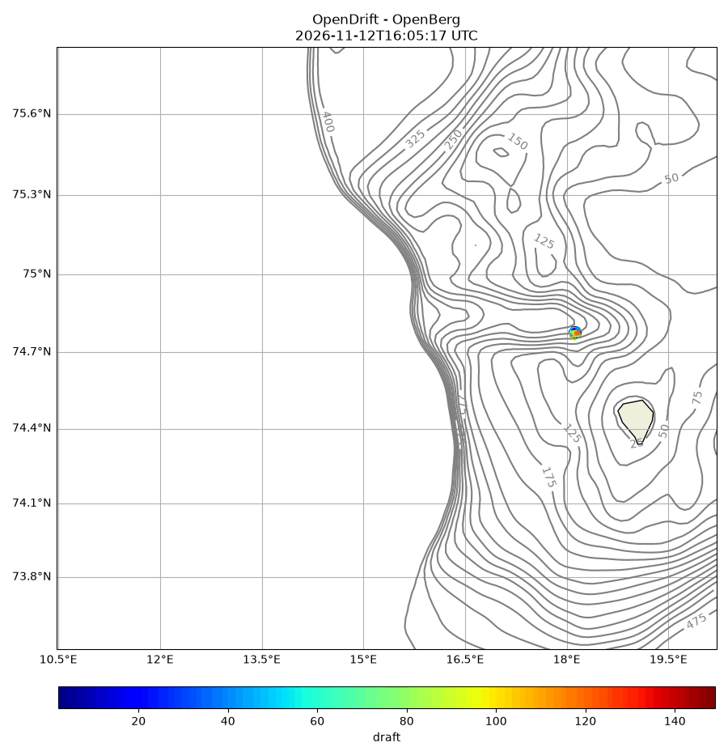
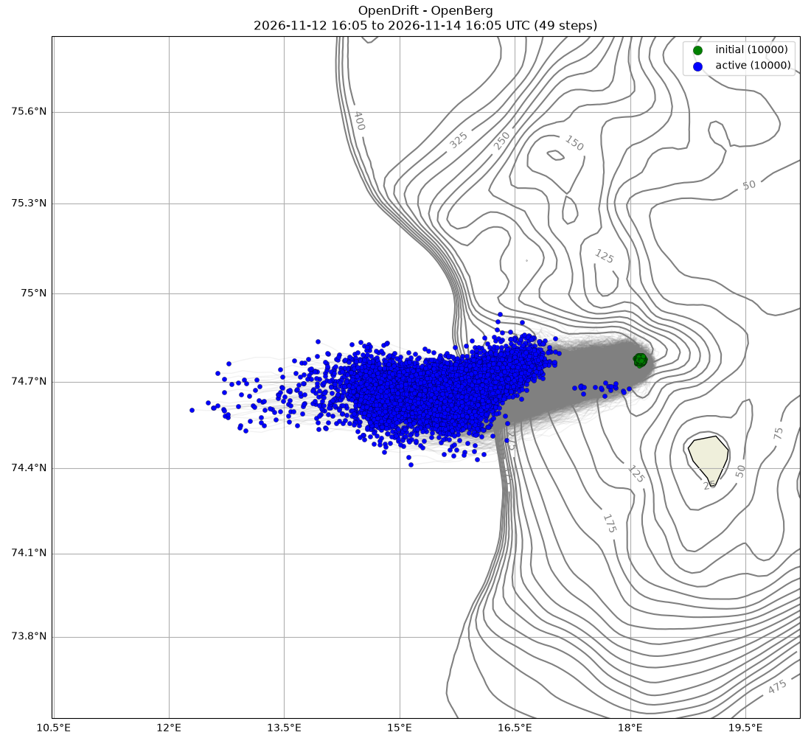
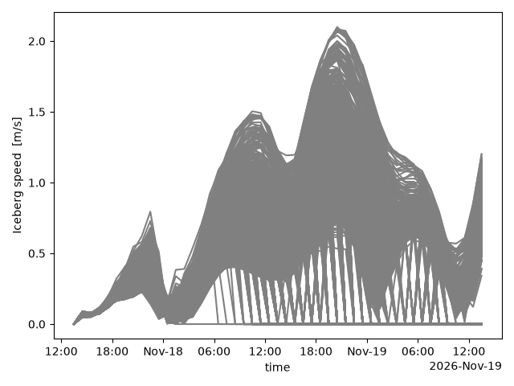

Note
Go to the end to download the full example code.
Icebergs (openberg)
from datetime import datetime, timedelta
import numpy as np
import matplotlib.pyplot as plt
import opendrift
from opendrift.models.openberg import OpenBerg
Currents and wind forcing
forcing = ['https://thredds.met.no/thredds/dodsC/fou-hi/barents_eps_zdepth_be']
A permutation of iceberg sizes/dimensions
n = 10
lengths = np.linspace(50, 500, n)
widths = np.linspace(20, 200, n)
sails = np.linspace(5, 50, n)
drafts = np.linspace(2, 120, n)
lengths, widths, sails, drafts = np.meshgrid(lengths, widths, sails, drafts)
icebergs = {'lon': 18.127, 'lat': 74.776, 'time': datetime.now(),
'number': lengths.size, 'radius': 500,
'sail': sails, 'draft': drafts, 'length': lengths, 'width': widths}
Simulating drift for 48 hours
o = OpenBerg()
o.set_config('drift:vertical_profile', False)
o.set_config('environment:constant:horizontal_diffusivity', 100)
o.add_readers_from_list(forcing)
o.seed_elements(**icebergs)
o.run(duration=timedelta(hours=48))
o.animation(color='draft', contourlines=np.arange(0, 500, 25))
13:31:58 DEBUG opendrift.config:168: Adding 18 config items from __init__
13:31:58 DEBUG opendrift.config:178: Overwriting config item readers:max_number_of_fails
13:31:58 DEBUG opendrift.config:168: Adding 14 config items from __init__
13:31:58 INFO opendrift:579: OpenDriftSimulation initialised (version 1.14.11 / v1.14.12-93-gcc8f52e)
13:31:58 DEBUG opendrift.config:168: Adding 11 config items from openberg
13:31:58 DEBUG opendrift.readers.reader_lazy:37: Delaying initialisation of LazyReader: https://thredds.met.no/thredds/dodsC/fou-hi/barents_eps_zdepth_be
13:31:58 DEBUG opendrift.models.basemodel.environment:323: Added reader LazyReader: https://thredds.met.no/thredds/dodsC/fou-hi/barents_eps_zdepth_be
13:31:58 DEBUG opendrift.readers.basereader:185: Variable mapping: ['sea_floor_depth_below_sea_level'] -> ['land_binary_mask'] is not activated
13:31:58 DEBUG opendrift.models.basemodel.environment:323: Added reader constant_reader
13:31:58 INFO opendrift.models.basemodel.environment:204: Adding a global landmask from GSHHG
13:31:58 DEBUG opendrift.readers.basereader.variables:571: Skipping calculation of vector component, since y is not north
13:31:58 DEBUG opendrift.readers.basereader.variables:571: Skipping calculation of vector component, since y is not north
13:31:58 DEBUG opendrift.readers.basereader.variables:571: Skipping calculation of vector component, since y is not north
13:31:58 DEBUG opendrift.readers.basereader.variables:571: Skipping calculation of vector component, since y is not north
13:31:58 DEBUG opendrift.readers.basereader:185: Variable mapping: ['sea_floor_depth_below_sea_level'] -> ['land_binary_mask'] is not activated
13:32:05 DEBUG opendrift.models.basemodel.environment:323: Added reader global_landmask
13:32:05 INFO opendrift.models.basemodel.environment:238: Fallback values will be used for the following variables which have no readers:
13:32:05 INFO opendrift.models.basemodel.environment:241: sea_floor_depth_below_sea_level: 10000.000000
13:32:05 INFO opendrift.models.basemodel.environment:241: sea_surface_height: 0.000000
13:32:05 INFO opendrift.models.basemodel.environment:241: sea_surface_x_slope: 0.000000
13:32:05 INFO opendrift.models.basemodel.environment:241: sea_surface_y_slope: 0.000000
13:32:05 INFO opendrift.models.basemodel.environment:241: sea_surface_wave_significant_height: 0.000000
13:32:05 INFO opendrift.models.basemodel.environment:241: sea_surface_wave_from_direction: 0.000000
13:32:05 INFO opendrift.models.basemodel.environment:241: sea_surface_wave_stokes_drift_x_velocity: 0.000000
13:32:05 INFO opendrift.models.basemodel.environment:241: sea_surface_wave_stokes_drift_y_velocity: 0.000000
13:32:05 INFO opendrift.models.basemodel.environment:241: sea_water_temperature: 2.000000
13:32:05 INFO opendrift.models.basemodel.environment:241: sea_water_salinity: 35.000000
13:32:05 INFO opendrift.models.basemodel.environment:241: sea_ice_area_fraction: 0.000000
13:32:05 INFO opendrift.models.basemodel.environment:241: sea_ice_thickness: 0.000000
13:32:05 INFO opendrift.models.basemodel.environment:241: sea_ice_x_velocity: 0.000000
13:32:05 INFO opendrift.models.basemodel.environment:241: sea_ice_y_velocity: 0.000000
13:32:05 DEBUG opendrift:165: Changed mode from Mode.Config to Mode.Ready
13:32:05 DEBUG opendrift.elements.elements:138: array sail is multidimensional -> flattening with ravel
13:32:05 DEBUG opendrift.elements.elements:138: array draft is multidimensional -> flattening with ravel
13:32:05 DEBUG opendrift.elements.elements:138: array length is multidimensional -> flattening with ravel
13:32:05 DEBUG opendrift.elements.elements:138: array width is multidimensional -> flattening with ravel
13:32:05 DEBUG opendrift:165: Changed mode from Mode.Ready to Mode.Run
13:32:05 DEBUG opendrift:1893:
------------------------------------------------------
Software and hardware:
OpenDrift version 1.14.11
Platform: Linux, 7.0.0-1017-aws
4.0 GB memory
36 processors (x86_64)
NumPy version 2.5.4
SciPy version 1.18.1
Matplotlib version 3.11.2
NetCDF4 version 1.7.5
Xarray version 2026.9.0
ADIOS (adios_db) version 1.2.5
Copernicusmarine version 2.5.1
Python version 3.14.10 | packaged by conda-forge | (main, Oct 26 2026, 11:35:38) [GCC 15.3.0]
------------------------------------------------------
13:32:05 DEBUG opendrift:1906: No output file is specified, neglecting export_buffer_length
13:32:05 INFO opendrift:1932: Storing previous values of element property lon because of condition (('general:coastline_action', 'in', ['stranding', 'previous']), 'or', ('general:seafloor_action', 'in', ['previous']))
13:32:05 INFO opendrift:1932: Storing previous values of element property lat because of condition (('general:coastline_action', 'in', ['stranding', 'previous']), 'or', ('general:seafloor_action', 'in', ['previous']))
13:32:05 DEBUG opendrift:2057: Finalizing environment and preparing readers for simulation coverage ([12.13479867 73.19932387 24.12024245 76.34887101]) and time (2026-11-17 13:31:58.718284 to 2026-11-19 13:31:58.718284)
13:32:05 DEBUG opendrift.models.basemodel.environment:167: Preparing LazyReader: https://thredds.met.no/thredds/dodsC/fou-hi/barents_eps_zdepth_be for extent [12.13479867 73.19932387 24.12024245 76.34887101]
13:32:05 DEBUG opendrift.models.basemodel.environment:167: Preparing constant_reader for extent [12.13479867 73.19932387 24.12024245 76.34887101]
13:32:05 DEBUG opendrift.readers.basereader.variables:584: Nothing more to prepare for constant_reader
13:32:05 DEBUG opendrift.models.basemodel.environment:167: Preparing global_landmask for extent [12.13479867 73.19932387 24.12024245 76.34887101]
13:32:05 DEBUG opendrift.readers.basereader.variables:584: Nothing more to prepare for global_landmask
13:32:05 DEBUG opendrift:2154: Initial self.result, size Frozen({'trajectory': 10000, 'time': 49})
13:32:05 INFO opendrift:968: Using existing reader for land_binary_mask to move elements to ocean
13:32:05 DEBUG opendrift.models.basemodel.environment:610: ----------------------------------------
13:32:05 DEBUG opendrift.models.basemodel.environment:611: Variable group ['land_binary_mask']
13:32:05 DEBUG opendrift.models.basemodel.environment:612: ----------------------------------------
13:32:05 DEBUG opendrift.models.basemodel.environment:616: Calling reader global_landmask
13:32:05 DEBUG opendrift.models.basemodel.environment:617: ----------------------------------------
13:32:05 DEBUG opendrift.models.basemodel.environment:637: Data needed for 10000 elements
13:32:05 DEBUG opendrift.readers.basereader.variables:790: Fetching variables from global_landmask covering 10000 elements
13:32:05 DEBUG opendrift.readers.basereader.continuous:37: Fetched env-before
13:32:05 DEBUG opendrift.readers.basereader.variables:668: Checking land_binary_mask for invalid values
13:32:05 DEBUG opendrift.readers.basereader.variables:826: Reader projection is latlon - rotation of vectors is not needed.
13:32:05 DEBUG opendrift.models.basemodel.environment:779: Obtained data for all elements.
13:32:05 DEBUG opendrift.models.basemodel.environment:792: ---------------------------------------
13:32:05 DEBUG opendrift.models.basemodel.environment:793: Finished processing all variable groups
13:32:05 DEBUG opendrift.models.basemodel.environment:915: ------------ SUMMARY -------------
13:32:05 DEBUG opendrift.models.basemodel.environment:917: land_binary_mask: 0 (min) 0 (max)
13:32:05 DEBUG opendrift.models.basemodel.environment:919: ---------------------------------
13:32:05 INFO opendrift:1000: All points are in ocean
13:32:05 DEBUG opendrift:925: to be seeded: 10000, already seeded 0
13:32:05 DEBUG opendrift:947: Released 10000 new elements.
13:32:05 DEBUG opendrift:2247: ======================================================================
13:32:05 INFO opendrift:2248: 2026-11-17 13:31:58.718284 - step 1 of 48 - 10000 active elements (0 deactivated)
13:32:05 DEBUG opendrift:2254: 0 elements scheduled.
13:32:05 DEBUG opendrift:2256: ======================================================================
13:32:05 DEBUG opendrift:2267: 74.7560806274414 <- latitude -> 74.7921142578125
13:32:05 DEBUG opendrift:2267: 18.063207626342773 <- longitude -> 18.19183349609375
13:32:05 DEBUG opendrift:2265: z = 0.0
13:32:05 DEBUG opendrift:2268: ---------------------------------
13:32:05 DEBUG opendrift.models.basemodel.environment:585: Variables not covered by any reader: ['sea_surface_wave_from_direction', 'x_sea_water_velocity', 'sea_floor_depth_below_sea_level', 'y_wind', 'x_wind', 'y_sea_water_velocity', 'sea_surface_wave_significant_height']
13:32:05 DEBUG opendrift.readers.reader_lazy:56: Initialising: LazyReader: https://thredds.met.no/thredds/dodsC/fou-hi/barents_eps_zdepth_be
13:32:05 DEBUG opendrift.readers:269: Testing reader <module 'opendrift.readers.reader_netCDF_CF_generic' from '/root/project/opendrift/readers/reader_netCDF_CF_generic.py'>
13:32:05 INFO opendrift.readers:67: Opening file with xr.open_dataset
13:32:05 DEBUG findlibs:303: about to search for libeccodes.so/eccodeslib in <function _find_in_package at 0x7e49e1a9e820>
13:32:05 DEBUG findlibs:303: about to search for libeccodes.so/eccodeslib in <function _find_in_python at 0x7e49e1a9e980>
13:32:05 DEBUG findlibs:305: found libeccodes.so/eccodeslib in <function _find_in_python at 0x7e49e1a9e980>
13:32:05 DEBUG gribapi.bindings:98: eccodes lib search: findlibs returned /opt/conda/envs/opendrift/lib/libeccodes.so
13:32:08 DEBUG opendrift.readers.reader_netCDF_CF_generic:131: Finding coordinate variables.
13:32:08 DEBUG opendrift.readers.reader_netCDF_CF_generic:146: Parsing CF grid mapping dictionary: {'grid_mapping_name': 'lambert_conformal_conic', 'standard_parallel': array([77.5, 77.5], dtype=float32), 'longitude_of_central_meridian': np.float32(-25.0), 'latitude_of_projection_origin': np.float32(77.5), 'earth_radius': np.float32(6.371e+06), 'proj4': '+proj=lcc +lat_0=77.5 +lon_0=-25 +lat_1=77.5 +lat_2=77.5 +no_defs +R=6.371e+06'}
13:32:08 DEBUG pyproj:40: PROJ_ERROR: proj_create: several objects matching this name: Krovak (Greenwich), Equal Earth Greenwich, Laborde Grid (Greenwich), Modified Krovak (Greenwich), Krovak East North (Greenwich), Modified Krovak East North (Greenwich), ...
13:32:08 INFO opendrift.readers.reader_netCDF_CF_generic:340: Detected dimensions: {'x': 'X', 'y': 'Y', 'z': 'depth', 'time': 'time'}
13:32:08 DEBUG opendrift.readers.reader_netCDF_CF_generic:376: Skipped variables without standard_name: ['angle']
13:32:08 DEBUG opendrift.readers.basereader.variables:571: Skipping calculation of vector component, since y is not north
13:32:08 DEBUG opendrift.readers.basereader.variables:571: Skipping calculation of vector component, since y is not north
13:32:08 DEBUG opendrift.readers.basereader.variables:571: Skipping calculation of vector component, since y is not north
13:32:08 DEBUG opendrift.readers.basereader.variables:571: Skipping calculation of vector component, since y is not north
13:32:08 DEBUG opendrift.readers.basereader.variables:643: Setting buffer size 10 for reader https://thredds.met.no/thredds/dodsC/fou-hi/barents_eps_zdepth_be, assuming a maximum average speed of 5 m/s and time span of 1:00:00
13:32:08 INFO opendrift.readers.basereader:175: Variable x_sea_water_velocity will be rotated from eastward_sea_water_velocity
13:32:08 INFO opendrift.readers.basereader:175: Variable y_sea_water_velocity will be rotated from northward_sea_water_velocity
13:32:08 DEBUG opendrift.readers.basereader:185: Variable mapping: ['sea_floor_depth_below_sea_level'] -> ['land_binary_mask'] is not activated
13:32:08 DEBUG opendrift.readers.basereader.variables:598: Adding variable mapping: ['x_wind', 'y_wind'] -> wind_speed
13:32:08 DEBUG opendrift.readers.basereader.variables:598: Adding variable mapping: ['sea_ice_x_velocity', 'sea_ice_y_velocity'] -> sea_ice_speed
13:32:08 DEBUG opendrift.readers.basereader.variables:598: Adding variable mapping: ['x_sea_water_velocity', 'y_sea_water_velocity'] -> sea_water_speed
13:32:08 DEBUG opendrift.readers.basereader.structured:151: Clearing cache for reader https://thredds.met.no/thredds/dodsC/fou-hi/barents_eps_zdepth_be before starting new simulation
13:32:08 DEBUG opendrift.readers.basereader.variables:643: Setting buffer size 4 for reader https://thredds.met.no/thredds/dodsC/fou-hi/barents_eps_zdepth_be, assuming a maximum average speed of 1 m/s and time span of 1:00:00
13:32:08 DEBUG opendrift.readers.basereader.variables:584: Nothing more to prepare for https://thredds.met.no/thredds/dodsC/fou-hi/barents_eps_zdepth_be
13:32:08 DEBUG opendrift.readers.reader_lazy:71: Reader initialised: https://thredds.met.no/thredds/dodsC/fou-hi/barents_eps_zdepth_be
13:32:08 DEBUG opendrift.readers.basereader.variables:643: Setting buffer size 4 for reader https://thredds.met.no/thredds/dodsC/fou-hi/barents_eps_zdepth_be, assuming a maximum average speed of 1 m/s and time span of 1:00:00
13:32:08 DEBUG opendrift.models.basemodel.environment:610: ----------------------------------------
13:32:08 DEBUG opendrift.models.basemodel.environment:611: Variable group ['horizontal_diffusivity']
13:32:08 DEBUG opendrift.models.basemodel.environment:612: ----------------------------------------
13:32:08 DEBUG opendrift.models.basemodel.environment:616: Calling reader constant_reader
13:32:08 DEBUG opendrift.models.basemodel.environment:617: ----------------------------------------
13:32:08 DEBUG opendrift.models.basemodel.environment:637: Data needed for 10000 elements
13:32:08 DEBUG opendrift.readers.basereader.variables:790: Fetching variables from constant_reader covering 10000 elements
13:32:08 DEBUG opendrift.readers.basereader.continuous:37: Fetched env-before
13:32:08 DEBUG opendrift.readers.basereader.variables:826: Reader projection is latlon - rotation of vectors is not needed.
13:32:08 DEBUG opendrift.models.basemodel.environment:779: Obtained data for all elements.
13:32:08 DEBUG opendrift.models.basemodel.environment:610: ----------------------------------------
13:32:08 DEBUG opendrift.models.basemodel.environment:611: Variable group ['land_binary_mask']
13:32:08 DEBUG opendrift.models.basemodel.environment:612: ----------------------------------------
13:32:08 DEBUG opendrift.models.basemodel.environment:616: Calling reader global_landmask
13:32:08 DEBUG opendrift.models.basemodel.environment:617: ----------------------------------------
13:32:08 DEBUG opendrift.models.basemodel.environment:637: Data needed for 10000 elements
13:32:08 DEBUG opendrift.readers.basereader.variables:790: Fetching variables from global_landmask covering 10000 elements
13:32:08 DEBUG opendrift.readers.basereader.continuous:37: Fetched env-before
13:32:08 DEBUG opendrift.readers.basereader.variables:668: Checking land_binary_mask for invalid values
13:32:08 DEBUG opendrift.readers.basereader.variables:826: Reader projection is latlon - rotation of vectors is not needed.
13:32:08 DEBUG opendrift.models.basemodel.environment:779: Obtained data for all elements.
13:32:08 DEBUG opendrift.models.basemodel.environment:610: ----------------------------------------
13:32:08 DEBUG opendrift.models.basemodel.environment:611: Variable group ['sea_floor_depth_below_sea_level', 'x_wind', 'y_wind', 'sea_ice_area_fraction', 'sea_ice_thickness', 'sea_ice_x_velocity', 'sea_ice_y_velocity', 'sea_water_salinity', 'sea_water_temperature', 'sea_surface_height', 'x_sea_water_velocity', 'y_sea_water_velocity']
13:32:08 DEBUG opendrift.models.basemodel.environment:612: ----------------------------------------
13:32:08 DEBUG opendrift.models.basemodel.environment:616: Calling reader https://thredds.met.no/thredds/dodsC/fou-hi/barents_eps_zdepth_be
13:32:08 DEBUG opendrift.models.basemodel.environment:617: ----------------------------------------
13:32:08 DEBUG opendrift.models.basemodel.environment:637: Data needed for 10000 elements
13:32:08 DEBUG opendrift.readers.basereader.variables:790: Fetching variables from https://thredds.met.no/thredds/dodsC/fou-hi/barents_eps_zdepth_be covering 10000 elements
13:32:08 DEBUG opendrift.readers.basereader.structured:220: Reader time:
2026-11-17 13:00:00 (before)
2026-11-17 14:00:00 (after)
13:32:10 DEBUG opendrift.readers.reader_netCDF_CF_generic:475: Using eastward_sea_water_velocity to retrieve x_sea_water_velocity
13:32:11 DEBUG opendrift.readers.reader_netCDF_CF_generic:475: Using northward_sea_water_velocity to retrieve y_sea_water_velocity
13:32:11 DEBUG opendrift.readers.reader_netCDF_CF_generic:607: Rotating vector from east/north to xy orientation: ['x_sea_water_velocity', 'y_sea_water_velocity']
13:32:11 DEBUG opendrift.readers.basereader.variables:126: Rotating vectors between -42.53997553957136 and -41.47306265087688 degrees.
13:32:11 DEBUG opendrift.readers.basereader.variables:668: Checking sea_floor_depth_below_sea_level for invalid values
13:32:11 DEBUG opendrift.readers.basereader.variables:668: Checking x_wind for invalid values
13:32:11 DEBUG opendrift.readers.basereader.variables:668: Checking y_wind for invalid values
13:32:11 DEBUG opendrift.readers.basereader.variables:668: Checking x_sea_water_velocity for invalid values
13:32:11 DEBUG opendrift.readers.basereader.variables:668: Checking y_sea_water_velocity for invalid values
13:32:11 DEBUG opendrift.readers.basereader.structured:290: Fetched env-block (size 11x9x7) for time before (2026-11-17 13:00:00)
13:32:13 DEBUG opendrift.readers.reader_netCDF_CF_generic:475: Using eastward_sea_water_velocity to retrieve x_sea_water_velocity
13:32:14 DEBUG opendrift.readers.reader_netCDF_CF_generic:475: Using northward_sea_water_velocity to retrieve y_sea_water_velocity
13:32:14 DEBUG opendrift.readers.reader_netCDF_CF_generic:607: Rotating vector from east/north to xy orientation: ['x_sea_water_velocity', 'y_sea_water_velocity']
13:32:14 DEBUG opendrift.readers.basereader.variables:126: Rotating vectors between -42.53997553957136 and -41.47306265087688 degrees.
13:32:14 DEBUG opendrift.readers.basereader.variables:668: Checking sea_floor_depth_below_sea_level for invalid values
13:32:14 DEBUG opendrift.readers.basereader.variables:668: Checking x_wind for invalid values
13:32:14 DEBUG opendrift.readers.basereader.variables:668: Checking y_wind for invalid values
13:32:14 DEBUG opendrift.readers.basereader.variables:668: Checking x_sea_water_velocity for invalid values
13:32:14 DEBUG opendrift.readers.basereader.variables:668: Checking y_sea_water_velocity for invalid values
13:32:14 DEBUG opendrift.readers.basereader.structured:313: Fetched env-block (size 11x9x7) for time after (2026-11-17 14:00:00)
13:32:14 DEBUG opendrift.readers.basereader.structured:334: Interpolating before (2026-11-17 13:00:00) in space (linearNDFast)
13:32:14 DEBUG opendrift.readers.interpolation.structured:97: Initialising interpolator.
13:32:14 DEBUG opendrift.readers.basereader.structured:340: Interpolating after (2026-11-17 14:00:00) in space (linearNDFast)
13:32:14 DEBUG opendrift.readers.interpolation.structured:97: Initialising interpolator.
13:32:14 DEBUG opendrift.readers.basereader.structured:355: Interpolating before (2026-11-17 13:00:00, weight 0.47) and
after (2026-11-17 14:00:00, weight 0.53) in time
13:32:14 DEBUG opendrift.readers.basereader.structured:368: Interpolating profiles in time
13:32:14 DEBUG opendrift.readers.basereader.variables:126: Rotating vectors between 42.055670907984315 and 42.18125751143569 degrees.
13:32:14 DEBUG opendrift.readers.basereader.variables:126: Rotating vectors between 42.055670907984315 and 42.18125751143569 degrees.
13:32:14 DEBUG opendrift.readers.basereader.variables:126: Rotating vectors between 42.055670907984315 and 42.18125751143569 degrees.
13:32:14 DEBUG opendrift.readers.basereader.variables:126: Rotating vectors between 42.055670907984315 and 42.18125751143569 degrees.
13:32:14 DEBUG opendrift.models.basemodel.environment:779: Obtained data for all elements.
13:32:14 DEBUG opendrift.models.basemodel.environment:792: ---------------------------------------
13:32:14 DEBUG opendrift.models.basemodel.environment:793: Finished processing all variable groups
13:32:14 DEBUG opendrift.models.basemodel.environment:829: Using fallback value 2 for sea_water_temperature for 0 profiles
13:32:14 DEBUG opendrift.models.basemodel.environment:829: Using fallback value 35 for sea_water_salinity for 0 profiles
13:32:14 DEBUG opendrift.models.basemodel.environment:915: ------------ SUMMARY -------------
13:32:14 DEBUG opendrift.models.basemodel.environment:917: x_sea_water_velocity: -0.151146 (min) -0.138097 (max)
13:32:14 DEBUG opendrift.models.basemodel.environment:917: y_sea_water_velocity: -0.0409959 (min) -0.021968 (max)
13:32:14 DEBUG opendrift.models.basemodel.environment:917: sea_floor_depth_below_sea_level: 227.599 (min) 266.329 (max)
13:32:14 DEBUG opendrift.models.basemodel.environment:917: sea_surface_height: -0.543794 (min) -0.538093 (max)
13:32:14 DEBUG opendrift.models.basemodel.environment:917: sea_surface_x_slope: 0 (min) 0 (max)
13:32:14 DEBUG opendrift.models.basemodel.environment:917: sea_surface_y_slope: 0 (min) 0 (max)
13:32:14 DEBUG opendrift.models.basemodel.environment:917: x_wind: 2.52203 (min) 2.60195 (max)
13:32:14 DEBUG opendrift.models.basemodel.environment:917: y_wind: 0.822861 (min) 0.929326 (max)
13:32:14 DEBUG opendrift.models.basemodel.environment:917: horizontal_diffusivity: 100 (min) 100 (max)
13:32:14 DEBUG opendrift.models.basemodel.environment:917: sea_surface_wave_significant_height: 0 (min) 0 (max)
13:32:14 DEBUG opendrift.models.basemodel.environment:917: sea_surface_wave_from_direction: 0 (min) 0 (max)
13:32:14 DEBUG opendrift.models.basemodel.environment:917: sea_surface_wave_stokes_drift_x_velocity: 0 (min) 0 (max)
13:32:14 DEBUG opendrift.models.basemodel.environment:917: sea_surface_wave_stokes_drift_y_velocity: 0 (min) 0 (max)
13:32:14 DEBUG opendrift.models.basemodel.environment:917: sea_water_temperature: 5.24803 (min) 5.42079 (max)
13:32:14 DEBUG opendrift.models.basemodel.environment:917: sea_water_salinity: 34.941 (min) 34.9539 (max)
13:32:14 DEBUG opendrift.models.basemodel.environment:917: sea_ice_area_fraction: 0 (min) 0 (max)
13:32:14 DEBUG opendrift.models.basemodel.environment:917: sea_ice_thickness: 0 (min) 0 (max)
13:32:14 DEBUG opendrift.models.basemodel.environment:917: sea_ice_x_velocity: 0 (min) 0 (max)
13:32:14 DEBUG opendrift.models.basemodel.environment:917: sea_ice_y_velocity: 0 (min) 0 (max)
13:32:14 DEBUG opendrift.models.basemodel.environment:917: land_binary_mask: 0 (min) 0 (max)
13:32:14 DEBUG opendrift.models.basemodel.environment:919: ---------------------------------
13:32:14 DEBUG opendrift.models.physics_methods:928: Calculating Hs from wind, min: 0.176233, mean: 0.179451, max: 0.183665
13:32:14 WARNING opendrift.models.physics_methods:937: Setting wave direction equal to wind direction, min: 69.858528, mean: 71.128372, max: 72.413109
13:32:14 DEBUG opendrift:710: No elements hit coastline.
13:32:14 DEBUG opendrift:781: No elements hit seafloor.
13:32:14 DEBUG opendrift:1821: No elements to deactivate
13:32:14 DEBUG opendrift:2305: Calling OpenBerg.update()
13:32:14 DEBUG opendrift.models.openberg:606: Rolling over : 3615 icebergs ...
13:32:14 DEBUG opendrift.models.openberg:558: Melting is disabled
13:32:14 DEBUG opendrift.models.openberg:468: Advection with surface currents
13:32:14 DEBUG opendrift.models.openberg:528: No grounded icebergs detected in this timestep
13:32:16 DEBUG opendrift:1784: Moving elements according to horizontal diffusivity of 100.0, with speeds between 0.0034749393865888857 and 1.105526129491915 m/s
13:32:16 DEBUG opendrift:925: to be seeded: 0, already seeded 10000
13:32:16 DEBUG opendrift:2247: ======================================================================
13:32:16 INFO opendrift:2248: 2026-11-17 14:31:58.718284 - step 2 of 48 - 10000 active elements (0 deactivated)
13:32:16 DEBUG opendrift:2254: 0 elements scheduled.
13:32:16 DEBUG opendrift:2256: ======================================================================
13:32:16 DEBUG opendrift:2267: 74.74335451504811 <- latitude -> 74.81050528629339
13:32:16 DEBUG opendrift:2267: 17.9672424958112 <- longitude -> 18.24467529756211
13:32:16 DEBUG opendrift:2265: z = 0.0
13:32:16 DEBUG opendrift:2268: ---------------------------------
13:32:16 DEBUG opendrift.models.basemodel.environment:610: ----------------------------------------
13:32:16 DEBUG opendrift.models.basemodel.environment:611: Variable group ['horizontal_diffusivity']
13:32:16 DEBUG opendrift.models.basemodel.environment:612: ----------------------------------------
13:32:16 DEBUG opendrift.models.basemodel.environment:616: Calling reader constant_reader
13:32:16 DEBUG opendrift.models.basemodel.environment:617: ----------------------------------------
13:32:16 DEBUG opendrift.models.basemodel.environment:637: Data needed for 10000 elements
13:32:16 DEBUG opendrift.readers.basereader.variables:790: Fetching variables from constant_reader covering 10000 elements
13:32:16 DEBUG opendrift.readers.basereader.continuous:37: Fetched env-before
13:32:16 DEBUG opendrift.readers.basereader.variables:826: Reader projection is latlon - rotation of vectors is not needed.
13:32:16 DEBUG opendrift.models.basemodel.environment:779: Obtained data for all elements.
13:32:16 DEBUG opendrift.models.basemodel.environment:610: ----------------------------------------
13:32:16 DEBUG opendrift.models.basemodel.environment:611: Variable group ['land_binary_mask']
13:32:16 DEBUG opendrift.models.basemodel.environment:612: ----------------------------------------
13:32:16 DEBUG opendrift.models.basemodel.environment:616: Calling reader global_landmask
13:32:16 DEBUG opendrift.models.basemodel.environment:617: ----------------------------------------
13:32:16 DEBUG opendrift.models.basemodel.environment:637: Data needed for 10000 elements
13:32:16 DEBUG opendrift.readers.basereader.variables:790: Fetching variables from global_landmask covering 10000 elements
13:32:16 DEBUG opendrift.readers.basereader.continuous:37: Fetched env-before
13:32:16 DEBUG opendrift.readers.basereader.variables:668: Checking land_binary_mask for invalid values
13:32:16 DEBUG opendrift.readers.basereader.variables:826: Reader projection is latlon - rotation of vectors is not needed.
13:32:16 DEBUG opendrift.models.basemodel.environment:779: Obtained data for all elements.
13:32:16 DEBUG opendrift.models.basemodel.environment:610: ----------------------------------------
13:32:16 DEBUG opendrift.models.basemodel.environment:611: Variable group ['sea_floor_depth_below_sea_level', 'x_wind', 'y_wind', 'sea_ice_area_fraction', 'sea_ice_thickness', 'sea_ice_x_velocity', 'sea_ice_y_velocity', 'sea_water_salinity', 'sea_water_temperature', 'sea_surface_height', 'x_sea_water_velocity', 'y_sea_water_velocity']
13:32:16 DEBUG opendrift.models.basemodel.environment:612: ----------------------------------------
13:32:16 DEBUG opendrift.models.basemodel.environment:616: Calling reader https://thredds.met.no/thredds/dodsC/fou-hi/barents_eps_zdepth_be
13:32:16 DEBUG opendrift.models.basemodel.environment:617: ----------------------------------------
13:32:16 DEBUG opendrift.models.basemodel.environment:637: Data needed for 10000 elements
13:32:16 DEBUG opendrift.readers.basereader.variables:790: Fetching variables from https://thredds.met.no/thredds/dodsC/fou-hi/barents_eps_zdepth_be covering 10000 elements
13:32:16 DEBUG opendrift.readers.basereader.structured:220: Reader time:
2026-11-17 14:00:00 (before)
2026-11-17 15:00:00 (after)
13:32:18 DEBUG opendrift.readers.reader_netCDF_CF_generic:475: Using eastward_sea_water_velocity to retrieve x_sea_water_velocity
13:32:18 DEBUG opendrift.readers.reader_netCDF_CF_generic:475: Using northward_sea_water_velocity to retrieve y_sea_water_velocity
13:32:19 DEBUG opendrift.readers.reader_netCDF_CF_generic:607: Rotating vector from east/north to xy orientation: ['x_sea_water_velocity', 'y_sea_water_velocity']
13:32:19 DEBUG opendrift.readers.basereader.variables:126: Rotating vectors between -42.657833230996125 and -41.41782463118848 degrees.
13:32:19 DEBUG opendrift.readers.basereader.variables:668: Checking sea_floor_depth_below_sea_level for invalid values
13:32:19 DEBUG opendrift.readers.basereader.variables:668: Checking x_wind for invalid values
13:32:19 DEBUG opendrift.readers.basereader.variables:668: Checking y_wind for invalid values
13:32:19 DEBUG opendrift.readers.basereader.variables:668: Checking x_sea_water_velocity for invalid values
13:32:19 DEBUG opendrift.readers.basereader.variables:668: Checking y_sea_water_velocity for invalid values
13:32:19 DEBUG opendrift.readers.basereader.structured:313: Fetched env-block (size 12x11x7) for time after (2026-11-17 15:00:00)
13:32:19 DEBUG opendrift.readers.basereader.structured:334: Interpolating before (2026-11-17 14:00:00) in space (linearNDFast)
13:32:19 DEBUG opendrift.readers.interpolation.structured:97: Initialising interpolator.
13:32:19 DEBUG opendrift.readers.basereader.structured:340: Interpolating after (2026-11-17 15:00:00) in space (linearNDFast)
13:32:19 DEBUG opendrift.readers.interpolation.structured:97: Initialising interpolator.
13:32:19 DEBUG opendrift.readers.basereader.structured:355: Interpolating before (2026-11-17 14:00:00, weight 0.47) and
after (2026-11-17 15:00:00, weight 0.53) in time
13:32:19 DEBUG opendrift.readers.basereader.structured:368: Interpolating profiles in time
13:32:19 DEBUG opendrift.readers.basereader.variables:126: Rotating vectors between 41.962000534572866 and 42.232837053276015 degrees.
13:32:19 DEBUG opendrift.readers.basereader.variables:126: Rotating vectors between 41.962000534572866 and 42.232837053276015 degrees.
13:32:19 DEBUG opendrift.readers.basereader.variables:126: Rotating vectors between 41.962000534572866 and 42.232837053276015 degrees.
13:32:19 DEBUG opendrift.readers.basereader.variables:126: Rotating vectors between 41.962000534572866 and 42.232837053276015 degrees.
13:32:19 DEBUG opendrift.models.basemodel.environment:779: Obtained data for all elements.
13:32:19 DEBUG opendrift.models.basemodel.environment:792: ---------------------------------------
13:32:19 DEBUG opendrift.models.basemodel.environment:793: Finished processing all variable groups
13:32:19 DEBUG opendrift.models.basemodel.environment:829: Using fallback value 2 for sea_water_temperature for 0 profiles
13:32:19 DEBUG opendrift.models.basemodel.environment:829: Using fallback value 35 for sea_water_salinity for 0 profiles
13:32:19 DEBUG opendrift.models.basemodel.environment:915: ------------ SUMMARY -------------
13:32:19 DEBUG opendrift.models.basemodel.environment:917: x_sea_water_velocity: -0.145521 (min) -0.123378 (max)
13:32:19 DEBUG opendrift.models.basemodel.environment:917: y_sea_water_velocity: -0.00297489 (min) 0.0270598 (max)
13:32:19 DEBUG opendrift.models.basemodel.environment:917: sea_floor_depth_below_sea_level: 211.103 (min) 276.382 (max)
13:32:19 DEBUG opendrift.models.basemodel.environment:917: sea_surface_height: -0.458444 (min) -0.450665 (max)
13:32:19 DEBUG opendrift.models.basemodel.environment:917: sea_surface_x_slope: 0 (min) 0 (max)
13:32:19 DEBUG opendrift.models.basemodel.environment:917: sea_surface_y_slope: 0 (min) 0 (max)
13:32:19 DEBUG opendrift.models.basemodel.environment:917: x_wind: 2.44563 (min) 2.61188 (max)
13:32:19 DEBUG opendrift.models.basemodel.environment:917: y_wind: 0.515885 (min) 0.948597 (max)
13:32:19 DEBUG opendrift.models.basemodel.environment:917: horizontal_diffusivity: 100 (min) 100 (max)
13:32:19 DEBUG opendrift.models.basemodel.environment:917: sea_surface_wave_significant_height: 0 (min) 0 (max)
13:32:19 DEBUG opendrift.models.basemodel.environment:917: sea_surface_wave_from_direction: 0 (min) 0 (max)
13:32:19 DEBUG opendrift.models.basemodel.environment:917: sea_surface_wave_stokes_drift_x_velocity: 0 (min) 0 (max)
13:32:19 DEBUG opendrift.models.basemodel.environment:917: sea_surface_wave_stokes_drift_y_velocity: 0 (min) 0 (max)
13:32:19 DEBUG opendrift.models.basemodel.environment:917: sea_water_temperature: 4.99108 (min) 5.4552 (max)
13:32:19 DEBUG opendrift.models.basemodel.environment:917: sea_water_salinity: 34.9023 (min) 34.9557 (max)
13:32:19 DEBUG opendrift.models.basemodel.environment:917: sea_ice_area_fraction: 0 (min) 0 (max)
13:32:19 DEBUG opendrift.models.basemodel.environment:917: sea_ice_thickness: 0 (min) 0 (max)
13:32:19 DEBUG opendrift.models.basemodel.environment:917: sea_ice_x_velocity: 0 (min) 0 (max)
13:32:19 DEBUG opendrift.models.basemodel.environment:917: sea_ice_y_velocity: 0 (min) 0 (max)
13:32:19 DEBUG opendrift.models.basemodel.environment:917: land_binary_mask: 0 (min) 0 (max)
13:32:19 DEBUG opendrift.models.basemodel.environment:919: ---------------------------------
13:32:19 DEBUG opendrift.models.physics_methods:928: Calculating Hs from wind, min: 0.169242, mean: 0.174792, max: 0.177327
13:32:19 WARNING opendrift.models.physics_methods:937: Setting wave direction equal to wind direction, min: 68.812584, mean: 74.573975, max: 78.696770
13:32:19 DEBUG opendrift:710: No elements hit coastline.
13:32:19 DEBUG opendrift:781: No elements hit seafloor.
13:32:19 DEBUG opendrift:1821: No elements to deactivate
13:32:19 DEBUG opendrift:2305: Calling OpenBerg.update()
13:32:19 DEBUG opendrift.models.openberg:558: Melting is disabled
13:32:19 DEBUG opendrift.models.openberg:468: Advection with surface currents
13:32:19 DEBUG opendrift.models.openberg:528: No grounded icebergs detected in this timestep
13:32:21 DEBUG opendrift:1784: Moving elements according to horizontal diffusivity of 100.0, with speeds between 0.0036326958526624563 and 1.3010692822175616 m/s
13:32:21 DEBUG opendrift:925: to be seeded: 0, already seeded 10000
13:32:21 DEBUG opendrift:2247: ======================================================================
13:32:21 INFO opendrift:2248: 2026-11-17 15:31:58.718284 - step 3 of 48 - 10000 active elements (0 deactivated)
13:32:21 DEBUG opendrift:2254: 0 elements scheduled.
13:32:21 DEBUG opendrift:2256: ======================================================================
13:32:21 DEBUG opendrift:2267: 74.734201497017 <- latitude -> 74.8206136256786
13:32:21 DEBUG opendrift:2267: 17.954030568246697 <- longitude -> 18.270365532163307
13:32:21 DEBUG opendrift:2265: z = 0.0
13:32:21 DEBUG opendrift:2268: ---------------------------------
13:32:21 DEBUG opendrift.models.basemodel.environment:610: ----------------------------------------
13:32:21 DEBUG opendrift.models.basemodel.environment:611: Variable group ['horizontal_diffusivity']
13:32:21 DEBUG opendrift.models.basemodel.environment:612: ----------------------------------------
13:32:21 DEBUG opendrift.models.basemodel.environment:616: Calling reader constant_reader
13:32:21 DEBUG opendrift.models.basemodel.environment:617: ----------------------------------------
13:32:21 DEBUG opendrift.models.basemodel.environment:637: Data needed for 10000 elements
13:32:21 DEBUG opendrift.readers.basereader.variables:790: Fetching variables from constant_reader covering 10000 elements
13:32:21 DEBUG opendrift.readers.basereader.continuous:37: Fetched env-before
13:32:21 DEBUG opendrift.readers.basereader.variables:826: Reader projection is latlon - rotation of vectors is not needed.
13:32:21 DEBUG opendrift.models.basemodel.environment:779: Obtained data for all elements.
13:32:21 DEBUG opendrift.models.basemodel.environment:610: ----------------------------------------
13:32:21 DEBUG opendrift.models.basemodel.environment:611: Variable group ['land_binary_mask']
13:32:21 DEBUG opendrift.models.basemodel.environment:612: ----------------------------------------
13:32:21 DEBUG opendrift.models.basemodel.environment:616: Calling reader global_landmask
13:32:21 DEBUG opendrift.models.basemodel.environment:617: ----------------------------------------
13:32:21 DEBUG opendrift.models.basemodel.environment:637: Data needed for 10000 elements
13:32:21 DEBUG opendrift.readers.basereader.variables:790: Fetching variables from global_landmask covering 10000 elements
13:32:21 DEBUG opendrift.readers.basereader.continuous:37: Fetched env-before
13:32:21 DEBUG opendrift.readers.basereader.variables:668: Checking land_binary_mask for invalid values
13:32:21 DEBUG opendrift.readers.basereader.variables:826: Reader projection is latlon - rotation of vectors is not needed.
13:32:21 DEBUG opendrift.models.basemodel.environment:779: Obtained data for all elements.
13:32:21 DEBUG opendrift.models.basemodel.environment:610: ----------------------------------------
13:32:21 DEBUG opendrift.models.basemodel.environment:611: Variable group ['sea_floor_depth_below_sea_level', 'x_wind', 'y_wind', 'sea_ice_area_fraction', 'sea_ice_thickness', 'sea_ice_x_velocity', 'sea_ice_y_velocity', 'sea_water_salinity', 'sea_water_temperature', 'sea_surface_height', 'x_sea_water_velocity', 'y_sea_water_velocity']
13:32:21 DEBUG opendrift.models.basemodel.environment:612: ----------------------------------------
13:32:21 DEBUG opendrift.models.basemodel.environment:616: Calling reader https://thredds.met.no/thredds/dodsC/fou-hi/barents_eps_zdepth_be
13:32:21 DEBUG opendrift.models.basemodel.environment:617: ----------------------------------------
13:32:21 DEBUG opendrift.models.basemodel.environment:637: Data needed for 10000 elements
13:32:21 DEBUG opendrift.readers.basereader.variables:790: Fetching variables from https://thredds.met.no/thredds/dodsC/fou-hi/barents_eps_zdepth_be covering 10000 elements
13:32:21 DEBUG opendrift.readers.basereader.structured:220: Reader time:
2026-11-17 15:00:00 (before)
2026-11-17 16:00:00 (after)
13:32:24 DEBUG opendrift.readers.reader_netCDF_CF_generic:475: Using eastward_sea_water_velocity to retrieve x_sea_water_velocity
13:32:24 DEBUG opendrift.readers.reader_netCDF_CF_generic:475: Using northward_sea_water_velocity to retrieve y_sea_water_velocity
13:32:24 DEBUG opendrift.readers.reader_netCDF_CF_generic:607: Rotating vector from east/north to xy orientation: ['x_sea_water_velocity', 'y_sea_water_velocity']
13:32:24 DEBUG opendrift.readers.basereader.variables:126: Rotating vectors between -42.657833230996125 and -41.300114583572245 degrees.
13:32:24 DEBUG opendrift.readers.basereader.variables:668: Checking sea_floor_depth_below_sea_level for invalid values
13:32:24 DEBUG opendrift.readers.basereader.variables:668: Checking x_wind for invalid values
13:32:24 DEBUG opendrift.readers.basereader.variables:668: Checking y_wind for invalid values
13:32:24 DEBUG opendrift.readers.basereader.variables:668: Checking x_sea_water_velocity for invalid values
13:32:24 DEBUG opendrift.readers.basereader.variables:668: Checking y_sea_water_velocity for invalid values
13:32:24 DEBUG opendrift.readers.basereader.structured:313: Fetched env-block (size 13x12x7) for time after (2026-11-17 16:00:00)
13:32:24 DEBUG opendrift.readers.basereader.structured:334: Interpolating before (2026-11-17 15:00:00) in space (linearNDFast)
13:32:24 DEBUG opendrift.readers.interpolation.structured:97: Initialising interpolator.
13:32:24 DEBUG opendrift.readers.basereader.structured:340: Interpolating after (2026-11-17 16:00:00) in space (linearNDFast)
13:32:24 DEBUG opendrift.readers.interpolation.structured:97: Initialising interpolator.
13:32:24 DEBUG opendrift.readers.basereader.structured:355: Interpolating before (2026-11-17 15:00:00, weight 0.47) and
after (2026-11-17 16:00:00, weight 0.53) in time
13:32:24 DEBUG opendrift.readers.basereader.structured:368: Interpolating profiles in time
13:32:24 DEBUG opendrift.readers.basereader.variables:126: Rotating vectors between 41.949081406421996 and 42.25790803212301 degrees.
13:32:24 DEBUG opendrift.readers.basereader.variables:126: Rotating vectors between 41.949081406421996 and 42.25790803212301 degrees.
13:32:24 DEBUG opendrift.readers.basereader.variables:126: Rotating vectors between 41.949081406421996 and 42.25790803212301 degrees.
13:32:25 DEBUG opendrift.readers.basereader.variables:126: Rotating vectors between 41.949081406421996 and 42.25790803212301 degrees.
13:32:25 DEBUG opendrift.models.basemodel.environment:779: Obtained data for all elements.
13:32:25 DEBUG opendrift.models.basemodel.environment:792: ---------------------------------------
13:32:25 DEBUG opendrift.models.basemodel.environment:793: Finished processing all variable groups
13:32:25 DEBUG opendrift.models.basemodel.environment:829: Using fallback value 2 for sea_water_temperature for 0 profiles
13:32:25 DEBUG opendrift.models.basemodel.environment:829: Using fallback value 35 for sea_water_salinity for 0 profiles
13:32:25 DEBUG opendrift.models.basemodel.environment:915: ------------ SUMMARY -------------
13:32:25 DEBUG opendrift.models.basemodel.environment:917: x_sea_water_velocity: -0.109745 (min) -0.0617368 (max)
13:32:25 DEBUG opendrift.models.basemodel.environment:917: y_sea_water_velocity: 0.0401211 (min) 0.100521 (max)
13:32:25 DEBUG opendrift.models.basemodel.environment:917: sea_floor_depth_below_sea_level: 199.101 (min) 283.374 (max)
13:32:25 DEBUG opendrift.models.basemodel.environment:917: sea_surface_height: -0.380029 (min) -0.372379 (max)
13:32:25 DEBUG opendrift.models.basemodel.environment:917: sea_surface_x_slope: 0 (min) 0 (max)
13:32:25 DEBUG opendrift.models.basemodel.environment:917: sea_surface_y_slope: 0 (min) 0 (max)
13:32:25 DEBUG opendrift.models.basemodel.environment:917: x_wind: 2.12142 (min) 2.53183 (max)
13:32:25 DEBUG opendrift.models.basemodel.environment:917: y_wind: 0.83028 (min) 1.29438 (max)
13:32:25 DEBUG opendrift.models.basemodel.environment:917: horizontal_diffusivity: 100 (min) 100 (max)
13:32:25 DEBUG opendrift.models.basemodel.environment:917: sea_surface_wave_significant_height: 0 (min) 0 (max)
13:32:25 DEBUG opendrift.models.basemodel.environment:917: sea_surface_wave_from_direction: 0 (min) 0 (max)
13:32:25 DEBUG opendrift.models.basemodel.environment:917: sea_surface_wave_stokes_drift_x_velocity: 0 (min) 0 (max)
13:32:25 DEBUG opendrift.models.basemodel.environment:917: sea_surface_wave_stokes_drift_y_velocity: 0 (min) 0 (max)
13:32:25 DEBUG opendrift.models.basemodel.environment:917: sea_water_temperature: 4.62201 (min) 5.47637 (max)
13:32:25 DEBUG opendrift.models.basemodel.environment:917: sea_water_salinity: 34.8343 (min) 34.9555 (max)
13:32:25 DEBUG opendrift.models.basemodel.environment:917: sea_ice_area_fraction: 0 (min) 0 (max)
13:32:25 DEBUG opendrift.models.basemodel.environment:917: sea_ice_thickness: 0 (min) 0 (max)
13:32:25 DEBUG opendrift.models.basemodel.environment:917: sea_ice_x_velocity: 0 (min) 0 (max)
13:32:25 DEBUG opendrift.models.basemodel.environment:917: sea_ice_y_velocity: 0 (min) 0 (max)
13:32:25 DEBUG opendrift.models.basemodel.environment:917: land_binary_mask: 0 (min) 0 (max)
13:32:25 DEBUG opendrift.models.basemodel.environment:919: ---------------------------------
13:32:25 DEBUG opendrift.models.physics_methods:928: Calculating Hs from wind, min: 0.151925, mean: 0.167155, max: 0.183180
13:32:25 WARNING opendrift.models.physics_methods:937: Setting wave direction equal to wind direction, min: 58.610641, mean: 66.165619, max: 71.384888
13:32:25 DEBUG opendrift:710: No elements hit coastline.
13:32:25 DEBUG opendrift:781: No elements hit seafloor.
13:32:25 DEBUG opendrift:1821: No elements to deactivate
13:32:25 DEBUG opendrift:2305: Calling OpenBerg.update()
13:32:25 DEBUG opendrift.models.openberg:558: Melting is disabled
13:32:25 DEBUG opendrift.models.openberg:468: Advection with surface currents
13:32:25 DEBUG opendrift.models.openberg:528: No grounded icebergs detected in this timestep
13:32:26 DEBUG opendrift:1784: Moving elements according to horizontal diffusivity of 100.0, with speeds between 0.0020962482474473475 and 1.0050923494063644 m/s
13:32:26 DEBUG opendrift:925: to be seeded: 0, already seeded 10000
13:32:26 DEBUG opendrift:2247: ======================================================================
13:32:26 INFO opendrift:2248: 2026-11-17 16:31:58.718284 - step 4 of 48 - 10000 active elements (0 deactivated)
13:32:26 DEBUG opendrift:2254: 0 elements scheduled.
13:32:26 DEBUG opendrift:2256: ======================================================================
13:32:26 DEBUG opendrift:2267: 74.73076753002702 <- latitude -> 74.8366588945982
13:32:26 DEBUG opendrift:2267: 17.907313495926402 <- longitude -> 18.304163636154684
13:32:26 DEBUG opendrift:2265: z = 0.0
13:32:26 DEBUG opendrift:2268: ---------------------------------
13:32:26 DEBUG opendrift.models.basemodel.environment:610: ----------------------------------------
13:32:26 DEBUG opendrift.models.basemodel.environment:611: Variable group ['horizontal_diffusivity']
13:32:26 DEBUG opendrift.models.basemodel.environment:612: ----------------------------------------
13:32:26 DEBUG opendrift.models.basemodel.environment:616: Calling reader constant_reader
13:32:26 DEBUG opendrift.models.basemodel.environment:617: ----------------------------------------
13:32:26 DEBUG opendrift.models.basemodel.environment:637: Data needed for 10000 elements
13:32:26 DEBUG opendrift.readers.basereader.variables:790: Fetching variables from constant_reader covering 10000 elements
13:32:26 DEBUG opendrift.readers.basereader.continuous:37: Fetched env-before
13:32:26 DEBUG opendrift.readers.basereader.variables:826: Reader projection is latlon - rotation of vectors is not needed.
13:32:26 DEBUG opendrift.models.basemodel.environment:779: Obtained data for all elements.
13:32:26 DEBUG opendrift.models.basemodel.environment:610: ----------------------------------------
13:32:26 DEBUG opendrift.models.basemodel.environment:611: Variable group ['land_binary_mask']
13:32:26 DEBUG opendrift.models.basemodel.environment:612: ----------------------------------------
13:32:26 DEBUG opendrift.models.basemodel.environment:616: Calling reader global_landmask
13:32:26 DEBUG opendrift.models.basemodel.environment:617: ----------------------------------------
13:32:26 DEBUG opendrift.models.basemodel.environment:637: Data needed for 10000 elements
13:32:26 DEBUG opendrift.readers.basereader.variables:790: Fetching variables from global_landmask covering 10000 elements
13:32:26 DEBUG opendrift.readers.basereader.continuous:37: Fetched env-before
13:32:26 DEBUG opendrift.readers.basereader.variables:668: Checking land_binary_mask for invalid values
13:32:26 DEBUG opendrift.readers.basereader.variables:826: Reader projection is latlon - rotation of vectors is not needed.
13:32:26 DEBUG opendrift.models.basemodel.environment:779: Obtained data for all elements.
13:32:26 DEBUG opendrift.models.basemodel.environment:610: ----------------------------------------
13:32:26 DEBUG opendrift.models.basemodel.environment:611: Variable group ['sea_floor_depth_below_sea_level', 'x_wind', 'y_wind', 'sea_ice_area_fraction', 'sea_ice_thickness', 'sea_ice_x_velocity', 'sea_ice_y_velocity', 'sea_water_salinity', 'sea_water_temperature', 'sea_surface_height', 'x_sea_water_velocity', 'y_sea_water_velocity']
13:32:26 DEBUG opendrift.models.basemodel.environment:612: ----------------------------------------
13:32:26 DEBUG opendrift.models.basemodel.environment:616: Calling reader https://thredds.met.no/thredds/dodsC/fou-hi/barents_eps_zdepth_be
13:32:26 DEBUG opendrift.models.basemodel.environment:617: ----------------------------------------
13:32:26 DEBUG opendrift.models.basemodel.environment:637: Data needed for 10000 elements
13:32:26 DEBUG opendrift.readers.basereader.variables:790: Fetching variables from https://thredds.met.no/thredds/dodsC/fou-hi/barents_eps_zdepth_be covering 10000 elements
13:32:26 DEBUG opendrift.readers.basereader.structured:220: Reader time:
2026-11-17 16:00:00 (before)
2026-11-17 17:00:00 (after)
13:32:29 DEBUG opendrift.readers.reader_netCDF_CF_generic:475: Using eastward_sea_water_velocity to retrieve x_sea_water_velocity
13:32:29 DEBUG opendrift.readers.reader_netCDF_CF_generic:475: Using northward_sea_water_velocity to retrieve y_sea_water_velocity
13:32:29 DEBUG opendrift.readers.reader_netCDF_CF_generic:607: Rotating vector from east/north to xy orientation: ['x_sea_water_velocity', 'y_sea_water_velocity']
13:32:29 DEBUG opendrift.readers.basereader.variables:126: Rotating vectors between -42.714417209054204 and -41.292488187236685 degrees.
13:32:29 DEBUG opendrift.readers.basereader.variables:668: Checking sea_floor_depth_below_sea_level for invalid values
13:32:29 DEBUG opendrift.readers.basereader.variables:668: Checking x_wind for invalid values
13:32:29 DEBUG opendrift.readers.basereader.variables:668: Checking y_wind for invalid values
13:32:29 DEBUG opendrift.readers.basereader.variables:668: Checking x_sea_water_velocity for invalid values
13:32:29 DEBUG opendrift.readers.basereader.variables:668: Checking y_sea_water_velocity for invalid values
13:32:29 DEBUG opendrift.readers.basereader.structured:313: Fetched env-block (size 14x12x7) for time after (2026-11-17 17:00:00)
13:32:29 DEBUG opendrift.readers.basereader.structured:334: Interpolating before (2026-11-17 16:00:00) in space (linearNDFast)
13:32:29 DEBUG opendrift.readers.interpolation.structured:97: Initialising interpolator.
13:32:29 DEBUG opendrift.readers.basereader.structured:340: Interpolating after (2026-11-17 17:00:00) in space (linearNDFast)
13:32:29 DEBUG opendrift.readers.interpolation.structured:97: Initialising interpolator.
13:32:29 DEBUG opendrift.readers.basereader.structured:355: Interpolating before (2026-11-17 16:00:00, weight 0.47) and
after (2026-11-17 17:00:00, weight 0.53) in time
13:32:29 DEBUG opendrift.readers.basereader.structured:368: Interpolating profiles in time
13:32:29 DEBUG opendrift.readers.basereader.variables:126: Rotating vectors between 41.90347592177201 and 42.29090793140518 degrees.
13:32:29 DEBUG opendrift.readers.basereader.variables:126: Rotating vectors between 41.90347592177201 and 42.29090793140518 degrees.
13:32:30 DEBUG opendrift.readers.basereader.variables:126: Rotating vectors between 41.90347592177201 and 42.29090793140518 degrees.
13:32:30 DEBUG opendrift.readers.basereader.variables:126: Rotating vectors between 41.90347592177201 and 42.29090793140518 degrees.
13:32:30 DEBUG opendrift.models.basemodel.environment:779: Obtained data for all elements.
13:32:30 DEBUG opendrift.models.basemodel.environment:792: ---------------------------------------
13:32:30 DEBUG opendrift.models.basemodel.environment:793: Finished processing all variable groups
13:32:30 DEBUG opendrift.models.basemodel.environment:829: Using fallback value 2 for sea_water_temperature for 0 profiles
13:32:30 DEBUG opendrift.models.basemodel.environment:829: Using fallback value 35 for sea_water_salinity for 0 profiles
13:32:30 DEBUG opendrift.models.basemodel.environment:915: ------------ SUMMARY -------------
13:32:30 DEBUG opendrift.models.basemodel.environment:917: x_sea_water_velocity: -0.0611757 (min) 0.0220061 (max)
13:32:30 DEBUG opendrift.models.basemodel.environment:917: y_sea_water_velocity: 0.07993 (min) 0.148314 (max)
13:32:30 DEBUG opendrift.models.basemodel.environment:917: sea_floor_depth_below_sea_level: 198.728 (min) 288.906 (max)
13:32:30 DEBUG opendrift.models.basemodel.environment:917: sea_surface_height: -0.327152 (min) -0.321276 (max)
13:32:30 DEBUG opendrift.models.basemodel.environment:917: sea_surface_x_slope: 0 (min) 0 (max)
13:32:30 DEBUG opendrift.models.basemodel.environment:917: sea_surface_y_slope: 0 (min) 0 (max)
13:32:30 DEBUG opendrift.models.basemodel.environment:917: x_wind: 2.19976 (min) 2.88354 (max)
13:32:30 DEBUG opendrift.models.basemodel.environment:917: y_wind: 1.67276 (min) 1.88002 (max)
13:32:30 DEBUG opendrift.models.basemodel.environment:917: horizontal_diffusivity: 100 (min) 100 (max)
13:32:30 DEBUG opendrift.models.basemodel.environment:917: sea_surface_wave_significant_height: 0 (min) 0 (max)
13:32:30 DEBUG opendrift.models.basemodel.environment:917: sea_surface_wave_from_direction: 0 (min) 0 (max)
13:32:30 DEBUG opendrift.models.basemodel.environment:917: sea_surface_wave_stokes_drift_x_velocity: 0 (min) 0 (max)
13:32:30 DEBUG opendrift.models.basemodel.environment:917: sea_surface_wave_stokes_drift_y_velocity: 0 (min) 0 (max)
13:32:30 DEBUG opendrift.models.basemodel.environment:917: sea_water_temperature: 4.47817 (min) 5.51497 (max)
13:32:30 DEBUG opendrift.models.basemodel.environment:917: sea_water_salinity: 34.808 (min) 34.9587 (max)
13:32:30 DEBUG opendrift.models.basemodel.environment:917: sea_ice_area_fraction: 0 (min) 0 (max)
13:32:30 DEBUG opendrift.models.basemodel.environment:917: sea_ice_thickness: 0 (min) 0 (max)
13:32:30 DEBUG opendrift.models.basemodel.environment:917: sea_ice_x_velocity: 0 (min) 0 (max)
13:32:30 DEBUG opendrift.models.basemodel.environment:917: sea_ice_y_velocity: 0 (min) 0 (max)
13:32:30 DEBUG opendrift.models.basemodel.environment:917: land_binary_mask: 0 (min) 0 (max)
13:32:30 DEBUG opendrift.models.basemodel.environment:919: ---------------------------------
13:32:30 DEBUG opendrift.models.physics_methods:928: Calculating Hs from wind, min: 0.200707, mean: 0.238496, max: 0.281302
13:32:30 WARNING opendrift.models.physics_methods:937: Setting wave direction equal to wind direction, min: 50.225128, mean: 54.653614, max: 59.009411
13:32:30 DEBUG opendrift:710: No elements hit coastline.
13:32:30 DEBUG opendrift:781: No elements hit seafloor.
13:32:30 DEBUG opendrift:1821: No elements to deactivate
13:32:30 DEBUG opendrift:2305: Calling OpenBerg.update()
13:32:30 DEBUG opendrift.models.openberg:558: Melting is disabled
13:32:30 DEBUG opendrift.models.openberg:468: Advection with surface currents
13:32:30 DEBUG opendrift.models.openberg:528: No grounded icebergs detected in this timestep
13:32:32 DEBUG opendrift:1784: Moving elements according to horizontal diffusivity of 100.0, with speeds between 0.004456933434311514 and 0.9963995384733544 m/s
13:32:32 DEBUG opendrift:925: to be seeded: 0, already seeded 10000
13:32:32 DEBUG opendrift:2247: ======================================================================
13:32:32 INFO opendrift:2248: 2026-11-17 17:31:58.718284 - step 5 of 48 - 10000 active elements (0 deactivated)
13:32:32 DEBUG opendrift:2254: 0 elements scheduled.
13:32:32 DEBUG opendrift:2256: ======================================================================
13:32:32 DEBUG opendrift:2267: 74.71845880956258 <- latitude -> 74.84883843395365
13:32:32 DEBUG opendrift:2267: 17.882446446554255 <- longitude -> 18.340739588181886
13:32:32 DEBUG opendrift:2265: z = 0.0
13:32:32 DEBUG opendrift:2268: ---------------------------------
13:32:32 DEBUG opendrift.models.basemodel.environment:610: ----------------------------------------
13:32:32 DEBUG opendrift.models.basemodel.environment:611: Variable group ['horizontal_diffusivity']
13:32:32 DEBUG opendrift.models.basemodel.environment:612: ----------------------------------------
13:32:32 DEBUG opendrift.models.basemodel.environment:616: Calling reader constant_reader
13:32:32 DEBUG opendrift.models.basemodel.environment:617: ----------------------------------------
13:32:32 DEBUG opendrift.models.basemodel.environment:637: Data needed for 10000 elements
13:32:32 DEBUG opendrift.readers.basereader.variables:790: Fetching variables from constant_reader covering 10000 elements
13:32:32 DEBUG opendrift.readers.basereader.continuous:37: Fetched env-before
13:32:32 DEBUG opendrift.readers.basereader.variables:826: Reader projection is latlon - rotation of vectors is not needed.
13:32:32 DEBUG opendrift.models.basemodel.environment:779: Obtained data for all elements.
13:32:32 DEBUG opendrift.models.basemodel.environment:610: ----------------------------------------
13:32:32 DEBUG opendrift.models.basemodel.environment:611: Variable group ['land_binary_mask']
13:32:32 DEBUG opendrift.models.basemodel.environment:612: ----------------------------------------
13:32:32 DEBUG opendrift.models.basemodel.environment:616: Calling reader global_landmask
13:32:32 DEBUG opendrift.models.basemodel.environment:617: ----------------------------------------
13:32:32 DEBUG opendrift.models.basemodel.environment:637: Data needed for 10000 elements
13:32:32 DEBUG opendrift.readers.basereader.variables:790: Fetching variables from global_landmask covering 10000 elements
13:32:32 DEBUG opendrift.readers.basereader.continuous:37: Fetched env-before
13:32:32 DEBUG opendrift.readers.basereader.variables:668: Checking land_binary_mask for invalid values
13:32:32 DEBUG opendrift.readers.basereader.variables:826: Reader projection is latlon - rotation of vectors is not needed.
13:32:32 DEBUG opendrift.models.basemodel.environment:779: Obtained data for all elements.
13:32:32 DEBUG opendrift.models.basemodel.environment:610: ----------------------------------------
13:32:32 DEBUG opendrift.models.basemodel.environment:611: Variable group ['sea_floor_depth_below_sea_level', 'x_wind', 'y_wind', 'sea_ice_area_fraction', 'sea_ice_thickness', 'sea_ice_x_velocity', 'sea_ice_y_velocity', 'sea_water_salinity', 'sea_water_temperature', 'sea_surface_height', 'x_sea_water_velocity', 'y_sea_water_velocity']
13:32:32 DEBUG opendrift.models.basemodel.environment:612: ----------------------------------------
13:32:32 DEBUG opendrift.models.basemodel.environment:616: Calling reader https://thredds.met.no/thredds/dodsC/fou-hi/barents_eps_zdepth_be
13:32:32 DEBUG opendrift.models.basemodel.environment:617: ----------------------------------------
13:32:32 DEBUG opendrift.models.basemodel.environment:637: Data needed for 10000 elements
13:32:32 DEBUG opendrift.readers.basereader.variables:790: Fetching variables from https://thredds.met.no/thredds/dodsC/fou-hi/barents_eps_zdepth_be covering 10000 elements
13:32:32 DEBUG opendrift.readers.basereader.structured:220: Reader time:
2026-11-17 17:00:00 (before)
2026-11-17 18:00:00 (after)
13:32:34 DEBUG opendrift.readers.reader_netCDF_CF_generic:475: Using eastward_sea_water_velocity to retrieve x_sea_water_velocity
13:32:35 DEBUG opendrift.readers.reader_netCDF_CF_generic:475: Using northward_sea_water_velocity to retrieve y_sea_water_velocity
13:32:35 DEBUG opendrift.readers.reader_netCDF_CF_generic:607: Rotating vector from east/north to xy orientation: ['x_sea_water_velocity', 'y_sea_water_velocity']
13:32:35 DEBUG opendrift.readers.basereader.variables:126: Rotating vectors between -42.714417209054204 and -41.23740170863393 degrees.
13:32:35 DEBUG opendrift.readers.basereader.variables:668: Checking sea_floor_depth_below_sea_level for invalid values
13:32:35 DEBUG opendrift.readers.basereader.variables:668: Checking x_wind for invalid values
13:32:35 DEBUG opendrift.readers.basereader.variables:668: Checking y_wind for invalid values
13:32:35 DEBUG opendrift.readers.basereader.variables:668: Checking x_sea_water_velocity for invalid values
13:32:35 DEBUG opendrift.readers.basereader.variables:668: Checking y_sea_water_velocity for invalid values
13:32:35 DEBUG opendrift.readers.basereader.structured:313: Fetched env-block (size 14x13x7) for time after (2026-11-17 18:00:00)
13:32:35 DEBUG opendrift.readers.basereader.structured:334: Interpolating before (2026-11-17 17:00:00) in space (linearNDFast)
13:32:35 DEBUG opendrift.readers.interpolation.structured:97: Initialising interpolator.
13:32:35 DEBUG opendrift.readers.basereader.structured:340: Interpolating after (2026-11-17 18:00:00) in space (linearNDFast)
13:32:35 DEBUG opendrift.readers.interpolation.structured:97: Initialising interpolator.
13:32:35 DEBUG opendrift.readers.basereader.structured:355: Interpolating before (2026-11-17 17:00:00, weight 0.47) and
after (2026-11-17 18:00:00, weight 0.53) in time
13:32:35 DEBUG opendrift.readers.basereader.structured:368: Interpolating profiles in time
13:32:35 DEBUG opendrift.readers.basereader.variables:126: Rotating vectors between 41.87917329806471 and 42.32660002677925 degrees.
13:32:35 DEBUG opendrift.readers.basereader.variables:126: Rotating vectors between 41.87917329806471 and 42.32660002677925 degrees.
13:32:35 DEBUG opendrift.readers.basereader.variables:126: Rotating vectors between 41.87917329806471 and 42.32660002677925 degrees.
13:32:35 DEBUG opendrift.readers.basereader.variables:126: Rotating vectors between 41.87917329806471 and 42.32660002677925 degrees.
13:32:35 DEBUG opendrift.models.basemodel.environment:779: Obtained data for all elements.
13:32:35 DEBUG opendrift.models.basemodel.environment:792: ---------------------------------------
13:32:35 DEBUG opendrift.models.basemodel.environment:793: Finished processing all variable groups
13:32:35 DEBUG opendrift.models.basemodel.environment:829: Using fallback value 2 for sea_water_temperature for 0 profiles
13:32:35 DEBUG opendrift.models.basemodel.environment:829: Using fallback value 35 for sea_water_salinity for 0 profiles
13:32:35 DEBUG opendrift.models.basemodel.environment:915: ------------ SUMMARY -------------
13:32:35 DEBUG opendrift.models.basemodel.environment:917: x_sea_water_velocity: -0.0120516 (min) 0.167509 (max)
13:32:35 DEBUG opendrift.models.basemodel.environment:917: y_sea_water_velocity: 0.0875533 (min) 0.199122 (max)
13:32:35 DEBUG opendrift.models.basemodel.environment:917: sea_floor_depth_below_sea_level: 185.571 (min) 290.021 (max)
13:32:35 DEBUG opendrift.models.basemodel.environment:917: sea_surface_height: -0.313977 (min) -0.303466 (max)
13:32:35 DEBUG opendrift.models.basemodel.environment:917: sea_surface_x_slope: 0 (min) 0 (max)
13:32:35 DEBUG opendrift.models.basemodel.environment:917: sea_surface_y_slope: 0 (min) 0 (max)
13:32:35 DEBUG opendrift.models.basemodel.environment:917: x_wind: 2.73326 (min) 3.65146 (max)
13:32:35 DEBUG opendrift.models.basemodel.environment:917: y_wind: 1.78732 (min) 2.40214 (max)
13:32:35 DEBUG opendrift.models.basemodel.environment:917: horizontal_diffusivity: 100 (min) 100 (max)
13:32:35 DEBUG opendrift.models.basemodel.environment:917: sea_surface_wave_significant_height: 0 (min) 0 (max)
13:32:35 DEBUG opendrift.models.basemodel.environment:917: sea_surface_wave_from_direction: 0 (min) 0 (max)
13:32:35 DEBUG opendrift.models.basemodel.environment:917: sea_surface_wave_stokes_drift_x_velocity: 0 (min) 0 (max)
13:32:35 DEBUG opendrift.models.basemodel.environment:917: sea_surface_wave_stokes_drift_y_velocity: 0 (min) 0 (max)
13:32:35 DEBUG opendrift.models.basemodel.environment:917: sea_water_temperature: 4.03241 (min) 5.54722 (max)
13:32:35 DEBUG opendrift.models.basemodel.environment:917: sea_water_salinity: 34.7155 (min) 34.9611 (max)
13:32:35 DEBUG opendrift.models.basemodel.environment:917: sea_ice_area_fraction: 0 (min) 0 (max)
13:32:35 DEBUG opendrift.models.basemodel.environment:917: sea_ice_thickness: 0 (min) 0 (max)
13:32:35 DEBUG opendrift.models.basemodel.environment:917: sea_ice_x_velocity: 0 (min) 0 (max)
13:32:35 DEBUG opendrift.models.basemodel.environment:917: sea_ice_y_velocity: 0 (min) 0 (max)
13:32:35 DEBUG opendrift.models.basemodel.environment:917: land_binary_mask: 0 (min) 0 (max)
13:32:35 DEBUG opendrift.models.basemodel.environment:919: ---------------------------------
13:32:35 DEBUG opendrift.models.physics_methods:928: Calculating Hs from wind, min: 0.278845, mean: 0.366247, max: 0.441552
13:32:35 WARNING opendrift.models.physics_methods:937: Setting wave direction equal to wind direction, min: 51.586681, mean: 55.731548, max: 62.987385
13:32:35 DEBUG opendrift:710: No elements hit coastline.
13:32:35 DEBUG opendrift:781: No elements hit seafloor.
13:32:35 DEBUG opendrift:1821: No elements to deactivate
13:32:35 DEBUG opendrift:2305: Calling OpenBerg.update()
13:32:35 DEBUG opendrift.models.openberg:558: Melting is disabled
13:32:35 DEBUG opendrift.models.openberg:468: Advection with surface currents
13:32:35 DEBUG opendrift.models.openberg:528: No grounded icebergs detected in this timestep
13:32:37 DEBUG opendrift:1784: Moving elements according to horizontal diffusivity of 100.0, with speeds between 0.0022201040374701577 and 1.0604002543977697 m/s
13:32:37 DEBUG opendrift:925: to be seeded: 0, already seeded 10000
13:32:37 DEBUG opendrift:2247: ======================================================================
13:32:37 INFO opendrift:2248: 2026-11-17 18:31:58.718284 - step 6 of 48 - 10000 active elements (0 deactivated)
13:32:37 DEBUG opendrift:2254: 0 elements scheduled.
13:32:37 DEBUG opendrift:2256: ======================================================================
13:32:37 DEBUG opendrift:2267: 74.71045030217867 <- latitude -> 74.85872201661826
13:32:37 DEBUG opendrift:2267: 17.861678900760968 <- longitude -> 18.396941670039485
13:32:37 DEBUG opendrift:2265: z = 0.0
13:32:37 DEBUG opendrift:2268: ---------------------------------
13:32:37 DEBUG opendrift.models.basemodel.environment:610: ----------------------------------------
13:32:37 DEBUG opendrift.models.basemodel.environment:611: Variable group ['horizontal_diffusivity']
13:32:37 DEBUG opendrift.models.basemodel.environment:612: ----------------------------------------
13:32:37 DEBUG opendrift.models.basemodel.environment:616: Calling reader constant_reader
13:32:37 DEBUG opendrift.models.basemodel.environment:617: ----------------------------------------
13:32:37 DEBUG opendrift.models.basemodel.environment:637: Data needed for 10000 elements
13:32:37 DEBUG opendrift.readers.basereader.variables:790: Fetching variables from constant_reader covering 10000 elements
13:32:37 DEBUG opendrift.readers.basereader.continuous:37: Fetched env-before
13:32:37 DEBUG opendrift.readers.basereader.variables:826: Reader projection is latlon - rotation of vectors is not needed.
13:32:37 DEBUG opendrift.models.basemodel.environment:779: Obtained data for all elements.
13:32:37 DEBUG opendrift.models.basemodel.environment:610: ----------------------------------------
13:32:37 DEBUG opendrift.models.basemodel.environment:611: Variable group ['land_binary_mask']
13:32:37 DEBUG opendrift.models.basemodel.environment:612: ----------------------------------------
13:32:37 DEBUG opendrift.models.basemodel.environment:616: Calling reader global_landmask
13:32:37 DEBUG opendrift.models.basemodel.environment:617: ----------------------------------------
13:32:37 DEBUG opendrift.models.basemodel.environment:637: Data needed for 10000 elements
13:32:37 DEBUG opendrift.readers.basereader.variables:790: Fetching variables from global_landmask covering 10000 elements
13:32:37 DEBUG opendrift.readers.basereader.continuous:37: Fetched env-before
13:32:37 DEBUG opendrift.readers.basereader.variables:668: Checking land_binary_mask for invalid values
13:32:37 DEBUG opendrift.readers.basereader.variables:826: Reader projection is latlon - rotation of vectors is not needed.
13:32:37 DEBUG opendrift.models.basemodel.environment:779: Obtained data for all elements.
13:32:37 DEBUG opendrift.models.basemodel.environment:610: ----------------------------------------
13:32:37 DEBUG opendrift.models.basemodel.environment:611: Variable group ['sea_floor_depth_below_sea_level', 'x_wind', 'y_wind', 'sea_ice_area_fraction', 'sea_ice_thickness', 'sea_ice_x_velocity', 'sea_ice_y_velocity', 'sea_water_salinity', 'sea_water_temperature', 'sea_surface_height', 'x_sea_water_velocity', 'y_sea_water_velocity']
13:32:37 DEBUG opendrift.models.basemodel.environment:612: ----------------------------------------
13:32:37 DEBUG opendrift.models.basemodel.environment:616: Calling reader https://thredds.met.no/thredds/dodsC/fou-hi/barents_eps_zdepth_be
13:32:37 DEBUG opendrift.models.basemodel.environment:617: ----------------------------------------
13:32:37 DEBUG opendrift.models.basemodel.environment:637: Data needed for 10000 elements
13:32:37 DEBUG opendrift.readers.basereader.variables:790: Fetching variables from https://thredds.met.no/thredds/dodsC/fou-hi/barents_eps_zdepth_be covering 10000 elements
13:32:37 DEBUG opendrift.readers.basereader.structured:220: Reader time:
2026-11-17 18:00:00 (before)
2026-11-17 19:00:00 (after)
13:32:40 DEBUG opendrift.readers.reader_netCDF_CF_generic:475: Using eastward_sea_water_velocity to retrieve x_sea_water_velocity
13:32:41 DEBUG opendrift.readers.reader_netCDF_CF_generic:475: Using northward_sea_water_velocity to retrieve y_sea_water_velocity
13:32:41 DEBUG opendrift.readers.reader_netCDF_CF_generic:607: Rotating vector from east/north to xy orientation: ['x_sea_water_velocity', 'y_sea_water_velocity']
13:32:41 DEBUG opendrift.readers.basereader.variables:126: Rotating vectors between -42.88926161334222 and -41.23740170863393 degrees.
13:32:41 DEBUG opendrift.readers.basereader.variables:668: Checking sea_floor_depth_below_sea_level for invalid values
13:32:41 DEBUG opendrift.readers.basereader.variables:668: Checking x_wind for invalid values
13:32:41 DEBUG opendrift.readers.basereader.variables:668: Checking y_wind for invalid values
13:32:41 DEBUG opendrift.readers.basereader.variables:668: Checking x_sea_water_velocity for invalid values
13:32:41 DEBUG opendrift.readers.basereader.variables:668: Checking y_sea_water_velocity for invalid values
13:32:41 DEBUG opendrift.readers.basereader.structured:313: Fetched env-block (size 15x15x7) for time after (2026-11-17 19:00:00)
13:32:41 DEBUG opendrift.readers.basereader.structured:334: Interpolating before (2026-11-17 18:00:00) in space (linearNDFast)
13:32:41 DEBUG opendrift.readers.interpolation.structured:97: Initialising interpolator.
13:32:41 DEBUG opendrift.readers.basereader.structured:340: Interpolating after (2026-11-17 19:00:00) in space (linearNDFast)
13:32:41 DEBUG opendrift.readers.interpolation.structured:97: Initialising interpolator.
13:32:41 DEBUG opendrift.readers.basereader.structured:355: Interpolating before (2026-11-17 18:00:00, weight 0.47) and
after (2026-11-17 19:00:00, weight 0.53) in time
13:32:41 DEBUG opendrift.readers.basereader.structured:368: Interpolating profiles in time
13:32:41 DEBUG opendrift.readers.basereader.variables:126: Rotating vectors between 41.85891553821246 and 42.381460927021074 degrees.
13:32:41 DEBUG opendrift.readers.basereader.variables:126: Rotating vectors between 41.85891553821246 and 42.381460927021074 degrees.
13:32:41 DEBUG opendrift.readers.basereader.variables:126: Rotating vectors between 41.85891553821246 and 42.381460927021074 degrees.
13:32:41 DEBUG opendrift.readers.basereader.variables:126: Rotating vectors between 41.85891553821246 and 42.381460927021074 degrees.
13:32:41 DEBUG opendrift.models.basemodel.environment:779: Obtained data for all elements.
13:32:41 DEBUG opendrift.models.basemodel.environment:792: ---------------------------------------
13:32:41 DEBUG opendrift.models.basemodel.environment:793: Finished processing all variable groups
13:32:41 DEBUG opendrift.models.basemodel.environment:829: Using fallback value 2 for sea_water_temperature for 0 profiles
13:32:41 DEBUG opendrift.models.basemodel.environment:829: Using fallback value 35 for sea_water_salinity for 0 profiles
13:32:41 DEBUG opendrift.models.basemodel.environment:915: ------------ SUMMARY -------------
13:32:41 DEBUG opendrift.models.basemodel.environment:917: x_sea_water_velocity: 0.0240325 (min) 0.277216 (max)
13:32:41 DEBUG opendrift.models.basemodel.environment:917: y_sea_water_velocity: 0.0683371 (min) 0.190703 (max)
13:32:41 DEBUG opendrift.models.basemodel.environment:917: sea_floor_depth_below_sea_level: 178.888 (min) 289.591 (max)
13:32:41 DEBUG opendrift.models.basemodel.environment:917: sea_surface_height: -0.349017 (min) -0.33233 (max)
13:32:41 DEBUG opendrift.models.basemodel.environment:917: sea_surface_x_slope: 0 (min) 0 (max)
13:32:41 DEBUG opendrift.models.basemodel.environment:917: sea_surface_y_slope: 0 (min) 0 (max)
13:32:41 DEBUG opendrift.models.basemodel.environment:917: x_wind: 3.71885 (min) 4.32546 (max)
13:32:41 DEBUG opendrift.models.basemodel.environment:917: y_wind: 0.909681 (min) 2.38951 (max)
13:32:41 DEBUG opendrift.models.basemodel.environment:917: horizontal_diffusivity: 100 (min) 100 (max)
13:32:41 DEBUG opendrift.models.basemodel.environment:917: sea_surface_wave_significant_height: 0 (min) 0 (max)
13:32:41 DEBUG opendrift.models.basemodel.environment:917: sea_surface_wave_from_direction: 0 (min) 0 (max)
13:32:41 DEBUG opendrift.models.basemodel.environment:917: sea_surface_wave_stokes_drift_x_velocity: 0 (min) 0 (max)
13:32:41 DEBUG opendrift.models.basemodel.environment:917: sea_surface_wave_stokes_drift_y_velocity: 0 (min) 0 (max)
13:32:41 DEBUG opendrift.models.basemodel.environment:917: sea_water_temperature: 3.83596 (min) 5.54316 (max)
13:32:41 DEBUG opendrift.models.basemodel.environment:917: sea_water_salinity: 34.6716 (min) 34.9632 (max)
13:32:41 DEBUG opendrift.models.basemodel.environment:917: sea_ice_area_fraction: 0 (min) 0 (max)
13:32:41 DEBUG opendrift.models.basemodel.environment:917: sea_ice_thickness: 0 (min) 0 (max)
13:32:41 DEBUG opendrift.models.basemodel.environment:917: sea_ice_x_velocity: 0 (min) 0 (max)
13:32:41 DEBUG opendrift.models.basemodel.environment:917: sea_ice_y_velocity: 0 (min) 0 (max)
13:32:41 DEBUG opendrift.models.basemodel.environment:917: land_binary_mask: 0 (min) 0 (max)
13:32:41 DEBUG opendrift.models.basemodel.environment:919: ---------------------------------
13:32:41 DEBUG opendrift.models.physics_methods:928: Calculating Hs from wind, min: 0.399095, mean: 0.463534, max: 0.572038
13:32:41 WARNING opendrift.models.physics_methods:937: Setting wave direction equal to wind direction, min: 59.350975, mean: 67.159599, max: 77.832985
13:32:41 DEBUG opendrift:710: No elements hit coastline.
13:32:41 DEBUG opendrift:781: No elements hit seafloor.
13:32:41 DEBUG opendrift:1821: No elements to deactivate
13:32:41 DEBUG opendrift:2305: Calling OpenBerg.update()
13:32:41 DEBUG opendrift.models.openberg:558: Melting is disabled
13:32:41 DEBUG opendrift.models.openberg:468: Advection with surface currents
13:32:41 DEBUG opendrift.models.openberg:528: No grounded icebergs detected in this timestep
13:32:43 DEBUG opendrift:1784: Moving elements according to horizontal diffusivity of 100.0, with speeds between 0.00425812164921163 and 0.9264911264631978 m/s
13:32:43 DEBUG opendrift:925: to be seeded: 0, already seeded 10000
13:32:43 DEBUG opendrift:2247: ======================================================================
13:32:43 INFO opendrift:2248: 2026-11-17 19:31:58.718284 - step 7 of 48 - 10000 active elements (0 deactivated)
13:32:43 DEBUG opendrift:2254: 0 elements scheduled.
13:32:43 DEBUG opendrift:2256: ======================================================================
13:32:43 DEBUG opendrift:2267: 74.70992758524287 <- latitude -> 74.8634962659156
13:32:43 DEBUG opendrift:2267: 17.864060630179935 <- longitude -> 18.471831275524448
13:32:43 DEBUG opendrift:2265: z = 0.0
13:32:43 DEBUG opendrift:2268: ---------------------------------
13:32:43 DEBUG opendrift.models.basemodel.environment:610: ----------------------------------------
13:32:43 DEBUG opendrift.models.basemodel.environment:611: Variable group ['horizontal_diffusivity']
13:32:43 DEBUG opendrift.models.basemodel.environment:612: ----------------------------------------
13:32:43 DEBUG opendrift.models.basemodel.environment:616: Calling reader constant_reader
13:32:43 DEBUG opendrift.models.basemodel.environment:617: ----------------------------------------
13:32:43 DEBUG opendrift.models.basemodel.environment:637: Data needed for 10000 elements
13:32:43 DEBUG opendrift.readers.basereader.variables:790: Fetching variables from constant_reader covering 10000 elements
13:32:43 DEBUG opendrift.readers.basereader.continuous:37: Fetched env-before
13:32:43 DEBUG opendrift.readers.basereader.variables:826: Reader projection is latlon - rotation of vectors is not needed.
13:32:43 DEBUG opendrift.models.basemodel.environment:779: Obtained data for all elements.
13:32:43 DEBUG opendrift.models.basemodel.environment:610: ----------------------------------------
13:32:43 DEBUG opendrift.models.basemodel.environment:611: Variable group ['land_binary_mask']
13:32:43 DEBUG opendrift.models.basemodel.environment:612: ----------------------------------------
13:32:43 DEBUG opendrift.models.basemodel.environment:616: Calling reader global_landmask
13:32:43 DEBUG opendrift.models.basemodel.environment:617: ----------------------------------------
13:32:43 DEBUG opendrift.models.basemodel.environment:637: Data needed for 10000 elements
13:32:43 DEBUG opendrift.readers.basereader.variables:790: Fetching variables from global_landmask covering 10000 elements
13:32:43 DEBUG opendrift.readers.basereader.continuous:37: Fetched env-before
13:32:43 DEBUG opendrift.readers.basereader.variables:668: Checking land_binary_mask for invalid values
13:32:43 DEBUG opendrift.readers.basereader.variables:826: Reader projection is latlon - rotation of vectors is not needed.
13:32:43 DEBUG opendrift.models.basemodel.environment:779: Obtained data for all elements.
13:32:43 DEBUG opendrift.models.basemodel.environment:610: ----------------------------------------
13:32:43 DEBUG opendrift.models.basemodel.environment:611: Variable group ['sea_floor_depth_below_sea_level', 'x_wind', 'y_wind', 'sea_ice_area_fraction', 'sea_ice_thickness', 'sea_ice_x_velocity', 'sea_ice_y_velocity', 'sea_water_salinity', 'sea_water_temperature', 'sea_surface_height', 'x_sea_water_velocity', 'y_sea_water_velocity']
13:32:43 DEBUG opendrift.models.basemodel.environment:612: ----------------------------------------
13:32:43 DEBUG opendrift.models.basemodel.environment:616: Calling reader https://thredds.met.no/thredds/dodsC/fou-hi/barents_eps_zdepth_be
13:32:43 DEBUG opendrift.models.basemodel.environment:617: ----------------------------------------
13:32:43 DEBUG opendrift.models.basemodel.environment:637: Data needed for 10000 elements
13:32:43 DEBUG opendrift.readers.basereader.variables:790: Fetching variables from https://thredds.met.no/thredds/dodsC/fou-hi/barents_eps_zdepth_be covering 10000 elements
13:32:43 DEBUG opendrift.readers.basereader.structured:220: Reader time:
2026-11-17 19:00:00 (before)
2026-11-17 20:00:00 (after)
13:32:45 DEBUG opendrift.readers.reader_netCDF_CF_generic:475: Using eastward_sea_water_velocity to retrieve x_sea_water_velocity
13:32:46 DEBUG opendrift.readers.reader_netCDF_CF_generic:475: Using northward_sea_water_velocity to retrieve y_sea_water_velocity
13:32:46 DEBUG opendrift.readers.reader_netCDF_CF_generic:607: Rotating vector from east/north to xy orientation: ['x_sea_water_velocity', 'y_sea_water_velocity']
13:32:46 DEBUG opendrift.readers.basereader.variables:126: Rotating vectors between -42.88926161334222 and -41.23740170863393 degrees.
13:32:46 DEBUG opendrift.readers.basereader.variables:668: Checking sea_floor_depth_below_sea_level for invalid values
13:32:46 DEBUG opendrift.readers.basereader.variables:668: Checking x_wind for invalid values
13:32:46 DEBUG opendrift.readers.basereader.variables:668: Checking y_wind for invalid values
13:32:46 DEBUG opendrift.readers.basereader.variables:668: Checking x_sea_water_velocity for invalid values
13:32:46 DEBUG opendrift.readers.basereader.variables:668: Checking y_sea_water_velocity for invalid values
13:32:46 DEBUG opendrift.readers.basereader.structured:313: Fetched env-block (size 15x15x7) for time after (2026-11-17 20:00:00)
13:32:46 DEBUG opendrift.readers.basereader.structured:334: Interpolating before (2026-11-17 19:00:00) in space (linearNDFast)
13:32:46 DEBUG opendrift.readers.interpolation.structured:97: Initialising interpolator.
13:32:46 DEBUG opendrift.readers.basereader.structured:340: Interpolating after (2026-11-17 20:00:00) in space (linearNDFast)
13:32:46 DEBUG opendrift.readers.interpolation.structured:97: Initialising interpolator.
13:32:46 DEBUG opendrift.readers.basereader.structured:355: Interpolating before (2026-11-17 19:00:00, weight 0.47) and
after (2026-11-17 20:00:00, weight 0.53) in time
13:32:46 DEBUG opendrift.readers.basereader.structured:368: Interpolating profiles in time
13:32:46 DEBUG opendrift.readers.basereader.variables:126: Rotating vectors between 41.861224321151504 and 42.45457254924185 degrees.
13:32:46 DEBUG opendrift.readers.basereader.variables:126: Rotating vectors between 41.861224321151504 and 42.45457254924185 degrees.
13:32:46 DEBUG opendrift.readers.basereader.variables:126: Rotating vectors between 41.861224321151504 and 42.45457254924185 degrees.
13:32:46 DEBUG opendrift.readers.basereader.variables:126: Rotating vectors between 41.861224321151504 and 42.45457254924185 degrees.
13:32:46 DEBUG opendrift.models.basemodel.environment:779: Obtained data for all elements.
13:32:46 DEBUG opendrift.models.basemodel.environment:792: ---------------------------------------
13:32:46 DEBUG opendrift.models.basemodel.environment:793: Finished processing all variable groups
13:32:46 DEBUG opendrift.models.basemodel.environment:829: Using fallback value 2 for sea_water_temperature for 0 profiles
13:32:46 DEBUG opendrift.models.basemodel.environment:829: Using fallback value 35 for sea_water_salinity for 0 profiles
13:32:46 DEBUG opendrift.models.basemodel.environment:915: ------------ SUMMARY -------------
13:32:46 DEBUG opendrift.models.basemodel.environment:917: x_sea_water_velocity: 0.0506834 (min) 0.335019 (max)
13:32:46 DEBUG opendrift.models.basemodel.environment:917: y_sea_water_velocity: 0.0280056 (min) 0.147072 (max)
13:32:46 DEBUG opendrift.models.basemodel.environment:917: sea_floor_depth_below_sea_level: 170.585 (min) 290.239 (max)
13:32:46 DEBUG opendrift.models.basemodel.environment:917: sea_surface_height: -0.423071 (min) -0.398392 (max)
13:32:46 DEBUG opendrift.models.basemodel.environment:917: sea_surface_x_slope: 0 (min) 0 (max)
13:32:46 DEBUG opendrift.models.basemodel.environment:917: sea_surface_y_slope: 0 (min) 0 (max)
13:32:46 DEBUG opendrift.models.basemodel.environment:917: x_wind: 4.888 (min) 5.68183 (max)
13:32:46 DEBUG opendrift.models.basemodel.environment:917: y_wind: -0.525349 (min) 1.45382 (max)
13:32:46 DEBUG opendrift.models.basemodel.environment:917: horizontal_diffusivity: 100 (min) 100 (max)
13:32:46 DEBUG opendrift.models.basemodel.environment:917: sea_surface_wave_significant_height: 0 (min) 0 (max)
13:32:46 DEBUG opendrift.models.basemodel.environment:917: sea_surface_wave_from_direction: 0 (min) 0 (max)
13:32:46 DEBUG opendrift.models.basemodel.environment:917: sea_surface_wave_stokes_drift_x_velocity: 0 (min) 0 (max)
13:32:46 DEBUG opendrift.models.basemodel.environment:917: sea_surface_wave_stokes_drift_y_velocity: 0 (min) 0 (max)
13:32:46 DEBUG opendrift.models.basemodel.environment:917: sea_water_temperature: 3.74527 (min) 5.56175 (max)
13:32:46 DEBUG opendrift.models.basemodel.environment:917: sea_water_salinity: 34.6512 (min) 34.9638 (max)
13:32:46 DEBUG opendrift.models.basemodel.environment:917: sea_ice_area_fraction: 0 (min) 0 (max)
13:32:46 DEBUG opendrift.models.basemodel.environment:917: sea_ice_thickness: 0 (min) 0 (max)
13:32:46 DEBUG opendrift.models.basemodel.environment:917: sea_ice_x_velocity: 0 (min) 0 (max)
13:32:46 DEBUG opendrift.models.basemodel.environment:917: sea_ice_y_velocity: 0 (min) 0 (max)
13:32:46 DEBUG opendrift.models.basemodel.environment:917: land_binary_mask: 0 (min) 0 (max)
13:32:46 DEBUG opendrift.models.basemodel.environment:919: ---------------------------------
13:32:46 DEBUG opendrift.models.physics_methods:928: Calculating Hs from wind, min: 0.588116, mean: 0.688719, max: 0.812259
13:32:46 WARNING opendrift.models.physics_methods:937: Setting wave direction equal to wind direction, min: 74.737198, mean: 82.855873, max: 95.816032
13:32:46 DEBUG opendrift:710: No elements hit coastline.
13:32:46 DEBUG opendrift:781: No elements hit seafloor.
13:32:46 DEBUG opendrift:1821: No elements to deactivate
13:32:46 DEBUG opendrift:2305: Calling OpenBerg.update()
13:32:46 DEBUG opendrift.models.openberg:558: Melting is disabled
13:32:46 DEBUG opendrift.models.openberg:468: Advection with surface currents
13:32:46 DEBUG opendrift.models.openberg:528: No grounded icebergs detected in this timestep
13:32:49 DEBUG opendrift:1784: Moving elements according to horizontal diffusivity of 100.0, with speeds between 0.0018596662743043228 and 0.949709506556256 m/s
13:32:49 DEBUG opendrift:925: to be seeded: 0, already seeded 10000
13:32:49 DEBUG opendrift:2247: ======================================================================
13:32:49 INFO opendrift:2248: 2026-11-17 20:31:58.718284 - step 8 of 48 - 10000 active elements (0 deactivated)
13:32:49 DEBUG opendrift:2254: 0 elements scheduled.
13:32:49 DEBUG opendrift:2256: ======================================================================
13:32:49 DEBUG opendrift:2267: 74.71568968760933 <- latitude -> 74.87377784074529
13:32:49 DEBUG opendrift:2267: 17.89576079327515 <- longitude -> 18.50335459176326
13:32:49 DEBUG opendrift:2265: z = 0.0
13:32:49 DEBUG opendrift:2268: ---------------------------------
13:32:49 DEBUG opendrift.models.basemodel.environment:610: ----------------------------------------
13:32:49 DEBUG opendrift.models.basemodel.environment:611: Variable group ['horizontal_diffusivity']
13:32:49 DEBUG opendrift.models.basemodel.environment:612: ----------------------------------------
13:32:49 DEBUG opendrift.models.basemodel.environment:616: Calling reader constant_reader
13:32:49 DEBUG opendrift.models.basemodel.environment:617: ----------------------------------------
13:32:49 DEBUG opendrift.models.basemodel.environment:637: Data needed for 10000 elements
13:32:49 DEBUG opendrift.readers.basereader.variables:790: Fetching variables from constant_reader covering 10000 elements
13:32:49 DEBUG opendrift.readers.basereader.continuous:37: Fetched env-before
13:32:49 DEBUG opendrift.readers.basereader.variables:826: Reader projection is latlon - rotation of vectors is not needed.
13:32:49 DEBUG opendrift.models.basemodel.environment:779: Obtained data for all elements.
13:32:49 DEBUG opendrift.models.basemodel.environment:610: ----------------------------------------
13:32:49 DEBUG opendrift.models.basemodel.environment:611: Variable group ['land_binary_mask']
13:32:49 DEBUG opendrift.models.basemodel.environment:612: ----------------------------------------
13:32:49 DEBUG opendrift.models.basemodel.environment:616: Calling reader global_landmask
13:32:49 DEBUG opendrift.models.basemodel.environment:617: ----------------------------------------
13:32:49 DEBUG opendrift.models.basemodel.environment:637: Data needed for 10000 elements
13:32:49 DEBUG opendrift.readers.basereader.variables:790: Fetching variables from global_landmask covering 10000 elements
13:32:49 DEBUG opendrift.readers.basereader.continuous:37: Fetched env-before
13:32:49 DEBUG opendrift.readers.basereader.variables:668: Checking land_binary_mask for invalid values
13:32:49 DEBUG opendrift.readers.basereader.variables:826: Reader projection is latlon - rotation of vectors is not needed.
13:32:49 DEBUG opendrift.models.basemodel.environment:779: Obtained data for all elements.
13:32:49 DEBUG opendrift.models.basemodel.environment:610: ----------------------------------------
13:32:49 DEBUG opendrift.models.basemodel.environment:611: Variable group ['sea_floor_depth_below_sea_level', 'x_wind', 'y_wind', 'sea_ice_area_fraction', 'sea_ice_thickness', 'sea_ice_x_velocity', 'sea_ice_y_velocity', 'sea_water_salinity', 'sea_water_temperature', 'sea_surface_height', 'x_sea_water_velocity', 'y_sea_water_velocity']
13:32:49 DEBUG opendrift.models.basemodel.environment:612: ----------------------------------------
13:32:49 DEBUG opendrift.models.basemodel.environment:616: Calling reader https://thredds.met.no/thredds/dodsC/fou-hi/barents_eps_zdepth_be
13:32:49 DEBUG opendrift.models.basemodel.environment:617: ----------------------------------------
13:32:49 DEBUG opendrift.models.basemodel.environment:637: Data needed for 10000 elements
13:32:49 DEBUG opendrift.readers.basereader.variables:790: Fetching variables from https://thredds.met.no/thredds/dodsC/fou-hi/barents_eps_zdepth_be covering 10000 elements
13:32:49 DEBUG opendrift.readers.basereader.structured:220: Reader time:
2026-11-17 20:00:00 (before)
2026-11-17 21:00:00 (after)
13:32:51 DEBUG opendrift.readers.reader_netCDF_CF_generic:475: Using eastward_sea_water_velocity to retrieve x_sea_water_velocity
13:32:51 DEBUG opendrift.readers.reader_netCDF_CF_generic:475: Using northward_sea_water_velocity to retrieve y_sea_water_velocity
13:32:52 DEBUG opendrift.readers.reader_netCDF_CF_generic:607: Rotating vector from east/north to xy orientation: ['x_sea_water_velocity', 'y_sea_water_velocity']
13:32:52 DEBUG opendrift.readers.basereader.variables:126: Rotating vectors between -43.01152134203782 and -41.23740170863393 degrees.
13:32:52 DEBUG opendrift.readers.basereader.variables:668: Checking sea_floor_depth_below_sea_level for invalid values
13:32:52 DEBUG opendrift.readers.basereader.variables:668: Checking x_wind for invalid values
13:32:52 DEBUG opendrift.readers.basereader.variables:668: Checking y_wind for invalid values
13:32:52 DEBUG opendrift.readers.basereader.variables:668: Checking x_sea_water_velocity for invalid values
13:32:52 DEBUG opendrift.readers.basereader.variables:668: Checking y_sea_water_velocity for invalid values
13:32:52 DEBUG opendrift.readers.basereader.structured:313: Fetched env-block (size 17x15x7) for time after (2026-11-17 21:00:00)
13:32:52 DEBUG opendrift.readers.basereader.structured:334: Interpolating before (2026-11-17 20:00:00) in space (linearNDFast)
13:32:52 DEBUG opendrift.readers.interpolation.structured:97: Initialising interpolator.
13:32:52 DEBUG opendrift.readers.basereader.structured:340: Interpolating after (2026-11-17 21:00:00) in space (linearNDFast)
13:32:52 DEBUG opendrift.readers.interpolation.structured:97: Initialising interpolator.
13:32:52 DEBUG opendrift.readers.basereader.structured:355: Interpolating before (2026-11-17 20:00:00, weight 0.47) and
after (2026-11-17 21:00:00, weight 0.53) in time
13:32:52 DEBUG opendrift.readers.basereader.structured:368: Interpolating profiles in time
13:32:52 DEBUG opendrift.readers.basereader.variables:126: Rotating vectors between 41.892145153396676 and 42.48543847925943 degrees.
13:32:52 DEBUG opendrift.readers.basereader.variables:126: Rotating vectors between 41.892145153396676 and 42.48543847925943 degrees.
13:32:52 DEBUG opendrift.readers.basereader.variables:126: Rotating vectors between 41.892145153396676 and 42.48543847925943 degrees.
13:32:52 DEBUG opendrift.readers.basereader.variables:126: Rotating vectors between 41.892145153396676 and 42.48543847925943 degrees.
13:32:52 DEBUG opendrift.models.basemodel.environment:779: Obtained data for all elements.
13:32:52 DEBUG opendrift.models.basemodel.environment:792: ---------------------------------------
13:32:52 DEBUG opendrift.models.basemodel.environment:793: Finished processing all variable groups
13:32:52 DEBUG opendrift.models.basemodel.environment:829: Using fallback value 2 for sea_water_temperature for 0 profiles
13:32:52 DEBUG opendrift.models.basemodel.environment:829: Using fallback value 35 for sea_water_salinity for 0 profiles
13:32:52 DEBUG opendrift.models.basemodel.environment:915: ------------ SUMMARY -------------
13:32:52 DEBUG opendrift.models.basemodel.environment:917: x_sea_water_velocity: 0.0591171 (min) 0.34695 (max)
13:32:52 DEBUG opendrift.models.basemodel.environment:917: y_sea_water_velocity: -0.0186127 (min) 0.097825 (max)
13:32:52 DEBUG opendrift.models.basemodel.environment:917: sea_floor_depth_below_sea_level: 162.236 (min) 288.169 (max)
13:32:52 DEBUG opendrift.models.basemodel.environment:917: sea_surface_height: -0.525909 (min) -0.491588 (max)
13:32:52 DEBUG opendrift.models.basemodel.environment:917: sea_surface_x_slope: 0 (min) 0 (max)
13:32:52 DEBUG opendrift.models.basemodel.environment:917: sea_surface_y_slope: 0 (min) 0 (max)
13:32:52 DEBUG opendrift.models.basemodel.environment:917: x_wind: 5.38635 (min) 6.41512 (max)
13:32:52 DEBUG opendrift.models.basemodel.environment:917: y_wind: -0.867767 (min) 1.19026 (max)
13:32:52 DEBUG opendrift.models.basemodel.environment:917: horizontal_diffusivity: 100 (min) 100 (max)
13:32:52 DEBUG opendrift.models.basemodel.environment:917: sea_surface_wave_significant_height: 0 (min) 0 (max)
13:32:52 DEBUG opendrift.models.basemodel.environment:917: sea_surface_wave_from_direction: 0 (min) 0 (max)
13:32:52 DEBUG opendrift.models.basemodel.environment:917: sea_surface_wave_stokes_drift_x_velocity: 0 (min) 0 (max)
13:32:52 DEBUG opendrift.models.basemodel.environment:917: sea_surface_wave_stokes_drift_y_velocity: 0 (min) 0 (max)
13:32:52 DEBUG opendrift.models.basemodel.environment:917: sea_water_temperature: 3.53523 (min) 5.5432 (max)
13:32:52 DEBUG opendrift.models.basemodel.environment:917: sea_water_salinity: 34.6035 (min) 34.9604 (max)
13:32:52 DEBUG opendrift.models.basemodel.environment:917: sea_ice_area_fraction: 0 (min) 0 (max)
13:32:52 DEBUG opendrift.models.basemodel.environment:917: sea_ice_thickness: 0 (min) 0 (max)
13:32:52 DEBUG opendrift.models.basemodel.environment:917: sea_ice_x_velocity: 0 (min) 0 (max)
13:32:52 DEBUG opendrift.models.basemodel.environment:917: sea_ice_y_velocity: 0 (min) 0 (max)
13:32:52 DEBUG opendrift.models.basemodel.environment:917: land_binary_mask: 0 (min) 0 (max)
13:32:52 DEBUG opendrift.models.basemodel.environment:919: ---------------------------------
13:32:52 DEBUG opendrift.models.physics_methods:928: Calculating Hs from wind, min: 0.714295, mean: 0.788149, max: 1.025937
13:32:52 WARNING opendrift.models.physics_methods:937: Setting wave direction equal to wind direction, min: 78.000069, mean: 91.805275, max: 97.880386
13:32:52 DEBUG opendrift:710: No elements hit coastline.
13:32:52 DEBUG opendrift:781: No elements hit seafloor.
13:32:52 DEBUG opendrift:1821: No elements to deactivate
13:32:52 DEBUG opendrift:2305: Calling OpenBerg.update()
13:32:52 DEBUG opendrift.models.openberg:558: Melting is disabled
13:32:52 DEBUG opendrift.models.openberg:468: Advection with surface currents
13:32:52 DEBUG opendrift.models.openberg:528: No grounded icebergs detected in this timestep
13:32:54 DEBUG opendrift:1784: Moving elements according to horizontal diffusivity of 100.0, with speeds between 0.0022786464767777406 and 1.1145762514903608 m/s
13:32:54 DEBUG opendrift:925: to be seeded: 0, already seeded 10000
13:32:54 DEBUG opendrift:2247: ======================================================================
13:32:54 INFO opendrift:2248: 2026-11-17 21:31:58.718284 - step 9 of 48 - 10000 active elements (0 deactivated)
13:32:54 DEBUG opendrift:2254: 0 elements scheduled.
13:32:54 DEBUG opendrift:2256: ======================================================================
13:32:54 DEBUG opendrift:2267: 74.71079262152304 <- latitude -> 74.86729829055986
13:32:54 DEBUG opendrift:2267: 17.896960901856353 <- longitude -> 18.55306518752473
13:32:54 DEBUG opendrift:2265: z = 0.0
13:32:54 DEBUG opendrift:2268: ---------------------------------
13:32:54 DEBUG opendrift.models.basemodel.environment:610: ----------------------------------------
13:32:54 DEBUG opendrift.models.basemodel.environment:611: Variable group ['horizontal_diffusivity']
13:32:54 DEBUG opendrift.models.basemodel.environment:612: ----------------------------------------
13:32:54 DEBUG opendrift.models.basemodel.environment:616: Calling reader constant_reader
13:32:54 DEBUG opendrift.models.basemodel.environment:617: ----------------------------------------
13:32:54 DEBUG opendrift.models.basemodel.environment:637: Data needed for 10000 elements
13:32:54 DEBUG opendrift.readers.basereader.variables:790: Fetching variables from constant_reader covering 10000 elements
13:32:54 DEBUG opendrift.readers.basereader.continuous:37: Fetched env-before
13:32:54 DEBUG opendrift.readers.basereader.variables:826: Reader projection is latlon - rotation of vectors is not needed.
13:32:54 DEBUG opendrift.models.basemodel.environment:779: Obtained data for all elements.
13:32:54 DEBUG opendrift.models.basemodel.environment:610: ----------------------------------------
13:32:54 DEBUG opendrift.models.basemodel.environment:611: Variable group ['land_binary_mask']
13:32:54 DEBUG opendrift.models.basemodel.environment:612: ----------------------------------------
13:32:54 DEBUG opendrift.models.basemodel.environment:616: Calling reader global_landmask
13:32:54 DEBUG opendrift.models.basemodel.environment:617: ----------------------------------------
13:32:54 DEBUG opendrift.models.basemodel.environment:637: Data needed for 10000 elements
13:32:54 DEBUG opendrift.readers.basereader.variables:790: Fetching variables from global_landmask covering 10000 elements
13:32:54 DEBUG opendrift.readers.basereader.continuous:37: Fetched env-before
13:32:54 DEBUG opendrift.readers.basereader.variables:668: Checking land_binary_mask for invalid values
13:32:54 DEBUG opendrift.readers.basereader.variables:826: Reader projection is latlon - rotation of vectors is not needed.
13:32:54 DEBUG opendrift.models.basemodel.environment:779: Obtained data for all elements.
13:32:54 DEBUG opendrift.models.basemodel.environment:610: ----------------------------------------
13:32:54 DEBUG opendrift.models.basemodel.environment:611: Variable group ['sea_floor_depth_below_sea_level', 'x_wind', 'y_wind', 'sea_ice_area_fraction', 'sea_ice_thickness', 'sea_ice_x_velocity', 'sea_ice_y_velocity', 'sea_water_salinity', 'sea_water_temperature', 'sea_surface_height', 'x_sea_water_velocity', 'y_sea_water_velocity']
13:32:54 DEBUG opendrift.models.basemodel.environment:612: ----------------------------------------
13:32:54 DEBUG opendrift.models.basemodel.environment:616: Calling reader https://thredds.met.no/thredds/dodsC/fou-hi/barents_eps_zdepth_be
13:32:54 DEBUG opendrift.models.basemodel.environment:617: ----------------------------------------
13:32:54 DEBUG opendrift.models.basemodel.environment:637: Data needed for 10000 elements
13:32:54 DEBUG opendrift.readers.basereader.variables:790: Fetching variables from https://thredds.met.no/thredds/dodsC/fou-hi/barents_eps_zdepth_be covering 10000 elements
13:32:54 DEBUG opendrift.readers.basereader.structured:220: Reader time:
2026-11-17 21:00:00 (before)
2026-11-17 22:00:00 (after)
13:32:57 DEBUG opendrift.readers.reader_netCDF_CF_generic:475: Using eastward_sea_water_velocity to retrieve x_sea_water_velocity
13:32:57 DEBUG opendrift.readers.reader_netCDF_CF_generic:475: Using northward_sea_water_velocity to retrieve y_sea_water_velocity
13:32:57 DEBUG opendrift.readers.reader_netCDF_CF_generic:607: Rotating vector from east/north to xy orientation: ['x_sea_water_velocity', 'y_sea_water_velocity']
13:32:57 DEBUG opendrift.readers.basereader.variables:126: Rotating vectors between -43.01152134203782 and -41.174568260692716 degrees.
13:32:57 DEBUG opendrift.readers.basereader.variables:668: Checking sea_floor_depth_below_sea_level for invalid values
13:32:57 DEBUG opendrift.readers.basereader.variables:668: Checking x_wind for invalid values
13:32:57 DEBUG opendrift.readers.basereader.variables:668: Checking y_wind for invalid values
13:32:57 DEBUG opendrift.readers.basereader.variables:668: Checking x_sea_water_velocity for invalid values
13:32:57 DEBUG opendrift.readers.basereader.variables:668: Checking y_sea_water_velocity for invalid values
13:32:57 DEBUG opendrift.readers.basereader.structured:313: Fetched env-block (size 18x15x7) for time after (2026-11-17 22:00:00)
13:32:57 DEBUG opendrift.readers.basereader.structured:334: Interpolating before (2026-11-17 21:00:00) in space (linearNDFast)
13:32:57 DEBUG opendrift.readers.interpolation.structured:97: Initialising interpolator.
13:32:57 DEBUG opendrift.readers.basereader.structured:340: Interpolating after (2026-11-17 22:00:00) in space (linearNDFast)
13:32:57 DEBUG opendrift.readers.interpolation.structured:97: Initialising interpolator.
13:32:57 DEBUG opendrift.readers.basereader.structured:355: Interpolating before (2026-11-17 21:00:00, weight 0.47) and
after (2026-11-17 22:00:00, weight 0.53) in time
13:32:57 DEBUG opendrift.readers.basereader.structured:368: Interpolating profiles in time
13:32:57 DEBUG opendrift.readers.basereader.variables:126: Rotating vectors between 41.89331925200079 and 42.534019071733326 degrees.
13:32:57 DEBUG opendrift.readers.basereader.variables:126: Rotating vectors between 41.89331925200079 and 42.534019071733326 degrees.
13:32:57 DEBUG opendrift.readers.basereader.variables:126: Rotating vectors between 41.89331925200079 and 42.534019071733326 degrees.
13:32:57 DEBUG opendrift.readers.basereader.variables:126: Rotating vectors between 41.89331925200079 and 42.534019071733326 degrees.
13:32:57 DEBUG opendrift.models.basemodel.environment:779: Obtained data for all elements.
13:32:57 DEBUG opendrift.models.basemodel.environment:792: ---------------------------------------
13:32:57 DEBUG opendrift.models.basemodel.environment:793: Finished processing all variable groups
13:32:57 DEBUG opendrift.models.basemodel.environment:829: Using fallback value 2 for sea_water_temperature for 0 profiles
13:32:57 DEBUG opendrift.models.basemodel.environment:829: Using fallback value 35 for sea_water_salinity for 0 profiles
13:32:57 DEBUG opendrift.models.basemodel.environment:915: ------------ SUMMARY -------------
13:32:57 DEBUG opendrift.models.basemodel.environment:917: x_sea_water_velocity: 0.0354016 (min) 0.307993 (max)
13:32:57 DEBUG opendrift.models.basemodel.environment:917: y_sea_water_velocity: -0.0714987 (min) 0.0494715 (max)
13:32:57 DEBUG opendrift.models.basemodel.environment:917: sea_floor_depth_below_sea_level: 151.863 (min) 287.802 (max)
13:32:57 DEBUG opendrift.models.basemodel.environment:917: sea_surface_height: -0.63421 (min) -0.590791 (max)
13:32:57 DEBUG opendrift.models.basemodel.environment:917: sea_surface_x_slope: 0 (min) 0 (max)
13:32:57 DEBUG opendrift.models.basemodel.environment:917: sea_surface_y_slope: 0 (min) 0 (max)
13:32:57 DEBUG opendrift.models.basemodel.environment:917: x_wind: 4.24328 (min) 7.95181 (max)
13:32:57 DEBUG opendrift.models.basemodel.environment:917: y_wind: -2.59212 (min) 1.21121 (max)
13:32:57 DEBUG opendrift.models.basemodel.environment:917: horizontal_diffusivity: 100 (min) 100 (max)
13:32:57 DEBUG opendrift.models.basemodel.environment:917: sea_surface_wave_significant_height: 0 (min) 0 (max)
13:32:57 DEBUG opendrift.models.basemodel.environment:917: sea_surface_wave_from_direction: 0 (min) 0 (max)
13:32:57 DEBUG opendrift.models.basemodel.environment:917: sea_surface_wave_stokes_drift_x_velocity: 0 (min) 0 (max)
13:32:57 DEBUG opendrift.models.basemodel.environment:917: sea_surface_wave_stokes_drift_y_velocity: 0 (min) 0 (max)
13:32:57 DEBUG opendrift.models.basemodel.environment:917: sea_water_temperature: 3.48673 (min) 5.54283 (max)
13:32:57 DEBUG opendrift.models.basemodel.environment:917: sea_water_salinity: 34.5914 (min) 34.9605 (max)
13:32:57 DEBUG opendrift.models.basemodel.environment:917: sea_ice_area_fraction: 0 (min) 0 (max)
13:32:57 DEBUG opendrift.models.basemodel.environment:917: sea_ice_thickness: 0 (min) 0 (max)
13:32:57 DEBUG opendrift.models.basemodel.environment:917: sea_ice_x_velocity: 0 (min) 0 (max)
13:32:57 DEBUG opendrift.models.basemodel.environment:917: sea_ice_y_velocity: 0 (min) 0 (max)
13:32:57 DEBUG opendrift.models.basemodel.environment:917: land_binary_mask: 0 (min) 0 (max)
13:32:57 DEBUG opendrift.models.basemodel.environment:919: ---------------------------------
13:32:57 DEBUG opendrift.models.physics_methods:928: Calculating Hs from wind, min: 0.451279, mean: 0.945777, max: 1.563247
13:32:57 WARNING opendrift.models.physics_methods:937: Setting wave direction equal to wind direction, min: 76.092590, mean: 87.054909, max: 112.998894
13:32:57 DEBUG opendrift:710: No elements hit coastline.
13:32:57 DEBUG opendrift:781: No elements hit seafloor.
13:32:58 DEBUG opendrift:1821: No elements to deactivate
13:32:58 DEBUG opendrift:2305: Calling OpenBerg.update()
13:32:58 DEBUG opendrift.models.openberg:558: Melting is disabled
13:32:58 DEBUG opendrift.models.openberg:468: Advection with surface currents
13:32:58 DEBUG opendrift.models.openberg:528: No grounded icebergs detected in this timestep
13:33:01 DEBUG opendrift:1784: Moving elements according to horizontal diffusivity of 100.0, with speeds between 0.0025101546887814573 and 1.004492225096837 m/s
13:33:01 DEBUG opendrift:925: to be seeded: 0, already seeded 10000
13:33:01 DEBUG opendrift:2247: ======================================================================
13:33:01 INFO opendrift:2248: 2026-11-17 22:31:58.718284 - step 10 of 48 - 10000 active elements (0 deactivated)
13:33:01 DEBUG opendrift:2254: 0 elements scheduled.
13:33:01 DEBUG opendrift:2256: ======================================================================
13:33:01 DEBUG opendrift:2267: 74.70397957141219 <- latitude -> 74.86889922006438
13:33:01 DEBUG opendrift:2267: 17.91787976719963 <- longitude -> 18.623667495401495
13:33:01 DEBUG opendrift:2265: z = 0.0
13:33:01 DEBUG opendrift:2268: ---------------------------------
13:33:01 DEBUG opendrift.models.basemodel.environment:610: ----------------------------------------
13:33:01 DEBUG opendrift.models.basemodel.environment:611: Variable group ['horizontal_diffusivity']
13:33:01 DEBUG opendrift.models.basemodel.environment:612: ----------------------------------------
13:33:01 DEBUG opendrift.models.basemodel.environment:616: Calling reader constant_reader
13:33:01 DEBUG opendrift.models.basemodel.environment:617: ----------------------------------------
13:33:01 DEBUG opendrift.models.basemodel.environment:637: Data needed for 10000 elements
13:33:01 DEBUG opendrift.readers.basereader.variables:790: Fetching variables from constant_reader covering 10000 elements
13:33:01 DEBUG opendrift.readers.basereader.continuous:37: Fetched env-before
13:33:01 DEBUG opendrift.readers.basereader.variables:826: Reader projection is latlon - rotation of vectors is not needed.
13:33:01 DEBUG opendrift.models.basemodel.environment:779: Obtained data for all elements.
13:33:01 DEBUG opendrift.models.basemodel.environment:610: ----------------------------------------
13:33:01 DEBUG opendrift.models.basemodel.environment:611: Variable group ['land_binary_mask']
13:33:01 DEBUG opendrift.models.basemodel.environment:612: ----------------------------------------
13:33:01 DEBUG opendrift.models.basemodel.environment:616: Calling reader global_landmask
13:33:01 DEBUG opendrift.models.basemodel.environment:617: ----------------------------------------
13:33:01 DEBUG opendrift.models.basemodel.environment:637: Data needed for 10000 elements
13:33:01 DEBUG opendrift.readers.basereader.variables:790: Fetching variables from global_landmask covering 10000 elements
13:33:01 DEBUG opendrift.readers.basereader.continuous:37: Fetched env-before
13:33:01 DEBUG opendrift.readers.basereader.variables:668: Checking land_binary_mask for invalid values
13:33:01 DEBUG opendrift.readers.basereader.variables:826: Reader projection is latlon - rotation of vectors is not needed.
13:33:01 DEBUG opendrift.models.basemodel.environment:779: Obtained data for all elements.
13:33:01 DEBUG opendrift.models.basemodel.environment:610: ----------------------------------------
13:33:01 DEBUG opendrift.models.basemodel.environment:611: Variable group ['sea_floor_depth_below_sea_level', 'x_wind', 'y_wind', 'sea_ice_area_fraction', 'sea_ice_thickness', 'sea_ice_x_velocity', 'sea_ice_y_velocity', 'sea_water_salinity', 'sea_water_temperature', 'sea_surface_height', 'x_sea_water_velocity', 'y_sea_water_velocity']
13:33:01 DEBUG opendrift.models.basemodel.environment:612: ----------------------------------------
13:33:01 DEBUG opendrift.models.basemodel.environment:616: Calling reader https://thredds.met.no/thredds/dodsC/fou-hi/barents_eps_zdepth_be
13:33:01 DEBUG opendrift.models.basemodel.environment:617: ----------------------------------------
13:33:01 DEBUG opendrift.models.basemodel.environment:637: Data needed for 10000 elements
13:33:01 DEBUG opendrift.readers.basereader.variables:790: Fetching variables from https://thredds.met.no/thredds/dodsC/fou-hi/barents_eps_zdepth_be covering 10000 elements
13:33:01 DEBUG opendrift.readers.basereader.structured:220: Reader time:
2026-11-17 22:00:00 (before)
2026-11-17 23:00:00 (after)
13:33:04 DEBUG opendrift.readers.reader_netCDF_CF_generic:475: Using eastward_sea_water_velocity to retrieve x_sea_water_velocity
13:33:04 DEBUG opendrift.readers.reader_netCDF_CF_generic:475: Using northward_sea_water_velocity to retrieve y_sea_water_velocity
13:33:05 DEBUG opendrift.readers.reader_netCDF_CF_generic:607: Rotating vector from east/north to xy orientation: ['x_sea_water_velocity', 'y_sea_water_velocity']
13:33:05 DEBUG opendrift.readers.basereader.variables:126: Rotating vectors between -43.1294524111247 and -41.23740170863393 degrees.
13:33:05 DEBUG opendrift.readers.basereader.variables:668: Checking sea_floor_depth_below_sea_level for invalid values
13:33:05 DEBUG opendrift.readers.basereader.variables:668: Checking x_wind for invalid values
13:33:05 DEBUG opendrift.readers.basereader.variables:668: Checking y_wind for invalid values
13:33:05 DEBUG opendrift.readers.basereader.variables:668: Checking x_sea_water_velocity for invalid values
13:33:05 DEBUG opendrift.readers.basereader.variables:668: Checking y_sea_water_velocity for invalid values
13:33:05 DEBUG opendrift.readers.interpolation.structured:70: Filled NaN-values toward seafloor for :['sea_water_salinity', 'y_sea_water_velocity', 'sea_water_temperature', 'x_sea_water_velocity']
13:33:05 DEBUG opendrift.readers.basereader.structured:313: Fetched env-block (size 18x16x7) for time after (2026-11-17 23:00:00)
13:33:05 DEBUG opendrift.readers.basereader.structured:334: Interpolating before (2026-11-17 22:00:00) in space (linearNDFast)
13:33:05 DEBUG opendrift.readers.interpolation.structured:97: Initialising interpolator.
13:33:05 DEBUG opendrift.readers.basereader.structured:340: Interpolating after (2026-11-17 23:00:00) in space (linearNDFast)
13:33:05 DEBUG opendrift.readers.interpolation.structured:97: Initialising interpolator.
13:33:05 DEBUG opendrift.readers.basereader.structured:355: Interpolating before (2026-11-17 22:00:00, weight 0.47) and
after (2026-11-17 23:00:00, weight 0.53) in time
13:33:05 DEBUG opendrift.readers.basereader.structured:368: Interpolating profiles in time
13:33:05 DEBUG opendrift.readers.basereader.variables:126: Rotating vectors between 41.913737974337316 and 42.6029471036939 degrees.
13:33:05 DEBUG opendrift.readers.basereader.variables:126: Rotating vectors between 41.913737974337316 and 42.6029471036939 degrees.
13:33:05 DEBUG opendrift.readers.basereader.variables:126: Rotating vectors between 41.913737974337316 and 42.6029471036939 degrees.
13:33:05 DEBUG opendrift.readers.basereader.variables:126: Rotating vectors between 41.913737974337316 and 42.6029471036939 degrees.
13:33:05 DEBUG opendrift.models.basemodel.environment:779: Obtained data for all elements.
13:33:05 DEBUG opendrift.models.basemodel.environment:792: ---------------------------------------
13:33:05 DEBUG opendrift.models.basemodel.environment:793: Finished processing all variable groups
13:33:05 DEBUG opendrift.models.basemodel.environment:829: Using fallback value 2 for sea_water_temperature for 0 profiles
13:33:05 DEBUG opendrift.models.basemodel.environment:829: Using fallback value 35 for sea_water_salinity for 0 profiles
13:33:05 DEBUG opendrift.models.basemodel.environment:915: ------------ SUMMARY -------------
13:33:05 DEBUG opendrift.models.basemodel.environment:917: x_sea_water_velocity: -0.0399109 (min) 0.210015 (max)
13:33:05 DEBUG opendrift.models.basemodel.environment:917: y_sea_water_velocity: -0.0891031 (min) 0.00519531 (max)
13:33:05 DEBUG opendrift.models.basemodel.environment:917: sea_floor_depth_below_sea_level: 142.191 (min) 287.478 (max)
13:33:05 DEBUG opendrift.models.basemodel.environment:917: sea_surface_height: -0.723073 (min) -0.676898 (max)
13:33:05 DEBUG opendrift.models.basemodel.environment:917: sea_surface_x_slope: 0 (min) 0 (max)
13:33:05 DEBUG opendrift.models.basemodel.environment:917: sea_surface_y_slope: 0 (min) 0 (max)
13:33:05 DEBUG opendrift.models.basemodel.environment:917: x_wind: 1.72395 (min) 6.05449 (max)
13:33:05 DEBUG opendrift.models.basemodel.environment:917: y_wind: -2.61475 (min) 1.69995 (max)
13:33:05 DEBUG opendrift.models.basemodel.environment:917: horizontal_diffusivity: 100 (min) 100 (max)
13:33:05 DEBUG opendrift.models.basemodel.environment:917: sea_surface_wave_significant_height: 0 (min) 0 (max)
13:33:05 DEBUG opendrift.models.basemodel.environment:917: sea_surface_wave_from_direction: 0 (min) 0 (max)
13:33:05 DEBUG opendrift.models.basemodel.environment:917: sea_surface_wave_stokes_drift_x_velocity: 0 (min) 0 (max)
13:33:05 DEBUG opendrift.models.basemodel.environment:917: sea_surface_wave_stokes_drift_y_velocity: 0 (min) 0 (max)
13:33:05 DEBUG opendrift.models.basemodel.environment:917: sea_water_temperature: 3.45162 (min) 5.51408 (max)
13:33:05 DEBUG opendrift.models.basemodel.environment:917: sea_water_salinity: 34.5833 (min) 34.9581 (max)
13:33:05 DEBUG opendrift.models.basemodel.environment:917: sea_ice_area_fraction: 0 (min) 0 (max)
13:33:05 DEBUG opendrift.models.basemodel.environment:917: sea_ice_thickness: 0 (min) 0 (max)
13:33:05 DEBUG opendrift.models.basemodel.environment:917: sea_ice_x_velocity: 0 (min) 0 (max)
13:33:05 DEBUG opendrift.models.basemodel.environment:917: sea_ice_y_velocity: 0 (min) 0 (max)
13:33:05 DEBUG opendrift.models.basemodel.environment:917: land_binary_mask: 0 (min) 0 (max)
13:33:05 DEBUG opendrift.models.basemodel.environment:919: ---------------------------------
13:33:05 DEBUG opendrift.models.physics_methods:928: Calculating Hs from wind, min: 0.092802, mean: 0.500501, max: 0.902745
13:33:05 WARNING opendrift.models.physics_methods:937: Setting wave direction equal to wind direction, min: 48.431854, mean: 83.672234, max: 117.852600
13:33:05 DEBUG opendrift:710: No elements hit coastline.
13:33:05 DEBUG opendrift:781: No elements hit seafloor.
13:33:05 DEBUG opendrift:1821: No elements to deactivate
13:33:05 DEBUG opendrift:2305: Calling OpenBerg.update()
13:33:05 DEBUG opendrift.models.openberg:558: Melting is disabled
13:33:05 DEBUG opendrift.models.openberg:468: Advection with surface currents
13:33:05 DEBUG opendrift.models.openberg:528: No grounded icebergs detected in this timestep
13:33:07 DEBUG opendrift:1784: Moving elements according to horizontal diffusivity of 100.0, with speeds between 0.001353599316705551 and 1.173489137978291 m/s
13:33:07 DEBUG opendrift:925: to be seeded: 0, already seeded 10000
13:33:07 DEBUG opendrift:2247: ======================================================================
13:33:07 INFO opendrift:2248: 2026-11-17 23:31:58.718284 - step 11 of 48 - 10000 active elements (0 deactivated)
13:33:07 DEBUG opendrift:2254: 0 elements scheduled.
13:33:07 DEBUG opendrift:2256: ======================================================================
13:33:07 DEBUG opendrift:2267: 74.6957063698306 <- latitude -> 74.8670862613397
13:33:07 DEBUG opendrift:2267: 17.918361907522407 <- longitude -> 18.705096492434887
13:33:07 DEBUG opendrift:2265: z = 0.0
13:33:07 DEBUG opendrift:2268: ---------------------------------
13:33:07 DEBUG opendrift.models.basemodel.environment:610: ----------------------------------------
13:33:07 DEBUG opendrift.models.basemodel.environment:611: Variable group ['horizontal_diffusivity']
13:33:07 DEBUG opendrift.models.basemodel.environment:612: ----------------------------------------
13:33:07 DEBUG opendrift.models.basemodel.environment:616: Calling reader constant_reader
13:33:07 DEBUG opendrift.models.basemodel.environment:617: ----------------------------------------
13:33:07 DEBUG opendrift.models.basemodel.environment:637: Data needed for 10000 elements
13:33:07 DEBUG opendrift.readers.basereader.variables:790: Fetching variables from constant_reader covering 10000 elements
13:33:07 DEBUG opendrift.readers.basereader.continuous:37: Fetched env-before
13:33:07 DEBUG opendrift.readers.basereader.variables:826: Reader projection is latlon - rotation of vectors is not needed.
13:33:07 DEBUG opendrift.models.basemodel.environment:779: Obtained data for all elements.
13:33:07 DEBUG opendrift.models.basemodel.environment:610: ----------------------------------------
13:33:07 DEBUG opendrift.models.basemodel.environment:611: Variable group ['land_binary_mask']
13:33:07 DEBUG opendrift.models.basemodel.environment:612: ----------------------------------------
13:33:07 DEBUG opendrift.models.basemodel.environment:616: Calling reader global_landmask
13:33:07 DEBUG opendrift.models.basemodel.environment:617: ----------------------------------------
13:33:07 DEBUG opendrift.models.basemodel.environment:637: Data needed for 10000 elements
13:33:07 DEBUG opendrift.readers.basereader.variables:790: Fetching variables from global_landmask covering 10000 elements
13:33:07 DEBUG opendrift.readers.basereader.continuous:37: Fetched env-before
13:33:07 DEBUG opendrift.readers.basereader.variables:668: Checking land_binary_mask for invalid values
13:33:07 DEBUG opendrift.readers.basereader.variables:826: Reader projection is latlon - rotation of vectors is not needed.
13:33:07 DEBUG opendrift.models.basemodel.environment:779: Obtained data for all elements.
13:33:07 DEBUG opendrift.models.basemodel.environment:610: ----------------------------------------
13:33:07 DEBUG opendrift.models.basemodel.environment:611: Variable group ['sea_floor_depth_below_sea_level', 'x_wind', 'y_wind', 'sea_ice_area_fraction', 'sea_ice_thickness', 'sea_ice_x_velocity', 'sea_ice_y_velocity', 'sea_water_salinity', 'sea_water_temperature', 'sea_surface_height', 'x_sea_water_velocity', 'y_sea_water_velocity']
13:33:07 DEBUG opendrift.models.basemodel.environment:612: ----------------------------------------
13:33:07 DEBUG opendrift.models.basemodel.environment:616: Calling reader https://thredds.met.no/thredds/dodsC/fou-hi/barents_eps_zdepth_be
13:33:07 DEBUG opendrift.models.basemodel.environment:617: ----------------------------------------
13:33:07 DEBUG opendrift.models.basemodel.environment:637: Data needed for 10000 elements
13:33:07 DEBUG opendrift.readers.basereader.variables:790: Fetching variables from https://thredds.met.no/thredds/dodsC/fou-hi/barents_eps_zdepth_be covering 10000 elements
13:33:07 DEBUG opendrift.readers.basereader.structured:220: Reader time:
2026-11-17 23:00:00 (before)
2026-11-18 00:00:00 (after)
13:33:11 DEBUG opendrift.readers.reader_netCDF_CF_generic:475: Using eastward_sea_water_velocity to retrieve x_sea_water_velocity
13:33:12 DEBUG opendrift.readers.reader_netCDF_CF_generic:475: Using northward_sea_water_velocity to retrieve y_sea_water_velocity
13:33:13 DEBUG opendrift.readers.reader_netCDF_CF_generic:607: Rotating vector from east/north to xy orientation: ['x_sea_water_velocity', 'y_sea_water_velocity']
13:33:13 DEBUG opendrift.readers.basereader.variables:126: Rotating vectors between -43.19028727968772 and -41.292488187236685 degrees.
13:33:13 DEBUG opendrift.readers.basereader.variables:668: Checking sea_floor_depth_below_sea_level for invalid values
13:33:13 DEBUG opendrift.readers.basereader.variables:668: Checking x_wind for invalid values
13:33:13 DEBUG opendrift.readers.basereader.variables:668: Checking y_wind for invalid values
13:33:13 DEBUG opendrift.readers.basereader.variables:668: Checking x_sea_water_velocity for invalid values
13:33:13 DEBUG opendrift.readers.basereader.variables:668: Checking y_sea_water_velocity for invalid values
13:33:13 DEBUG opendrift.readers.interpolation.structured:70: Filled NaN-values toward seafloor for :['sea_water_salinity', 'y_sea_water_velocity', 'sea_water_temperature', 'x_sea_water_velocity']
13:33:13 DEBUG opendrift.readers.basereader.structured:313: Fetched env-block (size 19x15x7) for time after (2026-11-18 00:00:00)
13:33:13 DEBUG opendrift.readers.basereader.structured:334: Interpolating before (2026-11-17 23:00:00) in space (linearNDFast)
13:33:13 DEBUG opendrift.readers.interpolation.structured:97: Initialising interpolator.
13:33:13 DEBUG opendrift.readers.basereader.structured:340: Interpolating after (2026-11-18 00:00:00) in space (linearNDFast)
13:33:13 DEBUG opendrift.readers.interpolation.structured:97: Initialising interpolator.
13:33:13 DEBUG opendrift.readers.basereader.structured:355: Interpolating before (2026-11-17 23:00:00, weight 0.47) and
after (2026-11-18 00:00:00, weight 0.53) in time
13:33:13 DEBUG opendrift.readers.basereader.structured:368: Interpolating profiles in time
13:33:13 DEBUG opendrift.readers.basereader.variables:126: Rotating vectors between 41.91419928647767 and 42.682448650493704 degrees.
13:33:13 DEBUG opendrift.readers.basereader.variables:126: Rotating vectors between 41.91419928647767 and 42.682448650493704 degrees.
13:33:13 DEBUG opendrift.readers.basereader.variables:126: Rotating vectors between 41.91419928647767 and 42.682448650493704 degrees.
13:33:13 DEBUG opendrift.readers.basereader.variables:126: Rotating vectors between 41.91419928647767 and 42.682448650493704 degrees.
13:33:13 DEBUG opendrift.models.basemodel.environment:779: Obtained data for all elements.
13:33:13 DEBUG opendrift.models.basemodel.environment:792: ---------------------------------------
13:33:13 DEBUG opendrift.models.basemodel.environment:793: Finished processing all variable groups
13:33:13 DEBUG opendrift.models.basemodel.environment:829: Using fallback value 2 for sea_water_temperature for 0 profiles
13:33:13 DEBUG opendrift.models.basemodel.environment:829: Using fallback value 35 for sea_water_salinity for 0 profiles
13:33:13 DEBUG opendrift.models.basemodel.environment:915: ------------ SUMMARY -------------
13:33:13 DEBUG opendrift.models.basemodel.environment:917: x_sea_water_velocity: -0.137832 (min) 0.113248 (max)
13:33:13 DEBUG opendrift.models.basemodel.environment:917: y_sea_water_velocity: -0.0880309 (min) 0.0427938 (max)
13:33:13 DEBUG opendrift.models.basemodel.environment:917: sea_floor_depth_below_sea_level: 131.527 (min) 287.996 (max)
13:33:13 DEBUG opendrift.models.basemodel.environment:917: sea_surface_height: -0.782984 (min) -0.735312 (max)
13:33:13 DEBUG opendrift.models.basemodel.environment:917: sea_surface_x_slope: 0 (min) 0 (max)
13:33:13 DEBUG opendrift.models.basemodel.environment:917: sea_surface_y_slope: 0 (min) 0 (max)
13:33:13 DEBUG opendrift.models.basemodel.environment:917: x_wind: 1.93772 (min) 4.31456 (max)
13:33:13 DEBUG opendrift.models.basemodel.environment:917: y_wind: -0.894748 (min) 1.91473 (max)
13:33:13 DEBUG opendrift.models.basemodel.environment:917: horizontal_diffusivity: 100 (min) 100 (max)
13:33:13 DEBUG opendrift.models.basemodel.environment:917: sea_surface_wave_significant_height: 0 (min) 0 (max)
13:33:13 DEBUG opendrift.models.basemodel.environment:917: sea_surface_wave_from_direction: 0 (min) 0 (max)
13:33:13 DEBUG opendrift.models.basemodel.environment:917: sea_surface_wave_stokes_drift_x_velocity: 0 (min) 0 (max)
13:33:13 DEBUG opendrift.models.basemodel.environment:917: sea_surface_wave_stokes_drift_y_velocity: 0 (min) 0 (max)
13:33:13 DEBUG opendrift.models.basemodel.environment:917: sea_water_temperature: 3.38148 (min) 5.50178 (max)
13:33:13 DEBUG opendrift.models.basemodel.environment:917: sea_water_salinity: 34.5668 (min) 34.9571 (max)
13:33:13 DEBUG opendrift.models.basemodel.environment:917: sea_ice_area_fraction: 0 (min) 0 (max)
13:33:13 DEBUG opendrift.models.basemodel.environment:917: sea_ice_thickness: 0 (min) 0 (max)
13:33:13 DEBUG opendrift.models.basemodel.environment:917: sea_ice_x_velocity: 0 (min) 0 (max)
13:33:13 DEBUG opendrift.models.basemodel.environment:917: sea_ice_y_velocity: 0 (min) 0 (max)
13:33:13 DEBUG opendrift.models.basemodel.environment:917: land_binary_mask: 0 (min) 0 (max)
13:33:13 DEBUG opendrift.models.basemodel.environment:919: ---------------------------------
13:33:13 DEBUG opendrift.models.physics_methods:928: Calculating Hs from wind, min: 0.093195, mean: 0.238280, max: 0.476150
13:33:13 WARNING opendrift.models.physics_methods:937: Setting wave direction equal to wind direction, min: 56.302910, mean: 76.994232, max: 104.342613
13:33:13 DEBUG opendrift:710: No elements hit coastline.
13:33:13 DEBUG opendrift:781: No elements hit seafloor.
13:33:13 DEBUG opendrift:1821: No elements to deactivate
13:33:13 DEBUG opendrift:2305: Calling OpenBerg.update()
13:33:13 DEBUG opendrift.models.openberg:558: Melting is disabled
13:33:13 DEBUG opendrift.models.openberg:468: Advection with surface currents
13:33:13 DEBUG opendrift.models.openberg:528: No grounded icebergs detected in this timestep
13:33:15 DEBUG opendrift:1784: Moving elements according to horizontal diffusivity of 100.0, with speeds between 0.0028220306519107455 and 1.012063467011659 m/s
13:33:15 DEBUG opendrift:925: to be seeded: 0, already seeded 10000
13:33:15 DEBUG opendrift:2247: ======================================================================
13:33:15 INFO opendrift:2248: 2026-11-18 00:31:58.718284 - step 12 of 48 - 10000 active elements (0 deactivated)
13:33:15 DEBUG opendrift:2254: 0 elements scheduled.
13:33:15 DEBUG opendrift:2256: ======================================================================
13:33:15 DEBUG opendrift:2267: 74.68395607796168 <- latitude -> 74.87307095865944
13:33:15 DEBUG opendrift:2267: 17.883767486003013 <- longitude -> 18.746663811925508
13:33:15 DEBUG opendrift:2265: z = 0.0
13:33:15 DEBUG opendrift:2268: ---------------------------------
13:33:15 DEBUG opendrift.models.basemodel.environment:610: ----------------------------------------
13:33:15 DEBUG opendrift.models.basemodel.environment:611: Variable group ['horizontal_diffusivity']
13:33:15 DEBUG opendrift.models.basemodel.environment:612: ----------------------------------------
13:33:15 DEBUG opendrift.models.basemodel.environment:616: Calling reader constant_reader
13:33:15 DEBUG opendrift.models.basemodel.environment:617: ----------------------------------------
13:33:15 DEBUG opendrift.models.basemodel.environment:637: Data needed for 10000 elements
13:33:15 DEBUG opendrift.readers.basereader.variables:790: Fetching variables from constant_reader covering 10000 elements
13:33:15 DEBUG opendrift.readers.basereader.continuous:37: Fetched env-before
13:33:15 DEBUG opendrift.readers.basereader.variables:826: Reader projection is latlon - rotation of vectors is not needed.
13:33:15 DEBUG opendrift.models.basemodel.environment:779: Obtained data for all elements.
13:33:15 DEBUG opendrift.models.basemodel.environment:610: ----------------------------------------
13:33:15 DEBUG opendrift.models.basemodel.environment:611: Variable group ['land_binary_mask']
13:33:15 DEBUG opendrift.models.basemodel.environment:612: ----------------------------------------
13:33:15 DEBUG opendrift.models.basemodel.environment:616: Calling reader global_landmask
13:33:15 DEBUG opendrift.models.basemodel.environment:617: ----------------------------------------
13:33:15 DEBUG opendrift.models.basemodel.environment:637: Data needed for 10000 elements
13:33:15 DEBUG opendrift.readers.basereader.variables:790: Fetching variables from global_landmask covering 10000 elements
13:33:15 DEBUG opendrift.readers.basereader.continuous:37: Fetched env-before
13:33:15 DEBUG opendrift.readers.basereader.variables:668: Checking land_binary_mask for invalid values
13:33:15 DEBUG opendrift.readers.basereader.variables:826: Reader projection is latlon - rotation of vectors is not needed.
13:33:15 DEBUG opendrift.models.basemodel.environment:779: Obtained data for all elements.
13:33:15 DEBUG opendrift.models.basemodel.environment:610: ----------------------------------------
13:33:15 DEBUG opendrift.models.basemodel.environment:611: Variable group ['sea_floor_depth_below_sea_level', 'x_wind', 'y_wind', 'sea_ice_area_fraction', 'sea_ice_thickness', 'sea_ice_x_velocity', 'sea_ice_y_velocity', 'sea_water_salinity', 'sea_water_temperature', 'sea_surface_height', 'x_sea_water_velocity', 'y_sea_water_velocity']
13:33:15 DEBUG opendrift.models.basemodel.environment:612: ----------------------------------------
13:33:15 DEBUG opendrift.models.basemodel.environment:616: Calling reader https://thredds.met.no/thredds/dodsC/fou-hi/barents_eps_zdepth_be
13:33:15 DEBUG opendrift.models.basemodel.environment:617: ----------------------------------------
13:33:15 DEBUG opendrift.models.basemodel.environment:637: Data needed for 10000 elements
13:33:15 DEBUG opendrift.readers.basereader.variables:790: Fetching variables from https://thredds.met.no/thredds/dodsC/fou-hi/barents_eps_zdepth_be covering 10000 elements
13:33:15 DEBUG opendrift.readers.basereader.structured:220: Reader time:
2026-11-18 00:00:00 (before)
2026-11-18 01:00:00 (after)
13:33:17 DEBUG opendrift.readers.reader_netCDF_CF_generic:475: Using eastward_sea_water_velocity to retrieve x_sea_water_velocity
13:33:18 DEBUG opendrift.readers.reader_netCDF_CF_generic:475: Using northward_sea_water_velocity to retrieve y_sea_water_velocity
13:33:18 DEBUG opendrift.readers.reader_netCDF_CF_generic:607: Rotating vector from east/north to xy orientation: ['x_sea_water_velocity', 'y_sea_water_velocity']
13:33:18 DEBUG opendrift.readers.basereader.variables:126: Rotating vectors between -43.19028727968772 and -41.174568260692716 degrees.
13:33:18 DEBUG opendrift.readers.basereader.variables:668: Checking sea_floor_depth_below_sea_level for invalid values
13:33:18 DEBUG opendrift.readers.basereader.variables:668: Checking x_wind for invalid values
13:33:18 DEBUG opendrift.readers.basereader.variables:668: Checking y_wind for invalid values
13:33:18 DEBUG opendrift.readers.basereader.variables:668: Checking x_sea_water_velocity for invalid values
13:33:18 DEBUG opendrift.readers.basereader.variables:668: Checking y_sea_water_velocity for invalid values
13:33:18 DEBUG opendrift.readers.interpolation.structured:70: Filled NaN-values toward seafloor for :['sea_water_salinity', 'y_sea_water_velocity', 'sea_water_temperature', 'x_sea_water_velocity']
13:33:18 DEBUG opendrift.readers.basereader.structured:313: Fetched env-block (size 20x16x7) for time after (2026-11-18 01:00:00)
13:33:18 DEBUG opendrift.readers.basereader.structured:334: Interpolating before (2026-11-18 00:00:00) in space (linearNDFast)
13:33:18 DEBUG opendrift.readers.interpolation.structured:97: Initialising interpolator.
13:33:18 DEBUG opendrift.readers.basereader.structured:340: Interpolating after (2026-11-18 01:00:00) in space (linearNDFast)
13:33:18 DEBUG opendrift.readers.interpolation.structured:97: Initialising interpolator.
13:33:18 DEBUG opendrift.readers.basereader.structured:355: Interpolating before (2026-11-18 00:00:00, weight 0.47) and
after (2026-11-18 01:00:00, weight 0.53) in time
13:33:18 DEBUG opendrift.readers.basereader.structured:368: Interpolating profiles in time
13:33:18 DEBUG opendrift.readers.basereader.variables:126: Rotating vectors between 41.88043964757752 and 42.72304590616787 degrees.
13:33:18 DEBUG opendrift.readers.basereader.variables:126: Rotating vectors between 41.88043964757752 and 42.72304590616787 degrees.
13:33:18 DEBUG opendrift.readers.basereader.variables:126: Rotating vectors between 41.88043964757752 and 42.72304590616787 degrees.
13:33:18 DEBUG opendrift.readers.basereader.variables:126: Rotating vectors between 41.88043964757752 and 42.72304590616787 degrees.
13:33:18 DEBUG opendrift.models.basemodel.environment:779: Obtained data for all elements.
13:33:18 DEBUG opendrift.models.basemodel.environment:792: ---------------------------------------
13:33:18 DEBUG opendrift.models.basemodel.environment:793: Finished processing all variable groups
13:33:18 DEBUG opendrift.models.basemodel.environment:829: Using fallback value 2 for sea_water_temperature for 0 profiles
13:33:18 DEBUG opendrift.models.basemodel.environment:829: Using fallback value 35 for sea_water_salinity for 0 profiles
13:33:18 DEBUG opendrift.models.basemodel.environment:915: ------------ SUMMARY -------------
13:33:18 DEBUG opendrift.models.basemodel.environment:917: x_sea_water_velocity: -0.222836 (min) 0.0523276 (max)
13:33:18 DEBUG opendrift.models.basemodel.environment:917: y_sea_water_velocity: -0.08964 (min) 0.116161 (max)
13:33:18 DEBUG opendrift.models.basemodel.environment:917: sea_floor_depth_below_sea_level: 119.173 (min) 287.118 (max)
13:33:18 DEBUG opendrift.models.basemodel.environment:917: sea_surface_height: -0.79728 (min) -0.7528 (max)
13:33:18 DEBUG opendrift.models.basemodel.environment:917: sea_surface_x_slope: 0 (min) 0 (max)
13:33:18 DEBUG opendrift.models.basemodel.environment:917: sea_surface_y_slope: 0 (min) 0 (max)
13:33:18 DEBUG opendrift.models.basemodel.environment:917: x_wind: 3.8734 (min) 6.07835 (max)
13:33:18 DEBUG opendrift.models.basemodel.environment:917: y_wind: -0.194526 (min) 1.04325 (max)
13:33:18 DEBUG opendrift.models.basemodel.environment:917: horizontal_diffusivity: 100 (min) 100 (max)
13:33:18 DEBUG opendrift.models.basemodel.environment:917: sea_surface_wave_significant_height: 0 (min) 0 (max)
13:33:18 DEBUG opendrift.models.basemodel.environment:917: sea_surface_wave_from_direction: 0 (min) 0 (max)
13:33:18 DEBUG opendrift.models.basemodel.environment:917: sea_surface_wave_stokes_drift_x_velocity: 0 (min) 0 (max)
13:33:18 DEBUG opendrift.models.basemodel.environment:917: sea_surface_wave_stokes_drift_y_velocity: 0 (min) 0 (max)
13:33:18 DEBUG opendrift.models.basemodel.environment:917: sea_water_temperature: 3.36352 (min) 5.52511 (max)
13:33:18 DEBUG opendrift.models.basemodel.environment:917: sea_water_salinity: 34.5629 (min) 34.9588 (max)
13:33:18 DEBUG opendrift.models.basemodel.environment:917: sea_ice_area_fraction: 0 (min) 0 (max)
13:33:18 DEBUG opendrift.models.basemodel.environment:917: sea_ice_thickness: 0 (min) 0 (max)
13:33:18 DEBUG opendrift.models.basemodel.environment:917: sea_ice_x_velocity: 0 (min) 0 (max)
13:33:18 DEBUG opendrift.models.basemodel.environment:917: sea_ice_y_velocity: 0 (min) 0 (max)
13:33:18 DEBUG opendrift.models.basemodel.environment:917: land_binary_mask: 0 (min) 0 (max)
13:33:18 DEBUG opendrift.models.basemodel.environment:919: ---------------------------------
13:33:18 DEBUG opendrift.models.physics_methods:928: Calculating Hs from wind, min: 0.373348, mean: 0.628889, max: 0.908898
13:33:18 WARNING opendrift.models.physics_methods:937: Setting wave direction equal to wind direction, min: 76.960846, mean: 85.827583, max: 91.941071
13:33:18 DEBUG opendrift:710: No elements hit coastline.
13:33:18 DEBUG opendrift:781: No elements hit seafloor.
13:33:18 DEBUG opendrift:1821: No elements to deactivate
13:33:18 DEBUG opendrift:2305: Calling OpenBerg.update()
13:33:18 DEBUG opendrift.models.openberg:558: Melting is disabled
13:33:18 DEBUG opendrift.models.openberg:468: Advection with surface currents
13:33:18 DEBUG opendrift.models.openberg:524: Grounding condition: Icebergs grounded = 1
13:33:21 DEBUG opendrift:1784: Moving elements according to horizontal diffusivity of 100.0, with speeds between 0.0 and 0.9642788028411083 m/s
13:33:21 DEBUG opendrift:925: to be seeded: 0, already seeded 10000
13:33:21 DEBUG opendrift:2247: ======================================================================
13:33:21 INFO opendrift:2248: 2026-11-18 01:31:58.718284 - step 13 of 48 - 10000 active elements (0 deactivated)
13:33:21 DEBUG opendrift:2254: 0 elements scheduled.
13:33:21 DEBUG opendrift:2256: ======================================================================
13:33:21 DEBUG opendrift:2267: 74.66965412795989 <- latitude -> 74.87341476535642
13:33:21 DEBUG opendrift:2267: 17.88974063291523 <- longitude -> 18.804747002862012
13:33:21 DEBUG opendrift:2265: z = 0.0
13:33:21 DEBUG opendrift:2268: ---------------------------------
13:33:21 DEBUG opendrift.models.basemodel.environment:610: ----------------------------------------
13:33:21 DEBUG opendrift.models.basemodel.environment:611: Variable group ['horizontal_diffusivity']
13:33:21 DEBUG opendrift.models.basemodel.environment:612: ----------------------------------------
13:33:21 DEBUG opendrift.models.basemodel.environment:616: Calling reader constant_reader
13:33:21 DEBUG opendrift.models.basemodel.environment:617: ----------------------------------------
13:33:21 DEBUG opendrift.models.basemodel.environment:637: Data needed for 10000 elements
13:33:21 DEBUG opendrift.readers.basereader.variables:790: Fetching variables from constant_reader covering 10000 elements
13:33:21 DEBUG opendrift.readers.basereader.continuous:37: Fetched env-before
13:33:21 DEBUG opendrift.readers.basereader.variables:826: Reader projection is latlon - rotation of vectors is not needed.
13:33:21 DEBUG opendrift.models.basemodel.environment:779: Obtained data for all elements.
13:33:21 DEBUG opendrift.models.basemodel.environment:610: ----------------------------------------
13:33:21 DEBUG opendrift.models.basemodel.environment:611: Variable group ['land_binary_mask']
13:33:21 DEBUG opendrift.models.basemodel.environment:612: ----------------------------------------
13:33:21 DEBUG opendrift.models.basemodel.environment:616: Calling reader global_landmask
13:33:21 DEBUG opendrift.models.basemodel.environment:617: ----------------------------------------
13:33:21 DEBUG opendrift.models.basemodel.environment:637: Data needed for 10000 elements
13:33:21 DEBUG opendrift.readers.basereader.variables:790: Fetching variables from global_landmask covering 10000 elements
13:33:21 DEBUG opendrift.readers.basereader.continuous:37: Fetched env-before
13:33:21 DEBUG opendrift.readers.basereader.variables:668: Checking land_binary_mask for invalid values
13:33:21 DEBUG opendrift.readers.basereader.variables:826: Reader projection is latlon - rotation of vectors is not needed.
13:33:21 DEBUG opendrift.models.basemodel.environment:779: Obtained data for all elements.
13:33:21 DEBUG opendrift.models.basemodel.environment:610: ----------------------------------------
13:33:21 DEBUG opendrift.models.basemodel.environment:611: Variable group ['sea_floor_depth_below_sea_level', 'x_wind', 'y_wind', 'sea_ice_area_fraction', 'sea_ice_thickness', 'sea_ice_x_velocity', 'sea_ice_y_velocity', 'sea_water_salinity', 'sea_water_temperature', 'sea_surface_height', 'x_sea_water_velocity', 'y_sea_water_velocity']
13:33:21 DEBUG opendrift.models.basemodel.environment:612: ----------------------------------------
13:33:21 DEBUG opendrift.models.basemodel.environment:616: Calling reader https://thredds.met.no/thredds/dodsC/fou-hi/barents_eps_zdepth_be
13:33:21 DEBUG opendrift.models.basemodel.environment:617: ----------------------------------------
13:33:21 DEBUG opendrift.models.basemodel.environment:637: Data needed for 10000 elements
13:33:21 DEBUG opendrift.readers.basereader.variables:790: Fetching variables from https://thredds.met.no/thredds/dodsC/fou-hi/barents_eps_zdepth_be covering 10000 elements
13:33:21 DEBUG opendrift.readers.basereader.structured:220: Reader time:
2026-11-18 01:00:00 (before)
2026-11-18 02:00:00 (after)
13:33:23 DEBUG opendrift.readers.reader_netCDF_CF_generic:475: Using eastward_sea_water_velocity to retrieve x_sea_water_velocity
13:33:24 DEBUG opendrift.readers.reader_netCDF_CF_generic:475: Using northward_sea_water_velocity to retrieve y_sea_water_velocity
13:33:24 DEBUG opendrift.readers.reader_netCDF_CF_generic:607: Rotating vector from east/north to xy orientation: ['x_sea_water_velocity', 'y_sea_water_velocity']
13:33:24 DEBUG opendrift.readers.basereader.variables:126: Rotating vectors between -43.19028727968772 and -41.174568260692716 degrees.
13:33:24 DEBUG opendrift.readers.basereader.variables:668: Checking sea_floor_depth_below_sea_level for invalid values
13:33:24 DEBUG opendrift.readers.basereader.variables:668: Checking x_wind for invalid values
13:33:24 DEBUG opendrift.readers.basereader.variables:668: Checking y_wind for invalid values
13:33:24 DEBUG opendrift.readers.basereader.variables:668: Checking x_sea_water_velocity for invalid values
13:33:24 DEBUG opendrift.readers.basereader.variables:668: Checking y_sea_water_velocity for invalid values
13:33:24 DEBUG opendrift.readers.interpolation.structured:70: Filled NaN-values toward seafloor for :['sea_water_salinity', 'y_sea_water_velocity', 'sea_water_temperature', 'x_sea_water_velocity']
13:33:24 DEBUG opendrift.readers.basereader.structured:313: Fetched env-block (size 20x16x7) for time after (2026-11-18 02:00:00)
13:33:24 DEBUG opendrift.readers.basereader.structured:334: Interpolating before (2026-11-18 01:00:00) in space (linearNDFast)
13:33:24 DEBUG opendrift.readers.interpolation.structured:97: Initialising interpolator.
13:33:24 DEBUG opendrift.readers.basereader.structured:340: Interpolating after (2026-11-18 02:00:00) in space (linearNDFast)
13:33:24 DEBUG opendrift.readers.interpolation.structured:97: Initialising interpolator.
13:33:24 DEBUG opendrift.readers.basereader.structured:355: Interpolating before (2026-11-18 01:00:00, weight 0.47) and
after (2026-11-18 02:00:00, weight 0.53) in time
13:33:24 DEBUG opendrift.readers.basereader.structured:368: Interpolating profiles in time
13:33:24 DEBUG opendrift.readers.basereader.variables:126: Rotating vectors between 41.88629169808371 and 42.77974728113912 degrees.
13:33:24 DEBUG opendrift.readers.basereader.variables:126: Rotating vectors between 41.88629169808371 and 42.77974728113912 degrees.
13:33:24 DEBUG opendrift.readers.basereader.variables:126: Rotating vectors between 41.88629169808371 and 42.77974728113912 degrees.
13:33:24 DEBUG opendrift.readers.basereader.variables:126: Rotating vectors between 41.88629169808371 and 42.77974728113912 degrees.
13:33:24 DEBUG opendrift.models.basemodel.environment:779: Obtained data for all elements.
13:33:24 DEBUG opendrift.models.basemodel.environment:792: ---------------------------------------
13:33:24 DEBUG opendrift.models.basemodel.environment:793: Finished processing all variable groups
13:33:24 DEBUG opendrift.models.basemodel.environment:829: Using fallback value 2 for sea_water_temperature for 0 profiles
13:33:24 DEBUG opendrift.models.basemodel.environment:829: Using fallback value 35 for sea_water_salinity for 0 profiles
13:33:24 DEBUG opendrift.models.basemodel.environment:915: ------------ SUMMARY -------------
13:33:24 DEBUG opendrift.models.basemodel.environment:917: x_sea_water_velocity: -0.269981 (min) 0.0333665 (max)
13:33:24 DEBUG opendrift.models.basemodel.environment:917: y_sea_water_velocity: -0.0668379 (min) 0.21924 (max)
13:33:24 DEBUG opendrift.models.basemodel.environment:917: sea_floor_depth_below_sea_level: 103.891 (min) 290.202 (max)
13:33:24 DEBUG opendrift.models.basemodel.environment:917: sea_surface_height: -0.766847 (min) -0.72722 (max)
13:33:24 DEBUG opendrift.models.basemodel.environment:917: sea_surface_x_slope: 0 (min) 0 (max)
13:33:24 DEBUG opendrift.models.basemodel.environment:917: sea_surface_y_slope: 0 (min) 0 (max)
13:33:24 DEBUG opendrift.models.basemodel.environment:917: x_wind: 5.3869 (min) 6.51637 (max)
13:33:24 DEBUG opendrift.models.basemodel.environment:917: y_wind: 0.379972 (min) 1.42787 (max)
13:33:24 DEBUG opendrift.models.basemodel.environment:917: horizontal_diffusivity: 100 (min) 100 (max)
13:33:24 DEBUG opendrift.models.basemodel.environment:917: sea_surface_wave_significant_height: 0 (min) 0 (max)
13:33:24 DEBUG opendrift.models.basemodel.environment:917: sea_surface_wave_from_direction: 0 (min) 0 (max)
13:33:24 DEBUG opendrift.models.basemodel.environment:917: sea_surface_wave_stokes_drift_x_velocity: 0 (min) 0 (max)
13:33:24 DEBUG opendrift.models.basemodel.environment:917: sea_surface_wave_stokes_drift_y_velocity: 0 (min) 0 (max)
13:33:24 DEBUG opendrift.models.basemodel.environment:917: sea_water_temperature: 3.31817 (min) 5.50036 (max)
13:33:24 DEBUG opendrift.models.basemodel.environment:917: sea_water_salinity: 34.5524 (min) 34.9578 (max)
13:33:24 DEBUG opendrift.models.basemodel.environment:917: sea_ice_area_fraction: 0 (min) 0 (max)
13:33:24 DEBUG opendrift.models.basemodel.environment:917: sea_ice_thickness: 0 (min) 0 (max)
13:33:24 DEBUG opendrift.models.basemodel.environment:917: sea_ice_x_velocity: 0 (min) 0 (max)
13:33:24 DEBUG opendrift.models.basemodel.environment:917: sea_ice_y_velocity: 0 (min) 0 (max)
13:33:24 DEBUG opendrift.models.basemodel.environment:917: land_binary_mask: 0 (min) 0 (max)
13:33:24 DEBUG opendrift.models.basemodel.environment:919: ---------------------------------
13:33:24 DEBUG opendrift.models.physics_methods:928: Calculating Hs from wind, min: 0.717570, mean: 0.884650, max: 1.088230
13:33:24 WARNING opendrift.models.physics_methods:937: Setting wave direction equal to wind direction, min: 77.168121, mean: 81.460327, max: 86.028526
13:33:24 DEBUG opendrift:710: No elements hit coastline.
13:33:24 DEBUG opendrift:781: No elements hit seafloor.
13:33:24 DEBUG opendrift:1821: No elements to deactivate
13:33:24 DEBUG opendrift:2305: Calling OpenBerg.update()
13:33:24 DEBUG opendrift.models.openberg:558: Melting is disabled
13:33:24 DEBUG opendrift.models.openberg:468: Advection with surface currents
13:33:24 DEBUG opendrift.models.openberg:524: Grounding condition: Icebergs grounded = 1
13:33:27 DEBUG opendrift:1784: Moving elements according to horizontal diffusivity of 100.0, with speeds between 0.0 and 0.9552100924992034 m/s
13:33:27 DEBUG opendrift:925: to be seeded: 0, already seeded 10000
13:33:27 DEBUG opendrift:2247: ======================================================================
13:33:27 INFO opendrift:2248: 2026-11-18 02:31:58.718284 - step 14 of 48 - 10000 active elements (0 deactivated)
13:33:27 DEBUG opendrift:2254: 0 elements scheduled.
13:33:27 DEBUG opendrift:2256: ======================================================================
13:33:27 DEBUG opendrift:2267: 74.65685948072036 <- latitude -> 74.88598164729447
13:33:27 DEBUG opendrift:2267: 17.866218521251277 <- longitude -> 18.840377143577125
13:33:27 DEBUG opendrift:2265: z = 0.0
13:33:27 DEBUG opendrift:2268: ---------------------------------
13:33:27 DEBUG opendrift.models.basemodel.environment:610: ----------------------------------------
13:33:27 DEBUG opendrift.models.basemodel.environment:611: Variable group ['horizontal_diffusivity']
13:33:27 DEBUG opendrift.models.basemodel.environment:612: ----------------------------------------
13:33:27 DEBUG opendrift.models.basemodel.environment:616: Calling reader constant_reader
13:33:27 DEBUG opendrift.models.basemodel.environment:617: ----------------------------------------
13:33:27 DEBUG opendrift.models.basemodel.environment:637: Data needed for 10000 elements
13:33:27 DEBUG opendrift.readers.basereader.variables:790: Fetching variables from constant_reader covering 10000 elements
13:33:27 DEBUG opendrift.readers.basereader.continuous:37: Fetched env-before
13:33:27 DEBUG opendrift.readers.basereader.variables:826: Reader projection is latlon - rotation of vectors is not needed.
13:33:27 DEBUG opendrift.models.basemodel.environment:779: Obtained data for all elements.
13:33:27 DEBUG opendrift.models.basemodel.environment:610: ----------------------------------------
13:33:27 DEBUG opendrift.models.basemodel.environment:611: Variable group ['land_binary_mask']
13:33:27 DEBUG opendrift.models.basemodel.environment:612: ----------------------------------------
13:33:27 DEBUG opendrift.models.basemodel.environment:616: Calling reader global_landmask
13:33:27 DEBUG opendrift.models.basemodel.environment:617: ----------------------------------------
13:33:27 DEBUG opendrift.models.basemodel.environment:637: Data needed for 10000 elements
13:33:27 DEBUG opendrift.readers.basereader.variables:790: Fetching variables from global_landmask covering 10000 elements
13:33:27 DEBUG opendrift.readers.basereader.continuous:37: Fetched env-before
13:33:27 DEBUG opendrift.readers.basereader.variables:668: Checking land_binary_mask for invalid values
13:33:27 DEBUG opendrift.readers.basereader.variables:826: Reader projection is latlon - rotation of vectors is not needed.
13:33:27 DEBUG opendrift.models.basemodel.environment:779: Obtained data for all elements.
13:33:27 DEBUG opendrift.models.basemodel.environment:610: ----------------------------------------
13:33:27 DEBUG opendrift.models.basemodel.environment:611: Variable group ['sea_floor_depth_below_sea_level', 'x_wind', 'y_wind', 'sea_ice_area_fraction', 'sea_ice_thickness', 'sea_ice_x_velocity', 'sea_ice_y_velocity', 'sea_water_salinity', 'sea_water_temperature', 'sea_surface_height', 'x_sea_water_velocity', 'y_sea_water_velocity']
13:33:27 DEBUG opendrift.models.basemodel.environment:612: ----------------------------------------
13:33:27 DEBUG opendrift.models.basemodel.environment:616: Calling reader https://thredds.met.no/thredds/dodsC/fou-hi/barents_eps_zdepth_be
13:33:27 DEBUG opendrift.models.basemodel.environment:617: ----------------------------------------
13:33:27 DEBUG opendrift.models.basemodel.environment:637: Data needed for 10000 elements
13:33:27 DEBUG opendrift.readers.basereader.variables:790: Fetching variables from https://thredds.met.no/thredds/dodsC/fou-hi/barents_eps_zdepth_be covering 10000 elements
13:33:27 DEBUG opendrift.readers.basereader.structured:220: Reader time:
2026-11-18 02:00:00 (before)
2026-11-18 03:00:00 (after)
13:33:30 DEBUG opendrift.readers.reader_netCDF_CF_generic:475: Using eastward_sea_water_velocity to retrieve x_sea_water_velocity
13:33:30 DEBUG opendrift.readers.reader_netCDF_CF_generic:475: Using northward_sea_water_velocity to retrieve y_sea_water_velocity
13:33:31 DEBUG opendrift.readers.reader_netCDF_CF_generic:607: Rotating vector from east/north to xy orientation: ['x_sea_water_velocity', 'y_sea_water_velocity']
13:33:31 DEBUG opendrift.readers.basereader.variables:126: Rotating vectors between -43.251001117860575 and -41.174568260692716 degrees.
13:33:31 DEBUG opendrift.readers.basereader.variables:668: Checking sea_floor_depth_below_sea_level for invalid values
13:33:31 DEBUG opendrift.readers.basereader.variables:668: Checking x_wind for invalid values
13:33:31 DEBUG opendrift.readers.basereader.variables:668: Checking y_wind for invalid values
13:33:31 DEBUG opendrift.readers.basereader.variables:668: Checking x_sea_water_velocity for invalid values
13:33:31 DEBUG opendrift.readers.basereader.variables:668: Checking y_sea_water_velocity for invalid values
13:33:31 DEBUG opendrift.readers.interpolation.structured:70: Filled NaN-values toward seafloor for :['sea_water_salinity', 'y_sea_water_velocity', 'sea_water_temperature', 'x_sea_water_velocity']
13:33:31 DEBUG opendrift.readers.basereader.structured:313: Fetched env-block (size 21x16x7) for time after (2026-11-18 03:00:00)
13:33:31 DEBUG opendrift.readers.basereader.structured:334: Interpolating before (2026-11-18 02:00:00) in space (linearNDFast)
13:33:31 DEBUG opendrift.readers.interpolation.structured:97: Initialising interpolator.
13:33:31 DEBUG opendrift.readers.basereader.structured:340: Interpolating after (2026-11-18 03:00:00) in space (linearNDFast)
13:33:31 DEBUG opendrift.readers.interpolation.structured:97: Initialising interpolator.
13:33:31 DEBUG opendrift.readers.basereader.structured:355: Interpolating before (2026-11-18 02:00:00, weight 0.47) and
after (2026-11-18 03:00:00, weight 0.53) in time
13:33:31 DEBUG opendrift.readers.basereader.structured:368: Interpolating profiles in time
13:33:31 DEBUG opendrift.readers.basereader.variables:126: Rotating vectors between 41.863328214245016 and 42.814535437433285 degrees.
13:33:31 DEBUG opendrift.readers.basereader.variables:126: Rotating vectors between 41.863328214245016 and 42.814535437433285 degrees.
13:33:31 DEBUG opendrift.readers.basereader.variables:126: Rotating vectors between 41.863328214245016 and 42.814535437433285 degrees.
13:33:31 DEBUG opendrift.readers.basereader.variables:126: Rotating vectors between 41.863328214245016 and 42.814535437433285 degrees.
13:33:31 DEBUG opendrift.models.basemodel.environment:779: Obtained data for all elements.
13:33:31 DEBUG opendrift.models.basemodel.environment:792: ---------------------------------------
13:33:31 DEBUG opendrift.models.basemodel.environment:793: Finished processing all variable groups
13:33:31 DEBUG opendrift.models.basemodel.environment:829: Using fallback value 2 for sea_water_temperature for 0 profiles
13:33:31 DEBUG opendrift.models.basemodel.environment:829: Using fallback value 35 for sea_water_salinity for 0 profiles
13:33:31 DEBUG opendrift.models.basemodel.environment:915: ------------ SUMMARY -------------
13:33:31 DEBUG opendrift.models.basemodel.environment:917: x_sea_water_velocity: -0.277254 (min) 0.0793842 (max)
13:33:31 DEBUG opendrift.models.basemodel.environment:917: y_sea_water_velocity: -0.0289083 (min) 0.30358 (max)
13:33:31 DEBUG opendrift.models.basemodel.environment:917: sea_floor_depth_below_sea_level: 101.615 (min) 290.051 (max)
13:33:31 DEBUG opendrift.models.basemodel.environment:917: sea_surface_height: -0.699771 (min) -0.658232 (max)
13:33:31 DEBUG opendrift.models.basemodel.environment:917: sea_surface_x_slope: 0 (min) 0 (max)
13:33:31 DEBUG opendrift.models.basemodel.environment:917: sea_surface_y_slope: 0 (min) 0 (max)
13:33:31 DEBUG opendrift.models.basemodel.environment:917: x_wind: 4.99765 (min) 6.50606 (max)
13:33:31 DEBUG opendrift.models.basemodel.environment:917: y_wind: 1.70914 (min) 3.09913 (max)
13:33:31 DEBUG opendrift.models.basemodel.environment:917: horizontal_diffusivity: 100 (min) 100 (max)
13:33:31 DEBUG opendrift.models.basemodel.environment:917: sea_surface_wave_significant_height: 0 (min) 0 (max)
13:33:31 DEBUG opendrift.models.basemodel.environment:917: sea_surface_wave_from_direction: 0 (min) 0 (max)
13:33:31 DEBUG opendrift.models.basemodel.environment:917: sea_surface_wave_stokes_drift_x_velocity: 0 (min) 0 (max)
13:33:31 DEBUG opendrift.models.basemodel.environment:917: sea_surface_wave_stokes_drift_y_velocity: 0 (min) 0 (max)
13:33:31 DEBUG opendrift.models.basemodel.environment:917: sea_water_temperature: 3.32359 (min) 5.50076 (max)
13:33:31 DEBUG opendrift.models.basemodel.environment:917: sea_water_salinity: 34.5532 (min) 34.9587 (max)
13:33:31 DEBUG opendrift.models.basemodel.environment:917: sea_ice_area_fraction: 0 (min) 0 (max)
13:33:31 DEBUG opendrift.models.basemodel.environment:917: sea_ice_thickness: 0 (min) 0 (max)
13:33:31 DEBUG opendrift.models.basemodel.environment:917: sea_ice_x_velocity: 0 (min) 0 (max)
13:33:31 DEBUG opendrift.models.basemodel.environment:917: sea_ice_y_velocity: 0 (min) 0 (max)
13:33:31 DEBUG opendrift.models.basemodel.environment:917: land_binary_mask: 0 (min) 0 (max)
13:33:31 DEBUG opendrift.models.basemodel.environment:919: ---------------------------------
13:33:31 DEBUG opendrift.models.physics_methods:928: Calculating Hs from wind, min: 0.692224, mean: 0.973651, max: 1.276186
13:33:31 WARNING opendrift.models.physics_methods:937: Setting wave direction equal to wind direction, min: 63.367588, mean: 65.845840, max: 71.387375
13:33:31 DEBUG opendrift:710: No elements hit coastline.
13:33:31 DEBUG opendrift:781: No elements hit seafloor.
13:33:31 DEBUG opendrift:1821: No elements to deactivate
13:33:31 DEBUG opendrift:2305: Calling OpenBerg.update()
13:33:31 DEBUG opendrift.models.openberg:558: Melting is disabled
13:33:31 DEBUG opendrift.models.openberg:468: Advection with surface currents
13:33:31 DEBUG opendrift.models.openberg:524: Grounding condition: Icebergs grounded = 1
13:33:33 DEBUG opendrift:1784: Moving elements according to horizontal diffusivity of 100.0, with speeds between 0.0 and 0.9691181465344076 m/s
13:33:33 DEBUG opendrift:925: to be seeded: 0, already seeded 10000
13:33:33 DEBUG opendrift:2247: ======================================================================
13:33:33 INFO opendrift:2248: 2026-11-18 03:31:58.718284 - step 15 of 48 - 10000 active elements (0 deactivated)
13:33:33 DEBUG opendrift:2254: 0 elements scheduled.
13:33:33 DEBUG opendrift:2256: ======================================================================
13:33:33 DEBUG opendrift:2267: 74.66889952461557 <- latitude -> 74.90070905301505
13:33:33 DEBUG opendrift:2267: 17.866600872493006 <- longitude -> 18.892667565006533
13:33:33 DEBUG opendrift:2265: z = 0.0
13:33:33 DEBUG opendrift:2268: ---------------------------------
13:33:33 DEBUG opendrift.models.basemodel.environment:610: ----------------------------------------
13:33:33 DEBUG opendrift.models.basemodel.environment:611: Variable group ['horizontal_diffusivity']
13:33:33 DEBUG opendrift.models.basemodel.environment:612: ----------------------------------------
13:33:33 DEBUG opendrift.models.basemodel.environment:616: Calling reader constant_reader
13:33:33 DEBUG opendrift.models.basemodel.environment:617: ----------------------------------------
13:33:33 DEBUG opendrift.models.basemodel.environment:637: Data needed for 10000 elements
13:33:33 DEBUG opendrift.readers.basereader.variables:790: Fetching variables from constant_reader covering 10000 elements
13:33:33 DEBUG opendrift.readers.basereader.continuous:37: Fetched env-before
13:33:33 DEBUG opendrift.readers.basereader.variables:826: Reader projection is latlon - rotation of vectors is not needed.
13:33:33 DEBUG opendrift.models.basemodel.environment:779: Obtained data for all elements.
13:33:33 DEBUG opendrift.models.basemodel.environment:610: ----------------------------------------
13:33:33 DEBUG opendrift.models.basemodel.environment:611: Variable group ['land_binary_mask']
13:33:33 DEBUG opendrift.models.basemodel.environment:612: ----------------------------------------
13:33:33 DEBUG opendrift.models.basemodel.environment:616: Calling reader global_landmask
13:33:33 DEBUG opendrift.models.basemodel.environment:617: ----------------------------------------
13:33:33 DEBUG opendrift.models.basemodel.environment:637: Data needed for 10000 elements
13:33:33 DEBUG opendrift.readers.basereader.variables:790: Fetching variables from global_landmask covering 10000 elements
13:33:33 DEBUG opendrift.readers.basereader.continuous:37: Fetched env-before
13:33:33 DEBUG opendrift.readers.basereader.variables:668: Checking land_binary_mask for invalid values
13:33:33 DEBUG opendrift.readers.basereader.variables:826: Reader projection is latlon - rotation of vectors is not needed.
13:33:33 DEBUG opendrift.models.basemodel.environment:779: Obtained data for all elements.
13:33:33 DEBUG opendrift.models.basemodel.environment:610: ----------------------------------------
13:33:33 DEBUG opendrift.models.basemodel.environment:611: Variable group ['sea_floor_depth_below_sea_level', 'x_wind', 'y_wind', 'sea_ice_area_fraction', 'sea_ice_thickness', 'sea_ice_x_velocity', 'sea_ice_y_velocity', 'sea_water_salinity', 'sea_water_temperature', 'sea_surface_height', 'x_sea_water_velocity', 'y_sea_water_velocity']
13:33:33 DEBUG opendrift.models.basemodel.environment:612: ----------------------------------------
13:33:33 DEBUG opendrift.models.basemodel.environment:616: Calling reader https://thredds.met.no/thredds/dodsC/fou-hi/barents_eps_zdepth_be
13:33:33 DEBUG opendrift.models.basemodel.environment:617: ----------------------------------------
13:33:33 DEBUG opendrift.models.basemodel.environment:637: Data needed for 10000 elements
13:33:33 DEBUG opendrift.readers.basereader.variables:790: Fetching variables from https://thredds.met.no/thredds/dodsC/fou-hi/barents_eps_zdepth_be covering 10000 elements
13:33:33 DEBUG opendrift.readers.basereader.structured:220: Reader time:
2026-11-18 03:00:00 (before)
2026-11-18 04:00:00 (after)
13:33:36 DEBUG opendrift.readers.reader_netCDF_CF_generic:475: Using eastward_sea_water_velocity to retrieve x_sea_water_velocity
13:33:36 DEBUG opendrift.readers.reader_netCDF_CF_generic:475: Using northward_sea_water_velocity to retrieve y_sea_water_velocity
13:33:37 DEBUG opendrift.readers.reader_netCDF_CF_generic:607: Rotating vector from east/north to xy orientation: ['x_sea_water_velocity', 'y_sea_water_velocity']
13:33:37 DEBUG opendrift.readers.basereader.variables:126: Rotating vectors between -43.3081205827649 and -41.23740170863393 degrees.
13:33:37 DEBUG opendrift.readers.basereader.variables:668: Checking sea_floor_depth_below_sea_level for invalid values
13:33:37 DEBUG opendrift.readers.basereader.variables:668: Checking x_wind for invalid values
13:33:37 DEBUG opendrift.readers.basereader.variables:668: Checking y_wind for invalid values
13:33:37 DEBUG opendrift.readers.basereader.variables:668: Checking x_sea_water_velocity for invalid values
13:33:37 DEBUG opendrift.readers.basereader.variables:668: Checking y_sea_water_velocity for invalid values
13:33:37 DEBUG opendrift.readers.interpolation.structured:70: Filled NaN-values toward seafloor for :['sea_water_salinity', 'y_sea_water_velocity', 'sea_water_temperature', 'x_sea_water_velocity']
13:33:37 DEBUG opendrift.readers.basereader.structured:313: Fetched env-block (size 20x17x7) for time after (2026-11-18 04:00:00)
13:33:37 DEBUG opendrift.readers.basereader.structured:334: Interpolating before (2026-11-18 03:00:00) in space (linearNDFast)
13:33:37 DEBUG opendrift.readers.interpolation.structured:97: Initialising interpolator.
13:33:37 DEBUG opendrift.readers.basereader.structured:340: Interpolating after (2026-11-18 04:00:00) in space (linearNDFast)
13:33:37 DEBUG opendrift.readers.interpolation.structured:97: Initialising interpolator.
13:33:37 DEBUG opendrift.readers.basereader.structured:355: Interpolating before (2026-11-18 03:00:00, weight 0.47) and
after (2026-11-18 04:00:00, weight 0.53) in time
13:33:37 DEBUG opendrift.readers.basereader.structured:368: Interpolating profiles in time
13:33:37 DEBUG opendrift.readers.basereader.variables:126: Rotating vectors between 41.86370032270429 and 42.865595300656544 degrees.
13:33:37 DEBUG opendrift.readers.basereader.variables:126: Rotating vectors between 41.86370032270429 and 42.865595300656544 degrees.
13:33:37 DEBUG opendrift.readers.basereader.variables:126: Rotating vectors between 41.86370032270429 and 42.865595300656544 degrees.
13:33:37 DEBUG opendrift.readers.basereader.variables:126: Rotating vectors between 41.86370032270429 and 42.865595300656544 degrees.
13:33:37 DEBUG opendrift.models.basemodel.environment:779: Obtained data for all elements.
13:33:37 DEBUG opendrift.models.basemodel.environment:792: ---------------------------------------
13:33:37 DEBUG opendrift.models.basemodel.environment:793: Finished processing all variable groups
13:33:37 DEBUG opendrift.models.basemodel.environment:829: Using fallback value 2 for sea_water_temperature for 0 profiles
13:33:37 DEBUG opendrift.models.basemodel.environment:829: Using fallback value 35 for sea_water_salinity for 0 profiles
13:33:37 DEBUG opendrift.models.basemodel.environment:915: ------------ SUMMARY -------------
13:33:37 DEBUG opendrift.models.basemodel.environment:917: x_sea_water_velocity: -0.250816 (min) 0.176507 (max)
13:33:37 DEBUG opendrift.models.basemodel.environment:917: y_sea_water_velocity: 0.0183552 (min) 0.367681 (max)
13:33:37 DEBUG opendrift.models.basemodel.environment:917: sea_floor_depth_below_sea_level: 112.047 (min) 289.265 (max)
13:33:37 DEBUG opendrift.models.basemodel.environment:917: sea_surface_height: -0.608921 (min) -0.566586 (max)
13:33:37 DEBUG opendrift.models.basemodel.environment:917: sea_surface_x_slope: 0 (min) 0 (max)
13:33:37 DEBUG opendrift.models.basemodel.environment:917: sea_surface_y_slope: 0 (min) 0 (max)
13:33:37 DEBUG opendrift.models.basemodel.environment:917: x_wind: 4.76018 (min) 6.33332 (max)
13:33:37 DEBUG opendrift.models.basemodel.environment:917: y_wind: 3.58179 (min) 4.26383 (max)
13:33:37 DEBUG opendrift.models.basemodel.environment:917: horizontal_diffusivity: 100 (min) 100 (max)
13:33:37 DEBUG opendrift.models.basemodel.environment:917: sea_surface_wave_significant_height: 0 (min) 0 (max)
13:33:37 DEBUG opendrift.models.basemodel.environment:917: sea_surface_wave_from_direction: 0 (min) 0 (max)
13:33:37 DEBUG opendrift.models.basemodel.environment:917: sea_surface_wave_stokes_drift_x_velocity: 0 (min) 0 (max)
13:33:37 DEBUG opendrift.models.basemodel.environment:917: sea_surface_wave_stokes_drift_y_velocity: 0 (min) 0 (max)
13:33:37 DEBUG opendrift.models.basemodel.environment:917: sea_water_temperature: 3.32978 (min) 5.47935 (max)
13:33:37 DEBUG opendrift.models.basemodel.environment:917: sea_water_salinity: 34.5551 (min) 34.9578 (max)
13:33:37 DEBUG opendrift.models.basemodel.environment:917: sea_ice_area_fraction: 0 (min) 0 (max)
13:33:37 DEBUG opendrift.models.basemodel.environment:917: sea_ice_thickness: 0 (min) 0 (max)
13:33:37 DEBUG opendrift.models.basemodel.environment:917: sea_ice_x_velocity: 0 (min) 0 (max)
13:33:37 DEBUG opendrift.models.basemodel.environment:917: sea_ice_y_velocity: 0 (min) 0 (max)
13:33:37 DEBUG opendrift.models.basemodel.environment:917: land_binary_mask: 0 (min) 0 (max)
13:33:37 DEBUG opendrift.models.basemodel.environment:919: ---------------------------------
13:33:37 DEBUG opendrift.models.physics_methods:928: Calculating Hs from wind, min: 0.874089, mean: 1.161929, max: 1.416421
13:33:37 WARNING opendrift.models.physics_methods:937: Setting wave direction equal to wind direction, min: 52.922802, mean: 54.247444, max: 57.252270
13:33:37 DEBUG opendrift:710: No elements hit coastline.
13:33:37 DEBUG opendrift:781: No elements hit seafloor.
13:33:37 DEBUG opendrift:1821: No elements to deactivate
13:33:37 DEBUG opendrift:2305: Calling OpenBerg.update()
13:33:37 DEBUG opendrift.models.openberg:558: Melting is disabled
13:33:37 DEBUG opendrift.models.openberg:468: Advection with surface currents
13:33:37 DEBUG opendrift.models.openberg:524: Grounding condition: Icebergs grounded = 1
13:33:40 DEBUG opendrift:1784: Moving elements according to horizontal diffusivity of 100.0, with speeds between 0.0 and 1.0245768960379351 m/s
13:33:40 DEBUG opendrift:925: to be seeded: 0, already seeded 10000
13:33:40 DEBUG opendrift:2247: ======================================================================
13:33:40 INFO opendrift:2248: 2026-11-18 04:31:58.718284 - step 16 of 48 - 10000 active elements (0 deactivated)
13:33:40 DEBUG opendrift:2254: 0 elements scheduled.
13:33:40 DEBUG opendrift:2256: ======================================================================
13:33:40 DEBUG opendrift:2267: 74.67738374378487 <- latitude -> 74.91360885274415
13:33:40 DEBUG opendrift:2267: 17.84666210022967 <- longitude -> 18.985826515048508
13:33:40 DEBUG opendrift:2265: z = 0.0
13:33:40 DEBUG opendrift:2268: ---------------------------------
13:33:40 DEBUG opendrift.models.basemodel.environment:610: ----------------------------------------
13:33:40 DEBUG opendrift.models.basemodel.environment:611: Variable group ['horizontal_diffusivity']
13:33:40 DEBUG opendrift.models.basemodel.environment:612: ----------------------------------------
13:33:40 DEBUG opendrift.models.basemodel.environment:616: Calling reader constant_reader
13:33:40 DEBUG opendrift.models.basemodel.environment:617: ----------------------------------------
13:33:40 DEBUG opendrift.models.basemodel.environment:637: Data needed for 10000 elements
13:33:40 DEBUG opendrift.readers.basereader.variables:790: Fetching variables from constant_reader covering 10000 elements
13:33:40 DEBUG opendrift.readers.basereader.continuous:37: Fetched env-before
13:33:40 DEBUG opendrift.readers.basereader.variables:826: Reader projection is latlon - rotation of vectors is not needed.
13:33:40 DEBUG opendrift.models.basemodel.environment:779: Obtained data for all elements.
13:33:40 DEBUG opendrift.models.basemodel.environment:610: ----------------------------------------
13:33:40 DEBUG opendrift.models.basemodel.environment:611: Variable group ['land_binary_mask']
13:33:40 DEBUG opendrift.models.basemodel.environment:612: ----------------------------------------
13:33:40 DEBUG opendrift.models.basemodel.environment:616: Calling reader global_landmask
13:33:40 DEBUG opendrift.models.basemodel.environment:617: ----------------------------------------
13:33:40 DEBUG opendrift.models.basemodel.environment:637: Data needed for 10000 elements
13:33:40 DEBUG opendrift.readers.basereader.variables:790: Fetching variables from global_landmask covering 10000 elements
13:33:40 DEBUG opendrift.readers.basereader.continuous:37: Fetched env-before
13:33:40 DEBUG opendrift.readers.basereader.variables:668: Checking land_binary_mask for invalid values
13:33:40 DEBUG opendrift.readers.basereader.variables:826: Reader projection is latlon - rotation of vectors is not needed.
13:33:40 DEBUG opendrift.models.basemodel.environment:779: Obtained data for all elements.
13:33:40 DEBUG opendrift.models.basemodel.environment:610: ----------------------------------------
13:33:40 DEBUG opendrift.models.basemodel.environment:611: Variable group ['sea_floor_depth_below_sea_level', 'x_wind', 'y_wind', 'sea_ice_area_fraction', 'sea_ice_thickness', 'sea_ice_x_velocity', 'sea_ice_y_velocity', 'sea_water_salinity', 'sea_water_temperature', 'sea_surface_height', 'x_sea_water_velocity', 'y_sea_water_velocity']
13:33:40 DEBUG opendrift.models.basemodel.environment:612: ----------------------------------------
13:33:40 DEBUG opendrift.models.basemodel.environment:616: Calling reader https://thredds.met.no/thredds/dodsC/fou-hi/barents_eps_zdepth_be
13:33:40 DEBUG opendrift.models.basemodel.environment:617: ----------------------------------------
13:33:40 DEBUG opendrift.models.basemodel.environment:637: Data needed for 10000 elements
13:33:40 DEBUG opendrift.readers.basereader.variables:790: Fetching variables from https://thredds.met.no/thredds/dodsC/fou-hi/barents_eps_zdepth_be covering 10000 elements
13:33:40 DEBUG opendrift.readers.basereader.structured:220: Reader time:
2026-11-18 04:00:00 (before)
2026-11-18 05:00:00 (after)
13:33:43 DEBUG opendrift.readers.reader_netCDF_CF_generic:475: Using eastward_sea_water_velocity to retrieve x_sea_water_velocity
13:33:43 DEBUG opendrift.readers.reader_netCDF_CF_generic:475: Using northward_sea_water_velocity to retrieve y_sea_water_velocity
13:33:44 DEBUG opendrift.readers.reader_netCDF_CF_generic:607: Rotating vector from east/north to xy orientation: ['x_sea_water_velocity', 'y_sea_water_velocity']
13:33:44 DEBUG opendrift.readers.basereader.variables:126: Rotating vectors between -43.4259682033903 and -41.23740170863393 degrees.
13:33:44 DEBUG opendrift.readers.basereader.variables:668: Checking sea_floor_depth_below_sea_level for invalid values
13:33:44 DEBUG opendrift.readers.basereader.variables:668: Checking x_wind for invalid values
13:33:44 DEBUG opendrift.readers.basereader.variables:668: Checking y_wind for invalid values
13:33:44 DEBUG opendrift.readers.basereader.variables:668: Checking x_sea_water_velocity for invalid values
13:33:44 DEBUG opendrift.readers.basereader.variables:668: Checking y_sea_water_velocity for invalid values
13:33:44 DEBUG opendrift.readers.interpolation.structured:70: Filled NaN-values toward seafloor for :['sea_water_salinity', 'y_sea_water_velocity', 'sea_water_temperature', 'x_sea_water_velocity']
13:33:44 DEBUG opendrift.readers.basereader.structured:313: Fetched env-block (size 21x18x7) for time after (2026-11-18 05:00:00)
13:33:44 DEBUG opendrift.readers.basereader.structured:334: Interpolating before (2026-11-18 04:00:00) in space (linearNDFast)
13:33:44 DEBUG opendrift.readers.interpolation.structured:97: Initialising interpolator.
13:33:44 DEBUG opendrift.readers.basereader.structured:340: Interpolating after (2026-11-18 05:00:00) in space (linearNDFast)
13:33:44 DEBUG opendrift.readers.interpolation.structured:97: Initialising interpolator.
13:33:44 DEBUG opendrift.readers.basereader.structured:355: Interpolating before (2026-11-18 04:00:00, weight 0.47) and
after (2026-11-18 05:00:00, weight 0.53) in time
13:33:44 DEBUG opendrift.readers.basereader.structured:368: Interpolating profiles in time
13:33:44 DEBUG opendrift.readers.basereader.variables:126: Rotating vectors between 41.84423494703331 and 42.95653408414103 degrees.
13:33:44 DEBUG opendrift.readers.basereader.variables:126: Rotating vectors between 41.84423494703331 and 42.95653408414103 degrees.
13:33:44 DEBUG opendrift.readers.basereader.variables:126: Rotating vectors between 41.84423494703331 and 42.95653408414103 degrees.
13:33:44 DEBUG opendrift.readers.basereader.variables:126: Rotating vectors between 41.84423494703331 and 42.95653408414103 degrees.
13:33:44 DEBUG opendrift.models.basemodel.environment:779: Obtained data for all elements.
13:33:44 DEBUG opendrift.models.basemodel.environment:792: ---------------------------------------
13:33:44 DEBUG opendrift.models.basemodel.environment:793: Finished processing all variable groups
13:33:44 DEBUG opendrift.models.basemodel.environment:829: Using fallback value 2 for sea_water_temperature for 0 profiles
13:33:44 DEBUG opendrift.models.basemodel.environment:829: Using fallback value 35 for sea_water_salinity for 0 profiles
13:33:44 DEBUG opendrift.models.basemodel.environment:915: ------------ SUMMARY -------------
13:33:44 DEBUG opendrift.models.basemodel.environment:917: x_sea_water_velocity: -0.198074 (min) 0.31271 (max)
13:33:44 DEBUG opendrift.models.basemodel.environment:917: y_sea_water_velocity: 0.0624212 (min) 0.41493 (max)
13:33:44 DEBUG opendrift.models.basemodel.environment:917: sea_floor_depth_below_sea_level: 108.431 (min) 290.193 (max)
13:33:44 DEBUG opendrift.models.basemodel.environment:917: sea_surface_height: -0.520496 (min) -0.467663 (max)
13:33:44 DEBUG opendrift.models.basemodel.environment:917: sea_surface_x_slope: 0 (min) 0 (max)
13:33:44 DEBUG opendrift.models.basemodel.environment:917: sea_surface_y_slope: 0 (min) 0 (max)
13:33:44 DEBUG opendrift.models.basemodel.environment:917: x_wind: 4.9291 (min) 6.97551 (max)
13:33:44 DEBUG opendrift.models.basemodel.environment:917: y_wind: 4.68881 (min) 5.3384 (max)
13:33:44 DEBUG opendrift.models.basemodel.environment:917: horizontal_diffusivity: 100 (min) 100 (max)
13:33:44 DEBUG opendrift.models.basemodel.environment:917: sea_surface_wave_significant_height: 0 (min) 0 (max)
13:33:44 DEBUG opendrift.models.basemodel.environment:917: sea_surface_wave_from_direction: 0 (min) 0 (max)
13:33:44 DEBUG opendrift.models.basemodel.environment:917: sea_surface_wave_stokes_drift_x_velocity: 0 (min) 0 (max)
13:33:44 DEBUG opendrift.models.basemodel.environment:917: sea_surface_wave_stokes_drift_y_velocity: 0 (min) 0 (max)
13:33:44 DEBUG opendrift.models.basemodel.environment:917: sea_water_temperature: 3.30143 (min) 5.4771 (max)
13:33:44 DEBUG opendrift.models.basemodel.environment:917: sea_water_salinity: 34.5476 (min) 34.9584 (max)
13:33:44 DEBUG opendrift.models.basemodel.environment:917: sea_ice_area_fraction: 0 (min) 0 (max)
13:33:44 DEBUG opendrift.models.basemodel.environment:917: sea_ice_thickness: 0 (min) 0 (max)
13:33:44 DEBUG opendrift.models.basemodel.environment:917: sea_ice_x_velocity: 0 (min) 0 (max)
13:33:44 DEBUG opendrift.models.basemodel.environment:917: sea_ice_y_velocity: 0 (min) 0 (max)
13:33:44 DEBUG opendrift.models.basemodel.environment:917: land_binary_mask: 0 (min) 0 (max)
13:33:44 DEBUG opendrift.models.basemodel.environment:919: ---------------------------------
13:33:44 DEBUG opendrift.models.physics_methods:928: Calculating Hs from wind, min: 1.205655, mean: 1.552867, max: 1.875968
13:33:44 WARNING opendrift.models.physics_methods:937: Setting wave direction equal to wind direction, min: 44.622223, mean: 49.994114, max: 53.137177
13:33:44 DEBUG opendrift:710: No elements hit coastline.
13:33:44 DEBUG opendrift:781: No elements hit seafloor.
13:33:44 DEBUG opendrift:1821: No elements to deactivate
13:33:44 DEBUG opendrift:2305: Calling OpenBerg.update()
13:33:44 DEBUG opendrift.models.openberg:558: Melting is disabled
13:33:44 DEBUG opendrift.models.openberg:468: Advection with surface currents
13:33:44 DEBUG opendrift.models.openberg:524: Grounding condition: Icebergs grounded = 1
13:33:48 DEBUG opendrift:1784: Moving elements according to horizontal diffusivity of 100.0, with speeds between 0.0 and 1.018877142246935 m/s
13:33:48 DEBUG opendrift:925: to be seeded: 0, already seeded 10000
13:33:48 DEBUG opendrift:2247: ======================================================================
13:33:48 INFO opendrift:2248: 2026-11-18 05:31:58.718284 - step 17 of 48 - 10000 active elements (0 deactivated)
13:33:48 DEBUG opendrift:2254: 0 elements scheduled.
13:33:48 DEBUG opendrift:2256: ======================================================================
13:33:48 DEBUG opendrift:2267: 74.69545116195376 <- latitude -> 74.92923542870665
13:33:48 DEBUG opendrift:2267: 17.892174815556345 <- longitude -> 19.021615870053697
13:33:48 DEBUG opendrift:2265: z = 0.0
13:33:48 DEBUG opendrift:2268: ---------------------------------
13:33:48 DEBUG opendrift.models.basemodel.environment:610: ----------------------------------------
13:33:48 DEBUG opendrift.models.basemodel.environment:611: Variable group ['horizontal_diffusivity']
13:33:48 DEBUG opendrift.models.basemodel.environment:612: ----------------------------------------
13:33:48 DEBUG opendrift.models.basemodel.environment:616: Calling reader constant_reader
13:33:48 DEBUG opendrift.models.basemodel.environment:617: ----------------------------------------
13:33:48 DEBUG opendrift.models.basemodel.environment:637: Data needed for 10000 elements
13:33:48 DEBUG opendrift.readers.basereader.variables:790: Fetching variables from constant_reader covering 10000 elements
13:33:48 DEBUG opendrift.readers.basereader.continuous:37: Fetched env-before
13:33:48 DEBUG opendrift.readers.basereader.variables:826: Reader projection is latlon - rotation of vectors is not needed.
13:33:48 DEBUG opendrift.models.basemodel.environment:779: Obtained data for all elements.
13:33:48 DEBUG opendrift.models.basemodel.environment:610: ----------------------------------------
13:33:48 DEBUG opendrift.models.basemodel.environment:611: Variable group ['land_binary_mask']
13:33:48 DEBUG opendrift.models.basemodel.environment:612: ----------------------------------------
13:33:48 DEBUG opendrift.models.basemodel.environment:616: Calling reader global_landmask
13:33:48 DEBUG opendrift.models.basemodel.environment:617: ----------------------------------------
13:33:48 DEBUG opendrift.models.basemodel.environment:637: Data needed for 10000 elements
13:33:48 DEBUG opendrift.readers.basereader.variables:790: Fetching variables from global_landmask covering 10000 elements
13:33:48 DEBUG opendrift.readers.basereader.continuous:37: Fetched env-before
13:33:48 DEBUG opendrift.readers.basereader.variables:668: Checking land_binary_mask for invalid values
13:33:48 DEBUG opendrift.readers.basereader.variables:826: Reader projection is latlon - rotation of vectors is not needed.
13:33:48 DEBUG opendrift.models.basemodel.environment:779: Obtained data for all elements.
13:33:48 DEBUG opendrift.models.basemodel.environment:610: ----------------------------------------
13:33:48 DEBUG opendrift.models.basemodel.environment:611: Variable group ['sea_floor_depth_below_sea_level', 'x_wind', 'y_wind', 'sea_ice_area_fraction', 'sea_ice_thickness', 'sea_ice_x_velocity', 'sea_ice_y_velocity', 'sea_water_salinity', 'sea_water_temperature', 'sea_surface_height', 'x_sea_water_velocity', 'y_sea_water_velocity']
13:33:48 DEBUG opendrift.models.basemodel.environment:612: ----------------------------------------
13:33:48 DEBUG opendrift.models.basemodel.environment:616: Calling reader https://thredds.met.no/thredds/dodsC/fou-hi/barents_eps_zdepth_be
13:33:48 DEBUG opendrift.models.basemodel.environment:617: ----------------------------------------
13:33:48 DEBUG opendrift.models.basemodel.environment:637: Data needed for 10000 elements
13:33:48 DEBUG opendrift.readers.basereader.variables:790: Fetching variables from https://thredds.met.no/thredds/dodsC/fou-hi/barents_eps_zdepth_be covering 10000 elements
13:33:48 DEBUG opendrift.readers.basereader.structured:220: Reader time:
2026-11-18 05:00:00 (before)
2026-11-18 06:00:00 (after)
13:33:50 DEBUG opendrift.readers.reader_netCDF_CF_generic:475: Using eastward_sea_water_velocity to retrieve x_sea_water_velocity
13:33:51 DEBUG opendrift.readers.reader_netCDF_CF_generic:475: Using northward_sea_water_velocity to retrieve y_sea_water_velocity
13:33:51 DEBUG opendrift.readers.reader_netCDF_CF_generic:607: Rotating vector from east/north to xy orientation: ['x_sea_water_velocity', 'y_sea_water_velocity']
13:33:51 DEBUG opendrift.readers.basereader.variables:126: Rotating vectors between -43.4259682033903 and -41.22963876245423 degrees.
13:33:51 DEBUG opendrift.readers.basereader.variables:668: Checking sea_floor_depth_below_sea_level for invalid values
13:33:51 DEBUG opendrift.readers.basereader.variables:668: Checking x_wind for invalid values
13:33:51 DEBUG opendrift.readers.basereader.variables:668: Checking y_wind for invalid values
13:33:51 DEBUG opendrift.readers.basereader.variables:668: Checking x_sea_water_velocity for invalid values
13:33:51 DEBUG opendrift.readers.basereader.variables:668: Checking y_sea_water_velocity for invalid values
13:33:51 DEBUG opendrift.readers.interpolation.structured:70: Filled NaN-values toward seafloor for :['sea_water_salinity', 'y_sea_water_velocity', 'sea_water_temperature', 'x_sea_water_velocity']
13:33:51 DEBUG opendrift.readers.basereader.structured:313: Fetched env-block (size 22x17x7) for time after (2026-11-18 06:00:00)
13:33:51 DEBUG opendrift.readers.basereader.structured:334: Interpolating before (2026-11-18 05:00:00) in space (linearNDFast)
13:33:51 DEBUG opendrift.readers.interpolation.structured:97: Initialising interpolator.
13:33:51 DEBUG opendrift.readers.basereader.structured:340: Interpolating after (2026-11-18 06:00:00) in space (linearNDFast)
13:33:51 DEBUG opendrift.readers.interpolation.structured:97: Initialising interpolator.
13:33:51 DEBUG opendrift.readers.basereader.structured:355: Interpolating before (2026-11-18 05:00:00, weight 0.47) and
after (2026-11-18 06:00:00, weight 0.53) in time
13:33:51 DEBUG opendrift.readers.basereader.structured:368: Interpolating profiles in time
13:33:51 DEBUG opendrift.readers.basereader.variables:126: Rotating vectors between 41.88864815536012 and 42.99144124661823 degrees.
13:33:51 DEBUG opendrift.readers.basereader.variables:126: Rotating vectors between 41.88864815536012 and 42.99144124661823 degrees.
13:33:51 DEBUG opendrift.readers.basereader.variables:126: Rotating vectors between 41.88864815536012 and 42.99144124661823 degrees.
13:33:51 DEBUG opendrift.readers.basereader.variables:126: Rotating vectors between 41.88864815536012 and 42.99144124661823 degrees.
13:33:51 DEBUG opendrift.models.basemodel.environment:779: Obtained data for all elements.
13:33:51 DEBUG opendrift.models.basemodel.environment:792: ---------------------------------------
13:33:51 DEBUG opendrift.models.basemodel.environment:793: Finished processing all variable groups
13:33:51 DEBUG opendrift.models.basemodel.environment:829: Using fallback value 2 for sea_water_temperature for 0 profiles
13:33:51 DEBUG opendrift.models.basemodel.environment:829: Using fallback value 35 for sea_water_salinity for 0 profiles
13:33:51 DEBUG opendrift.models.basemodel.environment:915: ------------ SUMMARY -------------
13:33:51 DEBUG opendrift.models.basemodel.environment:917: x_sea_water_velocity: -0.122285 (min) 0.452184 (max)
13:33:51 DEBUG opendrift.models.basemodel.environment:917: y_sea_water_velocity: 0.109926 (min) 0.411549 (max)
13:33:51 DEBUG opendrift.models.basemodel.environment:917: sea_floor_depth_below_sea_level: 105.823 (min) 288.926 (max)
13:33:51 DEBUG opendrift.models.basemodel.environment:917: sea_surface_height: -0.454141 (min) -0.394792 (max)
13:33:51 DEBUG opendrift.models.basemodel.environment:917: sea_surface_x_slope: 0 (min) 0 (max)
13:33:51 DEBUG opendrift.models.basemodel.environment:917: sea_surface_y_slope: 0 (min) 0 (max)
13:33:51 DEBUG opendrift.models.basemodel.environment:917: x_wind: 5.38994 (min) 7.03082 (max)
13:33:51 DEBUG opendrift.models.basemodel.environment:917: y_wind: 5.56069 (min) 6.25541 (max)
13:33:51 DEBUG opendrift.models.basemodel.environment:917: horizontal_diffusivity: 100 (min) 100 (max)
13:33:51 DEBUG opendrift.models.basemodel.environment:917: sea_surface_wave_significant_height: 0 (min) 0 (max)
13:33:51 DEBUG opendrift.models.basemodel.environment:917: sea_surface_wave_from_direction: 0 (min) 0 (max)
13:33:51 DEBUG opendrift.models.basemodel.environment:917: sea_surface_wave_stokes_drift_x_velocity: 0 (min) 0 (max)
13:33:51 DEBUG opendrift.models.basemodel.environment:917: sea_surface_wave_stokes_drift_y_velocity: 0 (min) 0 (max)
13:33:51 DEBUG opendrift.models.basemodel.environment:917: sea_water_temperature: 3.28926 (min) 5.43366 (max)
13:33:51 DEBUG opendrift.models.basemodel.environment:917: sea_water_salinity: 34.5445 (min) 34.9556 (max)
13:33:51 DEBUG opendrift.models.basemodel.environment:917: sea_ice_area_fraction: 0 (min) 0 (max)
13:33:51 DEBUG opendrift.models.basemodel.environment:917: sea_ice_thickness: 0 (min) 0 (max)
13:33:51 DEBUG opendrift.models.basemodel.environment:917: sea_ice_x_velocity: 0 (min) 0 (max)
13:33:51 DEBUG opendrift.models.basemodel.environment:917: sea_ice_y_velocity: 0 (min) 0 (max)
13:33:51 DEBUG opendrift.models.basemodel.environment:917: land_binary_mask: 0 (min) 0 (max)
13:33:51 DEBUG opendrift.models.basemodel.environment:919: ---------------------------------
13:33:51 DEBUG opendrift.models.physics_methods:928: Calculating Hs from wind, min: 1.529515, mean: 1.937487, max: 2.162419
13:33:51 WARNING opendrift.models.physics_methods:937: Setting wave direction equal to wind direction, min: 43.122185, mean: 48.006924, max: 49.077095
13:33:51 DEBUG opendrift:710: No elements hit coastline.
13:33:51 DEBUG opendrift:781: No elements hit seafloor.
13:33:51 DEBUG opendrift:1821: No elements to deactivate
13:33:51 DEBUG opendrift:2305: Calling OpenBerg.update()
13:33:51 DEBUG opendrift.models.openberg:558: Melting is disabled
13:33:51 DEBUG opendrift.models.openberg:468: Advection with surface currents
13:33:51 DEBUG opendrift.models.openberg:524: Grounding condition: Icebergs grounded = 2
13:33:57 DEBUG opendrift:1784: Moving elements according to horizontal diffusivity of 100.0, with speeds between 0.0 and 1.0457587060279865 m/s
13:33:57 DEBUG opendrift:925: to be seeded: 0, already seeded 10000
13:33:57 DEBUG opendrift:2247: ======================================================================
13:33:57 INFO opendrift:2248: 2026-11-18 06:31:58.718284 - step 18 of 48 - 10000 active elements (0 deactivated)
13:33:57 DEBUG opendrift:2254: 0 elements scheduled.
13:33:57 DEBUG opendrift:2256: ======================================================================
13:33:57 DEBUG opendrift:2267: 74.70499043556735 <- latitude -> 74.95706443064671
13:33:57 DEBUG opendrift:2267: 17.928643505085503 <- longitude -> 19.06657969320943
13:33:57 DEBUG opendrift:2265: z = 0.0
13:33:57 DEBUG opendrift:2268: ---------------------------------
13:33:57 DEBUG opendrift.models.basemodel.environment:610: ----------------------------------------
13:33:57 DEBUG opendrift.models.basemodel.environment:611: Variable group ['horizontal_diffusivity']
13:33:57 DEBUG opendrift.models.basemodel.environment:612: ----------------------------------------
13:33:57 DEBUG opendrift.models.basemodel.environment:616: Calling reader constant_reader
13:33:57 DEBUG opendrift.models.basemodel.environment:617: ----------------------------------------
13:33:57 DEBUG opendrift.models.basemodel.environment:637: Data needed for 10000 elements
13:33:57 DEBUG opendrift.readers.basereader.variables:790: Fetching variables from constant_reader covering 10000 elements
13:33:57 DEBUG opendrift.readers.basereader.continuous:37: Fetched env-before
13:33:57 DEBUG opendrift.readers.basereader.variables:826: Reader projection is latlon - rotation of vectors is not needed.
13:33:57 DEBUG opendrift.models.basemodel.environment:779: Obtained data for all elements.
13:33:57 DEBUG opendrift.models.basemodel.environment:610: ----------------------------------------
13:33:57 DEBUG opendrift.models.basemodel.environment:611: Variable group ['land_binary_mask']
13:33:57 DEBUG opendrift.models.basemodel.environment:612: ----------------------------------------
13:33:57 DEBUG opendrift.models.basemodel.environment:616: Calling reader global_landmask
13:33:57 DEBUG opendrift.models.basemodel.environment:617: ----------------------------------------
13:33:57 DEBUG opendrift.models.basemodel.environment:637: Data needed for 10000 elements
13:33:57 DEBUG opendrift.readers.basereader.variables:790: Fetching variables from global_landmask covering 10000 elements
13:33:57 DEBUG opendrift.readers.basereader.continuous:37: Fetched env-before
13:33:57 DEBUG opendrift.readers.basereader.variables:668: Checking land_binary_mask for invalid values
13:33:57 DEBUG opendrift.readers.basereader.variables:826: Reader projection is latlon - rotation of vectors is not needed.
13:33:57 DEBUG opendrift.models.basemodel.environment:779: Obtained data for all elements.
13:33:57 DEBUG opendrift.models.basemodel.environment:610: ----------------------------------------
13:33:57 DEBUG opendrift.models.basemodel.environment:611: Variable group ['sea_floor_depth_below_sea_level', 'x_wind', 'y_wind', 'sea_ice_area_fraction', 'sea_ice_thickness', 'sea_ice_x_velocity', 'sea_ice_y_velocity', 'sea_water_salinity', 'sea_water_temperature', 'sea_surface_height', 'x_sea_water_velocity', 'y_sea_water_velocity']
13:33:57 DEBUG opendrift.models.basemodel.environment:612: ----------------------------------------
13:33:57 DEBUG opendrift.models.basemodel.environment:616: Calling reader https://thredds.met.no/thredds/dodsC/fou-hi/barents_eps_zdepth_be
13:33:57 DEBUG opendrift.models.basemodel.environment:617: ----------------------------------------
13:33:57 DEBUG opendrift.models.basemodel.environment:637: Data needed for 10000 elements
13:33:57 DEBUG opendrift.readers.basereader.variables:790: Fetching variables from https://thredds.met.no/thredds/dodsC/fou-hi/barents_eps_zdepth_be covering 10000 elements
13:33:57 DEBUG opendrift.readers.basereader.structured:220: Reader time:
2026-11-18 06:00:00 (before)
2026-11-18 07:00:00 (after)
13:34:00 DEBUG opendrift.readers.reader_netCDF_CF_generic:475: Using eastward_sea_water_velocity to retrieve x_sea_water_velocity
13:34:00 DEBUG opendrift.readers.reader_netCDF_CF_generic:475: Using northward_sea_water_velocity to retrieve y_sea_water_velocity
13:34:01 DEBUG opendrift.readers.reader_netCDF_CF_generic:607: Rotating vector from east/north to xy orientation: ['x_sea_water_velocity', 'y_sea_water_velocity']
13:34:01 DEBUG opendrift.readers.basereader.variables:126: Rotating vectors between -43.54082673135853 and -41.22963876245423 degrees.
13:34:01 DEBUG opendrift.readers.basereader.variables:668: Checking sea_floor_depth_below_sea_level for invalid values
13:34:01 DEBUG opendrift.readers.basereader.variables:668: Checking x_wind for invalid values
13:34:01 DEBUG opendrift.readers.basereader.variables:668: Checking y_wind for invalid values
13:34:01 DEBUG opendrift.readers.basereader.variables:668: Checking x_sea_water_velocity for invalid values
13:34:01 DEBUG opendrift.readers.basereader.variables:668: Checking y_sea_water_velocity for invalid values
13:34:01 DEBUG opendrift.readers.interpolation.structured:70: Filled NaN-values toward seafloor for :['sea_water_salinity', 'y_sea_water_velocity', 'sea_water_temperature', 'x_sea_water_velocity']
13:34:01 DEBUG opendrift.readers.basereader.structured:313: Fetched env-block (size 22x19x7) for time after (2026-11-18 07:00:00)
13:34:01 DEBUG opendrift.readers.basereader.structured:334: Interpolating before (2026-11-18 06:00:00) in space (linearNDFast)
13:34:01 DEBUG opendrift.readers.interpolation.structured:97: Initialising interpolator.
13:34:01 DEBUG opendrift.readers.basereader.structured:340: Interpolating after (2026-11-18 07:00:00) in space (linearNDFast)
13:34:01 DEBUG opendrift.readers.interpolation.structured:97: Initialising interpolator.
13:34:01 DEBUG opendrift.readers.basereader.structured:355: Interpolating before (2026-11-18 06:00:00, weight 0.47) and
after (2026-11-18 07:00:00, weight 0.53) in time
13:34:01 DEBUG opendrift.readers.basereader.structured:368: Interpolating profiles in time
13:34:01 DEBUG opendrift.readers.basereader.variables:126: Rotating vectors between 41.92425119498967 and 43.035320671485074 degrees.
13:34:01 DEBUG opendrift.readers.basereader.variables:126: Rotating vectors between 41.92425119498967 and 43.035320671485074 degrees.
13:34:01 DEBUG opendrift.readers.basereader.variables:126: Rotating vectors between 41.92425119498967 and 43.035320671485074 degrees.
13:34:01 DEBUG opendrift.readers.basereader.variables:126: Rotating vectors between 41.92425119498967 and 43.035320671485074 degrees.
13:34:01 DEBUG opendrift.models.basemodel.environment:779: Obtained data for all elements.
13:34:01 DEBUG opendrift.models.basemodel.environment:792: ---------------------------------------
13:34:01 DEBUG opendrift.models.basemodel.environment:793: Finished processing all variable groups
13:34:01 DEBUG opendrift.models.basemodel.environment:829: Using fallback value 2 for sea_water_temperature for 0 profiles
13:34:01 DEBUG opendrift.models.basemodel.environment:829: Using fallback value 35 for sea_water_salinity for 0 profiles
13:34:01 DEBUG opendrift.models.basemodel.environment:915: ------------ SUMMARY -------------
13:34:01 DEBUG opendrift.models.basemodel.environment:917: x_sea_water_velocity: -0.0555921 (min) 0.564974 (max)
13:34:01 DEBUG opendrift.models.basemodel.environment:917: y_sea_water_velocity: 0.122294 (min) 0.397779 (max)
13:34:01 DEBUG opendrift.models.basemodel.environment:917: sea_floor_depth_below_sea_level: 90.937 (min) 289.674 (max)
13:34:01 DEBUG opendrift.models.basemodel.environment:917: sea_surface_height: -0.42464 (min) -0.355723 (max)
13:34:01 DEBUG opendrift.models.basemodel.environment:917: sea_surface_x_slope: 0 (min) 0 (max)
13:34:01 DEBUG opendrift.models.basemodel.environment:917: sea_surface_y_slope: 0 (min) 0 (max)
13:34:01 DEBUG opendrift.models.basemodel.environment:917: x_wind: 5.57782 (min) 6.96109 (max)
13:34:01 DEBUG opendrift.models.basemodel.environment:917: y_wind: 6.27498 (min) 7.10016 (max)
13:34:01 DEBUG opendrift.models.basemodel.environment:917: horizontal_diffusivity: 100 (min) 100 (max)
13:34:01 DEBUG opendrift.models.basemodel.environment:917: sea_surface_wave_significant_height: 0 (min) 0 (max)
13:34:01 DEBUG opendrift.models.basemodel.environment:917: sea_surface_wave_from_direction: 0 (min) 0 (max)
13:34:01 DEBUG opendrift.models.basemodel.environment:917: sea_surface_wave_stokes_drift_x_velocity: 0 (min) 0 (max)
13:34:01 DEBUG opendrift.models.basemodel.environment:917: sea_surface_wave_stokes_drift_y_velocity: 0 (min) 0 (max)
13:34:01 DEBUG opendrift.models.basemodel.environment:917: sea_water_temperature: 3.28526 (min) 5.39784 (max)
13:34:01 DEBUG opendrift.models.basemodel.environment:917: sea_water_salinity: 34.5431 (min) 34.9547 (max)
13:34:01 DEBUG opendrift.models.basemodel.environment:917: sea_ice_area_fraction: 0 (min) 0 (max)
13:34:01 DEBUG opendrift.models.basemodel.environment:917: sea_ice_thickness: 0 (min) 0 (max)
13:34:01 DEBUG opendrift.models.basemodel.environment:917: sea_ice_x_velocity: 0 (min) 0 (max)
13:34:01 DEBUG opendrift.models.basemodel.environment:917: sea_ice_y_velocity: 0 (min) 0 (max)
13:34:01 DEBUG opendrift.models.basemodel.environment:917: land_binary_mask: 0 (min) 0 (max)
13:34:01 DEBUG opendrift.models.basemodel.environment:919: ---------------------------------
13:34:01 DEBUG opendrift.models.physics_methods:928: Calculating Hs from wind, min: 1.743648, mean: 2.180822, max: 2.389110
13:34:01 WARNING opendrift.models.physics_methods:937: Setting wave direction equal to wind direction, min: 41.492794, mean: 44.285080, max: 45.121235
13:34:01 DEBUG opendrift:710: No elements hit coastline.
13:34:01 DEBUG opendrift:781: No elements hit seafloor.
13:34:01 DEBUG opendrift:1821: No elements to deactivate
13:34:01 DEBUG opendrift:2305: Calling OpenBerg.update()
13:34:01 DEBUG opendrift.models.openberg:558: Melting is disabled
13:34:01 DEBUG opendrift.models.openberg:468: Advection with surface currents
13:34:01 DEBUG opendrift.models.openberg:524: Grounding condition: Icebergs grounded = 3
13:34:07 DEBUG opendrift:1784: Moving elements according to horizontal diffusivity of 100.0, with speeds between 0.0 and 0.9476708680279595 m/s
13:34:07 DEBUG opendrift:925: to be seeded: 0, already seeded 10000
13:34:07 DEBUG opendrift:2247: ======================================================================
13:34:07 INFO opendrift:2248: 2026-11-18 07:31:58.718284 - step 19 of 48 - 10000 active elements (0 deactivated)
13:34:07 DEBUG opendrift:2254: 0 elements scheduled.
13:34:07 DEBUG opendrift:2256: ======================================================================
13:34:07 DEBUG opendrift:2267: 74.70499043556735 <- latitude -> 74.98229711599565
13:34:07 DEBUG opendrift:2267: 17.917424323817166 <- longitude -> 19.189140458000153
13:34:07 DEBUG opendrift:2265: z = 0.0
13:34:07 DEBUG opendrift:2268: ---------------------------------
13:34:07 DEBUG opendrift.models.basemodel.environment:610: ----------------------------------------
13:34:07 DEBUG opendrift.models.basemodel.environment:611: Variable group ['horizontal_diffusivity']
13:34:07 DEBUG opendrift.models.basemodel.environment:612: ----------------------------------------
13:34:07 DEBUG opendrift.models.basemodel.environment:616: Calling reader constant_reader
13:34:07 DEBUG opendrift.models.basemodel.environment:617: ----------------------------------------
13:34:07 DEBUG opendrift.models.basemodel.environment:637: Data needed for 10000 elements
13:34:07 DEBUG opendrift.readers.basereader.variables:790: Fetching variables from constant_reader covering 10000 elements
13:34:07 DEBUG opendrift.readers.basereader.continuous:37: Fetched env-before
13:34:07 DEBUG opendrift.readers.basereader.variables:826: Reader projection is latlon - rotation of vectors is not needed.
13:34:07 DEBUG opendrift.models.basemodel.environment:779: Obtained data for all elements.
13:34:07 DEBUG opendrift.models.basemodel.environment:610: ----------------------------------------
13:34:07 DEBUG opendrift.models.basemodel.environment:611: Variable group ['land_binary_mask']
13:34:07 DEBUG opendrift.models.basemodel.environment:612: ----------------------------------------
13:34:07 DEBUG opendrift.models.basemodel.environment:616: Calling reader global_landmask
13:34:07 DEBUG opendrift.models.basemodel.environment:617: ----------------------------------------
13:34:07 DEBUG opendrift.models.basemodel.environment:637: Data needed for 10000 elements
13:34:07 DEBUG opendrift.readers.basereader.variables:790: Fetching variables from global_landmask covering 10000 elements
13:34:07 DEBUG opendrift.readers.basereader.continuous:37: Fetched env-before
13:34:07 DEBUG opendrift.readers.basereader.variables:668: Checking land_binary_mask for invalid values
13:34:07 DEBUG opendrift.readers.basereader.variables:826: Reader projection is latlon - rotation of vectors is not needed.
13:34:07 DEBUG opendrift.models.basemodel.environment:779: Obtained data for all elements.
13:34:07 DEBUG opendrift.models.basemodel.environment:610: ----------------------------------------
13:34:07 DEBUG opendrift.models.basemodel.environment:611: Variable group ['sea_floor_depth_below_sea_level', 'x_wind', 'y_wind', 'sea_ice_area_fraction', 'sea_ice_thickness', 'sea_ice_x_velocity', 'sea_ice_y_velocity', 'sea_water_salinity', 'sea_water_temperature', 'sea_surface_height', 'x_sea_water_velocity', 'y_sea_water_velocity']
13:34:07 DEBUG opendrift.models.basemodel.environment:612: ----------------------------------------
13:34:07 DEBUG opendrift.models.basemodel.environment:616: Calling reader https://thredds.met.no/thredds/dodsC/fou-hi/barents_eps_zdepth_be
13:34:07 DEBUG opendrift.models.basemodel.environment:617: ----------------------------------------
13:34:07 DEBUG opendrift.models.basemodel.environment:637: Data needed for 10000 elements
13:34:07 DEBUG opendrift.readers.basereader.variables:790: Fetching variables from https://thredds.met.no/thredds/dodsC/fou-hi/barents_eps_zdepth_be covering 10000 elements
13:34:07 DEBUG opendrift.readers.basereader.structured:220: Reader time:
2026-11-18 07:00:00 (before)
2026-11-18 08:00:00 (after)
13:34:11 DEBUG opendrift.readers.reader_netCDF_CF_generic:475: Using eastward_sea_water_velocity to retrieve x_sea_water_velocity
13:34:11 DEBUG opendrift.readers.reader_netCDF_CF_generic:475: Using northward_sea_water_velocity to retrieve y_sea_water_velocity
13:34:11 DEBUG opendrift.readers.reader_netCDF_CF_generic:607: Rotating vector from east/north to xy orientation: ['x_sea_water_velocity', 'y_sea_water_velocity']
13:34:11 DEBUG opendrift.readers.basereader.variables:126: Rotating vectors between -43.65894285494954 and -41.22184376375832 degrees.
13:34:11 DEBUG opendrift.readers.basereader.variables:668: Checking sea_floor_depth_below_sea_level for invalid values
13:34:11 DEBUG opendrift.readers.basereader.variables:668: Checking x_wind for invalid values
13:34:11 DEBUG opendrift.readers.basereader.variables:668: Checking y_wind for invalid values
13:34:11 DEBUG opendrift.readers.basereader.variables:668: Checking x_sea_water_velocity for invalid values
13:34:11 DEBUG opendrift.readers.basereader.variables:668: Checking y_sea_water_velocity for invalid values
13:34:11 DEBUG opendrift.readers.interpolation.structured:70: Filled NaN-values toward seafloor for :['sea_water_salinity', 'y_sea_water_velocity', 'sea_water_temperature', 'x_sea_water_velocity']
13:34:11 DEBUG opendrift.readers.basereader.structured:313: Fetched env-block (size 24x19x7) for time after (2026-11-18 08:00:00)
13:34:11 DEBUG opendrift.readers.basereader.structured:334: Interpolating before (2026-11-18 07:00:00) in space (linearNDFast)
13:34:11 DEBUG opendrift.readers.interpolation.structured:97: Initialising interpolator.
13:34:11 DEBUG opendrift.readers.basereader.structured:340: Interpolating after (2026-11-18 08:00:00) in space (linearNDFast)
13:34:11 DEBUG opendrift.readers.interpolation.structured:97: Initialising interpolator.
13:34:11 DEBUG opendrift.readers.basereader.structured:355: Interpolating before (2026-11-18 07:00:00, weight 0.47) and
after (2026-11-18 08:00:00, weight 0.53) in time
13:34:11 DEBUG opendrift.readers.basereader.structured:368: Interpolating profiles in time
13:34:11 DEBUG opendrift.readers.basereader.variables:126: Rotating vectors between 41.913267899136876 and 43.15494278103333 degrees.
13:34:11 DEBUG opendrift.readers.basereader.variables:126: Rotating vectors between 41.913267899136876 and 43.15494278103333 degrees.
13:34:11 DEBUG opendrift.readers.basereader.variables:126: Rotating vectors between 41.913267899136876 and 43.15494278103333 degrees.
13:34:11 DEBUG opendrift.readers.basereader.variables:126: Rotating vectors between 41.913267899136876 and 43.15494278103333 degrees.
13:34:11 DEBUG opendrift.models.basemodel.environment:779: Obtained data for all elements.
13:34:11 DEBUG opendrift.models.basemodel.environment:792: ---------------------------------------
13:34:11 DEBUG opendrift.models.basemodel.environment:793: Finished processing all variable groups
13:34:11 DEBUG opendrift.models.basemodel.environment:829: Using fallback value 2 for sea_water_temperature for 0 profiles
13:34:11 DEBUG opendrift.models.basemodel.environment:829: Using fallback value 35 for sea_water_salinity for 0 profiles
13:34:11 DEBUG opendrift.models.basemodel.environment:915: ------------ SUMMARY -------------
13:34:11 DEBUG opendrift.models.basemodel.environment:917: x_sea_water_velocity: -0.0155345 (min) 0.625854 (max)
13:34:11 DEBUG opendrift.models.basemodel.environment:917: y_sea_water_velocity: 0.105402 (min) 0.32605 (max)
13:34:11 DEBUG opendrift.models.basemodel.environment:917: sea_floor_depth_below_sea_level: 68.7818 (min) 291.155 (max)
13:34:11 DEBUG opendrift.models.basemodel.environment:917: sea_surface_height: -0.43588 (min) -0.357193 (max)
13:34:11 DEBUG opendrift.models.basemodel.environment:917: sea_surface_x_slope: 0 (min) 0 (max)
13:34:11 DEBUG opendrift.models.basemodel.environment:917: sea_surface_y_slope: 0 (min) 0 (max)
13:34:11 DEBUG opendrift.models.basemodel.environment:917: x_wind: 5.34174 (min) 6.63323 (max)
13:34:11 DEBUG opendrift.models.basemodel.environment:917: y_wind: 7.04755 (min) 7.92165 (max)
13:34:11 DEBUG opendrift.models.basemodel.environment:917: horizontal_diffusivity: 100 (min) 100 (max)
13:34:11 DEBUG opendrift.models.basemodel.environment:917: sea_surface_wave_significant_height: 0 (min) 0 (max)
13:34:11 DEBUG opendrift.models.basemodel.environment:917: sea_surface_wave_from_direction: 0 (min) 0 (max)
13:34:11 DEBUG opendrift.models.basemodel.environment:917: sea_surface_wave_stokes_drift_x_velocity: 0 (min) 0 (max)
13:34:11 DEBUG opendrift.models.basemodel.environment:917: sea_surface_wave_stokes_drift_y_velocity: 0 (min) 0 (max)
13:34:11 DEBUG opendrift.models.basemodel.environment:917: sea_water_temperature: 3.27474 (min) 5.41281 (max)
13:34:11 DEBUG opendrift.models.basemodel.environment:917: sea_water_salinity: 34.5373 (min) 34.9548 (max)
13:34:11 DEBUG opendrift.models.basemodel.environment:917: sea_ice_area_fraction: 0 (min) 0 (max)
13:34:11 DEBUG opendrift.models.basemodel.environment:917: sea_ice_thickness: 0 (min) 0 (max)
13:34:11 DEBUG opendrift.models.basemodel.environment:917: sea_ice_x_velocity: 0 (min) 0 (max)
13:34:11 DEBUG opendrift.models.basemodel.environment:917: sea_ice_y_velocity: 0 (min) 0 (max)
13:34:11 DEBUG opendrift.models.basemodel.environment:917: land_binary_mask: 0 (min) 0 (max)
13:34:11 DEBUG opendrift.models.basemodel.environment:919: ---------------------------------
13:34:11 DEBUG opendrift.models.physics_methods:928: Calculating Hs from wind, min: 1.923774, mean: 2.361184, max: 2.626104
13:34:11 WARNING opendrift.models.physics_methods:937: Setting wave direction equal to wind direction, min: 37.160576, mean: 40.187408, max: 41.507236
13:34:11 DEBUG opendrift:710: No elements hit coastline.
13:34:11 DEBUG opendrift:781: No elements hit seafloor.
13:34:12 DEBUG opendrift:1821: No elements to deactivate
13:34:12 DEBUG opendrift:2305: Calling OpenBerg.update()
13:34:12 DEBUG opendrift.models.openberg:558: Melting is disabled
13:34:12 DEBUG opendrift.models.openberg:468: Advection with surface currents
13:34:12 DEBUG opendrift.models.openberg:524: Grounding condition: Icebergs grounded = 6
13:34:19 DEBUG opendrift:1784: Moving elements according to horizontal diffusivity of 100.0, with speeds between 0.0 and 1.0111997669612571 m/s
13:34:19 DEBUG opendrift:925: to be seeded: 0, already seeded 10000
13:34:19 DEBUG opendrift:2247: ======================================================================
13:34:19 INFO opendrift:2248: 2026-11-18 08:31:58.718284 - step 20 of 48 - 10000 active elements (0 deactivated)
13:34:19 DEBUG opendrift:2254: 0 elements scheduled.
13:34:19 DEBUG opendrift:2256: ======================================================================
13:34:19 DEBUG opendrift:2267: 74.70499043556735 <- latitude -> 75.00200873800856
13:34:19 DEBUG opendrift:2267: 17.960021723382237 <- longitude -> 19.272058722159315
13:34:19 DEBUG opendrift:2265: z = 0.0
13:34:19 DEBUG opendrift:2268: ---------------------------------
13:34:19 DEBUG opendrift.models.basemodel.environment:610: ----------------------------------------
13:34:19 DEBUG opendrift.models.basemodel.environment:611: Variable group ['horizontal_diffusivity']
13:34:19 DEBUG opendrift.models.basemodel.environment:612: ----------------------------------------
13:34:19 DEBUG opendrift.models.basemodel.environment:616: Calling reader constant_reader
13:34:19 DEBUG opendrift.models.basemodel.environment:617: ----------------------------------------
13:34:19 DEBUG opendrift.models.basemodel.environment:637: Data needed for 10000 elements
13:34:19 DEBUG opendrift.readers.basereader.variables:790: Fetching variables from constant_reader covering 10000 elements
13:34:19 DEBUG opendrift.readers.basereader.continuous:37: Fetched env-before
13:34:19 DEBUG opendrift.readers.basereader.variables:826: Reader projection is latlon - rotation of vectors is not needed.
13:34:19 DEBUG opendrift.models.basemodel.environment:779: Obtained data for all elements.
13:34:19 DEBUG opendrift.models.basemodel.environment:610: ----------------------------------------
13:34:19 DEBUG opendrift.models.basemodel.environment:611: Variable group ['land_binary_mask']
13:34:19 DEBUG opendrift.models.basemodel.environment:612: ----------------------------------------
13:34:19 DEBUG opendrift.models.basemodel.environment:616: Calling reader global_landmask
13:34:19 DEBUG opendrift.models.basemodel.environment:617: ----------------------------------------
13:34:19 DEBUG opendrift.models.basemodel.environment:637: Data needed for 10000 elements
13:34:19 DEBUG opendrift.readers.basereader.variables:790: Fetching variables from global_landmask covering 10000 elements
13:34:19 DEBUG opendrift.readers.basereader.continuous:37: Fetched env-before
13:34:19 DEBUG opendrift.readers.basereader.variables:668: Checking land_binary_mask for invalid values
13:34:19 DEBUG opendrift.readers.basereader.variables:826: Reader projection is latlon - rotation of vectors is not needed.
13:34:19 DEBUG opendrift.models.basemodel.environment:779: Obtained data for all elements.
13:34:19 DEBUG opendrift.models.basemodel.environment:610: ----------------------------------------
13:34:19 DEBUG opendrift.models.basemodel.environment:611: Variable group ['sea_floor_depth_below_sea_level', 'x_wind', 'y_wind', 'sea_ice_area_fraction', 'sea_ice_thickness', 'sea_ice_x_velocity', 'sea_ice_y_velocity', 'sea_water_salinity', 'sea_water_temperature', 'sea_surface_height', 'x_sea_water_velocity', 'y_sea_water_velocity']
13:34:19 DEBUG opendrift.models.basemodel.environment:612: ----------------------------------------
13:34:19 DEBUG opendrift.models.basemodel.environment:616: Calling reader https://thredds.met.no/thredds/dodsC/fou-hi/barents_eps_zdepth_be
13:34:19 DEBUG opendrift.models.basemodel.environment:617: ----------------------------------------
13:34:19 DEBUG opendrift.models.basemodel.environment:637: Data needed for 10000 elements
13:34:19 DEBUG opendrift.readers.basereader.variables:790: Fetching variables from https://thredds.met.no/thredds/dodsC/fou-hi/barents_eps_zdepth_be covering 10000 elements
13:34:19 DEBUG opendrift.readers.basereader.structured:220: Reader time:
2026-11-18 08:00:00 (before)
2026-11-18 09:00:00 (after)
13:34:22 DEBUG opendrift.readers.reader_netCDF_CF_generic:475: Using eastward_sea_water_velocity to retrieve x_sea_water_velocity
13:34:22 DEBUG opendrift.readers.reader_netCDF_CF_generic:475: Using northward_sea_water_velocity to retrieve y_sea_water_velocity
13:34:22 DEBUG opendrift.readers.reader_netCDF_CF_generic:607: Rotating vector from east/north to xy orientation: ['x_sea_water_velocity', 'y_sea_water_velocity']
13:34:22 DEBUG opendrift.readers.basereader.variables:126: Rotating vectors between -43.77454334106593 and -41.22184376375832 degrees.
13:34:22 DEBUG opendrift.readers.basereader.variables:668: Checking sea_floor_depth_below_sea_level for invalid values
13:34:22 DEBUG opendrift.readers.basereader.variables:668: Checking x_wind for invalid values
13:34:22 DEBUG opendrift.readers.basereader.variables:668: Checking y_wind for invalid values
13:34:22 DEBUG opendrift.readers.basereader.variables:668: Checking x_sea_water_velocity for invalid values
13:34:22 DEBUG opendrift.readers.basereader.variables:668: Checking y_sea_water_velocity for invalid values
13:34:22 DEBUG opendrift.readers.interpolation.structured:70: Filled NaN-values toward seafloor for :['sea_water_salinity', 'y_sea_water_velocity', 'sea_water_temperature', 'x_sea_water_velocity']
13:34:22 DEBUG opendrift.readers.basereader.structured:313: Fetched env-block (size 24x21x7) for time after (2026-11-18 09:00:00)
13:34:22 DEBUG opendrift.readers.basereader.structured:334: Interpolating before (2026-11-18 08:00:00) in space (linearNDFast)
13:34:22 DEBUG opendrift.readers.interpolation.structured:97: Initialising interpolator.
13:34:22 DEBUG opendrift.readers.basereader.structured:340: Interpolating after (2026-11-18 09:00:00) in space (linearNDFast)
13:34:22 DEBUG opendrift.readers.interpolation.structured:97: Initialising interpolator.
13:34:22 DEBUG opendrift.readers.basereader.structured:355: Interpolating before (2026-11-18 08:00:00, weight 0.47) and
after (2026-11-18 09:00:00, weight 0.53) in time
13:34:22 DEBUG opendrift.readers.basereader.structured:368: Interpolating profiles in time
13:34:22 DEBUG opendrift.readers.basereader.variables:126: Rotating vectors between 41.95485254899378 and 43.235857779689304 degrees.
13:34:22 DEBUG opendrift.readers.basereader.variables:126: Rotating vectors between 41.95485254899378 and 43.235857779689304 degrees.
13:34:22 DEBUG opendrift.readers.basereader.variables:126: Rotating vectors between 41.95485254899378 and 43.235857779689304 degrees.
13:34:23 DEBUG opendrift.readers.basereader.variables:126: Rotating vectors between 41.95485254899378 and 43.235857779689304 degrees.
13:34:23 DEBUG opendrift.models.basemodel.environment:779: Obtained data for all elements.
13:34:23 DEBUG opendrift.models.basemodel.environment:792: ---------------------------------------
13:34:23 DEBUG opendrift.models.basemodel.environment:793: Finished processing all variable groups
13:34:23 DEBUG opendrift.models.basemodel.environment:829: Using fallback value 2 for sea_water_temperature for 0 profiles
13:34:23 DEBUG opendrift.models.basemodel.environment:829: Using fallback value 35 for sea_water_salinity for 0 profiles
13:34:23 DEBUG opendrift.models.basemodel.environment:915: ------------ SUMMARY -------------
13:34:23 DEBUG opendrift.models.basemodel.environment:917: x_sea_water_velocity: -0.0106398 (min) 0.637078 (max)
13:34:23 DEBUG opendrift.models.basemodel.environment:917: y_sea_water_velocity: 0.0636614 (min) 0.238107 (max)
13:34:23 DEBUG opendrift.models.basemodel.environment:917: sea_floor_depth_below_sea_level: 61.1969 (min) 287.892 (max)
13:34:23 DEBUG opendrift.models.basemodel.environment:917: sea_surface_height: -0.481201 (min) -0.395538 (max)
13:34:23 DEBUG opendrift.models.basemodel.environment:917: sea_surface_x_slope: 0 (min) 0 (max)
13:34:23 DEBUG opendrift.models.basemodel.environment:917: sea_surface_y_slope: 0 (min) 0 (max)
13:34:23 DEBUG opendrift.models.basemodel.environment:917: x_wind: 5.1667 (min) 6.335 (max)
13:34:23 DEBUG opendrift.models.basemodel.environment:917: y_wind: 7.77414 (min) 8.70834 (max)
13:34:23 DEBUG opendrift.models.basemodel.environment:917: horizontal_diffusivity: 100 (min) 100 (max)
13:34:23 DEBUG opendrift.models.basemodel.environment:917: sea_surface_wave_significant_height: 0 (min) 0 (max)
13:34:23 DEBUG opendrift.models.basemodel.environment:917: sea_surface_wave_from_direction: 0 (min) 0 (max)
13:34:23 DEBUG opendrift.models.basemodel.environment:917: sea_surface_wave_stokes_drift_x_velocity: 0 (min) 0 (max)
13:34:23 DEBUG opendrift.models.basemodel.environment:917: sea_surface_wave_stokes_drift_y_velocity: 0 (min) 0 (max)
13:34:23 DEBUG opendrift.models.basemodel.environment:917: sea_water_temperature: 3.28309 (min) 5.38318 (max)
13:34:23 DEBUG opendrift.models.basemodel.environment:917: sea_water_salinity: 34.5385 (min) 34.9544 (max)
13:34:23 DEBUG opendrift.models.basemodel.environment:917: sea_ice_area_fraction: 0 (min) 0 (max)
13:34:23 DEBUG opendrift.models.basemodel.environment:917: sea_ice_thickness: 0 (min) 0 (max)
13:34:23 DEBUG opendrift.models.basemodel.environment:917: sea_ice_x_velocity: 0 (min) 0 (max)
13:34:23 DEBUG opendrift.models.basemodel.environment:917: sea_ice_y_velocity: 0 (min) 0 (max)
13:34:23 DEBUG opendrift.models.basemodel.environment:917: land_binary_mask: 0 (min) 0 (max)
13:34:23 DEBUG opendrift.models.basemodel.environment:919: ---------------------------------
13:34:23 DEBUG opendrift.models.physics_methods:928: Calculating Hs from wind, min: 2.143449, mean: 2.569590, max: 2.852799
13:34:23 WARNING opendrift.models.physics_methods:937: Setting wave direction equal to wind direction, min: 33.447166, mean: 35.507301, max: 36.179207
13:34:23 DEBUG opendrift:710: No elements hit coastline.
13:34:23 DEBUG opendrift:781: No elements hit seafloor.
13:34:23 DEBUG opendrift:1821: No elements to deactivate
13:34:23 DEBUG opendrift:2305: Calling OpenBerg.update()
13:34:23 DEBUG opendrift.models.openberg:558: Melting is disabled
13:34:23 DEBUG opendrift.models.openberg:468: Advection with surface currents
13:34:23 DEBUG opendrift.models.openberg:524: Grounding condition: Icebergs grounded = 13
13:34:30 DEBUG opendrift:1784: Moving elements according to horizontal diffusivity of 100.0, with speeds between 0.0 and 0.9361440607859234 m/s
13:34:30 DEBUG opendrift:925: to be seeded: 0, already seeded 10000
13:34:30 DEBUG opendrift:2247: ======================================================================
13:34:30 INFO opendrift:2248: 2026-11-18 09:31:58.718284 - step 21 of 48 - 10000 active elements (0 deactivated)
13:34:30 DEBUG opendrift:2254: 0 elements scheduled.
13:34:30 DEBUG opendrift:2256: ======================================================================
13:34:30 DEBUG opendrift:2267: 74.70499043556735 <- latitude -> 75.01707102319465
13:34:30 DEBUG opendrift:2267: 18.048314058105017 <- longitude -> 19.40173278625186
13:34:30 DEBUG opendrift:2265: z = 0.0
13:34:30 DEBUG opendrift:2268: ---------------------------------
13:34:30 DEBUG opendrift.models.basemodel.environment:610: ----------------------------------------
13:34:30 DEBUG opendrift.models.basemodel.environment:611: Variable group ['horizontal_diffusivity']
13:34:30 DEBUG opendrift.models.basemodel.environment:612: ----------------------------------------
13:34:30 DEBUG opendrift.models.basemodel.environment:616: Calling reader constant_reader
13:34:30 DEBUG opendrift.models.basemodel.environment:617: ----------------------------------------
13:34:30 DEBUG opendrift.models.basemodel.environment:637: Data needed for 10000 elements
13:34:30 DEBUG opendrift.readers.basereader.variables:790: Fetching variables from constant_reader covering 10000 elements
13:34:30 DEBUG opendrift.readers.basereader.continuous:37: Fetched env-before
13:34:30 DEBUG opendrift.readers.basereader.variables:826: Reader projection is latlon - rotation of vectors is not needed.
13:34:30 DEBUG opendrift.models.basemodel.environment:779: Obtained data for all elements.
13:34:30 DEBUG opendrift.models.basemodel.environment:610: ----------------------------------------
13:34:30 DEBUG opendrift.models.basemodel.environment:611: Variable group ['land_binary_mask']
13:34:30 DEBUG opendrift.models.basemodel.environment:612: ----------------------------------------
13:34:30 DEBUG opendrift.models.basemodel.environment:616: Calling reader global_landmask
13:34:30 DEBUG opendrift.models.basemodel.environment:617: ----------------------------------------
13:34:30 DEBUG opendrift.models.basemodel.environment:637: Data needed for 10000 elements
13:34:30 DEBUG opendrift.readers.basereader.variables:790: Fetching variables from global_landmask covering 10000 elements
13:34:30 DEBUG opendrift.readers.basereader.continuous:37: Fetched env-before
13:34:30 DEBUG opendrift.readers.basereader.variables:668: Checking land_binary_mask for invalid values
13:34:30 DEBUG opendrift.readers.basereader.variables:826: Reader projection is latlon - rotation of vectors is not needed.
13:34:30 DEBUG opendrift.models.basemodel.environment:779: Obtained data for all elements.
13:34:30 DEBUG opendrift.models.basemodel.environment:610: ----------------------------------------
13:34:30 DEBUG opendrift.models.basemodel.environment:611: Variable group ['sea_floor_depth_below_sea_level', 'x_wind', 'y_wind', 'sea_ice_area_fraction', 'sea_ice_thickness', 'sea_ice_x_velocity', 'sea_ice_y_velocity', 'sea_water_salinity', 'sea_water_temperature', 'sea_surface_height', 'x_sea_water_velocity', 'y_sea_water_velocity']
13:34:30 DEBUG opendrift.models.basemodel.environment:612: ----------------------------------------
13:34:30 DEBUG opendrift.models.basemodel.environment:616: Calling reader https://thredds.met.no/thredds/dodsC/fou-hi/barents_eps_zdepth_be
13:34:30 DEBUG opendrift.models.basemodel.environment:617: ----------------------------------------
13:34:30 DEBUG opendrift.models.basemodel.environment:637: Data needed for 10000 elements
13:34:30 DEBUG opendrift.readers.basereader.variables:790: Fetching variables from https://thredds.met.no/thredds/dodsC/fou-hi/barents_eps_zdepth_be covering 10000 elements
13:34:30 DEBUG opendrift.readers.basereader.structured:220: Reader time:
2026-11-18 09:00:00 (before)
2026-11-18 10:00:00 (after)
13:34:32 DEBUG opendrift.readers.reader_netCDF_CF_generic:475: Using eastward_sea_water_velocity to retrieve x_sea_water_velocity
13:34:32 DEBUG opendrift.readers.reader_netCDF_CF_generic:475: Using northward_sea_water_velocity to retrieve y_sea_water_velocity
13:34:33 DEBUG opendrift.readers.reader_netCDF_CF_generic:607: Rotating vector from east/north to xy orientation: ['x_sea_water_velocity', 'y_sea_water_velocity']
13:34:33 DEBUG opendrift.readers.basereader.variables:126: Rotating vectors between -43.89063275225499 and -41.21401651391024 degrees.
13:34:33 DEBUG opendrift.readers.basereader.variables:668: Checking sea_floor_depth_below_sea_level for invalid values
13:34:33 DEBUG opendrift.readers.basereader.variables:668: Checking x_wind for invalid values
13:34:33 DEBUG opendrift.readers.basereader.variables:668: Checking y_wind for invalid values
13:34:33 DEBUG opendrift.readers.basereader.variables:668: Checking x_sea_water_velocity for invalid values
13:34:33 DEBUG opendrift.readers.basereader.variables:668: Checking y_sea_water_velocity for invalid values
13:34:33 DEBUG opendrift.readers.interpolation.structured:70: Filled NaN-values toward seafloor for :['sea_water_salinity', 'y_sea_water_velocity', 'sea_water_temperature', 'x_sea_water_velocity']
13:34:33 DEBUG opendrift.readers.basereader.structured:313: Fetched env-block (size 25x22x7) for time after (2026-11-18 10:00:00)
13:34:33 DEBUG opendrift.readers.basereader.structured:334: Interpolating before (2026-11-18 09:00:00) in space (linearNDFast)
13:34:33 DEBUG opendrift.readers.interpolation.structured:97: Initialising interpolator.
13:34:33 DEBUG opendrift.readers.basereader.structured:340: Interpolating after (2026-11-18 10:00:00) in space (linearNDFast)
13:34:33 DEBUG opendrift.readers.interpolation.structured:97: Initialising interpolator.
13:34:33 DEBUG opendrift.readers.basereader.structured:355: Interpolating before (2026-11-18 09:00:00, weight 0.47) and
after (2026-11-18 10:00:00, weight 0.53) in time
13:34:33 DEBUG opendrift.readers.basereader.structured:368: Interpolating profiles in time
13:34:33 DEBUG opendrift.readers.basereader.variables:126: Rotating vectors between 42.04104952952745 and 43.362416175511335 degrees.
13:34:33 DEBUG opendrift.readers.basereader.variables:126: Rotating vectors between 42.04104952952745 and 43.362416175511335 degrees.
13:34:33 DEBUG opendrift.readers.basereader.variables:126: Rotating vectors between 42.04104952952745 and 43.362416175511335 degrees.
13:34:33 DEBUG opendrift.readers.basereader.variables:126: Rotating vectors between 42.04104952952745 and 43.362416175511335 degrees.
13:34:33 DEBUG opendrift.models.basemodel.environment:779: Obtained data for all elements.
13:34:33 DEBUG opendrift.models.basemodel.environment:792: ---------------------------------------
13:34:33 DEBUG opendrift.models.basemodel.environment:793: Finished processing all variable groups
13:34:33 DEBUG opendrift.models.basemodel.environment:829: Using fallback value 2 for sea_water_temperature for 0 profiles
13:34:33 DEBUG opendrift.models.basemodel.environment:829: Using fallback value 35 for sea_water_salinity for 0 profiles
13:34:33 DEBUG opendrift.models.basemodel.environment:915: ------------ SUMMARY -------------
13:34:33 DEBUG opendrift.models.basemodel.environment:917: x_sea_water_velocity: -0.0434956 (min) 0.57125 (max)
13:34:33 DEBUG opendrift.models.basemodel.environment:917: y_sea_water_velocity: -0.0583853 (min) 0.185533 (max)
13:34:33 DEBUG opendrift.models.basemodel.environment:917: sea_floor_depth_below_sea_level: 57.4461 (min) 280.532 (max)
13:34:33 DEBUG opendrift.models.basemodel.environment:917: sea_surface_height: -0.544096 (min) -0.446181 (max)
13:34:33 DEBUG opendrift.models.basemodel.environment:917: sea_surface_x_slope: 0 (min) 0 (max)
13:34:33 DEBUG opendrift.models.basemodel.environment:917: sea_surface_y_slope: 0 (min) 0 (max)
13:34:33 DEBUG opendrift.models.basemodel.environment:917: x_wind: 5.23203 (min) 6.19461 (max)
13:34:33 DEBUG opendrift.models.basemodel.environment:917: y_wind: 8.13885 (min) 9.56429 (max)
13:34:33 DEBUG opendrift.models.basemodel.environment:917: horizontal_diffusivity: 100 (min) 100 (max)
13:34:33 DEBUG opendrift.models.basemodel.environment:917: sea_surface_wave_significant_height: 0 (min) 0 (max)
13:34:33 DEBUG opendrift.models.basemodel.environment:917: sea_surface_wave_from_direction: 0 (min) 0 (max)
13:34:33 DEBUG opendrift.models.basemodel.environment:917: sea_surface_wave_stokes_drift_x_velocity: 0 (min) 0 (max)
13:34:33 DEBUG opendrift.models.basemodel.environment:917: sea_surface_wave_stokes_drift_y_velocity: 0 (min) 0 (max)
13:34:33 DEBUG opendrift.models.basemodel.environment:917: sea_water_temperature: 3.27731 (min) 5.3032 (max)
13:34:33 DEBUG opendrift.models.basemodel.environment:917: sea_water_salinity: 34.4905 (min) 34.9495 (max)
13:34:33 DEBUG opendrift.models.basemodel.environment:917: sea_ice_area_fraction: 0 (min) 0 (max)
13:34:33 DEBUG opendrift.models.basemodel.environment:917: sea_ice_thickness: 0 (min) 0 (max)
13:34:33 DEBUG opendrift.models.basemodel.environment:917: sea_ice_x_velocity: 0 (min) 0 (max)
13:34:33 DEBUG opendrift.models.basemodel.environment:917: sea_ice_y_velocity: 0 (min) 0 (max)
13:34:33 DEBUG opendrift.models.basemodel.environment:917: land_binary_mask: 0 (min) 0 (max)
13:34:33 DEBUG opendrift.models.basemodel.environment:919: ---------------------------------
13:34:33 DEBUG opendrift.models.physics_methods:928: Calculating Hs from wind, min: 2.310984, mean: 2.852154, max: 3.194279
13:34:33 WARNING opendrift.models.physics_methods:937: Setting wave direction equal to wind direction, min: 31.868025, mean: 32.711723, max: 33.486969
13:34:33 DEBUG opendrift:710: No elements hit coastline.
13:34:33 DEBUG opendrift:781: No elements hit seafloor.
13:34:33 DEBUG opendrift:1821: No elements to deactivate
13:34:33 DEBUG opendrift:2305: Calling OpenBerg.update()
13:34:33 DEBUG opendrift.models.openberg:558: Melting is disabled
13:34:33 DEBUG opendrift.models.openberg:468: Advection with surface currents
13:34:33 DEBUG opendrift.models.openberg:524: Grounding condition: Icebergs grounded = 37
13:34:41 DEBUG opendrift:1784: Moving elements according to horizontal diffusivity of 100.0, with speeds between 0.0 and 1.018711165632311 m/s
13:34:41 DEBUG opendrift:925: to be seeded: 0, already seeded 10000
13:34:41 DEBUG opendrift:2247: ======================================================================
13:34:41 INFO opendrift:2248: 2026-11-18 10:31:58.718284 - step 22 of 48 - 10000 active elements (0 deactivated)
13:34:41 DEBUG opendrift:2254: 0 elements scheduled.
13:34:41 DEBUG opendrift:2256: ======================================================================
13:34:41 DEBUG opendrift:2267: 74.70499043556735 <- latitude -> 75.04461877526619
13:34:41 DEBUG opendrift:2267: 18.042472674383724 <- longitude -> 19.497098196981533
13:34:41 DEBUG opendrift:2265: z = 0.0
13:34:41 DEBUG opendrift:2268: ---------------------------------
13:34:41 DEBUG opendrift.models.basemodel.environment:610: ----------------------------------------
13:34:41 DEBUG opendrift.models.basemodel.environment:611: Variable group ['horizontal_diffusivity']
13:34:41 DEBUG opendrift.models.basemodel.environment:612: ----------------------------------------
13:34:41 DEBUG opendrift.models.basemodel.environment:616: Calling reader constant_reader
13:34:41 DEBUG opendrift.models.basemodel.environment:617: ----------------------------------------
13:34:41 DEBUG opendrift.models.basemodel.environment:637: Data needed for 10000 elements
13:34:41 DEBUG opendrift.readers.basereader.variables:790: Fetching variables from constant_reader covering 10000 elements
13:34:41 DEBUG opendrift.readers.basereader.continuous:37: Fetched env-before
13:34:41 DEBUG opendrift.readers.basereader.variables:826: Reader projection is latlon - rotation of vectors is not needed.
13:34:41 DEBUG opendrift.models.basemodel.environment:779: Obtained data for all elements.
13:34:41 DEBUG opendrift.models.basemodel.environment:610: ----------------------------------------
13:34:41 DEBUG opendrift.models.basemodel.environment:611: Variable group ['land_binary_mask']
13:34:41 DEBUG opendrift.models.basemodel.environment:612: ----------------------------------------
13:34:41 DEBUG opendrift.models.basemodel.environment:616: Calling reader global_landmask
13:34:41 DEBUG opendrift.models.basemodel.environment:617: ----------------------------------------
13:34:41 DEBUG opendrift.models.basemodel.environment:637: Data needed for 10000 elements
13:34:41 DEBUG opendrift.readers.basereader.variables:790: Fetching variables from global_landmask covering 10000 elements
13:34:41 DEBUG opendrift.readers.basereader.continuous:37: Fetched env-before
13:34:41 DEBUG opendrift.readers.basereader.variables:668: Checking land_binary_mask for invalid values
13:34:41 DEBUG opendrift.readers.basereader.variables:826: Reader projection is latlon - rotation of vectors is not needed.
13:34:41 DEBUG opendrift.models.basemodel.environment:779: Obtained data for all elements.
13:34:41 DEBUG opendrift.models.basemodel.environment:610: ----------------------------------------
13:34:41 DEBUG opendrift.models.basemodel.environment:611: Variable group ['sea_floor_depth_below_sea_level', 'x_wind', 'y_wind', 'sea_ice_area_fraction', 'sea_ice_thickness', 'sea_ice_x_velocity', 'sea_ice_y_velocity', 'sea_water_salinity', 'sea_water_temperature', 'sea_surface_height', 'x_sea_water_velocity', 'y_sea_water_velocity']
13:34:41 DEBUG opendrift.models.basemodel.environment:612: ----------------------------------------
13:34:41 DEBUG opendrift.models.basemodel.environment:616: Calling reader https://thredds.met.no/thredds/dodsC/fou-hi/barents_eps_zdepth_be
13:34:41 DEBUG opendrift.models.basemodel.environment:617: ----------------------------------------
13:34:41 DEBUG opendrift.models.basemodel.environment:637: Data needed for 10000 elements
13:34:41 DEBUG opendrift.readers.basereader.variables:790: Fetching variables from https://thredds.met.no/thredds/dodsC/fou-hi/barents_eps_zdepth_be covering 10000 elements
13:34:41 DEBUG opendrift.readers.basereader.structured:220: Reader time:
2026-11-18 10:00:00 (before)
2026-11-18 11:00:00 (after)
13:34:43 DEBUG opendrift.readers.reader_netCDF_CF_generic:475: Using eastward_sea_water_velocity to retrieve x_sea_water_velocity
13:34:44 DEBUG opendrift.readers.reader_netCDF_CF_generic:475: Using northward_sea_water_velocity to retrieve y_sea_water_velocity
13:34:44 DEBUG opendrift.readers.reader_netCDF_CF_generic:607: Rotating vector from east/north to xy orientation: ['x_sea_water_velocity', 'y_sea_water_velocity']
13:34:44 DEBUG opendrift.readers.basereader.variables:126: Rotating vectors between -44.00721323768718 and -41.21401651391024 degrees.
13:34:44 DEBUG opendrift.readers.basereader.variables:668: Checking sea_floor_depth_below_sea_level for invalid values
13:34:44 DEBUG opendrift.readers.basereader.variables:668: Checking x_wind for invalid values
13:34:44 DEBUG opendrift.readers.basereader.variables:668: Checking y_wind for invalid values
13:34:44 DEBUG opendrift.readers.basereader.variables:668: Checking x_sea_water_velocity for invalid values
13:34:44 DEBUG opendrift.readers.basereader.variables:668: Checking y_sea_water_velocity for invalid values
13:34:44 DEBUG opendrift.readers.interpolation.structured:70: Filled NaN-values toward seafloor for :['sea_water_salinity', 'y_sea_water_velocity', 'sea_water_temperature', 'x_sea_water_velocity']
13:34:44 DEBUG opendrift.readers.basereader.structured:313: Fetched env-block (size 25x24x7) for time after (2026-11-18 11:00:00)
13:34:44 DEBUG opendrift.readers.basereader.structured:334: Interpolating before (2026-11-18 10:00:00) in space (linearNDFast)
13:34:44 DEBUG opendrift.readers.interpolation.structured:97: Initialising interpolator.
13:34:44 DEBUG opendrift.readers.basereader.structured:340: Interpolating after (2026-11-18 11:00:00) in space (linearNDFast)
13:34:44 DEBUG opendrift.readers.interpolation.structured:97: Initialising interpolator.
13:34:44 DEBUG opendrift.readers.basereader.structured:355: Interpolating before (2026-11-18 10:00:00, weight 0.47) and
after (2026-11-18 11:00:00, weight 0.53) in time
13:34:44 DEBUG opendrift.readers.basereader.structured:368: Interpolating profiles in time
13:34:44 DEBUG opendrift.readers.basereader.variables:126: Rotating vectors between 42.0353250612889 and 43.45549904073218 degrees.
13:34:44 DEBUG opendrift.readers.basereader.variables:126: Rotating vectors between 42.0353250612889 and 43.45549904073218 degrees.
13:34:44 DEBUG opendrift.readers.basereader.variables:126: Rotating vectors between 42.0353250612889 and 43.45549904073218 degrees.
13:34:44 DEBUG opendrift.readers.basereader.variables:126: Rotating vectors between 42.0353250612889 and 43.45549904073218 degrees.
13:34:44 DEBUG opendrift.models.basemodel.environment:779: Obtained data for all elements.
13:34:44 DEBUG opendrift.models.basemodel.environment:792: ---------------------------------------
13:34:44 DEBUG opendrift.models.basemodel.environment:793: Finished processing all variable groups
13:34:44 DEBUG opendrift.models.basemodel.environment:829: Using fallback value 2 for sea_water_temperature for 0 profiles
13:34:44 DEBUG opendrift.models.basemodel.environment:829: Using fallback value 35 for sea_water_salinity for 0 profiles
13:34:44 DEBUG opendrift.models.basemodel.environment:915: ------------ SUMMARY -------------
13:34:44 DEBUG opendrift.models.basemodel.environment:917: x_sea_water_velocity: -0.108931 (min) 0.453877 (max)
13:34:44 DEBUG opendrift.models.basemodel.environment:917: y_sea_water_velocity: -0.242465 (min) 0.180373 (max)
13:34:44 DEBUG opendrift.models.basemodel.environment:917: sea_floor_depth_below_sea_level: 48.9347 (min) 275.355 (max)
13:34:44 DEBUG opendrift.models.basemodel.environment:917: sea_surface_height: -0.605277 (min) -0.502496 (max)
13:34:44 DEBUG opendrift.models.basemodel.environment:917: sea_surface_x_slope: 0 (min) 0 (max)
13:34:44 DEBUG opendrift.models.basemodel.environment:917: sea_surface_y_slope: 0 (min) 0 (max)
13:34:44 DEBUG opendrift.models.basemodel.environment:917: x_wind: 5.09681 (min) 6.42683 (max)
13:34:44 DEBUG opendrift.models.basemodel.environment:917: y_wind: 8.55512 (min) 9.93093 (max)
13:34:44 DEBUG opendrift.models.basemodel.environment:917: horizontal_diffusivity: 100 (min) 100 (max)
13:34:44 DEBUG opendrift.models.basemodel.environment:917: sea_surface_wave_significant_height: 0 (min) 0 (max)
13:34:44 DEBUG opendrift.models.basemodel.environment:917: sea_surface_wave_from_direction: 0 (min) 0 (max)
13:34:44 DEBUG opendrift.models.basemodel.environment:917: sea_surface_wave_stokes_drift_x_velocity: 0 (min) 0 (max)
13:34:44 DEBUG opendrift.models.basemodel.environment:917: sea_surface_wave_stokes_drift_y_velocity: 0 (min) 0 (max)
13:34:44 DEBUG opendrift.models.basemodel.environment:917: sea_water_temperature: 3.1523 (min) 5.31001 (max)
13:34:44 DEBUG opendrift.models.basemodel.environment:917: sea_water_salinity: 34.4375 (min) 34.9497 (max)
13:34:44 DEBUG opendrift.models.basemodel.environment:917: sea_ice_area_fraction: 0 (min) 0 (max)
13:34:44 DEBUG opendrift.models.basemodel.environment:917: sea_ice_thickness: 0 (min) 0 (max)
13:34:44 DEBUG opendrift.models.basemodel.environment:917: sea_ice_x_velocity: 0 (min) 0 (max)
13:34:44 DEBUG opendrift.models.basemodel.environment:917: sea_ice_y_velocity: 0 (min) 0 (max)
13:34:44 DEBUG opendrift.models.basemodel.environment:917: land_binary_mask: 0 (min) 0 (max)
13:34:44 DEBUG opendrift.models.basemodel.environment:919: ---------------------------------
13:34:44 DEBUG opendrift.models.physics_methods:928: Calculating Hs from wind, min: 2.447433, mean: 3.108391, max: 3.442216
13:34:44 WARNING opendrift.models.physics_methods:937: Setting wave direction equal to wind direction, min: 30.107000, mean: 32.079563, max: 32.909042
13:34:44 DEBUG opendrift:710: No elements hit coastline.
13:34:44 DEBUG opendrift:781: No elements hit seafloor.
13:34:44 DEBUG opendrift:1821: No elements to deactivate
13:34:44 DEBUG opendrift:2305: Calling OpenBerg.update()
13:34:44 DEBUG opendrift.models.openberg:558: Melting is disabled
13:34:44 DEBUG opendrift.models.openberg:468: Advection with surface currents
13:34:44 DEBUG opendrift.models.openberg:524: Grounding condition: Icebergs grounded = 83
13:34:52 DEBUG opendrift:1784: Moving elements according to horizontal diffusivity of 100.0, with speeds between 0.0 and 1.0723497924150704 m/s
13:34:52 DEBUG opendrift:925: to be seeded: 0, already seeded 10000
13:34:52 DEBUG opendrift:2247: ======================================================================
13:34:52 INFO opendrift:2248: 2026-11-18 11:31:58.718284 - step 23 of 48 - 10000 active elements (0 deactivated)
13:34:52 DEBUG opendrift:2254: 0 elements scheduled.
13:34:52 DEBUG opendrift:2256: ======================================================================
13:34:52 DEBUG opendrift:2267: 74.70499043556735 <- latitude -> 75.07923979123565
13:34:52 DEBUG opendrift:2267: 18.07613176753331 <- longitude -> 19.584882747858998
13:34:52 DEBUG opendrift:2265: z = 0.0
13:34:52 DEBUG opendrift:2268: ---------------------------------
13:34:52 DEBUG opendrift.models.basemodel.environment:610: ----------------------------------------
13:34:52 DEBUG opendrift.models.basemodel.environment:611: Variable group ['horizontal_diffusivity']
13:34:52 DEBUG opendrift.models.basemodel.environment:612: ----------------------------------------
13:34:52 DEBUG opendrift.models.basemodel.environment:616: Calling reader constant_reader
13:34:52 DEBUG opendrift.models.basemodel.environment:617: ----------------------------------------
13:34:52 DEBUG opendrift.models.basemodel.environment:637: Data needed for 10000 elements
13:34:52 DEBUG opendrift.readers.basereader.variables:790: Fetching variables from constant_reader covering 10000 elements
13:34:52 DEBUG opendrift.readers.basereader.continuous:37: Fetched env-before
13:34:52 DEBUG opendrift.readers.basereader.variables:826: Reader projection is latlon - rotation of vectors is not needed.
13:34:52 DEBUG opendrift.models.basemodel.environment:779: Obtained data for all elements.
13:34:52 DEBUG opendrift.models.basemodel.environment:610: ----------------------------------------
13:34:52 DEBUG opendrift.models.basemodel.environment:611: Variable group ['land_binary_mask']
13:34:52 DEBUG opendrift.models.basemodel.environment:612: ----------------------------------------
13:34:52 DEBUG opendrift.models.basemodel.environment:616: Calling reader global_landmask
13:34:52 DEBUG opendrift.models.basemodel.environment:617: ----------------------------------------
13:34:52 DEBUG opendrift.models.basemodel.environment:637: Data needed for 10000 elements
13:34:52 DEBUG opendrift.readers.basereader.variables:790: Fetching variables from global_landmask covering 10000 elements
13:34:52 DEBUG opendrift.readers.basereader.continuous:37: Fetched env-before
13:34:52 DEBUG opendrift.readers.basereader.variables:668: Checking land_binary_mask for invalid values
13:34:52 DEBUG opendrift.readers.basereader.variables:826: Reader projection is latlon - rotation of vectors is not needed.
13:34:52 DEBUG opendrift.models.basemodel.environment:779: Obtained data for all elements.
13:34:52 DEBUG opendrift.models.basemodel.environment:610: ----------------------------------------
13:34:52 DEBUG opendrift.models.basemodel.environment:611: Variable group ['sea_floor_depth_below_sea_level', 'x_wind', 'y_wind', 'sea_ice_area_fraction', 'sea_ice_thickness', 'sea_ice_x_velocity', 'sea_ice_y_velocity', 'sea_water_salinity', 'sea_water_temperature', 'sea_surface_height', 'x_sea_water_velocity', 'y_sea_water_velocity']
13:34:52 DEBUG opendrift.models.basemodel.environment:612: ----------------------------------------
13:34:52 DEBUG opendrift.models.basemodel.environment:616: Calling reader https://thredds.met.no/thredds/dodsC/fou-hi/barents_eps_zdepth_be
13:34:52 DEBUG opendrift.models.basemodel.environment:617: ----------------------------------------
13:34:52 DEBUG opendrift.models.basemodel.environment:637: Data needed for 10000 elements
13:34:52 DEBUG opendrift.readers.basereader.variables:790: Fetching variables from https://thredds.met.no/thredds/dodsC/fou-hi/barents_eps_zdepth_be covering 10000 elements
13:34:52 DEBUG opendrift.readers.basereader.structured:220: Reader time:
2026-11-18 11:00:00 (before)
2026-11-18 12:00:00 (after)
13:34:55 DEBUG opendrift.readers.reader_netCDF_CF_generic:475: Using eastward_sea_water_velocity to retrieve x_sea_water_velocity
13:34:55 DEBUG opendrift.readers.reader_netCDF_CF_generic:475: Using northward_sea_water_velocity to retrieve y_sea_water_velocity
13:34:55 DEBUG opendrift.readers.reader_netCDF_CF_generic:607: Rotating vector from east/north to xy orientation: ['x_sea_water_velocity', 'y_sea_water_velocity']
13:34:55 DEBUG opendrift.readers.basereader.variables:126: Rotating vectors between -44.2434327243704 and -41.27714081789262 degrees.
13:34:55 DEBUG opendrift.readers.basereader.variables:668: Checking sea_floor_depth_below_sea_level for invalid values
13:34:55 DEBUG opendrift.readers.basereader.variables:668: Checking x_wind for invalid values
13:34:55 DEBUG opendrift.readers.basereader.variables:668: Checking y_wind for invalid values
13:34:55 DEBUG opendrift.readers.basereader.variables:668: Checking x_sea_water_velocity for invalid values
13:34:55 DEBUG opendrift.readers.basereader.variables:668: Checking y_sea_water_velocity for invalid values
13:34:55 DEBUG opendrift.readers.interpolation.structured:70: Filled NaN-values toward seafloor for :['sea_water_salinity', 'y_sea_water_velocity', 'sea_water_temperature', 'x_sea_water_velocity']
13:34:55 DEBUG opendrift.readers.basereader.structured:313: Fetched env-block (size 25x27x7) for time after (2026-11-18 12:00:00)
13:34:55 WARNING opendrift.readers.basereader.structured:324: Data block from https://thredds.met.no/thredds/dodsC/fou-hi/barents_eps_zdepth_be not large enough to cover element positions within timestep. Buffer size (4) must be increased. See `Variables.set_buffer_size`.
13:34:55 DEBUG opendrift.readers.basereader.structured:334: Interpolating before (2026-11-18 11:00:00) in space (linearNDFast)
13:34:55 DEBUG opendrift.readers.interpolation.structured:97: Initialising interpolator.
13:34:55 DEBUG opendrift.readers.interpolation.interpolators:139: Linear2DInterpolator informational: NaN values for 1 elements, expanding data 1
13:34:55 DEBUG opendrift.readers.interpolation.interpolators:139: Linear2DInterpolator informational: NaN values for 1 elements, expanding data 1
13:34:55 DEBUG opendrift.readers.interpolation.interpolators:139: Linear2DInterpolator informational: NaN values for 1 elements, expanding data 1
13:34:55 DEBUG opendrift.readers.interpolation.interpolators:139: Linear2DInterpolator informational: NaN values for 1 elements, expanding data 1
13:34:55 DEBUG opendrift.readers.interpolation.interpolators:139: Linear2DInterpolator informational: NaN values for 1 elements, expanding data 1
13:34:55 DEBUG opendrift.readers.interpolation.interpolators:139: Linear2DInterpolator informational: NaN values for 1 elements, expanding data 1
13:34:55 DEBUG opendrift.readers.interpolation.interpolators:139: Linear2DInterpolator informational: NaN values for 1 elements, expanding data 1
13:34:55 DEBUG opendrift.readers.interpolation.interpolators:139: Linear2DInterpolator informational: NaN values for 1 elements, expanding data 1
13:34:55 DEBUG opendrift.readers.interpolation.interpolators:139: Linear2DInterpolator informational: NaN values for 1 elements, expanding data 1
13:34:55 DEBUG opendrift.readers.interpolation.interpolators:139: Linear2DInterpolator informational: NaN values for 1 elements, expanding data 1
13:34:55 DEBUG opendrift.readers.interpolation.interpolators:139: Linear2DInterpolator informational: NaN values for 1 elements, expanding data 1
13:34:55 DEBUG opendrift.readers.interpolation.interpolators:139: Linear2DInterpolator informational: NaN values for 1 elements, expanding data 1
13:34:55 DEBUG opendrift.readers.interpolation.interpolators:139: Linear2DInterpolator informational: NaN values for 1 elements, expanding data 1
13:34:55 DEBUG opendrift.readers.interpolation.interpolators:139: Linear2DInterpolator informational: NaN values for 1 elements, expanding data 1
13:34:55 DEBUG opendrift.readers.interpolation.interpolators:139: Linear2DInterpolator informational: NaN values for 1 elements, expanding data 1
13:34:55 DEBUG opendrift.readers.interpolation.interpolators:139: Linear2DInterpolator informational: NaN values for 1 elements, expanding data 1
13:34:55 DEBUG opendrift.readers.interpolation.interpolators:139: Linear2DInterpolator informational: NaN values for 1 elements, expanding data 1
13:34:55 DEBUG opendrift.readers.interpolation.interpolators:139: Linear2DInterpolator informational: NaN values for 1 elements, expanding data 1
13:34:55 DEBUG opendrift.readers.interpolation.interpolators:139: Linear2DInterpolator informational: NaN values for 1 elements, expanding data 1
13:34:55 DEBUG opendrift.readers.interpolation.interpolators:139: Linear2DInterpolator informational: NaN values for 1 elements, expanding data 1
13:34:55 DEBUG opendrift.readers.interpolation.interpolators:139: Linear2DInterpolator informational: NaN values for 1 elements, expanding data 1
13:34:55 DEBUG opendrift.readers.interpolation.interpolators:139: Linear2DInterpolator informational: NaN values for 1 elements, expanding data 1
13:34:55 DEBUG opendrift.readers.interpolation.interpolators:139: Linear2DInterpolator informational: NaN values for 1 elements, expanding data 1
13:34:55 DEBUG opendrift.readers.interpolation.interpolators:139: Linear2DInterpolator informational: NaN values for 1 elements, expanding data 1
13:34:55 DEBUG opendrift.readers.interpolation.interpolators:139: Linear2DInterpolator informational: NaN values for 1 elements, expanding data 1
13:34:55 DEBUG opendrift.readers.interpolation.interpolators:139: Linear2DInterpolator informational: NaN values for 1 elements, expanding data 1
13:34:55 DEBUG opendrift.readers.interpolation.interpolators:139: Linear2DInterpolator informational: NaN values for 1 elements, expanding data 1
13:34:55 DEBUG opendrift.readers.interpolation.interpolators:139: Linear2DInterpolator informational: NaN values for 1 elements, expanding data 1
13:34:55 DEBUG opendrift.readers.interpolation.interpolators:139: Linear2DInterpolator informational: NaN values for 1 elements, expanding data 1
13:34:55 DEBUG opendrift.readers.interpolation.interpolators:139: Linear2DInterpolator informational: NaN values for 1 elements, expanding data 1
13:34:55 DEBUG opendrift.readers.interpolation.interpolators:139: Linear2DInterpolator informational: NaN values for 1 elements, expanding data 1
13:34:55 DEBUG opendrift.readers.interpolation.interpolators:139: Linear2DInterpolator informational: NaN values for 1 elements, expanding data 1
13:34:55 DEBUG opendrift.readers.interpolation.interpolators:139: Linear2DInterpolator informational: NaN values for 1 elements, expanding data 1
13:34:55 DEBUG opendrift.readers.interpolation.interpolators:139: Linear2DInterpolator informational: NaN values for 1 elements, expanding data 1
13:34:55 DEBUG opendrift.readers.interpolation.interpolators:139: Linear2DInterpolator informational: NaN values for 1 elements, expanding data 1
13:34:55 DEBUG opendrift.readers.interpolation.interpolators:139: Linear2DInterpolator informational: NaN values for 1 elements, expanding data 1
13:34:55 DEBUG opendrift.readers.basereader.structured:340: Interpolating after (2026-11-18 12:00:00) in space (linearNDFast)
13:34:55 DEBUG opendrift.readers.interpolation.structured:97: Initialising interpolator.
13:34:56 DEBUG opendrift.readers.basereader.structured:355: Interpolating before (2026-11-18 11:00:00, weight 0.47) and
after (2026-11-18 12:00:00, weight 0.53) in time
13:34:56 DEBUG opendrift.readers.basereader.structured:368: Interpolating profiles in time
13:34:56 DEBUG opendrift.readers.basereader.variables:126: Rotating vectors between 42.068074661879216 and 43.5411830042966 degrees.
13:34:56 DEBUG opendrift.readers.basereader.variables:126: Rotating vectors between 42.068074661879216 and 43.5411830042966 degrees.
13:34:56 DEBUG opendrift.readers.basereader.variables:126: Rotating vectors between 42.068074661879216 and 43.5411830042966 degrees.
13:34:56 DEBUG opendrift.readers.basereader.variables:126: Rotating vectors between 42.068074661879216 and 43.5411830042966 degrees.
13:34:56 DEBUG opendrift.models.basemodel.environment:779: Obtained data for all elements.
13:34:56 DEBUG opendrift.models.basemodel.environment:792: ---------------------------------------
13:34:56 DEBUG opendrift.models.basemodel.environment:793: Finished processing all variable groups
13:34:56 DEBUG opendrift.models.basemodel.environment:829: Using fallback value 2 for sea_water_temperature for 0 profiles
13:34:56 DEBUG opendrift.models.basemodel.environment:829: Using fallback value 35 for sea_water_salinity for 0 profiles
13:34:56 DEBUG opendrift.models.basemodel.environment:915: ------------ SUMMARY -------------
13:34:56 DEBUG opendrift.models.basemodel.environment:917: x_sea_water_velocity: -0.193651 (min) 0.322483 (max)
13:34:56 DEBUG opendrift.models.basemodel.environment:917: y_sea_water_velocity: -0.424438 (min) 0.200047 (max)
13:34:56 DEBUG opendrift.models.basemodel.environment:917: sea_floor_depth_below_sea_level: 39.4907 (min) 263.675 (max)
13:34:56 DEBUG opendrift.models.basemodel.environment:917: sea_surface_height: -0.649205 (min) -0.538217 (max)
13:34:56 DEBUG opendrift.models.basemodel.environment:917: sea_surface_x_slope: 0 (min) 0 (max)
13:34:56 DEBUG opendrift.models.basemodel.environment:917: sea_surface_y_slope: 0 (min) 0 (max)
13:34:56 DEBUG opendrift.models.basemodel.environment:917: x_wind: 3.62329 (min) 6.67242 (max)
13:34:56 DEBUG opendrift.models.basemodel.environment:917: y_wind: 8.59068 (min) 9.94873 (max)
13:34:56 DEBUG opendrift.models.basemodel.environment:917: horizontal_diffusivity: 100 (min) 100 (max)
13:34:56 DEBUG opendrift.models.basemodel.environment:917: sea_surface_wave_significant_height: 0 (min) 0 (max)
13:34:56 DEBUG opendrift.models.basemodel.environment:917: sea_surface_wave_from_direction: 0 (min) 0 (max)
13:34:56 DEBUG opendrift.models.basemodel.environment:917: sea_surface_wave_stokes_drift_x_velocity: 0 (min) 0 (max)
13:34:56 DEBUG opendrift.models.basemodel.environment:917: sea_surface_wave_stokes_drift_y_velocity: 0 (min) 0 (max)
13:34:56 DEBUG opendrift.models.basemodel.environment:917: sea_water_temperature: 3.02878 (min) 5.20078 (max)
13:34:56 DEBUG opendrift.models.basemodel.environment:917: sea_water_salinity: 34.3959 (min) 34.9378 (max)
13:34:56 DEBUG opendrift.models.basemodel.environment:917: sea_ice_area_fraction: 0 (min) 0 (max)
13:34:56 DEBUG opendrift.models.basemodel.environment:917: sea_ice_thickness: 0 (min) 0 (max)
13:34:56 DEBUG opendrift.models.basemodel.environment:917: sea_ice_x_velocity: 0 (min) 0 (max)
13:34:56 DEBUG opendrift.models.basemodel.environment:917: sea_ice_y_velocity: 0 (min) 0 (max)
13:34:56 DEBUG opendrift.models.basemodel.environment:917: land_binary_mask: 0 (min) 0 (max)
13:34:56 DEBUG opendrift.models.basemodel.environment:919: ---------------------------------
13:34:56 DEBUG opendrift.models.physics_methods:928: Calculating Hs from wind, min: 2.138430, mean: 3.262061, max: 3.530061
13:34:56 WARNING opendrift.models.physics_methods:937: Setting wave direction equal to wind direction, min: 22.868559, mean: 32.180634, max: 33.849010
13:34:56 DEBUG opendrift:710: No elements hit coastline.
13:34:56 DEBUG opendrift:781: No elements hit seafloor.
13:34:56 DEBUG opendrift:1821: No elements to deactivate
13:34:56 DEBUG opendrift:2305: Calling OpenBerg.update()
13:34:56 DEBUG opendrift.models.openberg:558: Melting is disabled
13:34:56 DEBUG opendrift.models.openberg:468: Advection with surface currents
13:34:56 DEBUG opendrift.models.openberg:524: Grounding condition: Icebergs grounded = 159
13:35:03 DEBUG opendrift:1784: Moving elements according to horizontal diffusivity of 100.0, with speeds between 0.0 and 1.0092317733066898 m/s
13:35:03 DEBUG opendrift:925: to be seeded: 0, already seeded 10000
13:35:03 DEBUG opendrift:2247: ======================================================================
13:35:03 INFO opendrift:2248: 2026-11-18 12:31:58.718284 - step 24 of 48 - 10000 active elements (0 deactivated)
13:35:03 DEBUG opendrift:2254: 0 elements scheduled.
13:35:03 DEBUG opendrift:2256: ======================================================================
13:35:03 DEBUG opendrift:2267: 74.70499043556735 <- latitude -> 75.09977690551898
13:35:03 DEBUG opendrift:2267: 18.12127888096489 <- longitude -> 19.661761405273214
13:35:03 DEBUG opendrift:2265: z = 0.0
13:35:03 DEBUG opendrift:2268: ---------------------------------
13:35:03 DEBUG opendrift.models.basemodel.environment:610: ----------------------------------------
13:35:03 DEBUG opendrift.models.basemodel.environment:611: Variable group ['horizontal_diffusivity']
13:35:03 DEBUG opendrift.models.basemodel.environment:612: ----------------------------------------
13:35:03 DEBUG opendrift.models.basemodel.environment:616: Calling reader constant_reader
13:35:03 DEBUG opendrift.models.basemodel.environment:617: ----------------------------------------
13:35:03 DEBUG opendrift.models.basemodel.environment:637: Data needed for 10000 elements
13:35:03 DEBUG opendrift.readers.basereader.variables:790: Fetching variables from constant_reader covering 10000 elements
13:35:03 DEBUG opendrift.readers.basereader.continuous:37: Fetched env-before
13:35:03 DEBUG opendrift.readers.basereader.variables:826: Reader projection is latlon - rotation of vectors is not needed.
13:35:03 DEBUG opendrift.models.basemodel.environment:779: Obtained data for all elements.
13:35:03 DEBUG opendrift.models.basemodel.environment:610: ----------------------------------------
13:35:03 DEBUG opendrift.models.basemodel.environment:611: Variable group ['land_binary_mask']
13:35:03 DEBUG opendrift.models.basemodel.environment:612: ----------------------------------------
13:35:03 DEBUG opendrift.models.basemodel.environment:616: Calling reader global_landmask
13:35:03 DEBUG opendrift.models.basemodel.environment:617: ----------------------------------------
13:35:03 DEBUG opendrift.models.basemodel.environment:637: Data needed for 10000 elements
13:35:03 DEBUG opendrift.readers.basereader.variables:790: Fetching variables from global_landmask covering 10000 elements
13:35:03 DEBUG opendrift.readers.basereader.continuous:37: Fetched env-before
13:35:03 DEBUG opendrift.readers.basereader.variables:668: Checking land_binary_mask for invalid values
13:35:03 DEBUG opendrift.readers.basereader.variables:826: Reader projection is latlon - rotation of vectors is not needed.
13:35:03 DEBUG opendrift.models.basemodel.environment:779: Obtained data for all elements.
13:35:03 DEBUG opendrift.models.basemodel.environment:610: ----------------------------------------
13:35:03 DEBUG opendrift.models.basemodel.environment:611: Variable group ['sea_floor_depth_below_sea_level', 'x_wind', 'y_wind', 'sea_ice_area_fraction', 'sea_ice_thickness', 'sea_ice_x_velocity', 'sea_ice_y_velocity', 'sea_water_salinity', 'sea_water_temperature', 'sea_surface_height', 'x_sea_water_velocity', 'y_sea_water_velocity']
13:35:03 DEBUG opendrift.models.basemodel.environment:612: ----------------------------------------
13:35:03 DEBUG opendrift.models.basemodel.environment:616: Calling reader https://thredds.met.no/thredds/dodsC/fou-hi/barents_eps_zdepth_be
13:35:03 DEBUG opendrift.models.basemodel.environment:617: ----------------------------------------
13:35:03 DEBUG opendrift.models.basemodel.environment:637: Data needed for 10000 elements
13:35:03 DEBUG opendrift.readers.basereader.variables:790: Fetching variables from https://thredds.met.no/thredds/dodsC/fou-hi/barents_eps_zdepth_be covering 10000 elements
13:35:03 DEBUG opendrift.readers.basereader.structured:220: Reader time:
2026-11-18 12:00:00 (before)
2026-11-18 13:00:00 (after)
13:35:06 DEBUG opendrift.readers.reader_netCDF_CF_generic:475: Using eastward_sea_water_velocity to retrieve x_sea_water_velocity
13:35:06 DEBUG opendrift.readers.reader_netCDF_CF_generic:475: Using northward_sea_water_velocity to retrieve y_sea_water_velocity
13:35:06 DEBUG opendrift.readers.reader_netCDF_CF_generic:607: Rotating vector from east/north to xy orientation: ['x_sea_water_velocity', 'y_sea_water_velocity']
13:35:06 DEBUG opendrift.readers.basereader.variables:126: Rotating vectors between -44.30228260800173 and -41.27714081789262 degrees.
13:35:06 DEBUG opendrift.readers.basereader.variables:668: Checking sea_floor_depth_below_sea_level for invalid values
13:35:06 DEBUG opendrift.readers.basereader.variables:668: Checking x_wind for invalid values
13:35:06 DEBUG opendrift.readers.basereader.variables:668: Checking y_wind for invalid values
13:35:06 DEBUG opendrift.readers.basereader.variables:668: Checking x_sea_water_velocity for invalid values
13:35:06 DEBUG opendrift.readers.basereader.variables:668: Checking y_sea_water_velocity for invalid values
13:35:06 DEBUG opendrift.readers.interpolation.structured:70: Filled NaN-values toward seafloor for :['sea_water_salinity', 'y_sea_water_velocity', 'sea_water_temperature', 'x_sea_water_velocity']
13:35:06 DEBUG opendrift.readers.basereader.structured:313: Fetched env-block (size 25x28x7) for time after (2026-11-18 13:00:00)
13:35:06 DEBUG opendrift.readers.basereader.structured:334: Interpolating before (2026-11-18 12:00:00) in space (linearNDFast)
13:35:06 DEBUG opendrift.readers.interpolation.structured:97: Initialising interpolator.
13:35:07 DEBUG opendrift.readers.basereader.structured:340: Interpolating after (2026-11-18 13:00:00) in space (linearNDFast)
13:35:07 DEBUG opendrift.readers.interpolation.structured:97: Initialising interpolator.
13:35:07 DEBUG opendrift.readers.basereader.structured:355: Interpolating before (2026-11-18 12:00:00, weight 0.47) and
after (2026-11-18 13:00:00, weight 0.53) in time
13:35:07 DEBUG opendrift.readers.basereader.structured:368: Interpolating profiles in time
13:35:07 DEBUG opendrift.readers.basereader.variables:126: Rotating vectors between 42.11213452679086 and 43.61609242664272 degrees.
13:35:07 DEBUG opendrift.readers.basereader.variables:126: Rotating vectors between 42.11213452679086 and 43.61609242664272 degrees.
13:35:07 DEBUG opendrift.readers.basereader.variables:126: Rotating vectors between 42.11213452679086 and 43.61609242664272 degrees.
13:35:07 DEBUG opendrift.readers.basereader.variables:126: Rotating vectors between 42.11213452679086 and 43.61609242664272 degrees.
13:35:07 DEBUG opendrift.models.basemodel.environment:779: Obtained data for all elements.
13:35:07 DEBUG opendrift.models.basemodel.environment:792: ---------------------------------------
13:35:07 DEBUG opendrift.models.basemodel.environment:793: Finished processing all variable groups
13:35:07 DEBUG opendrift.models.basemodel.environment:829: Using fallback value 2 for sea_water_temperature for 0 profiles
13:35:07 DEBUG opendrift.models.basemodel.environment:829: Using fallback value 35 for sea_water_salinity for 0 profiles
13:35:07 DEBUG opendrift.models.basemodel.environment:915: ------------ SUMMARY -------------
13:35:07 DEBUG opendrift.models.basemodel.environment:917: x_sea_water_velocity: -0.289488 (min) 0.224768 (max)
13:35:07 DEBUG opendrift.models.basemodel.environment:917: y_sea_water_velocity: -0.485652 (min) 0.232315 (max)
13:35:07 DEBUG opendrift.models.basemodel.environment:917: sea_floor_depth_below_sea_level: 37.1601 (min) 255.519 (max)
13:35:07 DEBUG opendrift.models.basemodel.environment:917: sea_surface_height: -0.662296 (min) -0.537537 (max)
13:35:07 DEBUG opendrift.models.basemodel.environment:917: sea_surface_x_slope: 0 (min) 0 (max)
13:35:07 DEBUG opendrift.models.basemodel.environment:917: sea_surface_y_slope: 0 (min) 0 (max)
13:35:07 DEBUG opendrift.models.basemodel.environment:917: x_wind: 3.04613 (min) 6.91199 (max)
13:35:07 DEBUG opendrift.models.basemodel.environment:917: y_wind: 8.77473 (min) 9.96005 (max)
13:35:07 DEBUG opendrift.models.basemodel.environment:917: horizontal_diffusivity: 100 (min) 100 (max)
13:35:07 DEBUG opendrift.models.basemodel.environment:917: sea_surface_wave_significant_height: 0 (min) 0 (max)
13:35:07 DEBUG opendrift.models.basemodel.environment:917: sea_surface_wave_from_direction: 0 (min) 0 (max)
13:35:07 DEBUG opendrift.models.basemodel.environment:917: sea_surface_wave_stokes_drift_x_velocity: 0 (min) 0 (max)
13:35:07 DEBUG opendrift.models.basemodel.environment:917: sea_surface_wave_stokes_drift_y_velocity: 0 (min) 0 (max)
13:35:07 DEBUG opendrift.models.basemodel.environment:917: sea_water_temperature: 2.91487 (min) 4.95548 (max)
13:35:07 DEBUG opendrift.models.basemodel.environment:917: sea_water_salinity: 34.3787 (min) 34.9043 (max)
13:35:07 DEBUG opendrift.models.basemodel.environment:917: sea_ice_area_fraction: 0 (min) 0 (max)
13:35:07 DEBUG opendrift.models.basemodel.environment:917: sea_ice_thickness: 0 (min) 0 (max)
13:35:07 DEBUG opendrift.models.basemodel.environment:917: sea_ice_x_velocity: 0 (min) 0 (max)
13:35:07 DEBUG opendrift.models.basemodel.environment:917: sea_ice_y_velocity: 0 (min) 0 (max)
13:35:07 DEBUG opendrift.models.basemodel.environment:917: land_binary_mask: 0 (min) 0 (max)
13:35:07 DEBUG opendrift.models.basemodel.environment:919: ---------------------------------
13:35:07 DEBUG opendrift.models.physics_methods:928: Calculating Hs from wind, min: 2.122361, mean: 3.324719, max: 3.564268
13:35:07 WARNING opendrift.models.physics_methods:937: Setting wave direction equal to wind direction, min: 19.144358, mean: 32.109306, max: 35.165562
13:35:07 DEBUG opendrift:710: No elements hit coastline.
13:35:07 DEBUG opendrift:781: No elements hit seafloor.
13:35:07 DEBUG opendrift:1821: No elements to deactivate
13:35:07 DEBUG opendrift:2305: Calling OpenBerg.update()
13:35:07 DEBUG opendrift.models.openberg:558: Melting is disabled
13:35:07 DEBUG opendrift.models.openberg:468: Advection with surface currents
13:35:07 DEBUG opendrift.models.openberg:524: Grounding condition: Icebergs grounded = 302
13:35:14 DEBUG opendrift:1784: Moving elements according to horizontal diffusivity of 100.0, with speeds between 0.0 and 1.1900626015246398 m/s
13:35:14 DEBUG opendrift:925: to be seeded: 0, already seeded 10000
13:35:14 DEBUG opendrift:2247: ======================================================================
13:35:14 INFO opendrift:2248: 2026-11-18 13:31:58.718284 - step 25 of 48 - 10000 active elements (0 deactivated)
13:35:14 DEBUG opendrift:2254: 0 elements scheduled.
13:35:14 DEBUG opendrift:2256: ======================================================================
13:35:14 DEBUG opendrift:2267: 74.70499043556735 <- latitude -> 75.12663525330565
13:35:14 DEBUG opendrift:2267: 18.16627027909975 <- longitude -> 19.7508642714734
13:35:14 DEBUG opendrift:2265: z = 0.0
13:35:14 DEBUG opendrift:2268: ---------------------------------
13:35:14 DEBUG opendrift.models.basemodel.environment:610: ----------------------------------------
13:35:14 DEBUG opendrift.models.basemodel.environment:611: Variable group ['horizontal_diffusivity']
13:35:14 DEBUG opendrift.models.basemodel.environment:612: ----------------------------------------
13:35:14 DEBUG opendrift.models.basemodel.environment:616: Calling reader constant_reader
13:35:14 DEBUG opendrift.models.basemodel.environment:617: ----------------------------------------
13:35:14 DEBUG opendrift.models.basemodel.environment:637: Data needed for 10000 elements
13:35:14 DEBUG opendrift.readers.basereader.variables:790: Fetching variables from constant_reader covering 10000 elements
13:35:14 DEBUG opendrift.readers.basereader.continuous:37: Fetched env-before
13:35:14 DEBUG opendrift.readers.basereader.variables:826: Reader projection is latlon - rotation of vectors is not needed.
13:35:14 DEBUG opendrift.models.basemodel.environment:779: Obtained data for all elements.
13:35:14 DEBUG opendrift.models.basemodel.environment:610: ----------------------------------------
13:35:14 DEBUG opendrift.models.basemodel.environment:611: Variable group ['land_binary_mask']
13:35:14 DEBUG opendrift.models.basemodel.environment:612: ----------------------------------------
13:35:14 DEBUG opendrift.models.basemodel.environment:616: Calling reader global_landmask
13:35:14 DEBUG opendrift.models.basemodel.environment:617: ----------------------------------------
13:35:14 DEBUG opendrift.models.basemodel.environment:637: Data needed for 10000 elements
13:35:14 DEBUG opendrift.readers.basereader.variables:790: Fetching variables from global_landmask covering 10000 elements
13:35:14 DEBUG opendrift.readers.basereader.continuous:37: Fetched env-before
13:35:14 DEBUG opendrift.readers.basereader.variables:668: Checking land_binary_mask for invalid values
13:35:14 DEBUG opendrift.readers.basereader.variables:826: Reader projection is latlon - rotation of vectors is not needed.
13:35:14 DEBUG opendrift.models.basemodel.environment:779: Obtained data for all elements.
13:35:14 DEBUG opendrift.models.basemodel.environment:610: ----------------------------------------
13:35:14 DEBUG opendrift.models.basemodel.environment:611: Variable group ['sea_floor_depth_below_sea_level', 'x_wind', 'y_wind', 'sea_ice_area_fraction', 'sea_ice_thickness', 'sea_ice_x_velocity', 'sea_ice_y_velocity', 'sea_water_salinity', 'sea_water_temperature', 'sea_surface_height', 'x_sea_water_velocity', 'y_sea_water_velocity']
13:35:14 DEBUG opendrift.models.basemodel.environment:612: ----------------------------------------
13:35:14 DEBUG opendrift.models.basemodel.environment:616: Calling reader https://thredds.met.no/thredds/dodsC/fou-hi/barents_eps_zdepth_be
13:35:14 DEBUG opendrift.models.basemodel.environment:617: ----------------------------------------
13:35:14 DEBUG opendrift.models.basemodel.environment:637: Data needed for 10000 elements
13:35:14 DEBUG opendrift.readers.basereader.variables:790: Fetching variables from https://thredds.met.no/thredds/dodsC/fou-hi/barents_eps_zdepth_be covering 10000 elements
13:35:14 DEBUG opendrift.readers.basereader.structured:220: Reader time:
2026-11-18 13:00:00 (before)
2026-11-18 14:00:00 (after)
13:35:17 DEBUG opendrift.readers.reader_netCDF_CF_generic:475: Using eastward_sea_water_velocity to retrieve x_sea_water_velocity
13:35:18 DEBUG opendrift.readers.reader_netCDF_CF_generic:475: Using northward_sea_water_velocity to retrieve y_sea_water_velocity
13:35:18 DEBUG opendrift.readers.reader_netCDF_CF_generic:607: Rotating vector from east/north to xy orientation: ['x_sea_water_velocity', 'y_sea_water_velocity']
13:35:18 DEBUG opendrift.readers.basereader.variables:126: Rotating vectors between -44.420355045980656 and -41.27714081789262 degrees.
13:35:18 DEBUG opendrift.readers.basereader.variables:668: Checking sea_floor_depth_below_sea_level for invalid values
13:35:18 DEBUG opendrift.readers.basereader.variables:668: Checking x_wind for invalid values
13:35:18 DEBUG opendrift.readers.basereader.variables:668: Checking y_wind for invalid values
13:35:18 DEBUG opendrift.readers.basereader.variables:668: Checking x_sea_water_velocity for invalid values
13:35:18 DEBUG opendrift.readers.basereader.variables:668: Checking y_sea_water_velocity for invalid values
13:35:18 DEBUG opendrift.readers.interpolation.structured:70: Filled NaN-values toward seafloor for :['sea_water_salinity', 'y_sea_water_velocity', 'sea_water_temperature', 'x_sea_water_velocity']
13:35:18 DEBUG opendrift.readers.basereader.structured:313: Fetched env-block (size 25x30x7) for time after (2026-11-18 14:00:00)
13:35:18 DEBUG opendrift.readers.basereader.structured:334: Interpolating before (2026-11-18 13:00:00) in space (linearNDFast)
13:35:18 DEBUG opendrift.readers.interpolation.structured:97: Initialising interpolator.
13:35:18 DEBUG opendrift.readers.basereader.structured:340: Interpolating after (2026-11-18 14:00:00) in space (linearNDFast)
13:35:18 DEBUG opendrift.readers.interpolation.structured:97: Initialising interpolator.
13:35:18 DEBUG opendrift.readers.basereader.structured:355: Interpolating before (2026-11-18 13:00:00, weight 0.47) and
after (2026-11-18 14:00:00, weight 0.53) in time
13:35:18 DEBUG opendrift.readers.basereader.structured:368: Interpolating profiles in time
13:35:18 DEBUG opendrift.readers.basereader.variables:126: Rotating vectors between 42.156046848410064 and 43.70304177672075 degrees.
13:35:18 DEBUG opendrift.readers.basereader.variables:126: Rotating vectors between 42.156046848410064 and 43.70304177672075 degrees.
13:35:18 DEBUG opendrift.readers.basereader.variables:126: Rotating vectors between 42.156046848410064 and 43.70304177672075 degrees.
13:35:18 DEBUG opendrift.readers.basereader.variables:126: Rotating vectors between 42.156046848410064 and 43.70304177672075 degrees.
13:35:18 DEBUG opendrift.models.basemodel.environment:779: Obtained data for all elements.
13:35:18 DEBUG opendrift.models.basemodel.environment:792: ---------------------------------------
13:35:18 DEBUG opendrift.models.basemodel.environment:793: Finished processing all variable groups
13:35:18 DEBUG opendrift.models.basemodel.environment:829: Using fallback value 2 for sea_water_temperature for 0 profiles
13:35:18 DEBUG opendrift.models.basemodel.environment:829: Using fallback value 35 for sea_water_salinity for 0 profiles
13:35:18 DEBUG opendrift.models.basemodel.environment:915: ------------ SUMMARY -------------
13:35:18 DEBUG opendrift.models.basemodel.environment:917: x_sea_water_velocity: -0.374775 (min) 0.180737 (max)
13:35:18 DEBUG opendrift.models.basemodel.environment:917: y_sea_water_velocity: -0.422144 (min) 0.274515 (max)
13:35:18 DEBUG opendrift.models.basemodel.environment:917: sea_floor_depth_below_sea_level: 34.6893 (min) 252.074 (max)
13:35:18 DEBUG opendrift.models.basemodel.environment:917: sea_surface_height: -0.636761 (min) -0.499528 (max)
13:35:18 DEBUG opendrift.models.basemodel.environment:917: sea_surface_x_slope: 0 (min) 0 (max)
13:35:18 DEBUG opendrift.models.basemodel.environment:917: sea_surface_y_slope: 0 (min) 0 (max)
13:35:18 DEBUG opendrift.models.basemodel.environment:917: x_wind: 2.7555 (min) 6.83537 (max)
13:35:18 DEBUG opendrift.models.basemodel.environment:917: y_wind: 8.99831 (min) 10.1756 (max)
13:35:18 DEBUG opendrift.models.basemodel.environment:917: horizontal_diffusivity: 100 (min) 100 (max)
13:35:18 DEBUG opendrift.models.basemodel.environment:917: sea_surface_wave_significant_height: 0 (min) 0 (max)
13:35:18 DEBUG opendrift.models.basemodel.environment:917: sea_surface_wave_from_direction: 0 (min) 0 (max)
13:35:18 DEBUG opendrift.models.basemodel.environment:917: sea_surface_wave_stokes_drift_x_velocity: 0 (min) 0 (max)
13:35:18 DEBUG opendrift.models.basemodel.environment:917: sea_surface_wave_stokes_drift_y_velocity: 0 (min) 0 (max)
13:35:18 DEBUG opendrift.models.basemodel.environment:917: sea_water_temperature: 2.86519 (min) 4.76984 (max)
13:35:18 DEBUG opendrift.models.basemodel.environment:917: sea_water_salinity: 34.3677 (min) 34.8744 (max)
13:35:18 DEBUG opendrift.models.basemodel.environment:917: sea_ice_area_fraction: 0 (min) 0 (max)
13:35:18 DEBUG opendrift.models.basemodel.environment:917: sea_ice_thickness: 0 (min) 0 (max)
13:35:18 DEBUG opendrift.models.basemodel.environment:917: sea_ice_x_velocity: 0 (min) 0 (max)
13:35:18 DEBUG opendrift.models.basemodel.environment:917: sea_ice_y_velocity: 0 (min) 0 (max)
13:35:18 DEBUG opendrift.models.basemodel.environment:917: land_binary_mask: 0 (min) 0 (max)
13:35:18 DEBUG opendrift.models.basemodel.environment:919: ---------------------------------
13:35:18 DEBUG opendrift.models.physics_methods:928: Calculating Hs from wind, min: 2.180829, mean: 3.356143, max: 3.631278
13:35:18 WARNING opendrift.models.physics_methods:937: Setting wave direction equal to wind direction, min: 17.017015, mean: 31.105322, max: 34.235809
13:35:18 DEBUG opendrift:710: No elements hit coastline.
13:35:18 DEBUG opendrift:781: No elements hit seafloor.
13:35:18 DEBUG opendrift:1821: No elements to deactivate
13:35:18 DEBUG opendrift:2305: Calling OpenBerg.update()
13:35:18 DEBUG opendrift.models.openberg:558: Melting is disabled
13:35:18 DEBUG opendrift.models.openberg:468: Advection with surface currents
13:35:18 DEBUG opendrift.models.openberg:524: Grounding condition: Icebergs grounded = 521
13:35:26 DEBUG opendrift:1784: Moving elements according to horizontal diffusivity of 100.0, with speeds between 0.0 and 1.0104487434876603 m/s
13:35:26 DEBUG opendrift:925: to be seeded: 0, already seeded 10000
13:35:26 DEBUG opendrift:2247: ======================================================================
13:35:26 INFO opendrift:2248: 2026-11-18 14:31:58.718284 - step 26 of 48 - 10000 active elements (0 deactivated)
13:35:26 DEBUG opendrift:2254: 0 elements scheduled.
13:35:26 DEBUG opendrift:2256: ======================================================================
13:35:26 DEBUG opendrift:2267: 74.70499043556735 <- latitude -> 75.16199385148184
13:35:26 DEBUG opendrift:2267: 18.142172733881193 <- longitude -> 19.79859646026935
13:35:26 DEBUG opendrift:2265: z = 0.0
13:35:26 DEBUG opendrift:2268: ---------------------------------
13:35:26 DEBUG opendrift.models.basemodel.environment:610: ----------------------------------------
13:35:26 DEBUG opendrift.models.basemodel.environment:611: Variable group ['horizontal_diffusivity']
13:35:26 DEBUG opendrift.models.basemodel.environment:612: ----------------------------------------
13:35:26 DEBUG opendrift.models.basemodel.environment:616: Calling reader constant_reader
13:35:26 DEBUG opendrift.models.basemodel.environment:617: ----------------------------------------
13:35:26 DEBUG opendrift.models.basemodel.environment:637: Data needed for 10000 elements
13:35:26 DEBUG opendrift.readers.basereader.variables:790: Fetching variables from constant_reader covering 10000 elements
13:35:26 DEBUG opendrift.readers.basereader.continuous:37: Fetched env-before
13:35:26 DEBUG opendrift.readers.basereader.variables:826: Reader projection is latlon - rotation of vectors is not needed.
13:35:26 DEBUG opendrift.models.basemodel.environment:779: Obtained data for all elements.
13:35:26 DEBUG opendrift.models.basemodel.environment:610: ----------------------------------------
13:35:26 DEBUG opendrift.models.basemodel.environment:611: Variable group ['land_binary_mask']
13:35:26 DEBUG opendrift.models.basemodel.environment:612: ----------------------------------------
13:35:26 DEBUG opendrift.models.basemodel.environment:616: Calling reader global_landmask
13:35:26 DEBUG opendrift.models.basemodel.environment:617: ----------------------------------------
13:35:26 DEBUG opendrift.models.basemodel.environment:637: Data needed for 10000 elements
13:35:26 DEBUG opendrift.readers.basereader.variables:790: Fetching variables from global_landmask covering 10000 elements
13:35:26 DEBUG opendrift.readers.basereader.continuous:37: Fetched env-before
13:35:26 DEBUG opendrift.readers.basereader.variables:668: Checking land_binary_mask for invalid values
13:35:26 DEBUG opendrift.readers.basereader.variables:826: Reader projection is latlon - rotation of vectors is not needed.
13:35:26 DEBUG opendrift.models.basemodel.environment:779: Obtained data for all elements.
13:35:26 DEBUG opendrift.models.basemodel.environment:610: ----------------------------------------
13:35:26 DEBUG opendrift.models.basemodel.environment:611: Variable group ['sea_floor_depth_below_sea_level', 'x_wind', 'y_wind', 'sea_ice_area_fraction', 'sea_ice_thickness', 'sea_ice_x_velocity', 'sea_ice_y_velocity', 'sea_water_salinity', 'sea_water_temperature', 'sea_surface_height', 'x_sea_water_velocity', 'y_sea_water_velocity']
13:35:26 DEBUG opendrift.models.basemodel.environment:612: ----------------------------------------
13:35:26 DEBUG opendrift.models.basemodel.environment:616: Calling reader https://thredds.met.no/thredds/dodsC/fou-hi/barents_eps_zdepth_be
13:35:26 DEBUG opendrift.models.basemodel.environment:617: ----------------------------------------
13:35:26 DEBUG opendrift.models.basemodel.environment:637: Data needed for 10000 elements
13:35:26 DEBUG opendrift.readers.basereader.variables:790: Fetching variables from https://thredds.met.no/thredds/dodsC/fou-hi/barents_eps_zdepth_be covering 10000 elements
13:35:26 DEBUG opendrift.readers.basereader.structured:220: Reader time:
2026-11-18 14:00:00 (before)
2026-11-18 15:00:00 (after)
13:35:28 DEBUG opendrift.readers.reader_netCDF_CF_generic:475: Using eastward_sea_water_velocity to retrieve x_sea_water_velocity
13:35:29 DEBUG opendrift.readers.reader_netCDF_CF_generic:475: Using northward_sea_water_velocity to retrieve y_sea_water_velocity
13:35:29 DEBUG opendrift.readers.reader_netCDF_CF_generic:607: Rotating vector from east/north to xy orientation: ['x_sea_water_velocity', 'y_sea_water_velocity']
13:35:29 DEBUG opendrift.readers.basereader.variables:126: Rotating vectors between -44.47957813604427 and -41.21401651391024 degrees.
13:35:29 DEBUG opendrift.readers.basereader.variables:668: Checking sea_floor_depth_below_sea_level for invalid values
13:35:29 DEBUG opendrift.readers.basereader.variables:668: Checking x_wind for invalid values
13:35:29 DEBUG opendrift.readers.basereader.variables:668: Checking y_wind for invalid values
13:35:29 DEBUG opendrift.readers.basereader.variables:668: Checking x_sea_water_velocity for invalid values
13:35:29 DEBUG opendrift.readers.basereader.variables:668: Checking y_sea_water_velocity for invalid values
13:35:29 DEBUG opendrift.readers.interpolation.structured:70: Filled NaN-values toward seafloor for :['sea_water_salinity', 'y_sea_water_velocity', 'sea_water_temperature', 'x_sea_water_velocity']
13:35:29 DEBUG opendrift.readers.basereader.structured:313: Fetched env-block (size 26x31x7) for time after (2026-11-18 15:00:00)
13:35:29 DEBUG opendrift.readers.basereader.structured:334: Interpolating before (2026-11-18 14:00:00) in space (linearNDFast)
13:35:29 DEBUG opendrift.readers.interpolation.structured:97: Initialising interpolator.
13:35:29 DEBUG opendrift.readers.basereader.structured:340: Interpolating after (2026-11-18 15:00:00) in space (linearNDFast)
13:35:29 DEBUG opendrift.readers.interpolation.structured:97: Initialising interpolator.
13:35:30 DEBUG opendrift.readers.basereader.structured:355: Interpolating before (2026-11-18 14:00:00, weight 0.47) and
after (2026-11-18 15:00:00, weight 0.53) in time
13:35:30 DEBUG opendrift.readers.basereader.structured:368: Interpolating profiles in time
13:35:30 DEBUG opendrift.readers.basereader.variables:126: Rotating vectors between 42.13246221162621 and 43.749561118125136 degrees.
13:35:30 DEBUG opendrift.readers.basereader.variables:126: Rotating vectors between 42.13246221162621 and 43.749561118125136 degrees.
13:35:30 DEBUG opendrift.readers.basereader.variables:126: Rotating vectors between 42.13246221162621 and 43.749561118125136 degrees.
13:35:30 DEBUG opendrift.readers.basereader.variables:126: Rotating vectors between 42.13246221162621 and 43.749561118125136 degrees.
13:35:30 DEBUG opendrift.models.basemodel.environment:779: Obtained data for all elements.
13:35:30 DEBUG opendrift.models.basemodel.environment:792: ---------------------------------------
13:35:30 DEBUG opendrift.models.basemodel.environment:793: Finished processing all variable groups
13:35:30 DEBUG opendrift.models.basemodel.environment:829: Using fallback value 2 for sea_water_temperature for 0 profiles
13:35:30 DEBUG opendrift.models.basemodel.environment:829: Using fallback value 35 for sea_water_salinity for 0 profiles
13:35:30 DEBUG opendrift.models.basemodel.environment:915: ------------ SUMMARY -------------
13:35:30 DEBUG opendrift.models.basemodel.environment:917: x_sea_water_velocity: -0.556054 (min) 0.182768 (max)
13:35:30 DEBUG opendrift.models.basemodel.environment:917: y_sea_water_velocity: -0.27866 (min) 0.322973 (max)
13:35:30 DEBUG opendrift.models.basemodel.environment:917: sea_floor_depth_below_sea_level: 33.9249 (min) 246.967 (max)
13:35:30 DEBUG opendrift.models.basemodel.environment:917: sea_surface_height: -0.577731 (min) -0.431331 (max)
13:35:30 DEBUG opendrift.models.basemodel.environment:917: sea_surface_x_slope: 0 (min) 0 (max)
13:35:30 DEBUG opendrift.models.basemodel.environment:917: sea_surface_y_slope: 0 (min) 0 (max)
13:35:30 DEBUG opendrift.models.basemodel.environment:917: x_wind: 2.5084 (min) 6.47404 (max)
13:35:30 DEBUG opendrift.models.basemodel.environment:917: y_wind: 9.2961 (min) 10.4634 (max)
13:35:30 DEBUG opendrift.models.basemodel.environment:917: horizontal_diffusivity: 100 (min) 100 (max)
13:35:30 DEBUG opendrift.models.basemodel.environment:917: sea_surface_wave_significant_height: 0 (min) 0 (max)
13:35:30 DEBUG opendrift.models.basemodel.environment:917: sea_surface_wave_from_direction: 0 (min) 0 (max)
13:35:30 DEBUG opendrift.models.basemodel.environment:917: sea_surface_wave_stokes_drift_x_velocity: 0 (min) 0 (max)
13:35:30 DEBUG opendrift.models.basemodel.environment:917: sea_surface_wave_stokes_drift_y_velocity: 0 (min) 0 (max)
13:35:30 DEBUG opendrift.models.basemodel.environment:917: sea_water_temperature: 2.83617 (min) 4.64746 (max)
13:35:30 DEBUG opendrift.models.basemodel.environment:917: sea_water_salinity: 34.3665 (min) 34.853 (max)
13:35:30 DEBUG opendrift.models.basemodel.environment:917: sea_ice_area_fraction: 0 (min) 0 (max)
13:35:30 DEBUG opendrift.models.basemodel.environment:917: sea_ice_thickness: 0 (min) 0 (max)
13:35:30 DEBUG opendrift.models.basemodel.environment:917: sea_ice_x_velocity: 0 (min) 0 (max)
13:35:30 DEBUG opendrift.models.basemodel.environment:917: sea_ice_y_velocity: 0 (min) 0 (max)
13:35:30 DEBUG opendrift.models.basemodel.environment:917: land_binary_mask: 0 (min) 0 (max)
13:35:30 DEBUG opendrift.models.basemodel.environment:919: ---------------------------------
13:35:30 DEBUG opendrift.models.physics_methods:928: Calculating Hs from wind, min: 2.284739, mean: 3.322888, max: 3.662661
13:35:30 WARNING opendrift.models.physics_methods:937: Setting wave direction equal to wind direction, min: 15.085227, mean: 28.331793, max: 32.044113
13:35:30 DEBUG opendrift:710: No elements hit coastline.
13:35:30 DEBUG opendrift:781: No elements hit seafloor.
13:35:30 DEBUG opendrift:1821: No elements to deactivate
13:35:30 DEBUG opendrift:2305: Calling OpenBerg.update()
13:35:30 DEBUG opendrift.models.openberg:558: Melting is disabled
13:35:30 DEBUG opendrift.models.openberg:468: Advection with surface currents
13:35:30 DEBUG opendrift.models.openberg:524: Grounding condition: Icebergs grounded = 849
13:35:30 DEBUG opendrift.models.openberg:533: Degrounding condition: Icebergs degrounded = 2
13:35:37 DEBUG opendrift:1784: Moving elements according to horizontal diffusivity of 100.0, with speeds between 0.0 and 1.0480914287262526 m/s
13:35:37 DEBUG opendrift:925: to be seeded: 0, already seeded 10000
13:35:37 DEBUG opendrift:2247: ======================================================================
13:35:37 INFO opendrift:2248: 2026-11-18 15:31:58.718284 - step 27 of 48 - 10000 active elements (0 deactivated)
13:35:37 DEBUG opendrift:2254: 0 elements scheduled.
13:35:37 DEBUG opendrift:2256: ======================================================================
13:35:37 DEBUG opendrift:2267: 74.70499043556735 <- latitude -> 75.19130830296537
13:35:37 DEBUG opendrift:2267: 18.167374630400847 <- longitude -> 19.816298337518933
13:35:37 DEBUG opendrift:2265: z = 0.0
13:35:37 DEBUG opendrift:2268: ---------------------------------
13:35:37 DEBUG opendrift.models.basemodel.environment:610: ----------------------------------------
13:35:37 DEBUG opendrift.models.basemodel.environment:611: Variable group ['horizontal_diffusivity']
13:35:37 DEBUG opendrift.models.basemodel.environment:612: ----------------------------------------
13:35:37 DEBUG opendrift.models.basemodel.environment:616: Calling reader constant_reader
13:35:37 DEBUG opendrift.models.basemodel.environment:617: ----------------------------------------
13:35:37 DEBUG opendrift.models.basemodel.environment:637: Data needed for 10000 elements
13:35:37 DEBUG opendrift.readers.basereader.variables:790: Fetching variables from constant_reader covering 10000 elements
13:35:37 DEBUG opendrift.readers.basereader.continuous:37: Fetched env-before
13:35:37 DEBUG opendrift.readers.basereader.variables:826: Reader projection is latlon - rotation of vectors is not needed.
13:35:37 DEBUG opendrift.models.basemodel.environment:779: Obtained data for all elements.
13:35:37 DEBUG opendrift.models.basemodel.environment:610: ----------------------------------------
13:35:37 DEBUG opendrift.models.basemodel.environment:611: Variable group ['land_binary_mask']
13:35:37 DEBUG opendrift.models.basemodel.environment:612: ----------------------------------------
13:35:37 DEBUG opendrift.models.basemodel.environment:616: Calling reader global_landmask
13:35:37 DEBUG opendrift.models.basemodel.environment:617: ----------------------------------------
13:35:37 DEBUG opendrift.models.basemodel.environment:637: Data needed for 10000 elements
13:35:37 DEBUG opendrift.readers.basereader.variables:790: Fetching variables from global_landmask covering 10000 elements
13:35:37 DEBUG opendrift.readers.basereader.continuous:37: Fetched env-before
13:35:37 DEBUG opendrift.readers.basereader.variables:668: Checking land_binary_mask for invalid values
13:35:37 DEBUG opendrift.readers.basereader.variables:826: Reader projection is latlon - rotation of vectors is not needed.
13:35:37 DEBUG opendrift.models.basemodel.environment:779: Obtained data for all elements.
13:35:37 DEBUG opendrift.models.basemodel.environment:610: ----------------------------------------
13:35:37 DEBUG opendrift.models.basemodel.environment:611: Variable group ['sea_floor_depth_below_sea_level', 'x_wind', 'y_wind', 'sea_ice_area_fraction', 'sea_ice_thickness', 'sea_ice_x_velocity', 'sea_ice_y_velocity', 'sea_water_salinity', 'sea_water_temperature', 'sea_surface_height', 'x_sea_water_velocity', 'y_sea_water_velocity']
13:35:37 DEBUG opendrift.models.basemodel.environment:612: ----------------------------------------
13:35:37 DEBUG opendrift.models.basemodel.environment:616: Calling reader https://thredds.met.no/thredds/dodsC/fou-hi/barents_eps_zdepth_be
13:35:37 DEBUG opendrift.models.basemodel.environment:617: ----------------------------------------
13:35:37 DEBUG opendrift.models.basemodel.environment:637: Data needed for 10000 elements
13:35:37 DEBUG opendrift.readers.basereader.variables:790: Fetching variables from https://thredds.met.no/thredds/dodsC/fou-hi/barents_eps_zdepth_be covering 10000 elements
13:35:37 DEBUG opendrift.readers.basereader.structured:220: Reader time:
2026-11-18 15:00:00 (before)
2026-11-18 16:00:00 (after)
13:35:40 DEBUG opendrift.readers.reader_netCDF_CF_generic:475: Using eastward_sea_water_velocity to retrieve x_sea_water_velocity
13:35:40 DEBUG opendrift.readers.reader_netCDF_CF_generic:475: Using northward_sea_water_velocity to retrieve y_sea_water_velocity
13:35:40 DEBUG opendrift.readers.reader_netCDF_CF_generic:607: Rotating vector from east/north to xy orientation: ['x_sea_water_velocity', 'y_sea_water_velocity']
13:35:40 DEBUG opendrift.readers.basereader.variables:126: Rotating vectors between -44.598399398110416 and -41.150770148891716 degrees.
13:35:40 DEBUG opendrift.readers.basereader.variables:668: Checking sea_floor_depth_below_sea_level for invalid values
13:35:40 DEBUG opendrift.readers.basereader.variables:668: Checking x_wind for invalid values
13:35:40 DEBUG opendrift.readers.basereader.variables:668: Checking y_wind for invalid values
13:35:40 DEBUG opendrift.readers.basereader.variables:668: Checking x_sea_water_velocity for invalid values
13:35:40 DEBUG opendrift.readers.basereader.variables:668: Checking y_sea_water_velocity for invalid values
13:35:40 DEBUG opendrift.readers.interpolation.structured:70: Filled NaN-values toward seafloor for :['sea_water_salinity', 'y_sea_water_velocity', 'sea_water_temperature', 'x_sea_water_velocity']
13:35:40 DEBUG opendrift.readers.basereader.structured:313: Fetched env-block (size 27x33x7) for time after (2026-11-18 16:00:00)
13:35:40 DEBUG opendrift.readers.basereader.structured:334: Interpolating before (2026-11-18 15:00:00) in space (linearNDFast)
13:35:40 DEBUG opendrift.readers.interpolation.structured:97: Initialising interpolator.
13:35:40 DEBUG opendrift.readers.basereader.structured:340: Interpolating after (2026-11-18 16:00:00) in space (linearNDFast)
13:35:40 DEBUG opendrift.readers.interpolation.structured:97: Initialising interpolator.
13:35:40 DEBUG opendrift.readers.basereader.structured:355: Interpolating before (2026-11-18 15:00:00, weight 0.47) and
after (2026-11-18 16:00:00, weight 0.53) in time
13:35:40 DEBUG opendrift.readers.basereader.structured:368: Interpolating profiles in time
13:35:40 DEBUG opendrift.readers.basereader.variables:126: Rotating vectors between 42.15704813589241 and 43.76678498637207 degrees.
13:35:40 DEBUG opendrift.readers.basereader.variables:126: Rotating vectors between 42.15704813589241 and 43.76678498637207 degrees.
13:35:40 DEBUG opendrift.readers.basereader.variables:126: Rotating vectors between 42.15704813589241 and 43.76678498637207 degrees.
13:35:41 DEBUG opendrift.readers.basereader.variables:126: Rotating vectors between 42.15704813589241 and 43.76678498637207 degrees.
13:35:41 DEBUG opendrift.models.basemodel.environment:779: Obtained data for all elements.
13:35:41 DEBUG opendrift.models.basemodel.environment:792: ---------------------------------------
13:35:41 DEBUG opendrift.models.basemodel.environment:793: Finished processing all variable groups
13:35:41 DEBUG opendrift.models.basemodel.environment:829: Using fallback value 2 for sea_water_temperature for 0 profiles
13:35:41 DEBUG opendrift.models.basemodel.environment:829: Using fallback value 35 for sea_water_salinity for 0 profiles
13:35:41 DEBUG opendrift.models.basemodel.environment:915: ------------ SUMMARY -------------
13:35:41 DEBUG opendrift.models.basemodel.environment:917: x_sea_water_velocity: -0.581372 (min) 0.228959 (max)
13:35:41 DEBUG opendrift.models.basemodel.environment:917: y_sea_water_velocity: -0.0696821 (min) 0.366268 (max)
13:35:41 DEBUG opendrift.models.basemodel.environment:917: sea_floor_depth_below_sea_level: 31.6708 (min) 242.073 (max)
13:35:41 DEBUG opendrift.models.basemodel.environment:917: sea_surface_height: -0.493906 (min) -0.353203 (max)
13:35:41 DEBUG opendrift.models.basemodel.environment:917: sea_surface_x_slope: 0 (min) 0 (max)
13:35:41 DEBUG opendrift.models.basemodel.environment:917: sea_surface_y_slope: 0 (min) 0 (max)
13:35:41 DEBUG opendrift.models.basemodel.environment:917: x_wind: 2.07584 (min) 5.8052 (max)
13:35:41 DEBUG opendrift.models.basemodel.environment:917: y_wind: 9.63218 (min) 11.0515 (max)
13:35:41 DEBUG opendrift.models.basemodel.environment:917: horizontal_diffusivity: 100 (min) 100 (max)
13:35:41 DEBUG opendrift.models.basemodel.environment:917: sea_surface_wave_significant_height: 0 (min) 0 (max)
13:35:41 DEBUG opendrift.models.basemodel.environment:917: sea_surface_wave_from_direction: 0 (min) 0 (max)
13:35:41 DEBUG opendrift.models.basemodel.environment:917: sea_surface_wave_stokes_drift_x_velocity: 0 (min) 0 (max)
13:35:41 DEBUG opendrift.models.basemodel.environment:917: sea_surface_wave_stokes_drift_y_velocity: 0 (min) 0 (max)
13:35:41 DEBUG opendrift.models.basemodel.environment:917: sea_water_temperature: 2.81966 (min) 4.51911 (max)
13:35:41 DEBUG opendrift.models.basemodel.environment:917: sea_water_salinity: 34.3638 (min) 34.8272 (max)
13:35:41 DEBUG opendrift.models.basemodel.environment:917: sea_ice_area_fraction: 0 (min) 0 (max)
13:35:41 DEBUG opendrift.models.basemodel.environment:917: sea_ice_thickness: 0 (min) 0 (max)
13:35:41 DEBUG opendrift.models.basemodel.environment:917: sea_ice_x_velocity: 0 (min) 0 (max)
13:35:41 DEBUG opendrift.models.basemodel.environment:917: sea_ice_y_velocity: 0 (min) 0 (max)
13:35:41 DEBUG opendrift.models.basemodel.environment:917: land_binary_mask: 0 (min) 0 (max)
13:35:41 DEBUG opendrift.models.basemodel.environment:919: ---------------------------------
13:35:41 DEBUG opendrift.models.physics_methods:928: Calculating Hs from wind, min: 2.448721, mean: 3.304877, max: 3.725135
13:35:41 WARNING opendrift.models.physics_methods:937: Setting wave direction equal to wind direction, min: 11.982979, mean: 24.506731, max: 28.148087
13:35:41 DEBUG opendrift:710: No elements hit coastline.
13:35:41 DEBUG opendrift:781: No elements hit seafloor.
13:35:41 DEBUG opendrift:1821: No elements to deactivate
13:35:41 DEBUG opendrift:2305: Calling OpenBerg.update()
13:35:41 DEBUG opendrift.models.openberg:558: Melting is disabled
13:35:41 DEBUG opendrift.models.openberg:468: Advection with surface currents
13:35:41 DEBUG opendrift.models.openberg:524: Grounding condition: Icebergs grounded = 1372
13:35:41 DEBUG opendrift.models.openberg:533: Degrounding condition: Icebergs degrounded = 11
13:35:47 DEBUG opendrift:1784: Moving elements according to horizontal diffusivity of 100.0, with speeds between 0.0 and 1.2071760973073926 m/s
13:35:47 DEBUG opendrift:925: to be seeded: 0, already seeded 10000
13:35:47 DEBUG opendrift:2247: ======================================================================
13:35:47 INFO opendrift:2248: 2026-11-18 16:31:58.718284 - step 28 of 48 - 10000 active elements (0 deactivated)
13:35:47 DEBUG opendrift:2254: 0 elements scheduled.
13:35:47 DEBUG opendrift:2256: ======================================================================
13:35:47 DEBUG opendrift:2267: 74.70499043556735 <- latitude -> 75.23627451893344
13:35:47 DEBUG opendrift:2267: 18.138204726327494 <- longitude -> 19.862873995868856
13:35:47 DEBUG opendrift:2265: z = 0.0
13:35:47 DEBUG opendrift:2268: ---------------------------------
13:35:47 DEBUG opendrift.models.basemodel.environment:610: ----------------------------------------
13:35:47 DEBUG opendrift.models.basemodel.environment:611: Variable group ['horizontal_diffusivity']
13:35:47 DEBUG opendrift.models.basemodel.environment:612: ----------------------------------------
13:35:47 DEBUG opendrift.models.basemodel.environment:616: Calling reader constant_reader
13:35:47 DEBUG opendrift.models.basemodel.environment:617: ----------------------------------------
13:35:47 DEBUG opendrift.models.basemodel.environment:637: Data needed for 10000 elements
13:35:47 DEBUG opendrift.readers.basereader.variables:790: Fetching variables from constant_reader covering 10000 elements
13:35:47 DEBUG opendrift.readers.basereader.continuous:37: Fetched env-before
13:35:47 DEBUG opendrift.readers.basereader.variables:826: Reader projection is latlon - rotation of vectors is not needed.
13:35:47 DEBUG opendrift.models.basemodel.environment:779: Obtained data for all elements.
13:35:47 DEBUG opendrift.models.basemodel.environment:610: ----------------------------------------
13:35:47 DEBUG opendrift.models.basemodel.environment:611: Variable group ['land_binary_mask']
13:35:47 DEBUG opendrift.models.basemodel.environment:612: ----------------------------------------
13:35:47 DEBUG opendrift.models.basemodel.environment:616: Calling reader global_landmask
13:35:47 DEBUG opendrift.models.basemodel.environment:617: ----------------------------------------
13:35:47 DEBUG opendrift.models.basemodel.environment:637: Data needed for 10000 elements
13:35:47 DEBUG opendrift.readers.basereader.variables:790: Fetching variables from global_landmask covering 10000 elements
13:35:47 DEBUG opendrift.readers.basereader.continuous:37: Fetched env-before
13:35:47 DEBUG opendrift.readers.basereader.variables:668: Checking land_binary_mask for invalid values
13:35:47 DEBUG opendrift.readers.basereader.variables:826: Reader projection is latlon - rotation of vectors is not needed.
13:35:47 DEBUG opendrift.models.basemodel.environment:779: Obtained data for all elements.
13:35:47 DEBUG opendrift.models.basemodel.environment:610: ----------------------------------------
13:35:47 DEBUG opendrift.models.basemodel.environment:611: Variable group ['sea_floor_depth_below_sea_level', 'x_wind', 'y_wind', 'sea_ice_area_fraction', 'sea_ice_thickness', 'sea_ice_x_velocity', 'sea_ice_y_velocity', 'sea_water_salinity', 'sea_water_temperature', 'sea_surface_height', 'x_sea_water_velocity', 'y_sea_water_velocity']
13:35:47 DEBUG opendrift.models.basemodel.environment:612: ----------------------------------------
13:35:47 DEBUG opendrift.models.basemodel.environment:616: Calling reader https://thredds.met.no/thredds/dodsC/fou-hi/barents_eps_zdepth_be
13:35:47 DEBUG opendrift.models.basemodel.environment:617: ----------------------------------------
13:35:47 DEBUG opendrift.models.basemodel.environment:637: Data needed for 10000 elements
13:35:47 DEBUG opendrift.readers.basereader.variables:790: Fetching variables from https://thredds.met.no/thredds/dodsC/fou-hi/barents_eps_zdepth_be covering 10000 elements
13:35:47 DEBUG opendrift.readers.basereader.structured:220: Reader time:
2026-11-18 16:00:00 (before)
2026-11-18 17:00:00 (after)
13:35:50 DEBUG opendrift.readers.reader_netCDF_CF_generic:475: Using eastward_sea_water_velocity to retrieve x_sea_water_velocity
13:35:50 DEBUG opendrift.readers.reader_netCDF_CF_generic:475: Using northward_sea_water_velocity to retrieve y_sea_water_velocity
13:35:51 DEBUG opendrift.readers.reader_netCDF_CF_generic:607: Rotating vector from east/north to xy orientation: ['x_sea_water_velocity', 'y_sea_water_velocity']
13:35:51 DEBUG opendrift.readers.basereader.variables:126: Rotating vectors between -44.657998106206186 and -41.087401523040704 degrees.
13:35:51 DEBUG opendrift.readers.basereader.variables:668: Checking sea_floor_depth_below_sea_level for invalid values
13:35:51 DEBUG opendrift.readers.basereader.variables:668: Checking x_wind for invalid values
13:35:51 DEBUG opendrift.readers.basereader.variables:668: Checking y_wind for invalid values
13:35:51 DEBUG opendrift.readers.basereader.variables:668: Checking x_sea_water_velocity for invalid values
13:35:51 DEBUG opendrift.readers.basereader.variables:668: Checking y_sea_water_velocity for invalid values
13:35:51 DEBUG opendrift.readers.interpolation.structured:70: Filled NaN-values toward seafloor for :['sea_water_salinity', 'y_sea_water_velocity', 'sea_water_temperature', 'x_sea_water_velocity']
13:35:51 DEBUG opendrift.readers.basereader.structured:313: Fetched env-block (size 28x34x7) for time after (2026-11-18 17:00:00)
13:35:51 DEBUG opendrift.readers.basereader.structured:334: Interpolating before (2026-11-18 16:00:00) in space (linearNDFast)
13:35:51 DEBUG opendrift.readers.interpolation.structured:97: Initialising interpolator.
13:35:51 DEBUG opendrift.readers.basereader.structured:340: Interpolating after (2026-11-18 17:00:00) in space (linearNDFast)
13:35:51 DEBUG opendrift.readers.interpolation.structured:97: Initialising interpolator.
13:35:51 DEBUG opendrift.readers.basereader.structured:355: Interpolating before (2026-11-18 16:00:00, weight 0.47) and
after (2026-11-18 17:00:00, weight 0.53) in time
13:35:51 DEBUG opendrift.readers.basereader.structured:368: Interpolating profiles in time
13:35:51 DEBUG opendrift.readers.basereader.variables:126: Rotating vectors between 42.128610002648465 and 43.81219639316125 degrees.
13:35:51 DEBUG opendrift.readers.basereader.variables:126: Rotating vectors between 42.128610002648465 and 43.81219639316125 degrees.
13:35:51 DEBUG opendrift.readers.basereader.variables:126: Rotating vectors between 42.128610002648465 and 43.81219639316125 degrees.
13:35:51 DEBUG opendrift.readers.basereader.variables:126: Rotating vectors between 42.128610002648465 and 43.81219639316125 degrees.
13:35:51 DEBUG opendrift.models.basemodel.environment:779: Obtained data for all elements.
13:35:51 DEBUG opendrift.models.basemodel.environment:792: ---------------------------------------
13:35:51 DEBUG opendrift.models.basemodel.environment:793: Finished processing all variable groups
13:35:51 DEBUG opendrift.models.basemodel.environment:829: Using fallback value 2 for sea_water_temperature for 0 profiles
13:35:51 DEBUG opendrift.models.basemodel.environment:829: Using fallback value 35 for sea_water_salinity for 0 profiles
13:35:51 DEBUG opendrift.models.basemodel.environment:915: ------------ SUMMARY -------------
13:35:51 DEBUG opendrift.models.basemodel.environment:917: x_sea_water_velocity: -0.501383 (min) 0.307824 (max)
13:35:51 DEBUG opendrift.models.basemodel.environment:917: y_sea_water_velocity: 0.110897 (min) 0.390401 (max)
13:35:51 DEBUG opendrift.models.basemodel.environment:917: sea_floor_depth_below_sea_level: 28.7077 (min) 233.518 (max)
13:35:51 DEBUG opendrift.models.basemodel.environment:917: sea_surface_height: -0.406923 (min) -0.275771 (max)
13:35:51 DEBUG opendrift.models.basemodel.environment:917: sea_surface_x_slope: 0 (min) 0 (max)
13:35:51 DEBUG opendrift.models.basemodel.environment:917: sea_surface_y_slope: 0 (min) 0 (max)
13:35:51 DEBUG opendrift.models.basemodel.environment:917: x_wind: 1.92142 (min) 5.23103 (max)
13:35:51 DEBUG opendrift.models.basemodel.environment:917: y_wind: 9.87571 (min) 11.5665 (max)
13:35:51 DEBUG opendrift.models.basemodel.environment:917: horizontal_diffusivity: 100 (min) 100 (max)
13:35:51 DEBUG opendrift.models.basemodel.environment:917: sea_surface_wave_significant_height: 0 (min) 0 (max)
13:35:51 DEBUG opendrift.models.basemodel.environment:917: sea_surface_wave_from_direction: 0 (min) 0 (max)
13:35:51 DEBUG opendrift.models.basemodel.environment:917: sea_surface_wave_stokes_drift_x_velocity: 0 (min) 0 (max)
13:35:51 DEBUG opendrift.models.basemodel.environment:917: sea_surface_wave_stokes_drift_y_velocity: 0 (min) 0 (max)
13:35:51 DEBUG opendrift.models.basemodel.environment:917: sea_water_temperature: 2.79631 (min) 4.36632 (max)
13:35:51 DEBUG opendrift.models.basemodel.environment:917: sea_water_salinity: 34.3623 (min) 34.7958 (max)
13:35:51 DEBUG opendrift.models.basemodel.environment:917: sea_ice_area_fraction: 0 (min) 0 (max)
13:35:51 DEBUG opendrift.models.basemodel.environment:917: sea_ice_thickness: 0 (min) 0 (max)
13:35:51 DEBUG opendrift.models.basemodel.environment:917: sea_ice_x_velocity: 0 (min) 0 (max)
13:35:51 DEBUG opendrift.models.basemodel.environment:917: sea_ice_y_velocity: 0 (min) 0 (max)
13:35:51 DEBUG opendrift.models.basemodel.environment:917: land_binary_mask: 0 (min) 0 (max)
13:35:51 DEBUG opendrift.models.basemodel.environment:919: ---------------------------------
13:35:51 DEBUG opendrift.models.physics_methods:928: Calculating Hs from wind, min: 2.559330, mean: 3.306338, max: 3.788989
13:35:51 WARNING opendrift.models.physics_methods:937: Setting wave direction equal to wind direction, min: 10.756434, mean: 22.192638, max: 24.929068
13:35:51 DEBUG opendrift:710: No elements hit coastline.
13:35:51 DEBUG opendrift:781: No elements hit seafloor.
13:35:51 DEBUG opendrift:1821: No elements to deactivate
13:35:51 DEBUG opendrift:2305: Calling OpenBerg.update()
13:35:51 DEBUG opendrift.models.openberg:558: Melting is disabled
13:35:51 DEBUG opendrift.models.openberg:468: Advection with surface currents
13:35:51 DEBUG opendrift.models.openberg:524: Grounding condition: Icebergs grounded = 2103
13:35:51 DEBUG opendrift.models.openberg:533: Degrounding condition: Icebergs degrounded = 16
13:35:58 DEBUG opendrift:1784: Moving elements according to horizontal diffusivity of 100.0, with speeds between 0.0 and 1.1833492437208395 m/s
13:35:58 DEBUG opendrift:925: to be seeded: 0, already seeded 10000
13:35:58 DEBUG opendrift:2247: ======================================================================
13:35:58 INFO opendrift:2248: 2026-11-18 17:31:58.718284 - step 29 of 48 - 10000 active elements (0 deactivated)
13:35:58 DEBUG opendrift:2254: 0 elements scheduled.
13:35:58 DEBUG opendrift:2256: ======================================================================
13:35:58 DEBUG opendrift:2267: 74.70499043556735 <- latitude -> 75.28501699159432
13:35:58 DEBUG opendrift:2267: 18.1138575829855 <- longitude -> 19.85560412706437
13:35:58 DEBUG opendrift:2265: z = 0.0
13:35:58 DEBUG opendrift:2268: ---------------------------------
13:35:58 DEBUG opendrift.models.basemodel.environment:610: ----------------------------------------
13:35:58 DEBUG opendrift.models.basemodel.environment:611: Variable group ['horizontal_diffusivity']
13:35:58 DEBUG opendrift.models.basemodel.environment:612: ----------------------------------------
13:35:58 DEBUG opendrift.models.basemodel.environment:616: Calling reader constant_reader
13:35:58 DEBUG opendrift.models.basemodel.environment:617: ----------------------------------------
13:35:58 DEBUG opendrift.models.basemodel.environment:637: Data needed for 10000 elements
13:35:58 DEBUG opendrift.readers.basereader.variables:790: Fetching variables from constant_reader covering 10000 elements
13:35:58 DEBUG opendrift.readers.basereader.continuous:37: Fetched env-before
13:35:58 DEBUG opendrift.readers.basereader.variables:826: Reader projection is latlon - rotation of vectors is not needed.
13:35:58 DEBUG opendrift.models.basemodel.environment:779: Obtained data for all elements.
13:35:58 DEBUG opendrift.models.basemodel.environment:610: ----------------------------------------
13:35:58 DEBUG opendrift.models.basemodel.environment:611: Variable group ['land_binary_mask']
13:35:58 DEBUG opendrift.models.basemodel.environment:612: ----------------------------------------
13:35:58 DEBUG opendrift.models.basemodel.environment:616: Calling reader global_landmask
13:35:58 DEBUG opendrift.models.basemodel.environment:617: ----------------------------------------
13:35:58 DEBUG opendrift.models.basemodel.environment:637: Data needed for 10000 elements
13:35:58 DEBUG opendrift.readers.basereader.variables:790: Fetching variables from global_landmask covering 10000 elements
13:35:58 DEBUG opendrift.readers.basereader.continuous:37: Fetched env-before
13:35:58 DEBUG opendrift.readers.basereader.variables:668: Checking land_binary_mask for invalid values
13:35:58 DEBUG opendrift.readers.basereader.variables:826: Reader projection is latlon - rotation of vectors is not needed.
13:35:58 DEBUG opendrift.models.basemodel.environment:779: Obtained data for all elements.
13:35:58 DEBUG opendrift.models.basemodel.environment:610: ----------------------------------------
13:35:58 DEBUG opendrift.models.basemodel.environment:611: Variable group ['sea_floor_depth_below_sea_level', 'x_wind', 'y_wind', 'sea_ice_area_fraction', 'sea_ice_thickness', 'sea_ice_x_velocity', 'sea_ice_y_velocity', 'sea_water_salinity', 'sea_water_temperature', 'sea_surface_height', 'x_sea_water_velocity', 'y_sea_water_velocity']
13:35:58 DEBUG opendrift.models.basemodel.environment:612: ----------------------------------------
13:35:58 DEBUG opendrift.models.basemodel.environment:616: Calling reader https://thredds.met.no/thredds/dodsC/fou-hi/barents_eps_zdepth_be
13:35:58 DEBUG opendrift.models.basemodel.environment:617: ----------------------------------------
13:35:58 DEBUG opendrift.models.basemodel.environment:637: Data needed for 10000 elements
13:35:58 DEBUG opendrift.readers.basereader.variables:790: Fetching variables from https://thredds.met.no/thredds/dodsC/fou-hi/barents_eps_zdepth_be covering 10000 elements
13:35:58 DEBUG opendrift.readers.basereader.structured:220: Reader time:
2026-11-18 17:00:00 (before)
2026-11-18 18:00:00 (after)
13:36:01 DEBUG opendrift.readers.reader_netCDF_CF_generic:475: Using eastward_sea_water_velocity to retrieve x_sea_water_velocity
13:36:01 DEBUG opendrift.readers.reader_netCDF_CF_generic:475: Using northward_sea_water_velocity to retrieve y_sea_water_velocity
13:36:02 DEBUG opendrift.readers.reader_netCDF_CF_generic:607: Rotating vector from east/north to xy orientation: ['x_sea_water_velocity', 'y_sea_water_velocity']
13:36:02 DEBUG opendrift.readers.basereader.variables:126: Rotating vectors between -44.7177225564828 and -41.023910436976394 degrees.
13:36:02 DEBUG opendrift.readers.basereader.variables:668: Checking sea_floor_depth_below_sea_level for invalid values
13:36:02 DEBUG opendrift.readers.basereader.variables:668: Checking x_wind for invalid values
13:36:02 DEBUG opendrift.readers.basereader.variables:668: Checking y_wind for invalid values
13:36:02 DEBUG opendrift.readers.basereader.variables:668: Checking x_sea_water_velocity for invalid values
13:36:02 DEBUG opendrift.readers.basereader.variables:668: Checking y_sea_water_velocity for invalid values
13:36:02 DEBUG opendrift.readers.interpolation.structured:70: Filled NaN-values toward seafloor for :['sea_water_salinity', 'y_sea_water_velocity', 'sea_water_temperature', 'x_sea_water_velocity']
13:36:02 DEBUG opendrift.readers.basereader.structured:313: Fetched env-block (size 29x35x7) for time after (2026-11-18 18:00:00)
13:36:02 DEBUG opendrift.readers.basereader.structured:334: Interpolating before (2026-11-18 17:00:00) in space (linearNDFast)
13:36:02 DEBUG opendrift.readers.interpolation.structured:97: Initialising interpolator.
13:36:02 DEBUG opendrift.readers.basereader.structured:340: Interpolating after (2026-11-18 18:00:00) in space (linearNDFast)
13:36:02 DEBUG opendrift.readers.interpolation.structured:97: Initialising interpolator.
13:36:02 DEBUG opendrift.readers.basereader.structured:355: Interpolating before (2026-11-18 17:00:00, weight 0.47) and
after (2026-11-18 18:00:00, weight 0.53) in time
13:36:02 DEBUG opendrift.readers.basereader.structured:368: Interpolating profiles in time
13:36:02 DEBUG opendrift.readers.basereader.variables:126: Rotating vectors between 42.1047980154931 and 43.80500701340599 degrees.
13:36:02 DEBUG opendrift.readers.basereader.variables:126: Rotating vectors between 42.1047980154931 and 43.80500701340599 degrees.
13:36:02 DEBUG opendrift.readers.basereader.variables:126: Rotating vectors between 42.1047980154931 and 43.80500701340599 degrees.
13:36:02 DEBUG opendrift.readers.basereader.variables:126: Rotating vectors between 42.1047980154931 and 43.80500701340599 degrees.
13:36:02 DEBUG opendrift.models.basemodel.environment:779: Obtained data for all elements.
13:36:02 DEBUG opendrift.models.basemodel.environment:792: ---------------------------------------
13:36:02 DEBUG opendrift.models.basemodel.environment:793: Finished processing all variable groups
13:36:02 DEBUG opendrift.models.basemodel.environment:829: Using fallback value 2 for sea_water_temperature for 0 profiles
13:36:02 DEBUG opendrift.models.basemodel.environment:829: Using fallback value 35 for sea_water_salinity for 0 profiles
13:36:02 DEBUG opendrift.models.basemodel.environment:915: ------------ SUMMARY -------------
13:36:02 DEBUG opendrift.models.basemodel.environment:917: x_sea_water_velocity: -0.31282 (min) 0.397173 (max)
13:36:02 DEBUG opendrift.models.basemodel.environment:917: y_sea_water_velocity: 0.165777 (min) 0.531612 (max)
13:36:02 DEBUG opendrift.models.basemodel.environment:917: sea_floor_depth_below_sea_level: 27.6456 (min) 229.659 (max)
13:36:02 DEBUG opendrift.models.basemodel.environment:917: sea_surface_height: -0.340012 (min) -0.227356 (max)
13:36:02 DEBUG opendrift.models.basemodel.environment:917: sea_surface_x_slope: 0 (min) 0 (max)
13:36:02 DEBUG opendrift.models.basemodel.environment:917: sea_surface_y_slope: 0 (min) 0 (max)
13:36:02 DEBUG opendrift.models.basemodel.environment:917: x_wind: 1.24595 (min) 4.90489 (max)
13:36:02 DEBUG opendrift.models.basemodel.environment:917: y_wind: 10.0326 (min) 11.7417 (max)
13:36:02 DEBUG opendrift.models.basemodel.environment:917: horizontal_diffusivity: 100 (min) 100 (max)
13:36:02 DEBUG opendrift.models.basemodel.environment:917: sea_surface_wave_significant_height: 0 (min) 0 (max)
13:36:02 DEBUG opendrift.models.basemodel.environment:917: sea_surface_wave_from_direction: 0 (min) 0 (max)
13:36:02 DEBUG opendrift.models.basemodel.environment:917: sea_surface_wave_stokes_drift_x_velocity: 0 (min) 0 (max)
13:36:02 DEBUG opendrift.models.basemodel.environment:917: sea_surface_wave_stokes_drift_y_velocity: 0 (min) 0 (max)
13:36:02 DEBUG opendrift.models.basemodel.environment:917: sea_water_temperature: 2.78418 (min) 4.34201 (max)
13:36:02 DEBUG opendrift.models.basemodel.environment:917: sea_water_salinity: 34.3646 (min) 34.7919 (max)
13:36:02 DEBUG opendrift.models.basemodel.environment:917: sea_ice_area_fraction: 0 (min) 0 (max)
13:36:02 DEBUG opendrift.models.basemodel.environment:917: sea_ice_thickness: 0 (min) 0 (max)
13:36:02 DEBUG opendrift.models.basemodel.environment:917: sea_ice_x_velocity: 0 (min) 0 (max)
13:36:02 DEBUG opendrift.models.basemodel.environment:917: sea_ice_y_velocity: 0 (min) 0 (max)
13:36:02 DEBUG opendrift.models.basemodel.environment:917: land_binary_mask: 0 (min) 0 (max)
13:36:02 DEBUG opendrift.models.basemodel.environment:919: ---------------------------------
13:36:02 DEBUG opendrift.models.physics_methods:928: Calculating Hs from wind, min: 2.514236, mean: 3.376172, max: 3.849874
13:36:02 WARNING opendrift.models.physics_methods:937: Setting wave direction equal to wind direction, min: 7.079333, mean: 20.148727, max: 23.083912
13:36:02 DEBUG opendrift:710: No elements hit coastline.
13:36:02 DEBUG opendrift:781: No elements hit seafloor.
13:36:02 DEBUG opendrift:1821: No elements to deactivate
13:36:02 DEBUG opendrift:2305: Calling OpenBerg.update()
13:36:02 DEBUG opendrift.models.openberg:558: Melting is disabled
13:36:02 DEBUG opendrift.models.openberg:468: Advection with surface currents
13:36:02 DEBUG opendrift.models.openberg:524: Grounding condition: Icebergs grounded = 3057
13:36:02 DEBUG opendrift.models.openberg:533: Degrounding condition: Icebergs degrounded = 11
13:36:09 DEBUG opendrift:1784: Moving elements according to horizontal diffusivity of 100.0, with speeds between 0.0 and 1.0676995229243806 m/s
13:36:09 DEBUG opendrift:925: to be seeded: 0, already seeded 10000
13:36:09 DEBUG opendrift:2247: ======================================================================
13:36:09 INFO opendrift:2248: 2026-11-18 18:31:58.718284 - step 30 of 48 - 10000 active elements (0 deactivated)
13:36:09 DEBUG opendrift:2254: 0 elements scheduled.
13:36:09 DEBUG opendrift:2256: ======================================================================
13:36:09 DEBUG opendrift:2267: 74.70499043556735 <- latitude -> 75.34412659371122
13:36:09 DEBUG opendrift:2267: 18.145705329067333 <- longitude -> 19.863269158578007
13:36:09 DEBUG opendrift:2265: z = 0.0
13:36:09 DEBUG opendrift:2268: ---------------------------------
13:36:09 DEBUG opendrift.models.basemodel.environment:610: ----------------------------------------
13:36:09 DEBUG opendrift.models.basemodel.environment:611: Variable group ['horizontal_diffusivity']
13:36:09 DEBUG opendrift.models.basemodel.environment:612: ----------------------------------------
13:36:09 DEBUG opendrift.models.basemodel.environment:616: Calling reader constant_reader
13:36:09 DEBUG opendrift.models.basemodel.environment:617: ----------------------------------------
13:36:09 DEBUG opendrift.models.basemodel.environment:637: Data needed for 10000 elements
13:36:09 DEBUG opendrift.readers.basereader.variables:790: Fetching variables from constant_reader covering 10000 elements
13:36:09 DEBUG opendrift.readers.basereader.continuous:37: Fetched env-before
13:36:09 DEBUG opendrift.readers.basereader.variables:826: Reader projection is latlon - rotation of vectors is not needed.
13:36:09 DEBUG opendrift.models.basemodel.environment:779: Obtained data for all elements.
13:36:09 DEBUG opendrift.models.basemodel.environment:610: ----------------------------------------
13:36:09 DEBUG opendrift.models.basemodel.environment:611: Variable group ['land_binary_mask']
13:36:09 DEBUG opendrift.models.basemodel.environment:612: ----------------------------------------
13:36:09 DEBUG opendrift.models.basemodel.environment:616: Calling reader global_landmask
13:36:09 DEBUG opendrift.models.basemodel.environment:617: ----------------------------------------
13:36:09 DEBUG opendrift.models.basemodel.environment:637: Data needed for 10000 elements
13:36:09 DEBUG opendrift.readers.basereader.variables:790: Fetching variables from global_landmask covering 10000 elements
13:36:09 DEBUG opendrift.readers.basereader.continuous:37: Fetched env-before
13:36:09 DEBUG opendrift.readers.basereader.variables:668: Checking land_binary_mask for invalid values
13:36:09 DEBUG opendrift.readers.basereader.variables:826: Reader projection is latlon - rotation of vectors is not needed.
13:36:09 DEBUG opendrift.models.basemodel.environment:779: Obtained data for all elements.
13:36:09 DEBUG opendrift.models.basemodel.environment:610: ----------------------------------------
13:36:09 DEBUG opendrift.models.basemodel.environment:611: Variable group ['sea_floor_depth_below_sea_level', 'x_wind', 'y_wind', 'sea_ice_area_fraction', 'sea_ice_thickness', 'sea_ice_x_velocity', 'sea_ice_y_velocity', 'sea_water_salinity', 'sea_water_temperature', 'sea_surface_height', 'x_sea_water_velocity', 'y_sea_water_velocity']
13:36:09 DEBUG opendrift.models.basemodel.environment:612: ----------------------------------------
13:36:09 DEBUG opendrift.models.basemodel.environment:616: Calling reader https://thredds.met.no/thredds/dodsC/fou-hi/barents_eps_zdepth_be
13:36:09 DEBUG opendrift.models.basemodel.environment:617: ----------------------------------------
13:36:09 DEBUG opendrift.models.basemodel.environment:637: Data needed for 10000 elements
13:36:09 DEBUG opendrift.readers.basereader.variables:790: Fetching variables from https://thredds.met.no/thredds/dodsC/fou-hi/barents_eps_zdepth_be covering 10000 elements
13:36:09 DEBUG opendrift.readers.basereader.structured:220: Reader time:
2026-11-18 18:00:00 (before)
2026-11-18 19:00:00 (after)
13:36:12 DEBUG opendrift.readers.reader_netCDF_CF_generic:475: Using eastward_sea_water_velocity to retrieve x_sea_water_velocity
13:36:12 DEBUG opendrift.readers.reader_netCDF_CF_generic:475: Using northward_sea_water_velocity to retrieve y_sea_water_velocity
13:36:12 DEBUG opendrift.readers.reader_netCDF_CF_generic:607: Rotating vector from east/north to xy orientation: ['x_sea_water_velocity', 'y_sea_water_velocity']
13:36:12 DEBUG opendrift.readers.basereader.variables:126: Rotating vectors between -44.89765304214581 and -40.960296691754635 degrees.
13:36:12 DEBUG opendrift.readers.basereader.variables:668: Checking sea_floor_depth_below_sea_level for invalid values
13:36:12 DEBUG opendrift.readers.basereader.variables:668: Checking x_wind for invalid values
13:36:12 DEBUG opendrift.readers.basereader.variables:668: Checking y_wind for invalid values
13:36:12 DEBUG opendrift.readers.basereader.variables:668: Checking x_sea_water_velocity for invalid values
13:36:12 DEBUG opendrift.readers.basereader.variables:668: Checking y_sea_water_velocity for invalid values
13:36:12 DEBUG opendrift.readers.interpolation.structured:70: Filled NaN-values toward seafloor for :['sea_water_salinity', 'y_sea_water_velocity', 'sea_water_temperature', 'x_sea_water_velocity']
13:36:12 DEBUG opendrift.readers.basereader.structured:313: Fetched env-block (size 30x38x7) for time after (2026-11-18 19:00:00)
13:36:12 WARNING opendrift.readers.basereader.structured:324: Data block from https://thredds.met.no/thredds/dodsC/fou-hi/barents_eps_zdepth_be not large enough to cover element positions within timestep. Buffer size (4) must be increased. See `Variables.set_buffer_size`.
13:36:12 DEBUG opendrift.readers.basereader.structured:334: Interpolating before (2026-11-18 18:00:00) in space (linearNDFast)
13:36:12 DEBUG opendrift.readers.interpolation.structured:97: Initialising interpolator.
13:36:12 DEBUG opendrift.readers.interpolation.interpolators:139: Linear2DInterpolator informational: NaN values for 4 elements, expanding data 1
13:36:12 DEBUG opendrift.readers.interpolation.interpolators:139: Linear2DInterpolator informational: NaN values for 4 elements, expanding data 1
13:36:12 DEBUG opendrift.readers.interpolation.interpolators:139: Linear2DInterpolator informational: NaN values for 4 elements, expanding data 1
13:36:12 DEBUG opendrift.readers.interpolation.interpolators:139: Linear2DInterpolator informational: NaN values for 4 elements, expanding data 1
13:36:12 DEBUG opendrift.readers.interpolation.interpolators:139: Linear2DInterpolator informational: NaN values for 4 elements, expanding data 1
13:36:12 DEBUG opendrift.readers.interpolation.interpolators:139: Linear2DInterpolator informational: NaN values for 4 elements, expanding data 1
13:36:12 DEBUG opendrift.readers.interpolation.interpolators:139: Linear2DInterpolator informational: NaN values for 4 elements, expanding data 1
13:36:12 DEBUG opendrift.readers.interpolation.interpolators:139: Linear2DInterpolator informational: NaN values for 4 elements, expanding data 1
13:36:12 DEBUG opendrift.readers.interpolation.interpolators:139: Linear2DInterpolator informational: NaN values for 4 elements, expanding data 1
13:36:12 DEBUG opendrift.readers.interpolation.interpolators:139: Linear2DInterpolator informational: NaN values for 4 elements, expanding data 1
13:36:12 DEBUG opendrift.readers.interpolation.interpolators:139: Linear2DInterpolator informational: NaN values for 4 elements, expanding data 1
13:36:12 DEBUG opendrift.readers.interpolation.interpolators:139: Linear2DInterpolator informational: NaN values for 4 elements, expanding data 1
13:36:12 DEBUG opendrift.readers.interpolation.interpolators:139: Linear2DInterpolator informational: NaN values for 4 elements, expanding data 1
13:36:12 DEBUG opendrift.readers.interpolation.interpolators:139: Linear2DInterpolator informational: NaN values for 4 elements, expanding data 1
13:36:12 DEBUG opendrift.readers.interpolation.interpolators:139: Linear2DInterpolator informational: NaN values for 4 elements, expanding data 1
13:36:12 DEBUG opendrift.readers.interpolation.interpolators:139: Linear2DInterpolator informational: NaN values for 4 elements, expanding data 1
13:36:12 DEBUG opendrift.readers.interpolation.interpolators:139: Linear2DInterpolator informational: NaN values for 4 elements, expanding data 1
13:36:12 DEBUG opendrift.readers.interpolation.interpolators:139: Linear2DInterpolator informational: NaN values for 4 elements, expanding data 1
13:36:12 DEBUG opendrift.readers.interpolation.interpolators:139: Linear2DInterpolator informational: NaN values for 4 elements, expanding data 1
13:36:12 DEBUG opendrift.readers.interpolation.interpolators:139: Linear2DInterpolator informational: NaN values for 4 elements, expanding data 1
13:36:12 DEBUG opendrift.readers.interpolation.interpolators:139: Linear2DInterpolator informational: NaN values for 4 elements, expanding data 1
13:36:12 DEBUG opendrift.readers.interpolation.interpolators:139: Linear2DInterpolator informational: NaN values for 4 elements, expanding data 1
13:36:12 DEBUG opendrift.readers.interpolation.interpolators:139: Linear2DInterpolator informational: NaN values for 4 elements, expanding data 1
13:36:12 DEBUG opendrift.readers.interpolation.interpolators:139: Linear2DInterpolator informational: NaN values for 4 elements, expanding data 1
13:36:12 DEBUG opendrift.readers.interpolation.interpolators:139: Linear2DInterpolator informational: NaN values for 4 elements, expanding data 1
13:36:12 DEBUG opendrift.readers.interpolation.interpolators:139: Linear2DInterpolator informational: NaN values for 4 elements, expanding data 1
13:36:12 DEBUG opendrift.readers.interpolation.interpolators:139: Linear2DInterpolator informational: NaN values for 4 elements, expanding data 1
13:36:12 DEBUG opendrift.readers.interpolation.interpolators:139: Linear2DInterpolator informational: NaN values for 4 elements, expanding data 1
13:36:12 DEBUG opendrift.readers.interpolation.interpolators:139: Linear2DInterpolator informational: NaN values for 4 elements, expanding data 1
13:36:12 DEBUG opendrift.readers.interpolation.interpolators:139: Linear2DInterpolator informational: NaN values for 4 elements, expanding data 1
13:36:12 DEBUG opendrift.readers.interpolation.interpolators:139: Linear2DInterpolator informational: NaN values for 4 elements, expanding data 1
13:36:12 DEBUG opendrift.readers.interpolation.interpolators:139: Linear2DInterpolator informational: NaN values for 4 elements, expanding data 1
13:36:12 DEBUG opendrift.readers.interpolation.interpolators:139: Linear2DInterpolator informational: NaN values for 4 elements, expanding data 1
13:36:12 DEBUG opendrift.readers.interpolation.interpolators:139: Linear2DInterpolator informational: NaN values for 4 elements, expanding data 1
13:36:12 DEBUG opendrift.readers.interpolation.interpolators:139: Linear2DInterpolator informational: NaN values for 4 elements, expanding data 1
13:36:12 DEBUG opendrift.readers.interpolation.interpolators:139: Linear2DInterpolator informational: NaN values for 4 elements, expanding data 1
13:36:12 DEBUG opendrift.readers.basereader.structured:340: Interpolating after (2026-11-18 19:00:00) in space (linearNDFast)
13:36:12 DEBUG opendrift.readers.interpolation.structured:97: Initialising interpolator.
13:36:13 DEBUG opendrift.readers.basereader.structured:355: Interpolating before (2026-11-18 18:00:00, weight 0.47) and
after (2026-11-18 19:00:00, weight 0.53) in time
13:36:13 DEBUG opendrift.readers.basereader.structured:368: Interpolating profiles in time
13:36:13 DEBUG opendrift.readers.basereader.variables:126: Rotating vectors between 42.13585693549927 and 43.81242215739036 degrees.
13:36:13 DEBUG opendrift.readers.basereader.variables:126: Rotating vectors between 42.13585693549927 and 43.81242215739036 degrees.
13:36:13 DEBUG opendrift.readers.basereader.variables:126: Rotating vectors between 42.13585693549927 and 43.81242215739036 degrees.
13:36:13 DEBUG opendrift.readers.basereader.variables:126: Rotating vectors between 42.13585693549927 and 43.81242215739036 degrees.
13:36:13 DEBUG opendrift.models.basemodel.environment:779: Obtained data for all elements.
13:36:13 DEBUG opendrift.models.basemodel.environment:792: ---------------------------------------
13:36:13 DEBUG opendrift.models.basemodel.environment:793: Finished processing all variable groups
13:36:13 DEBUG opendrift.models.basemodel.environment:829: Using fallback value 2 for sea_water_temperature for 0 profiles
13:36:13 DEBUG opendrift.models.basemodel.environment:829: Using fallback value 35 for sea_water_salinity for 0 profiles
13:36:13 DEBUG opendrift.models.basemodel.environment:915: ------------ SUMMARY -------------
13:36:13 DEBUG opendrift.models.basemodel.environment:917: x_sea_water_velocity: -0.197512 (min) 0.471123 (max)
13:36:13 DEBUG opendrift.models.basemodel.environment:917: y_sea_water_velocity: 0.166956 (min) 0.622535 (max)
13:36:13 DEBUG opendrift.models.basemodel.environment:917: sea_floor_depth_below_sea_level: 27.5827 (min) 218.365 (max)
13:36:13 DEBUG opendrift.models.basemodel.environment:917: sea_surface_height: -0.308885 (min) -0.212927 (max)
13:36:13 DEBUG opendrift.models.basemodel.environment:917: sea_surface_x_slope: 0 (min) 0 (max)
13:36:13 DEBUG opendrift.models.basemodel.environment:917: sea_surface_y_slope: 0 (min) 0 (max)
13:36:13 DEBUG opendrift.models.basemodel.environment:917: x_wind: 0.659554 (min) 4.83318 (max)
13:36:13 DEBUG opendrift.models.basemodel.environment:917: y_wind: 10.0787 (min) 12.0525 (max)
13:36:13 DEBUG opendrift.models.basemodel.environment:917: horizontal_diffusivity: 100 (min) 100 (max)
13:36:13 DEBUG opendrift.models.basemodel.environment:917: sea_surface_wave_significant_height: 0 (min) 0 (max)
13:36:13 DEBUG opendrift.models.basemodel.environment:917: sea_surface_wave_from_direction: 0 (min) 0 (max)
13:36:13 DEBUG opendrift.models.basemodel.environment:917: sea_surface_wave_stokes_drift_x_velocity: 0 (min) 0 (max)
13:36:13 DEBUG opendrift.models.basemodel.environment:917: sea_surface_wave_stokes_drift_y_velocity: 0 (min) 0 (max)
13:36:13 DEBUG opendrift.models.basemodel.environment:917: sea_water_temperature: 2.7824 (min) 4.24343 (max)
13:36:13 DEBUG opendrift.models.basemodel.environment:917: sea_water_salinity: 34.361 (min) 34.77 (max)
13:36:13 DEBUG opendrift.models.basemodel.environment:917: sea_ice_area_fraction: 0 (min) 0 (max)
13:36:13 DEBUG opendrift.models.basemodel.environment:917: sea_ice_thickness: 0 (min) 0 (max)
13:36:13 DEBUG opendrift.models.basemodel.environment:917: sea_ice_x_velocity: 0 (min) 0 (max)
13:36:13 DEBUG opendrift.models.basemodel.environment:917: sea_ice_y_velocity: 0 (min) 0 (max)
13:36:13 DEBUG opendrift.models.basemodel.environment:917: land_binary_mask: 0 (min) 0 (max)
13:36:13 DEBUG opendrift.models.basemodel.environment:919: ---------------------------------
13:36:13 DEBUG opendrift.models.physics_methods:928: Calculating Hs from wind, min: 2.509555, mean: 3.490491, max: 3.913557
13:36:13 WARNING opendrift.models.physics_methods:937: Setting wave direction equal to wind direction, min: 3.744132, mean: 16.748478, max: 22.812431
13:36:13 DEBUG opendrift:710: No elements hit coastline.
13:36:13 DEBUG opendrift:781: No elements hit seafloor.
13:36:13 DEBUG opendrift:1821: No elements to deactivate
13:36:13 DEBUG opendrift:2305: Calling OpenBerg.update()
13:36:13 DEBUG opendrift.models.openberg:558: Melting is disabled
13:36:13 DEBUG opendrift.models.openberg:468: Advection with surface currents
13:36:13 DEBUG opendrift.models.openberg:524: Grounding condition: Icebergs grounded = 3983
13:36:13 DEBUG opendrift.models.openberg:533: Degrounding condition: Icebergs degrounded = 7
13:36:22 DEBUG opendrift:1784: Moving elements according to horizontal diffusivity of 100.0, with speeds between 0.0 and 0.9759510486929802 m/s
13:36:22 DEBUG opendrift:925: to be seeded: 0, already seeded 10000
13:36:22 DEBUG opendrift:2247: ======================================================================
13:36:22 INFO opendrift:2248: 2026-11-18 19:31:58.718284 - step 31 of 48 - 10000 active elements (0 deactivated)
13:36:22 DEBUG opendrift:2254: 0 elements scheduled.
13:36:22 DEBUG opendrift:2256: ======================================================================
13:36:22 DEBUG opendrift:2267: 74.70499043556735 <- latitude -> 75.4186016456976
13:36:22 DEBUG opendrift:2267: 18.15871787596829 <- longitude -> 19.875281774362293
13:36:22 DEBUG opendrift:2265: z = 0.0
13:36:22 DEBUG opendrift:2268: ---------------------------------
13:36:22 DEBUG opendrift.models.basemodel.environment:610: ----------------------------------------
13:36:22 DEBUG opendrift.models.basemodel.environment:611: Variable group ['horizontal_diffusivity']
13:36:22 DEBUG opendrift.models.basemodel.environment:612: ----------------------------------------
13:36:22 DEBUG opendrift.models.basemodel.environment:616: Calling reader constant_reader
13:36:22 DEBUG opendrift.models.basemodel.environment:617: ----------------------------------------
13:36:22 DEBUG opendrift.models.basemodel.environment:637: Data needed for 10000 elements
13:36:22 DEBUG opendrift.readers.basereader.variables:790: Fetching variables from constant_reader covering 10000 elements
13:36:22 DEBUG opendrift.readers.basereader.continuous:37: Fetched env-before
13:36:22 DEBUG opendrift.readers.basereader.variables:826: Reader projection is latlon - rotation of vectors is not needed.
13:36:22 DEBUG opendrift.models.basemodel.environment:779: Obtained data for all elements.
13:36:22 DEBUG opendrift.models.basemodel.environment:610: ----------------------------------------
13:36:22 DEBUG opendrift.models.basemodel.environment:611: Variable group ['land_binary_mask']
13:36:22 DEBUG opendrift.models.basemodel.environment:612: ----------------------------------------
13:36:22 DEBUG opendrift.models.basemodel.environment:616: Calling reader global_landmask
13:36:22 DEBUG opendrift.models.basemodel.environment:617: ----------------------------------------
13:36:22 DEBUG opendrift.models.basemodel.environment:637: Data needed for 10000 elements
13:36:22 DEBUG opendrift.readers.basereader.variables:790: Fetching variables from global_landmask covering 10000 elements
13:36:22 DEBUG opendrift.readers.basereader.continuous:37: Fetched env-before
13:36:22 DEBUG opendrift.readers.basereader.variables:668: Checking land_binary_mask for invalid values
13:36:22 DEBUG opendrift.readers.basereader.variables:826: Reader projection is latlon - rotation of vectors is not needed.
13:36:22 DEBUG opendrift.models.basemodel.environment:779: Obtained data for all elements.
13:36:22 DEBUG opendrift.models.basemodel.environment:610: ----------------------------------------
13:36:22 DEBUG opendrift.models.basemodel.environment:611: Variable group ['sea_floor_depth_below_sea_level', 'x_wind', 'y_wind', 'sea_ice_area_fraction', 'sea_ice_thickness', 'sea_ice_x_velocity', 'sea_ice_y_velocity', 'sea_water_salinity', 'sea_water_temperature', 'sea_surface_height', 'x_sea_water_velocity', 'y_sea_water_velocity']
13:36:22 DEBUG opendrift.models.basemodel.environment:612: ----------------------------------------
13:36:22 DEBUG opendrift.models.basemodel.environment:616: Calling reader https://thredds.met.no/thredds/dodsC/fou-hi/barents_eps_zdepth_be
13:36:22 DEBUG opendrift.models.basemodel.environment:617: ----------------------------------------
13:36:22 DEBUG opendrift.models.basemodel.environment:637: Data needed for 10000 elements
13:36:22 DEBUG opendrift.readers.basereader.variables:790: Fetching variables from https://thredds.met.no/thredds/dodsC/fou-hi/barents_eps_zdepth_be covering 10000 elements
13:36:22 DEBUG opendrift.readers.basereader.structured:220: Reader time:
2026-11-18 19:00:00 (before)
2026-11-18 20:00:00 (after)
13:36:25 DEBUG opendrift.readers.reader_netCDF_CF_generic:475: Using eastward_sea_water_velocity to retrieve x_sea_water_velocity
13:36:26 DEBUG opendrift.readers.reader_netCDF_CF_generic:475: Using northward_sea_water_velocity to retrieve y_sea_water_velocity
13:36:26 DEBUG opendrift.readers.reader_netCDF_CF_generic:607: Rotating vector from east/north to xy orientation: ['x_sea_water_velocity', 'y_sea_water_velocity']
13:36:26 DEBUG opendrift.readers.basereader.variables:126: Rotating vectors between -45.07872486272294 and -40.89656008887194 degrees.
13:36:26 DEBUG opendrift.readers.basereader.variables:668: Checking sea_floor_depth_below_sea_level for invalid values
13:36:26 DEBUG opendrift.readers.basereader.variables:668: Checking x_wind for invalid values
13:36:26 DEBUG opendrift.readers.basereader.variables:668: Checking y_wind for invalid values
13:36:26 DEBUG opendrift.readers.basereader.variables:668: Checking x_sea_water_velocity for invalid values
13:36:26 DEBUG opendrift.readers.basereader.variables:668: Checking y_sea_water_velocity for invalid values
13:36:26 DEBUG opendrift.readers.interpolation.structured:70: Filled NaN-values toward seafloor for :['sea_water_salinity', 'y_sea_water_velocity', 'sea_water_temperature', 'x_sea_water_velocity']
13:36:26 DEBUG opendrift.readers.basereader.structured:313: Fetched env-block (size 31x41x7) for time after (2026-11-18 20:00:00)
13:36:26 WARNING opendrift.readers.basereader.structured:324: Data block from https://thredds.met.no/thredds/dodsC/fou-hi/barents_eps_zdepth_be not large enough to cover element positions within timestep. Buffer size (4) must be increased. See `Variables.set_buffer_size`.
13:36:26 DEBUG opendrift.readers.basereader.structured:334: Interpolating before (2026-11-18 19:00:00) in space (linearNDFast)
13:36:26 DEBUG opendrift.readers.interpolation.structured:97: Initialising interpolator.
13:36:26 DEBUG opendrift.readers.interpolation.interpolators:139: Linear2DInterpolator informational: NaN values for 2 elements, expanding data 1
13:36:26 DEBUG opendrift.readers.interpolation.interpolators:139: Linear2DInterpolator informational: NaN values for 2 elements, expanding data 1
13:36:26 DEBUG opendrift.readers.interpolation.interpolators:139: Linear2DInterpolator informational: NaN values for 2 elements, expanding data 1
13:36:26 DEBUG opendrift.readers.interpolation.interpolators:139: Linear2DInterpolator informational: NaN values for 2 elements, expanding data 1
13:36:26 DEBUG opendrift.readers.interpolation.interpolators:139: Linear2DInterpolator informational: NaN values for 2 elements, expanding data 1
13:36:26 DEBUG opendrift.readers.interpolation.interpolators:139: Linear2DInterpolator informational: NaN values for 2 elements, expanding data 1
13:36:26 DEBUG opendrift.readers.interpolation.interpolators:139: Linear2DInterpolator informational: NaN values for 2 elements, expanding data 1
13:36:26 DEBUG opendrift.readers.interpolation.interpolators:139: Linear2DInterpolator informational: NaN values for 2 elements, expanding data 1
13:36:26 DEBUG opendrift.readers.interpolation.interpolators:139: Linear2DInterpolator informational: NaN values for 2 elements, expanding data 1
13:36:26 DEBUG opendrift.readers.interpolation.interpolators:139: Linear2DInterpolator informational: NaN values for 2 elements, expanding data 1
13:36:26 DEBUG opendrift.readers.interpolation.interpolators:139: Linear2DInterpolator informational: NaN values for 2 elements, expanding data 1
13:36:26 DEBUG opendrift.readers.interpolation.interpolators:139: Linear2DInterpolator informational: NaN values for 2 elements, expanding data 1
13:36:26 DEBUG opendrift.readers.interpolation.interpolators:139: Linear2DInterpolator informational: NaN values for 2 elements, expanding data 1
13:36:26 DEBUG opendrift.readers.interpolation.interpolators:139: Linear2DInterpolator informational: NaN values for 2 elements, expanding data 1
13:36:26 DEBUG opendrift.readers.interpolation.interpolators:139: Linear2DInterpolator informational: NaN values for 2 elements, expanding data 1
13:36:26 DEBUG opendrift.readers.interpolation.interpolators:139: Linear2DInterpolator informational: NaN values for 2 elements, expanding data 1
13:36:26 DEBUG opendrift.readers.interpolation.interpolators:139: Linear2DInterpolator informational: NaN values for 2 elements, expanding data 1
13:36:26 DEBUG opendrift.readers.interpolation.interpolators:139: Linear2DInterpolator informational: NaN values for 2 elements, expanding data 1
13:36:26 DEBUG opendrift.readers.interpolation.interpolators:139: Linear2DInterpolator informational: NaN values for 2 elements, expanding data 1
13:36:26 DEBUG opendrift.readers.interpolation.interpolators:139: Linear2DInterpolator informational: NaN values for 2 elements, expanding data 1
13:36:26 DEBUG opendrift.readers.interpolation.interpolators:139: Linear2DInterpolator informational: NaN values for 2 elements, expanding data 1
13:36:26 DEBUG opendrift.readers.interpolation.interpolators:139: Linear2DInterpolator informational: NaN values for 2 elements, expanding data 1
13:36:26 DEBUG opendrift.readers.interpolation.interpolators:139: Linear2DInterpolator informational: NaN values for 2 elements, expanding data 1
13:36:26 DEBUG opendrift.readers.interpolation.interpolators:139: Linear2DInterpolator informational: NaN values for 2 elements, expanding data 1
13:36:26 DEBUG opendrift.readers.interpolation.interpolators:139: Linear2DInterpolator informational: NaN values for 2 elements, expanding data 1
13:36:26 DEBUG opendrift.readers.interpolation.interpolators:139: Linear2DInterpolator informational: NaN values for 2 elements, expanding data 1
13:36:26 DEBUG opendrift.readers.interpolation.interpolators:139: Linear2DInterpolator informational: NaN values for 2 elements, expanding data 1
13:36:26 DEBUG opendrift.readers.interpolation.interpolators:139: Linear2DInterpolator informational: NaN values for 2 elements, expanding data 1
13:36:26 DEBUG opendrift.readers.interpolation.interpolators:139: Linear2DInterpolator informational: NaN values for 2 elements, expanding data 1
13:36:26 DEBUG opendrift.readers.interpolation.interpolators:139: Linear2DInterpolator informational: NaN values for 2 elements, expanding data 1
13:36:26 DEBUG opendrift.readers.interpolation.interpolators:139: Linear2DInterpolator informational: NaN values for 2 elements, expanding data 1
13:36:26 DEBUG opendrift.readers.interpolation.interpolators:139: Linear2DInterpolator informational: NaN values for 2 elements, expanding data 1
13:36:26 DEBUG opendrift.readers.interpolation.interpolators:139: Linear2DInterpolator informational: NaN values for 2 elements, expanding data 1
13:36:26 DEBUG opendrift.readers.interpolation.interpolators:139: Linear2DInterpolator informational: NaN values for 2 elements, expanding data 1
13:36:26 DEBUG opendrift.readers.interpolation.interpolators:139: Linear2DInterpolator informational: NaN values for 2 elements, expanding data 1
13:36:26 DEBUG opendrift.readers.interpolation.interpolators:139: Linear2DInterpolator informational: NaN values for 2 elements, expanding data 1
13:36:26 DEBUG opendrift.readers.basereader.structured:340: Interpolating after (2026-11-18 20:00:00) in space (linearNDFast)
13:36:26 DEBUG opendrift.readers.interpolation.structured:97: Initialising interpolator.
13:36:26 DEBUG opendrift.readers.basereader.structured:355: Interpolating before (2026-11-18 19:00:00, weight 0.47) and
after (2026-11-18 20:00:00, weight 0.53) in time
13:36:26 DEBUG opendrift.readers.basereader.structured:368: Interpolating profiles in time
13:36:26 DEBUG opendrift.readers.basereader.variables:126: Rotating vectors between 42.148512324427706 and 43.823903768851125 degrees.
13:36:26 DEBUG opendrift.readers.basereader.variables:126: Rotating vectors between 42.148512324427706 and 43.823903768851125 degrees.
13:36:26 DEBUG opendrift.readers.basereader.variables:126: Rotating vectors between 42.148512324427706 and 43.823903768851125 degrees.
13:36:26 DEBUG opendrift.readers.basereader.variables:126: Rotating vectors between 42.148512324427706 and 43.823903768851125 degrees.
13:36:26 DEBUG opendrift.models.basemodel.environment:779: Obtained data for all elements.
13:36:26 DEBUG opendrift.models.basemodel.environment:792: ---------------------------------------
13:36:26 DEBUG opendrift.models.basemodel.environment:793: Finished processing all variable groups
13:36:26 DEBUG opendrift.models.basemodel.environment:829: Using fallback value 2 for sea_water_temperature for 0 profiles
13:36:26 DEBUG opendrift.models.basemodel.environment:829: Using fallback value 35 for sea_water_salinity for 0 profiles
13:36:26 DEBUG opendrift.models.basemodel.environment:915: ------------ SUMMARY -------------
13:36:26 DEBUG opendrift.models.basemodel.environment:917: x_sea_water_velocity: -0.113818 (min) 0.505425 (max)
13:36:26 DEBUG opendrift.models.basemodel.environment:917: y_sea_water_velocity: 0.116717 (min) 0.601233 (max)
13:36:26 DEBUG opendrift.models.basemodel.environment:917: sea_floor_depth_below_sea_level: 27.2584 (min) 193.641 (max)
13:36:26 DEBUG opendrift.models.basemodel.environment:917: sea_surface_height: -0.314923 (min) -0.229768 (max)
13:36:26 DEBUG opendrift.models.basemodel.environment:917: sea_surface_x_slope: 0 (min) 0 (max)
13:36:26 DEBUG opendrift.models.basemodel.environment:917: sea_surface_y_slope: 0 (min) 0 (max)
13:36:26 DEBUG opendrift.models.basemodel.environment:917: x_wind: 0.148901 (min) 4.73831 (max)
13:36:26 DEBUG opendrift.models.basemodel.environment:917: y_wind: 9.92894 (min) 12.2576 (max)
13:36:26 DEBUG opendrift.models.basemodel.environment:917: horizontal_diffusivity: 100 (min) 100 (max)
13:36:26 DEBUG opendrift.models.basemodel.environment:917: sea_surface_wave_significant_height: 0 (min) 0 (max)
13:36:26 DEBUG opendrift.models.basemodel.environment:917: sea_surface_wave_from_direction: 0 (min) 0 (max)
13:36:26 DEBUG opendrift.models.basemodel.environment:917: sea_surface_wave_stokes_drift_x_velocity: 0 (min) 0 (max)
13:36:26 DEBUG opendrift.models.basemodel.environment:917: sea_surface_wave_stokes_drift_y_velocity: 0 (min) 0 (max)
13:36:26 DEBUG opendrift.models.basemodel.environment:917: sea_water_temperature: 2.76928 (min) 4.05597 (max)
13:36:26 DEBUG opendrift.models.basemodel.environment:917: sea_water_salinity: 34.3612 (min) 34.7274 (max)
13:36:26 DEBUG opendrift.models.basemodel.environment:917: sea_ice_area_fraction: 0 (min) 0 (max)
13:36:26 DEBUG opendrift.models.basemodel.environment:917: sea_ice_thickness: 0 (min) 0 (max)
13:36:26 DEBUG opendrift.models.basemodel.environment:917: sea_ice_x_velocity: 0 (min) 0 (max)
13:36:26 DEBUG opendrift.models.basemodel.environment:917: sea_ice_y_velocity: 0 (min) 0 (max)
13:36:26 DEBUG opendrift.models.basemodel.environment:917: land_binary_mask: 0 (min) 0 (max)
13:36:26 DEBUG opendrift.models.basemodel.environment:919: ---------------------------------
13:36:26 DEBUG opendrift.models.physics_methods:928: Calculating Hs from wind, min: 2.426749, mean: 3.424194, max: 4.029578
13:36:26 WARNING opendrift.models.physics_methods:937: Setting wave direction equal to wind direction, min: 0.848642, mean: 14.434218, max: 22.732193
13:36:26 DEBUG opendrift:710: No elements hit coastline.
13:36:26 DEBUG opendrift:781: No elements hit seafloor.
13:36:26 DEBUG opendrift:1821: No elements to deactivate
13:36:26 DEBUG opendrift:2305: Calling OpenBerg.update()
13:36:26 DEBUG opendrift.models.openberg:558: Melting is disabled
13:36:26 DEBUG opendrift.models.openberg:468: Advection with surface currents
13:36:26 DEBUG opendrift.models.openberg:524: Grounding condition: Icebergs grounded = 5067
13:36:36 DEBUG opendrift:1784: Moving elements according to horizontal diffusivity of 100.0, with speeds between 0.0 and 1.0193953253783679 m/s
13:36:36 DEBUG opendrift:925: to be seeded: 0, already seeded 10000
13:36:36 DEBUG opendrift:2247: ======================================================================
13:36:36 INFO opendrift:2248: 2026-11-18 20:31:58.718284 - step 32 of 48 - 10000 active elements (0 deactivated)
13:36:36 DEBUG opendrift:2254: 0 elements scheduled.
13:36:36 DEBUG opendrift:2256: ======================================================================
13:36:36 DEBUG opendrift:2267: 74.70499043556735 <- latitude -> 75.49359516826226
13:36:36 DEBUG opendrift:2267: 18.150705116673535 <- longitude -> 19.94804090512058
13:36:36 DEBUG opendrift:2265: z = 0.0
13:36:36 DEBUG opendrift:2268: ---------------------------------
13:36:36 DEBUG opendrift.models.basemodel.environment:610: ----------------------------------------
13:36:36 DEBUG opendrift.models.basemodel.environment:611: Variable group ['horizontal_diffusivity']
13:36:36 DEBUG opendrift.models.basemodel.environment:612: ----------------------------------------
13:36:36 DEBUG opendrift.models.basemodel.environment:616: Calling reader constant_reader
13:36:36 DEBUG opendrift.models.basemodel.environment:617: ----------------------------------------
13:36:36 DEBUG opendrift.models.basemodel.environment:637: Data needed for 10000 elements
13:36:36 DEBUG opendrift.readers.basereader.variables:790: Fetching variables from constant_reader covering 10000 elements
13:36:36 DEBUG opendrift.readers.basereader.continuous:37: Fetched env-before
13:36:36 DEBUG opendrift.readers.basereader.variables:826: Reader projection is latlon - rotation of vectors is not needed.
13:36:36 DEBUG opendrift.models.basemodel.environment:779: Obtained data for all elements.
13:36:36 DEBUG opendrift.models.basemodel.environment:610: ----------------------------------------
13:36:36 DEBUG opendrift.models.basemodel.environment:611: Variable group ['land_binary_mask']
13:36:36 DEBUG opendrift.models.basemodel.environment:612: ----------------------------------------
13:36:36 DEBUG opendrift.models.basemodel.environment:616: Calling reader global_landmask
13:36:36 DEBUG opendrift.models.basemodel.environment:617: ----------------------------------------
13:36:36 DEBUG opendrift.models.basemodel.environment:637: Data needed for 10000 elements
13:36:36 DEBUG opendrift.readers.basereader.variables:790: Fetching variables from global_landmask covering 10000 elements
13:36:36 DEBUG opendrift.readers.basereader.continuous:37: Fetched env-before
13:36:36 DEBUG opendrift.readers.basereader.variables:668: Checking land_binary_mask for invalid values
13:36:36 DEBUG opendrift.readers.basereader.variables:826: Reader projection is latlon - rotation of vectors is not needed.
13:36:36 DEBUG opendrift.models.basemodel.environment:779: Obtained data for all elements.
13:36:36 DEBUG opendrift.models.basemodel.environment:610: ----------------------------------------
13:36:36 DEBUG opendrift.models.basemodel.environment:611: Variable group ['sea_floor_depth_below_sea_level', 'x_wind', 'y_wind', 'sea_ice_area_fraction', 'sea_ice_thickness', 'sea_ice_x_velocity', 'sea_ice_y_velocity', 'sea_water_salinity', 'sea_water_temperature', 'sea_surface_height', 'x_sea_water_velocity', 'y_sea_water_velocity']
13:36:36 DEBUG opendrift.models.basemodel.environment:612: ----------------------------------------
13:36:36 DEBUG opendrift.models.basemodel.environment:616: Calling reader https://thredds.met.no/thredds/dodsC/fou-hi/barents_eps_zdepth_be
13:36:36 DEBUG opendrift.models.basemodel.environment:617: ----------------------------------------
13:36:36 DEBUG opendrift.models.basemodel.environment:637: Data needed for 10000 elements
13:36:36 DEBUG opendrift.readers.basereader.variables:790: Fetching variables from https://thredds.met.no/thredds/dodsC/fou-hi/barents_eps_zdepth_be covering 10000 elements
13:36:36 DEBUG opendrift.readers.basereader.structured:220: Reader time:
2026-11-18 20:00:00 (before)
2026-11-18 21:00:00 (after)
13:36:38 DEBUG opendrift.readers.reader_netCDF_CF_generic:475: Using eastward_sea_water_velocity to retrieve x_sea_water_velocity
13:36:38 DEBUG opendrift.readers.reader_netCDF_CF_generic:475: Using northward_sea_water_velocity to retrieve y_sea_water_velocity
13:36:39 DEBUG opendrift.readers.reader_netCDF_CF_generic:607: Rotating vector from east/north to xy orientation: ['x_sea_water_velocity', 'y_sea_water_velocity']
13:36:39 DEBUG opendrift.readers.basereader.variables:126: Rotating vectors between -45.26094526083527 and -40.83270043026827 degrees.
13:36:39 DEBUG opendrift.readers.basereader.variables:668: Checking sea_floor_depth_below_sea_level for invalid values
13:36:39 DEBUG opendrift.readers.basereader.variables:668: Checking x_wind for invalid values
13:36:39 DEBUG opendrift.readers.basereader.variables:668: Checking y_wind for invalid values
13:36:39 DEBUG opendrift.readers.basereader.variables:668: Checking x_sea_water_velocity for invalid values
13:36:39 DEBUG opendrift.readers.basereader.variables:668: Checking y_sea_water_velocity for invalid values
13:36:39 DEBUG opendrift.readers.interpolation.structured:70: Filled NaN-values toward seafloor for :['sea_water_salinity', 'y_sea_water_velocity', 'sea_water_temperature', 'x_sea_water_velocity']
13:36:39 DEBUG opendrift.readers.basereader.structured:313: Fetched env-block (size 32x44x7) for time after (2026-11-18 21:00:00)
13:36:39 WARNING opendrift.readers.basereader.structured:324: Data block from https://thredds.met.no/thredds/dodsC/fou-hi/barents_eps_zdepth_be not large enough to cover element positions within timestep. Buffer size (4) must be increased. See `Variables.set_buffer_size`.
13:36:39 DEBUG opendrift.readers.basereader.structured:334: Interpolating before (2026-11-18 20:00:00) in space (linearNDFast)
13:36:39 DEBUG opendrift.readers.interpolation.structured:97: Initialising interpolator.
13:36:39 DEBUG opendrift.readers.interpolation.interpolators:139: Linear2DInterpolator informational: NaN values for 1 elements, expanding data 1
13:36:39 DEBUG opendrift.readers.interpolation.interpolators:139: Linear2DInterpolator informational: NaN values for 1 elements, expanding data 1
13:36:39 DEBUG opendrift.readers.interpolation.interpolators:139: Linear2DInterpolator informational: NaN values for 1 elements, expanding data 1
13:36:39 DEBUG opendrift.readers.interpolation.interpolators:139: Linear2DInterpolator informational: NaN values for 1 elements, expanding data 1
13:36:39 DEBUG opendrift.readers.interpolation.interpolators:139: Linear2DInterpolator informational: NaN values for 1 elements, expanding data 1
13:36:39 DEBUG opendrift.readers.interpolation.interpolators:139: Linear2DInterpolator informational: NaN values for 1 elements, expanding data 1
13:36:39 DEBUG opendrift.readers.interpolation.interpolators:139: Linear2DInterpolator informational: NaN values for 1 elements, expanding data 1
13:36:39 DEBUG opendrift.readers.interpolation.interpolators:139: Linear2DInterpolator informational: NaN values for 1 elements, expanding data 1
13:36:39 DEBUG opendrift.readers.interpolation.interpolators:139: Linear2DInterpolator informational: NaN values for 1 elements, expanding data 1
13:36:39 DEBUG opendrift.readers.interpolation.interpolators:139: Linear2DInterpolator informational: NaN values for 1 elements, expanding data 1
13:36:39 DEBUG opendrift.readers.interpolation.interpolators:139: Linear2DInterpolator informational: NaN values for 1 elements, expanding data 1
13:36:39 DEBUG opendrift.readers.interpolation.interpolators:139: Linear2DInterpolator informational: NaN values for 1 elements, expanding data 1
13:36:39 DEBUG opendrift.readers.interpolation.interpolators:139: Linear2DInterpolator informational: NaN values for 1 elements, expanding data 1
13:36:39 DEBUG opendrift.readers.interpolation.interpolators:139: Linear2DInterpolator informational: NaN values for 1 elements, expanding data 1
13:36:39 DEBUG opendrift.readers.interpolation.interpolators:139: Linear2DInterpolator informational: NaN values for 1 elements, expanding data 1
13:36:39 DEBUG opendrift.readers.interpolation.interpolators:139: Linear2DInterpolator informational: NaN values for 1 elements, expanding data 1
13:36:39 DEBUG opendrift.readers.interpolation.interpolators:139: Linear2DInterpolator informational: NaN values for 1 elements, expanding data 1
13:36:39 DEBUG opendrift.readers.interpolation.interpolators:139: Linear2DInterpolator informational: NaN values for 1 elements, expanding data 1
13:36:39 DEBUG opendrift.readers.interpolation.interpolators:139: Linear2DInterpolator informational: NaN values for 1 elements, expanding data 1
13:36:39 DEBUG opendrift.readers.interpolation.interpolators:139: Linear2DInterpolator informational: NaN values for 1 elements, expanding data 1
13:36:39 DEBUG opendrift.readers.interpolation.interpolators:139: Linear2DInterpolator informational: NaN values for 1 elements, expanding data 1
13:36:39 DEBUG opendrift.readers.interpolation.interpolators:139: Linear2DInterpolator informational: NaN values for 1 elements, expanding data 1
13:36:39 DEBUG opendrift.readers.interpolation.interpolators:139: Linear2DInterpolator informational: NaN values for 1 elements, expanding data 1
13:36:39 DEBUG opendrift.readers.interpolation.interpolators:139: Linear2DInterpolator informational: NaN values for 1 elements, expanding data 1
13:36:39 DEBUG opendrift.readers.interpolation.interpolators:139: Linear2DInterpolator informational: NaN values for 1 elements, expanding data 1
13:36:39 DEBUG opendrift.readers.interpolation.interpolators:139: Linear2DInterpolator informational: NaN values for 1 elements, expanding data 1
13:36:39 DEBUG opendrift.readers.interpolation.interpolators:139: Linear2DInterpolator informational: NaN values for 1 elements, expanding data 1
13:36:39 DEBUG opendrift.readers.interpolation.interpolators:139: Linear2DInterpolator informational: NaN values for 1 elements, expanding data 1
13:36:39 DEBUG opendrift.readers.interpolation.interpolators:139: Linear2DInterpolator informational: NaN values for 1 elements, expanding data 1
13:36:39 DEBUG opendrift.readers.interpolation.interpolators:139: Linear2DInterpolator informational: NaN values for 1 elements, expanding data 1
13:36:39 DEBUG opendrift.readers.interpolation.interpolators:139: Linear2DInterpolator informational: NaN values for 1 elements, expanding data 1
13:36:39 DEBUG opendrift.readers.interpolation.interpolators:139: Linear2DInterpolator informational: NaN values for 1 elements, expanding data 1
13:36:39 DEBUG opendrift.readers.interpolation.interpolators:139: Linear2DInterpolator informational: NaN values for 1 elements, expanding data 1
13:36:39 DEBUG opendrift.readers.interpolation.interpolators:139: Linear2DInterpolator informational: NaN values for 1 elements, expanding data 1
13:36:39 DEBUG opendrift.readers.interpolation.interpolators:139: Linear2DInterpolator informational: NaN values for 1 elements, expanding data 1
13:36:39 DEBUG opendrift.readers.interpolation.interpolators:139: Linear2DInterpolator informational: NaN values for 1 elements, expanding data 1
13:36:39 DEBUG opendrift.readers.basereader.structured:340: Interpolating after (2026-11-18 21:00:00) in space (linearNDFast)
13:36:39 DEBUG opendrift.readers.interpolation.structured:97: Initialising interpolator.
13:36:39 DEBUG opendrift.readers.basereader.structured:355: Interpolating before (2026-11-18 20:00:00, weight 0.47) and
after (2026-11-18 21:00:00, weight 0.53) in time
13:36:39 DEBUG opendrift.readers.basereader.structured:368: Interpolating profiles in time
13:36:39 DEBUG opendrift.readers.basereader.variables:126: Rotating vectors between 42.14066057639191 and 43.894802202919806 degrees.
13:36:39 DEBUG opendrift.readers.basereader.variables:126: Rotating vectors between 42.14066057639191 and 43.894802202919806 degrees.
13:36:39 DEBUG opendrift.readers.basereader.variables:126: Rotating vectors between 42.14066057639191 and 43.894802202919806 degrees.
13:36:39 DEBUG opendrift.readers.basereader.variables:126: Rotating vectors between 42.14066057639191 and 43.894802202919806 degrees.
13:36:39 DEBUG opendrift.models.basemodel.environment:779: Obtained data for all elements.
13:36:39 DEBUG opendrift.models.basemodel.environment:792: ---------------------------------------
13:36:39 DEBUG opendrift.models.basemodel.environment:793: Finished processing all variable groups
13:36:39 DEBUG opendrift.models.basemodel.environment:829: Using fallback value 2 for sea_water_temperature for 0 profiles
13:36:39 DEBUG opendrift.models.basemodel.environment:829: Using fallback value 35 for sea_water_salinity for 0 profiles
13:36:39 DEBUG opendrift.models.basemodel.environment:915: ------------ SUMMARY -------------
13:36:39 DEBUG opendrift.models.basemodel.environment:917: x_sea_water_velocity: -0.0853231 (min) 0.491069 (max)
13:36:39 DEBUG opendrift.models.basemodel.environment:917: y_sea_water_velocity: 0.0255833 (min) 0.470193 (max)
13:36:39 DEBUG opendrift.models.basemodel.environment:917: sea_floor_depth_below_sea_level: 27.2817 (min) 166.388 (max)
13:36:39 DEBUG opendrift.models.basemodel.environment:917: sea_surface_height: -0.364561 (min) -0.276863 (max)
13:36:39 DEBUG opendrift.models.basemodel.environment:917: sea_surface_x_slope: 0 (min) 0 (max)
13:36:39 DEBUG opendrift.models.basemodel.environment:917: sea_surface_y_slope: 0 (min) 0 (max)
13:36:39 DEBUG opendrift.models.basemodel.environment:917: x_wind: -0.451961 (min) 4.43811 (max)
13:36:39 DEBUG opendrift.models.basemodel.environment:917: y_wind: 9.71408 (min) 12.2586 (max)
13:36:39 DEBUG opendrift.models.basemodel.environment:917: horizontal_diffusivity: 100 (min) 100 (max)
13:36:39 DEBUG opendrift.models.basemodel.environment:917: sea_surface_wave_significant_height: 0 (min) 0 (max)
13:36:39 DEBUG opendrift.models.basemodel.environment:917: sea_surface_wave_from_direction: 0 (min) 0 (max)
13:36:39 DEBUG opendrift.models.basemodel.environment:917: sea_surface_wave_stokes_drift_x_velocity: 0 (min) 0 (max)
13:36:39 DEBUG opendrift.models.basemodel.environment:917: sea_surface_wave_stokes_drift_y_velocity: 0 (min) 0 (max)
13:36:39 DEBUG opendrift.models.basemodel.environment:917: sea_water_temperature: 2.76027 (min) 4.05619 (max)
13:36:39 DEBUG opendrift.models.basemodel.environment:917: sea_water_salinity: 34.3639 (min) 34.7296 (max)
13:36:39 DEBUG opendrift.models.basemodel.environment:917: sea_ice_area_fraction: 0 (min) 0 (max)
13:36:39 DEBUG opendrift.models.basemodel.environment:917: sea_ice_thickness: 0 (min) 0 (max)
13:36:40 DEBUG opendrift.models.basemodel.environment:917: sea_ice_x_velocity: 0 (min) 0 (max)
13:36:40 DEBUG opendrift.models.basemodel.environment:917: sea_ice_y_velocity: 0 (min) 0 (max)
13:36:40 DEBUG opendrift.models.basemodel.environment:917: land_binary_mask: 0 (min) 0 (max)
13:36:40 DEBUG opendrift.models.basemodel.environment:919: ---------------------------------
13:36:40 DEBUG opendrift.models.physics_methods:928: Calculating Hs from wind, min: 2.326363, mean: 3.213120, max: 4.051726
13:36:40 WARNING opendrift.models.physics_methods:937: Setting wave direction equal to wind direction, min: -2.663846, mean: 11.904816, max: 21.699951
13:36:40 DEBUG opendrift:710: No elements hit coastline.
13:36:40 DEBUG opendrift:781: No elements hit seafloor.
13:36:40 DEBUG opendrift:1821: No elements to deactivate
13:36:40 DEBUG opendrift:2305: Calling OpenBerg.update()
13:36:40 DEBUG opendrift.models.openberg:558: Melting is disabled
13:36:40 DEBUG opendrift.models.openberg:468: Advection with surface currents
13:36:40 DEBUG opendrift.models.openberg:524: Grounding condition: Icebergs grounded = 6266
13:36:48 DEBUG opendrift:1784: Moving elements according to horizontal diffusivity of 100.0, with speeds between 0.0 and 0.971780350823311 m/s
13:36:48 DEBUG opendrift:925: to be seeded: 0, already seeded 10000
13:36:48 DEBUG opendrift:2247: ======================================================================
13:36:48 INFO opendrift:2248: 2026-11-18 21:31:58.718284 - step 33 of 48 - 10000 active elements (0 deactivated)
13:36:48 DEBUG opendrift:2254: 0 elements scheduled.
13:36:48 DEBUG opendrift:2256: ======================================================================
13:36:48 DEBUG opendrift:2267: 74.70499043556735 <- latitude -> 75.54299373061853
13:36:48 DEBUG opendrift:2267: 18.17322190032866 <- longitude -> 20.069208929986026
13:36:48 DEBUG opendrift:2265: z = 0.0
13:36:48 DEBUG opendrift:2268: ---------------------------------
13:36:48 DEBUG opendrift.models.basemodel.environment:610: ----------------------------------------
13:36:48 DEBUG opendrift.models.basemodel.environment:611: Variable group ['horizontal_diffusivity']
13:36:48 DEBUG opendrift.models.basemodel.environment:612: ----------------------------------------
13:36:48 DEBUG opendrift.models.basemodel.environment:616: Calling reader constant_reader
13:36:48 DEBUG opendrift.models.basemodel.environment:617: ----------------------------------------
13:36:48 DEBUG opendrift.models.basemodel.environment:637: Data needed for 10000 elements
13:36:48 DEBUG opendrift.readers.basereader.variables:790: Fetching variables from constant_reader covering 10000 elements
13:36:48 DEBUG opendrift.readers.basereader.continuous:37: Fetched env-before
13:36:48 DEBUG opendrift.readers.basereader.variables:826: Reader projection is latlon - rotation of vectors is not needed.
13:36:48 DEBUG opendrift.models.basemodel.environment:779: Obtained data for all elements.
13:36:48 DEBUG opendrift.models.basemodel.environment:610: ----------------------------------------
13:36:48 DEBUG opendrift.models.basemodel.environment:611: Variable group ['land_binary_mask']
13:36:48 DEBUG opendrift.models.basemodel.environment:612: ----------------------------------------
13:36:48 DEBUG opendrift.models.basemodel.environment:616: Calling reader global_landmask
13:36:48 DEBUG opendrift.models.basemodel.environment:617: ----------------------------------------
13:36:48 DEBUG opendrift.models.basemodel.environment:637: Data needed for 10000 elements
13:36:48 DEBUG opendrift.readers.basereader.variables:790: Fetching variables from global_landmask covering 10000 elements
13:36:48 DEBUG opendrift.readers.basereader.continuous:37: Fetched env-before
13:36:48 DEBUG opendrift.readers.basereader.variables:668: Checking land_binary_mask for invalid values
13:36:48 DEBUG opendrift.readers.basereader.variables:826: Reader projection is latlon - rotation of vectors is not needed.
13:36:48 DEBUG opendrift.models.basemodel.environment:779: Obtained data for all elements.
13:36:48 DEBUG opendrift.models.basemodel.environment:610: ----------------------------------------
13:36:48 DEBUG opendrift.models.basemodel.environment:611: Variable group ['sea_floor_depth_below_sea_level', 'x_wind', 'y_wind', 'sea_ice_area_fraction', 'sea_ice_thickness', 'sea_ice_x_velocity', 'sea_ice_y_velocity', 'sea_water_salinity', 'sea_water_temperature', 'sea_surface_height', 'x_sea_water_velocity', 'y_sea_water_velocity']
13:36:48 DEBUG opendrift.models.basemodel.environment:612: ----------------------------------------
13:36:48 DEBUG opendrift.models.basemodel.environment:616: Calling reader https://thredds.met.no/thredds/dodsC/fou-hi/barents_eps_zdepth_be
13:36:48 DEBUG opendrift.models.basemodel.environment:617: ----------------------------------------
13:36:48 DEBUG opendrift.models.basemodel.environment:637: Data needed for 10000 elements
13:36:48 DEBUG opendrift.readers.basereader.variables:790: Fetching variables from https://thredds.met.no/thredds/dodsC/fou-hi/barents_eps_zdepth_be covering 10000 elements
13:36:48 DEBUG opendrift.readers.basereader.structured:220: Reader time:
2026-11-18 21:00:00 (before)
2026-11-18 22:00:00 (after)
13:36:51 DEBUG opendrift.readers.reader_netCDF_CF_generic:475: Using eastward_sea_water_velocity to retrieve x_sea_water_velocity
13:36:52 DEBUG opendrift.readers.reader_netCDF_CF_generic:475: Using northward_sea_water_velocity to retrieve y_sea_water_velocity
13:36:52 DEBUG opendrift.readers.reader_netCDF_CF_generic:607: Rotating vector from east/north to xy orientation: ['x_sea_water_velocity', 'y_sea_water_velocity']
13:36:52 DEBUG opendrift.readers.basereader.variables:126: Rotating vectors between -45.44432147833563 and -40.768717518344644 degrees.
13:36:52 DEBUG opendrift.readers.basereader.variables:668: Checking sea_floor_depth_below_sea_level for invalid values
13:36:52 DEBUG opendrift.readers.basereader.variables:668: Checking x_wind for invalid values
13:36:52 DEBUG opendrift.readers.basereader.variables:668: Checking y_wind for invalid values
13:36:52 DEBUG opendrift.readers.basereader.variables:668: Checking x_sea_water_velocity for invalid values
13:36:52 DEBUG opendrift.readers.basereader.variables:668: Checking y_sea_water_velocity for invalid values
13:36:52 DEBUG opendrift.readers.interpolation.structured:70: Filled NaN-values toward seafloor for :['sea_water_salinity', 'y_sea_water_velocity', 'sea_water_temperature', 'x_sea_water_velocity']
13:36:52 DEBUG opendrift.readers.basereader.structured:313: Fetched env-block (size 33x47x7) for time after (2026-11-18 22:00:00)
13:36:52 WARNING opendrift.readers.basereader.structured:324: Data block from https://thredds.met.no/thredds/dodsC/fou-hi/barents_eps_zdepth_be not large enough to cover element positions within timestep. Buffer size (4) must be increased. See `Variables.set_buffer_size`.
13:36:52 DEBUG opendrift.readers.basereader.structured:334: Interpolating before (2026-11-18 21:00:00) in space (linearNDFast)
13:36:52 DEBUG opendrift.readers.interpolation.structured:97: Initialising interpolator.
13:36:52 DEBUG opendrift.readers.interpolation.interpolators:139: Linear2DInterpolator informational: NaN values for 1 elements, expanding data 1
13:36:52 DEBUG opendrift.readers.interpolation.interpolators:139: Linear2DInterpolator informational: NaN values for 1 elements, expanding data 1
13:36:52 DEBUG opendrift.readers.interpolation.interpolators:139: Linear2DInterpolator informational: NaN values for 1 elements, expanding data 1
13:36:52 DEBUG opendrift.readers.interpolation.interpolators:139: Linear2DInterpolator informational: NaN values for 1 elements, expanding data 1
13:36:52 DEBUG opendrift.readers.interpolation.interpolators:139: Linear2DInterpolator informational: NaN values for 1 elements, expanding data 1
13:36:52 DEBUG opendrift.readers.interpolation.interpolators:139: Linear2DInterpolator informational: NaN values for 1 elements, expanding data 1
13:36:52 DEBUG opendrift.readers.interpolation.interpolators:139: Linear2DInterpolator informational: NaN values for 1 elements, expanding data 1
13:36:52 DEBUG opendrift.readers.interpolation.interpolators:139: Linear2DInterpolator informational: NaN values for 1 elements, expanding data 1
13:36:52 DEBUG opendrift.readers.interpolation.interpolators:139: Linear2DInterpolator informational: NaN values for 1 elements, expanding data 1
13:36:52 DEBUG opendrift.readers.interpolation.interpolators:139: Linear2DInterpolator informational: NaN values for 1 elements, expanding data 1
13:36:52 DEBUG opendrift.readers.interpolation.interpolators:139: Linear2DInterpolator informational: NaN values for 1 elements, expanding data 1
13:36:52 DEBUG opendrift.readers.interpolation.interpolators:139: Linear2DInterpolator informational: NaN values for 1 elements, expanding data 1
13:36:52 DEBUG opendrift.readers.interpolation.interpolators:139: Linear2DInterpolator informational: NaN values for 1 elements, expanding data 1
13:36:52 DEBUG opendrift.readers.interpolation.interpolators:139: Linear2DInterpolator informational: NaN values for 1 elements, expanding data 1
13:36:52 DEBUG opendrift.readers.interpolation.interpolators:139: Linear2DInterpolator informational: NaN values for 1 elements, expanding data 1
13:36:52 DEBUG opendrift.readers.interpolation.interpolators:139: Linear2DInterpolator informational: NaN values for 1 elements, expanding data 1
13:36:52 DEBUG opendrift.readers.interpolation.interpolators:139: Linear2DInterpolator informational: NaN values for 1 elements, expanding data 1
13:36:52 DEBUG opendrift.readers.interpolation.interpolators:139: Linear2DInterpolator informational: NaN values for 1 elements, expanding data 1
13:36:52 DEBUG opendrift.readers.interpolation.interpolators:139: Linear2DInterpolator informational: NaN values for 1 elements, expanding data 1
13:36:52 DEBUG opendrift.readers.interpolation.interpolators:139: Linear2DInterpolator informational: NaN values for 1 elements, expanding data 1
13:36:52 DEBUG opendrift.readers.interpolation.interpolators:139: Linear2DInterpolator informational: NaN values for 1 elements, expanding data 1
13:36:52 DEBUG opendrift.readers.interpolation.interpolators:139: Linear2DInterpolator informational: NaN values for 1 elements, expanding data 1
13:36:52 DEBUG opendrift.readers.interpolation.interpolators:139: Linear2DInterpolator informational: NaN values for 1 elements, expanding data 1
13:36:52 DEBUG opendrift.readers.interpolation.interpolators:139: Linear2DInterpolator informational: NaN values for 1 elements, expanding data 1
13:36:52 DEBUG opendrift.readers.interpolation.interpolators:139: Linear2DInterpolator informational: NaN values for 1 elements, expanding data 1
13:36:52 DEBUG opendrift.readers.interpolation.interpolators:139: Linear2DInterpolator informational: NaN values for 1 elements, expanding data 1
13:36:52 DEBUG opendrift.readers.interpolation.interpolators:139: Linear2DInterpolator informational: NaN values for 1 elements, expanding data 1
13:36:52 DEBUG opendrift.readers.interpolation.interpolators:139: Linear2DInterpolator informational: NaN values for 1 elements, expanding data 1
13:36:52 DEBUG opendrift.readers.interpolation.interpolators:139: Linear2DInterpolator informational: NaN values for 1 elements, expanding data 1
13:36:52 DEBUG opendrift.readers.interpolation.interpolators:139: Linear2DInterpolator informational: NaN values for 1 elements, expanding data 1
13:36:52 DEBUG opendrift.readers.interpolation.interpolators:139: Linear2DInterpolator informational: NaN values for 1 elements, expanding data 1
13:36:52 DEBUG opendrift.readers.interpolation.interpolators:139: Linear2DInterpolator informational: NaN values for 1 elements, expanding data 1
13:36:52 DEBUG opendrift.readers.interpolation.interpolators:139: Linear2DInterpolator informational: NaN values for 1 elements, expanding data 1
13:36:52 DEBUG opendrift.readers.interpolation.interpolators:139: Linear2DInterpolator informational: NaN values for 1 elements, expanding data 1
13:36:52 DEBUG opendrift.readers.interpolation.interpolators:139: Linear2DInterpolator informational: NaN values for 1 elements, expanding data 1
13:36:52 DEBUG opendrift.readers.interpolation.interpolators:139: Linear2DInterpolator informational: NaN values for 1 elements, expanding data 1
13:36:52 DEBUG opendrift.readers.basereader.structured:340: Interpolating after (2026-11-18 22:00:00) in space (linearNDFast)
13:36:52 DEBUG opendrift.readers.interpolation.structured:97: Initialising interpolator.
13:36:52 DEBUG opendrift.readers.basereader.structured:355: Interpolating before (2026-11-18 21:00:00, weight 0.47) and
after (2026-11-18 22:00:00, weight 0.53) in time
13:36:52 DEBUG opendrift.readers.basereader.structured:368: Interpolating profiles in time
13:36:52 DEBUG opendrift.readers.basereader.variables:126: Rotating vectors between 42.162772132773014 and 44.01302474553321 degrees.
13:36:52 DEBUG opendrift.readers.basereader.variables:126: Rotating vectors between 42.162772132773014 and 44.01302474553321 degrees.
13:36:52 DEBUG opendrift.readers.basereader.variables:126: Rotating vectors between 42.162772132773014 and 44.01302474553321 degrees.
13:36:52 DEBUG opendrift.readers.basereader.variables:126: Rotating vectors between 42.162772132773014 and 44.01302474553321 degrees.
13:36:52 DEBUG opendrift.models.basemodel.environment:779: Obtained data for all elements.
13:36:52 DEBUG opendrift.models.basemodel.environment:792: ---------------------------------------
13:36:52 DEBUG opendrift.models.basemodel.environment:793: Finished processing all variable groups
13:36:52 DEBUG opendrift.models.basemodel.environment:829: Using fallback value 2 for sea_water_temperature for 0 profiles
13:36:52 DEBUG opendrift.models.basemodel.environment:829: Using fallback value 35 for sea_water_salinity for 0 profiles
13:36:52 DEBUG opendrift.models.basemodel.environment:915: ------------ SUMMARY -------------
13:36:52 DEBUG opendrift.models.basemodel.environment:917: x_sea_water_velocity: -0.0968348 (min) 0.469962 (max)
13:36:52 DEBUG opendrift.models.basemodel.environment:917: y_sea_water_velocity: -0.0763464 (min) 0.314407 (max)
13:36:52 DEBUG opendrift.models.basemodel.environment:917: sea_floor_depth_below_sea_level: 27.257 (min) 149.195 (max)
13:36:52 DEBUG opendrift.models.basemodel.environment:917: sea_surface_height: -0.45243 (min) -0.336579 (max)
13:36:52 DEBUG opendrift.models.basemodel.environment:917: sea_surface_x_slope: 0 (min) 0 (max)
13:36:52 DEBUG opendrift.models.basemodel.environment:917: sea_surface_y_slope: 0 (min) 0 (max)
13:36:52 DEBUG opendrift.models.basemodel.environment:917: x_wind: -0.85666 (min) 3.70033 (max)
13:36:52 DEBUG opendrift.models.basemodel.environment:917: y_wind: 9.0821 (min) 12.1467 (max)
13:36:52 DEBUG opendrift.models.basemodel.environment:917: horizontal_diffusivity: 100 (min) 100 (max)
13:36:52 DEBUG opendrift.models.basemodel.environment:917: sea_surface_wave_significant_height: 0 (min) 0 (max)
13:36:52 DEBUG opendrift.models.basemodel.environment:917: sea_surface_wave_from_direction: 0 (min) 0 (max)
13:36:52 DEBUG opendrift.models.basemodel.environment:917: sea_surface_wave_stokes_drift_x_velocity: 0 (min) 0 (max)
13:36:52 DEBUG opendrift.models.basemodel.environment:917: sea_surface_wave_stokes_drift_y_velocity: 0 (min) 0 (max)
13:36:52 DEBUG opendrift.models.basemodel.environment:917: sea_water_temperature: 2.74822 (min) 4.02234 (max)
13:36:52 DEBUG opendrift.models.basemodel.environment:917: sea_water_salinity: 34.3637 (min) 34.719 (max)
13:36:52 DEBUG opendrift.models.basemodel.environment:917: sea_ice_area_fraction: 0 (min) 0 (max)
13:36:52 DEBUG opendrift.models.basemodel.environment:917: sea_ice_thickness: 0 (min) 0 (max)
13:36:52 DEBUG opendrift.models.basemodel.environment:917: sea_ice_x_velocity: 0 (min) 0 (max)
13:36:52 DEBUG opendrift.models.basemodel.environment:917: sea_ice_y_velocity: 0 (min) 0 (max)
13:36:52 DEBUG opendrift.models.basemodel.environment:917: land_binary_mask: 0 (min) 0 (max)
13:36:52 DEBUG opendrift.models.basemodel.environment:919: ---------------------------------
13:36:52 DEBUG opendrift.models.physics_methods:928: Calculating Hs from wind, min: 2.044114, mean: 3.092635, max: 3.933485
13:36:52 WARNING opendrift.models.physics_methods:937: Setting wave direction equal to wind direction, min: -5.378041, mean: 8.167217, max: 18.187418
13:36:52 DEBUG opendrift:710: No elements hit coastline.
13:36:52 DEBUG opendrift:781: No elements hit seafloor.
13:36:52 DEBUG opendrift:1821: No elements to deactivate
13:36:52 DEBUG opendrift:2305: Calling OpenBerg.update()
13:36:52 DEBUG opendrift.models.openberg:558: Melting is disabled
13:36:52 DEBUG opendrift.models.openberg:468: Advection with surface currents
13:36:52 DEBUG opendrift.models.openberg:524: Grounding condition: Icebergs grounded = 7267
13:37:01 DEBUG opendrift:1784: Moving elements according to horizontal diffusivity of 100.0, with speeds between 0.0 and 0.9495969128257152 m/s
13:37:01 DEBUG opendrift:925: to be seeded: 0, already seeded 10000
13:37:01 DEBUG opendrift:2247: ======================================================================
13:37:01 INFO opendrift:2248: 2026-11-18 22:31:58.718284 - step 34 of 48 - 10000 active elements (0 deactivated)
13:37:01 DEBUG opendrift:2254: 0 elements scheduled.
13:37:01 DEBUG opendrift:2256: ======================================================================
13:37:01 DEBUG opendrift:2267: 74.70499043556735 <- latitude -> 75.60026793119732
13:37:01 DEBUG opendrift:2267: 18.17322190032866 <- longitude -> 20.18508997442727
13:37:01 DEBUG opendrift:2265: z = 0.0
13:37:01 DEBUG opendrift:2268: ---------------------------------
13:37:01 DEBUG opendrift.models.basemodel.environment:610: ----------------------------------------
13:37:01 DEBUG opendrift.models.basemodel.environment:611: Variable group ['horizontal_diffusivity']
13:37:01 DEBUG opendrift.models.basemodel.environment:612: ----------------------------------------
13:37:01 DEBUG opendrift.models.basemodel.environment:616: Calling reader constant_reader
13:37:01 DEBUG opendrift.models.basemodel.environment:617: ----------------------------------------
13:37:01 DEBUG opendrift.models.basemodel.environment:637: Data needed for 10000 elements
13:37:01 DEBUG opendrift.readers.basereader.variables:790: Fetching variables from constant_reader covering 10000 elements
13:37:01 DEBUG opendrift.readers.basereader.continuous:37: Fetched env-before
13:37:01 DEBUG opendrift.readers.basereader.variables:826: Reader projection is latlon - rotation of vectors is not needed.
13:37:01 DEBUG opendrift.models.basemodel.environment:779: Obtained data for all elements.
13:37:01 DEBUG opendrift.models.basemodel.environment:610: ----------------------------------------
13:37:01 DEBUG opendrift.models.basemodel.environment:611: Variable group ['land_binary_mask']
13:37:01 DEBUG opendrift.models.basemodel.environment:612: ----------------------------------------
13:37:01 DEBUG opendrift.models.basemodel.environment:616: Calling reader global_landmask
13:37:01 DEBUG opendrift.models.basemodel.environment:617: ----------------------------------------
13:37:01 DEBUG opendrift.models.basemodel.environment:637: Data needed for 10000 elements
13:37:01 DEBUG opendrift.readers.basereader.variables:790: Fetching variables from global_landmask covering 10000 elements
13:37:01 DEBUG opendrift.readers.basereader.continuous:37: Fetched env-before
13:37:01 DEBUG opendrift.readers.basereader.variables:668: Checking land_binary_mask for invalid values
13:37:01 DEBUG opendrift.readers.basereader.variables:826: Reader projection is latlon - rotation of vectors is not needed.
13:37:01 DEBUG opendrift.models.basemodel.environment:779: Obtained data for all elements.
13:37:01 DEBUG opendrift.models.basemodel.environment:610: ----------------------------------------
13:37:01 DEBUG opendrift.models.basemodel.environment:611: Variable group ['sea_floor_depth_below_sea_level', 'x_wind', 'y_wind', 'sea_ice_area_fraction', 'sea_ice_thickness', 'sea_ice_x_velocity', 'sea_ice_y_velocity', 'sea_water_salinity', 'sea_water_temperature', 'sea_surface_height', 'x_sea_water_velocity', 'y_sea_water_velocity']
13:37:01 DEBUG opendrift.models.basemodel.environment:612: ----------------------------------------
13:37:01 DEBUG opendrift.models.basemodel.environment:616: Calling reader https://thredds.met.no/thredds/dodsC/fou-hi/barents_eps_zdepth_be
13:37:01 DEBUG opendrift.models.basemodel.environment:617: ----------------------------------------
13:37:01 DEBUG opendrift.models.basemodel.environment:637: Data needed for 10000 elements
13:37:01 DEBUG opendrift.readers.basereader.variables:790: Fetching variables from https://thredds.met.no/thredds/dodsC/fou-hi/barents_eps_zdepth_be covering 10000 elements
13:37:01 DEBUG opendrift.readers.basereader.structured:220: Reader time:
2026-11-18 22:00:00 (before)
2026-11-18 23:00:00 (after)
13:37:05 DEBUG opendrift.readers.reader_netCDF_CF_generic:475: Using eastward_sea_water_velocity to retrieve x_sea_water_velocity
13:37:05 DEBUG opendrift.readers.reader_netCDF_CF_generic:475: Using northward_sea_water_velocity to retrieve y_sea_water_velocity
13:37:06 DEBUG opendrift.readers.reader_netCDF_CF_generic:607: Rotating vector from east/north to xy orientation: ['x_sea_water_velocity', 'y_sea_water_velocity']
13:37:06 DEBUG opendrift.readers.basereader.variables:126: Rotating vectors between -45.62886075451778 and -40.768717518344644 degrees.
13:37:06 DEBUG opendrift.readers.basereader.variables:668: Checking sea_floor_depth_below_sea_level for invalid values
13:37:06 DEBUG opendrift.readers.basereader.variables:668: Checking x_wind for invalid values
13:37:06 DEBUG opendrift.readers.basereader.variables:668: Checking y_wind for invalid values
13:37:06 DEBUG opendrift.readers.basereader.variables:668: Checking x_sea_water_velocity for invalid values
13:37:06 DEBUG opendrift.readers.basereader.variables:668: Checking y_sea_water_velocity for invalid values
13:37:06 DEBUG opendrift.readers.interpolation.structured:70: Filled NaN-values toward seafloor for :['sea_water_salinity', 'y_sea_water_velocity', 'sea_water_temperature', 'x_sea_water_velocity']
13:37:06 DEBUG opendrift.readers.basereader.structured:313: Fetched env-block (size 33x50x7) for time after (2026-11-18 23:00:00)
13:37:06 WARNING opendrift.readers.basereader.structured:324: Data block from https://thredds.met.no/thredds/dodsC/fou-hi/barents_eps_zdepth_be not large enough to cover element positions within timestep. Buffer size (4) must be increased. See `Variables.set_buffer_size`.
13:37:06 DEBUG opendrift.readers.basereader.structured:334: Interpolating before (2026-11-18 22:00:00) in space (linearNDFast)
13:37:06 DEBUG opendrift.readers.interpolation.structured:97: Initialising interpolator.
13:37:06 DEBUG opendrift.readers.interpolation.interpolators:139: Linear2DInterpolator informational: NaN values for 1 elements, expanding data 1
13:37:06 DEBUG opendrift.readers.interpolation.interpolators:139: Linear2DInterpolator informational: NaN values for 1 elements, expanding data 1
13:37:06 DEBUG opendrift.readers.interpolation.interpolators:139: Linear2DInterpolator informational: NaN values for 1 elements, expanding data 1
13:37:06 DEBUG opendrift.readers.interpolation.interpolators:139: Linear2DInterpolator informational: NaN values for 1 elements, expanding data 1
13:37:06 DEBUG opendrift.readers.interpolation.interpolators:139: Linear2DInterpolator informational: NaN values for 1 elements, expanding data 1
13:37:06 DEBUG opendrift.readers.interpolation.interpolators:139: Linear2DInterpolator informational: NaN values for 1 elements, expanding data 1
13:37:06 DEBUG opendrift.readers.interpolation.interpolators:139: Linear2DInterpolator informational: NaN values for 1 elements, expanding data 1
13:37:06 DEBUG opendrift.readers.interpolation.interpolators:139: Linear2DInterpolator informational: NaN values for 1 elements, expanding data 1
13:37:06 DEBUG opendrift.readers.interpolation.interpolators:139: Linear2DInterpolator informational: NaN values for 1 elements, expanding data 1
13:37:06 DEBUG opendrift.readers.interpolation.interpolators:139: Linear2DInterpolator informational: NaN values for 1 elements, expanding data 1
13:37:06 DEBUG opendrift.readers.interpolation.interpolators:139: Linear2DInterpolator informational: NaN values for 1 elements, expanding data 1
13:37:06 DEBUG opendrift.readers.interpolation.interpolators:139: Linear2DInterpolator informational: NaN values for 1 elements, expanding data 1
13:37:06 DEBUG opendrift.readers.interpolation.interpolators:139: Linear2DInterpolator informational: NaN values for 1 elements, expanding data 1
13:37:06 DEBUG opendrift.readers.interpolation.interpolators:139: Linear2DInterpolator informational: NaN values for 1 elements, expanding data 1
13:37:06 DEBUG opendrift.readers.interpolation.interpolators:139: Linear2DInterpolator informational: NaN values for 1 elements, expanding data 1
13:37:06 DEBUG opendrift.readers.interpolation.interpolators:139: Linear2DInterpolator informational: NaN values for 1 elements, expanding data 1
13:37:06 DEBUG opendrift.readers.interpolation.interpolators:139: Linear2DInterpolator informational: NaN values for 1 elements, expanding data 1
13:37:06 DEBUG opendrift.readers.interpolation.interpolators:139: Linear2DInterpolator informational: NaN values for 1 elements, expanding data 1
13:37:06 DEBUG opendrift.readers.interpolation.interpolators:139: Linear2DInterpolator informational: NaN values for 1 elements, expanding data 1
13:37:06 DEBUG opendrift.readers.interpolation.interpolators:139: Linear2DInterpolator informational: NaN values for 1 elements, expanding data 1
13:37:06 DEBUG opendrift.readers.interpolation.interpolators:139: Linear2DInterpolator informational: NaN values for 1 elements, expanding data 1
13:37:06 DEBUG opendrift.readers.interpolation.interpolators:139: Linear2DInterpolator informational: NaN values for 1 elements, expanding data 1
13:37:06 DEBUG opendrift.readers.interpolation.interpolators:139: Linear2DInterpolator informational: NaN values for 1 elements, expanding data 1
13:37:06 DEBUG opendrift.readers.interpolation.interpolators:139: Linear2DInterpolator informational: NaN values for 1 elements, expanding data 1
13:37:06 DEBUG opendrift.readers.interpolation.interpolators:139: Linear2DInterpolator informational: NaN values for 1 elements, expanding data 1
13:37:06 DEBUG opendrift.readers.interpolation.interpolators:139: Linear2DInterpolator informational: NaN values for 1 elements, expanding data 1
13:37:06 DEBUG opendrift.readers.interpolation.interpolators:139: Linear2DInterpolator informational: NaN values for 1 elements, expanding data 1
13:37:06 DEBUG opendrift.readers.interpolation.interpolators:139: Linear2DInterpolator informational: NaN values for 1 elements, expanding data 1
13:37:06 DEBUG opendrift.readers.interpolation.interpolators:139: Linear2DInterpolator informational: NaN values for 1 elements, expanding data 1
13:37:06 DEBUG opendrift.readers.interpolation.interpolators:139: Linear2DInterpolator informational: NaN values for 1 elements, expanding data 1
13:37:06 DEBUG opendrift.readers.interpolation.interpolators:139: Linear2DInterpolator informational: NaN values for 1 elements, expanding data 1
13:37:06 DEBUG opendrift.readers.interpolation.interpolators:139: Linear2DInterpolator informational: NaN values for 1 elements, expanding data 1
13:37:06 DEBUG opendrift.readers.interpolation.interpolators:139: Linear2DInterpolator informational: NaN values for 1 elements, expanding data 1
13:37:06 DEBUG opendrift.readers.interpolation.interpolators:139: Linear2DInterpolator informational: NaN values for 1 elements, expanding data 1
13:37:06 DEBUG opendrift.readers.interpolation.interpolators:139: Linear2DInterpolator informational: NaN values for 1 elements, expanding data 1
13:37:06 DEBUG opendrift.readers.interpolation.interpolators:139: Linear2DInterpolator informational: NaN values for 1 elements, expanding data 1
13:37:06 DEBUG opendrift.readers.basereader.structured:340: Interpolating after (2026-11-18 23:00:00) in space (linearNDFast)
13:37:06 DEBUG opendrift.readers.interpolation.structured:97: Initialising interpolator.
13:37:06 DEBUG opendrift.readers.basereader.structured:355: Interpolating before (2026-11-18 22:00:00, weight 0.47) and
after (2026-11-18 23:00:00, weight 0.53) in time
13:37:06 DEBUG opendrift.readers.basereader.structured:368: Interpolating profiles in time
13:37:06 DEBUG opendrift.readers.basereader.variables:126: Rotating vectors between 42.162772132773014 and 44.12606356938004 degrees.
13:37:06 DEBUG opendrift.readers.basereader.variables:126: Rotating vectors between 42.162772132773014 and 44.12606356938004 degrees.
13:37:06 DEBUG opendrift.readers.basereader.variables:126: Rotating vectors between 42.162772132773014 and 44.12606356938004 degrees.
13:37:06 DEBUG opendrift.readers.basereader.variables:126: Rotating vectors between 42.162772132773014 and 44.12606356938004 degrees.
13:37:06 DEBUG opendrift.models.basemodel.environment:779: Obtained data for all elements.
13:37:06 DEBUG opendrift.models.basemodel.environment:792: ---------------------------------------
13:37:06 DEBUG opendrift.models.basemodel.environment:793: Finished processing all variable groups
13:37:06 DEBUG opendrift.models.basemodel.environment:829: Using fallback value 2 for sea_water_temperature for 0 profiles
13:37:06 DEBUG opendrift.models.basemodel.environment:829: Using fallback value 35 for sea_water_salinity for 0 profiles
13:37:06 DEBUG opendrift.models.basemodel.environment:915: ------------ SUMMARY -------------
13:37:06 DEBUG opendrift.models.basemodel.environment:917: x_sea_water_velocity: -0.141638 (min) 0.420475 (max)
13:37:06 DEBUG opendrift.models.basemodel.environment:917: y_sea_water_velocity: -0.166099 (min) 0.207666 (max)
13:37:06 DEBUG opendrift.models.basemodel.environment:917: sea_floor_depth_below_sea_level: 27.257 (min) 149.195 (max)
13:37:06 DEBUG opendrift.models.basemodel.environment:917: sea_surface_height: -0.556082 (min) -0.401995 (max)
13:37:06 DEBUG opendrift.models.basemodel.environment:917: sea_surface_x_slope: 0 (min) 0 (max)
13:37:06 DEBUG opendrift.models.basemodel.environment:917: sea_surface_y_slope: 0 (min) 0 (max)
13:37:06 DEBUG opendrift.models.basemodel.environment:917: x_wind: -0.977523 (min) 3.35347 (max)
13:37:06 DEBUG opendrift.models.basemodel.environment:917: y_wind: 7.77344 (min) 11.9775 (max)
13:37:06 DEBUG opendrift.models.basemodel.environment:917: horizontal_diffusivity: 100 (min) 100 (max)
13:37:06 DEBUG opendrift.models.basemodel.environment:917: sea_surface_wave_significant_height: 0 (min) 0 (max)
13:37:06 DEBUG opendrift.models.basemodel.environment:917: sea_surface_wave_from_direction: 0 (min) 0 (max)
13:37:06 DEBUG opendrift.models.basemodel.environment:917: sea_surface_wave_stokes_drift_x_velocity: 0 (min) 0 (max)
13:37:06 DEBUG opendrift.models.basemodel.environment:917: sea_surface_wave_stokes_drift_y_velocity: 0 (min) 0 (max)
13:37:06 DEBUG opendrift.models.basemodel.environment:917: sea_water_temperature: 2.74506 (min) 3.98454 (max)
13:37:06 DEBUG opendrift.models.basemodel.environment:917: sea_water_salinity: 34.3621 (min) 34.7154 (max)
13:37:06 DEBUG opendrift.models.basemodel.environment:917: sea_ice_area_fraction: 0 (min) 0 (max)
13:37:06 DEBUG opendrift.models.basemodel.environment:917: sea_ice_thickness: 0 (min) 0 (max)
13:37:06 DEBUG opendrift.models.basemodel.environment:917: sea_ice_x_velocity: 0 (min) 0 (max)
13:37:06 DEBUG opendrift.models.basemodel.environment:917: sea_ice_y_velocity: 0 (min) 0 (max)
13:37:06 DEBUG opendrift.models.basemodel.environment:917: land_binary_mask: 0 (min) 0 (max)
13:37:06 DEBUG opendrift.models.basemodel.environment:919: ---------------------------------
13:37:06 DEBUG opendrift.models.physics_methods:928: Calculating Hs from wind, min: 1.508481, mean: 2.867918, max: 3.781337
13:37:06 WARNING opendrift.models.physics_methods:937: Setting wave direction equal to wind direction, min: -6.905371, mean: 5.493948, max: 15.897625
13:37:06 DEBUG opendrift:710: No elements hit coastline.
13:37:06 DEBUG opendrift:781: No elements hit seafloor.
13:37:06 DEBUG opendrift:1821: No elements to deactivate
13:37:06 DEBUG opendrift:2305: Calling OpenBerg.update()
13:37:06 DEBUG opendrift.models.openberg:558: Melting is disabled
13:37:06 DEBUG opendrift.models.openberg:468: Advection with surface currents
13:37:06 DEBUG opendrift.models.openberg:524: Grounding condition: Icebergs grounded = 7737
13:37:14 DEBUG opendrift:1784: Moving elements according to horizontal diffusivity of 100.0, with speeds between 0.0 and 0.9375069009164009 m/s
13:37:14 DEBUG opendrift:925: to be seeded: 0, already seeded 10000
13:37:14 DEBUG opendrift:2247: ======================================================================
13:37:14 INFO opendrift:2248: 2026-11-18 23:31:58.718284 - step 35 of 48 - 10000 active elements (0 deactivated)
13:37:14 DEBUG opendrift:2254: 0 elements scheduled.
13:37:14 DEBUG opendrift:2256: ======================================================================
13:37:14 DEBUG opendrift:2267: 74.70499043556735 <- latitude -> 75.65274203243581
13:37:14 DEBUG opendrift:2267: 18.17322190032866 <- longitude -> 20.26284048009522
13:37:14 DEBUG opendrift:2265: z = 0.0
13:37:14 DEBUG opendrift:2268: ---------------------------------
13:37:14 DEBUG opendrift.models.basemodel.environment:610: ----------------------------------------
13:37:14 DEBUG opendrift.models.basemodel.environment:611: Variable group ['horizontal_diffusivity']
13:37:14 DEBUG opendrift.models.basemodel.environment:612: ----------------------------------------
13:37:14 DEBUG opendrift.models.basemodel.environment:616: Calling reader constant_reader
13:37:14 DEBUG opendrift.models.basemodel.environment:617: ----------------------------------------
13:37:14 DEBUG opendrift.models.basemodel.environment:637: Data needed for 10000 elements
13:37:14 DEBUG opendrift.readers.basereader.variables:790: Fetching variables from constant_reader covering 10000 elements
13:37:14 DEBUG opendrift.readers.basereader.continuous:37: Fetched env-before
13:37:14 DEBUG opendrift.readers.basereader.variables:826: Reader projection is latlon - rotation of vectors is not needed.
13:37:14 DEBUG opendrift.models.basemodel.environment:779: Obtained data for all elements.
13:37:14 DEBUG opendrift.models.basemodel.environment:610: ----------------------------------------
13:37:14 DEBUG opendrift.models.basemodel.environment:611: Variable group ['land_binary_mask']
13:37:14 DEBUG opendrift.models.basemodel.environment:612: ----------------------------------------
13:37:14 DEBUG opendrift.models.basemodel.environment:616: Calling reader global_landmask
13:37:14 DEBUG opendrift.models.basemodel.environment:617: ----------------------------------------
13:37:14 DEBUG opendrift.models.basemodel.environment:637: Data needed for 10000 elements
13:37:14 DEBUG opendrift.readers.basereader.variables:790: Fetching variables from global_landmask covering 10000 elements
13:37:14 DEBUG opendrift.readers.basereader.continuous:37: Fetched env-before
13:37:14 DEBUG opendrift.readers.basereader.variables:668: Checking land_binary_mask for invalid values
13:37:14 DEBUG opendrift.readers.basereader.variables:826: Reader projection is latlon - rotation of vectors is not needed.
13:37:14 DEBUG opendrift.models.basemodel.environment:779: Obtained data for all elements.
13:37:14 DEBUG opendrift.models.basemodel.environment:610: ----------------------------------------
13:37:14 DEBUG opendrift.models.basemodel.environment:611: Variable group ['sea_floor_depth_below_sea_level', 'x_wind', 'y_wind', 'sea_ice_area_fraction', 'sea_ice_thickness', 'sea_ice_x_velocity', 'sea_ice_y_velocity', 'sea_water_salinity', 'sea_water_temperature', 'sea_surface_height', 'x_sea_water_velocity', 'y_sea_water_velocity']
13:37:14 DEBUG opendrift.models.basemodel.environment:612: ----------------------------------------
13:37:14 DEBUG opendrift.models.basemodel.environment:616: Calling reader https://thredds.met.no/thredds/dodsC/fou-hi/barents_eps_zdepth_be
13:37:14 DEBUG opendrift.models.basemodel.environment:617: ----------------------------------------
13:37:14 DEBUG opendrift.models.basemodel.environment:637: Data needed for 10000 elements
13:37:14 DEBUG opendrift.readers.basereader.variables:790: Fetching variables from https://thredds.met.no/thredds/dodsC/fou-hi/barents_eps_zdepth_be covering 10000 elements
13:37:14 DEBUG opendrift.readers.basereader.structured:220: Reader time:
2026-11-18 23:00:00 (before)
2026-11-19 00:00:00 (after)
13:37:17 DEBUG opendrift.readers.reader_netCDF_CF_generic:475: Using eastward_sea_water_velocity to retrieve x_sea_water_velocity
13:37:17 DEBUG opendrift.readers.reader_netCDF_CF_generic:475: Using northward_sea_water_velocity to retrieve y_sea_water_velocity
13:37:18 DEBUG opendrift.readers.reader_netCDF_CF_generic:607: Rotating vector from east/north to xy orientation: ['x_sea_water_velocity', 'y_sea_water_velocity']
13:37:18 DEBUG opendrift.readers.basereader.variables:126: Rotating vectors between -45.752536655372964 and -40.70461115597144 degrees.
13:37:18 DEBUG opendrift.readers.basereader.variables:668: Checking sea_floor_depth_below_sea_level for invalid values
13:37:18 DEBUG opendrift.readers.basereader.variables:668: Checking x_wind for invalid values
13:37:18 DEBUG opendrift.readers.basereader.variables:668: Checking y_wind for invalid values
13:37:18 DEBUG opendrift.readers.basereader.variables:668: Checking x_sea_water_velocity for invalid values
13:37:18 DEBUG opendrift.readers.basereader.variables:668: Checking y_sea_water_velocity for invalid values
13:37:18 DEBUG opendrift.readers.interpolation.structured:70: Filled NaN-values toward seafloor for :['sea_water_salinity', 'y_sea_water_velocity', 'sea_water_temperature', 'x_sea_water_velocity']
13:37:18 DEBUG opendrift.readers.basereader.structured:313: Fetched env-block (size 34x52x7) for time after (2026-11-19 00:00:00)
13:37:18 DEBUG opendrift.readers.basereader.structured:334: Interpolating before (2026-11-18 23:00:00) in space (linearNDFast)
13:37:18 DEBUG opendrift.readers.interpolation.structured:97: Initialising interpolator.
13:37:18 DEBUG opendrift.readers.basereader.structured:340: Interpolating after (2026-11-19 00:00:00) in space (linearNDFast)
13:37:18 DEBUG opendrift.readers.interpolation.structured:97: Initialising interpolator.
13:37:18 DEBUG opendrift.readers.basereader.structured:355: Interpolating before (2026-11-18 23:00:00, weight 0.47) and
after (2026-11-19 00:00:00, weight 0.53) in time
13:37:18 DEBUG opendrift.readers.basereader.structured:368: Interpolating profiles in time
13:37:18 DEBUG opendrift.readers.basereader.variables:126: Rotating vectors between 42.162772132773014 and 44.20189429650198 degrees.
13:37:18 DEBUG opendrift.readers.basereader.variables:126: Rotating vectors between 42.162772132773014 and 44.20189429650198 degrees.
13:37:18 DEBUG opendrift.readers.basereader.variables:126: Rotating vectors between 42.162772132773014 and 44.20189429650198 degrees.
13:37:18 DEBUG opendrift.readers.basereader.variables:126: Rotating vectors between 42.162772132773014 and 44.20189429650198 degrees.
13:37:18 DEBUG opendrift.models.basemodel.environment:779: Obtained data for all elements.
13:37:18 DEBUG opendrift.models.basemodel.environment:792: ---------------------------------------
13:37:18 DEBUG opendrift.models.basemodel.environment:793: Finished processing all variable groups
13:37:18 DEBUG opendrift.models.basemodel.environment:829: Using fallback value 2 for sea_water_temperature for 0 profiles
13:37:18 DEBUG opendrift.models.basemodel.environment:829: Using fallback value 35 for sea_water_salinity for 0 profiles
13:37:18 DEBUG opendrift.models.basemodel.environment:915: ------------ SUMMARY -------------
13:37:18 DEBUG opendrift.models.basemodel.environment:917: x_sea_water_velocity: -0.209666 (min) 0.266264 (max)
13:37:18 DEBUG opendrift.models.basemodel.environment:917: y_sea_water_velocity: -0.224073 (min) 0.192731 (max)
13:37:18 DEBUG opendrift.models.basemodel.environment:917: sea_floor_depth_below_sea_level: 27.257 (min) 149.195 (max)
13:37:18 DEBUG opendrift.models.basemodel.environment:917: sea_surface_height: -0.649579 (min) -0.457996 (max)
13:37:18 DEBUG opendrift.models.basemodel.environment:917: sea_surface_x_slope: 0 (min) 0 (max)
13:37:18 DEBUG opendrift.models.basemodel.environment:917: sea_surface_y_slope: 0 (min) 0 (max)
13:37:18 DEBUG opendrift.models.basemodel.environment:917: x_wind: -1.54788 (min) 2.9757 (max)
13:37:18 DEBUG opendrift.models.basemodel.environment:917: y_wind: 6.57513 (min) 11.7485 (max)
13:37:18 DEBUG opendrift.models.basemodel.environment:917: horizontal_diffusivity: 100 (min) 100 (max)
13:37:18 DEBUG opendrift.models.basemodel.environment:917: sea_surface_wave_significant_height: 0 (min) 0 (max)
13:37:18 DEBUG opendrift.models.basemodel.environment:917: sea_surface_wave_from_direction: 0 (min) 0 (max)
13:37:18 DEBUG opendrift.models.basemodel.environment:917: sea_surface_wave_stokes_drift_x_velocity: 0 (min) 0 (max)
13:37:18 DEBUG opendrift.models.basemodel.environment:917: sea_surface_wave_stokes_drift_y_velocity: 0 (min) 0 (max)
13:37:18 DEBUG opendrift.models.basemodel.environment:917: sea_water_temperature: 2.74711 (min) 3.98454 (max)
13:37:18 DEBUG opendrift.models.basemodel.environment:917: sea_water_salinity: 34.3634 (min) 34.7192 (max)
13:37:18 DEBUG opendrift.models.basemodel.environment:917: sea_ice_area_fraction: 0 (min) 0 (max)
13:37:18 DEBUG opendrift.models.basemodel.environment:917: sea_ice_thickness: 0 (min) 0 (max)
13:37:18 DEBUG opendrift.models.basemodel.environment:917: sea_ice_x_velocity: 0 (min) 0 (max)
13:37:18 DEBUG opendrift.models.basemodel.environment:917: sea_ice_y_velocity: 0 (min) 0 (max)
13:37:18 DEBUG opendrift.models.basemodel.environment:917: land_binary_mask: 0 (min) 0 (max)
13:37:18 DEBUG opendrift.models.basemodel.environment:919: ---------------------------------
13:37:18 DEBUG opendrift.models.physics_methods:928: Calculating Hs from wind, min: 1.064299, mean: 2.507554, max: 3.563489
13:37:18 WARNING opendrift.models.physics_methods:937: Setting wave direction equal to wind direction, min: -12.868982, mean: 2.603365, max: 14.673715
13:37:18 DEBUG opendrift:710: No elements hit coastline.
13:37:18 DEBUG opendrift:781: No elements hit seafloor.
13:37:18 DEBUG opendrift:1821: No elements to deactivate
13:37:18 DEBUG opendrift:2305: Calling OpenBerg.update()
13:37:18 DEBUG opendrift.models.openberg:558: Melting is disabled
13:37:18 DEBUG opendrift.models.openberg:468: Advection with surface currents
13:37:18 DEBUG opendrift.models.openberg:524: Grounding condition: Icebergs grounded = 7923
13:37:25 DEBUG opendrift:1784: Moving elements according to horizontal diffusivity of 100.0, with speeds between 0.0 and 0.9437809493321718 m/s
13:37:25 DEBUG opendrift:925: to be seeded: 0, already seeded 10000
13:37:25 DEBUG opendrift:2247: ======================================================================
13:37:25 INFO opendrift:2248: 2026-11-19 00:31:58.718284 - step 36 of 48 - 10000 active elements (0 deactivated)
13:37:25 DEBUG opendrift:2254: 0 elements scheduled.
13:37:25 DEBUG opendrift:2256: ======================================================================
13:37:25 DEBUG opendrift:2267: 74.70499043556735 <- latitude -> 75.71060930655491
13:37:25 DEBUG opendrift:2267: 18.17322190032866 <- longitude -> 20.331207358772147
13:37:25 DEBUG opendrift:2265: z = 0.0
13:37:25 DEBUG opendrift:2268: ---------------------------------
13:37:25 DEBUG opendrift.models.basemodel.environment:610: ----------------------------------------
13:37:25 DEBUG opendrift.models.basemodel.environment:611: Variable group ['horizontal_diffusivity']
13:37:25 DEBUG opendrift.models.basemodel.environment:612: ----------------------------------------
13:37:25 DEBUG opendrift.models.basemodel.environment:616: Calling reader constant_reader
13:37:25 DEBUG opendrift.models.basemodel.environment:617: ----------------------------------------
13:37:25 DEBUG opendrift.models.basemodel.environment:637: Data needed for 10000 elements
13:37:25 DEBUG opendrift.readers.basereader.variables:790: Fetching variables from constant_reader covering 10000 elements
13:37:25 DEBUG opendrift.readers.basereader.continuous:37: Fetched env-before
13:37:25 DEBUG opendrift.readers.basereader.variables:826: Reader projection is latlon - rotation of vectors is not needed.
13:37:25 DEBUG opendrift.models.basemodel.environment:779: Obtained data for all elements.
13:37:25 DEBUG opendrift.models.basemodel.environment:610: ----------------------------------------
13:37:25 DEBUG opendrift.models.basemodel.environment:611: Variable group ['land_binary_mask']
13:37:25 DEBUG opendrift.models.basemodel.environment:612: ----------------------------------------
13:37:25 DEBUG opendrift.models.basemodel.environment:616: Calling reader global_landmask
13:37:25 DEBUG opendrift.models.basemodel.environment:617: ----------------------------------------
13:37:25 DEBUG opendrift.models.basemodel.environment:637: Data needed for 10000 elements
13:37:25 DEBUG opendrift.readers.basereader.variables:790: Fetching variables from global_landmask covering 10000 elements
13:37:25 DEBUG opendrift.readers.basereader.continuous:37: Fetched env-before
13:37:25 DEBUG opendrift.readers.basereader.variables:668: Checking land_binary_mask for invalid values
13:37:25 DEBUG opendrift.readers.basereader.variables:826: Reader projection is latlon - rotation of vectors is not needed.
13:37:25 DEBUG opendrift.models.basemodel.environment:779: Obtained data for all elements.
13:37:25 DEBUG opendrift.models.basemodel.environment:610: ----------------------------------------
13:37:25 DEBUG opendrift.models.basemodel.environment:611: Variable group ['sea_floor_depth_below_sea_level', 'x_wind', 'y_wind', 'sea_ice_area_fraction', 'sea_ice_thickness', 'sea_ice_x_velocity', 'sea_ice_y_velocity', 'sea_water_salinity', 'sea_water_temperature', 'sea_surface_height', 'x_sea_water_velocity', 'y_sea_water_velocity']
13:37:25 DEBUG opendrift.models.basemodel.environment:612: ----------------------------------------
13:37:25 DEBUG opendrift.models.basemodel.environment:616: Calling reader https://thredds.met.no/thredds/dodsC/fou-hi/barents_eps_zdepth_be
13:37:25 DEBUG opendrift.models.basemodel.environment:617: ----------------------------------------
13:37:25 DEBUG opendrift.models.basemodel.environment:637: Data needed for 10000 elements
13:37:25 DEBUG opendrift.readers.basereader.variables:790: Fetching variables from https://thredds.met.no/thredds/dodsC/fou-hi/barents_eps_zdepth_be covering 10000 elements
13:37:25 DEBUG opendrift.readers.basereader.structured:220: Reader time:
2026-11-19 00:00:00 (before)
2026-11-19 01:00:00 (after)
13:37:29 DEBUG opendrift.readers.reader_netCDF_CF_generic:475: Using eastward_sea_water_velocity to retrieve x_sea_water_velocity
13:37:29 DEBUG opendrift.readers.reader_netCDF_CF_generic:475: Using northward_sea_water_velocity to retrieve y_sea_water_velocity
13:37:29 DEBUG opendrift.readers.reader_netCDF_CF_generic:607: Rotating vector from east/north to xy orientation: ['x_sea_water_velocity', 'y_sea_water_velocity']
13:37:29 DEBUG opendrift.readers.basereader.variables:126: Rotating vectors between -45.87673482902752 and -40.64038114648644 degrees.
13:37:29 DEBUG opendrift.readers.basereader.variables:668: Checking sea_floor_depth_below_sea_level for invalid values
13:37:29 DEBUG opendrift.readers.basereader.variables:668: Checking x_wind for invalid values
13:37:29 DEBUG opendrift.readers.basereader.variables:668: Checking y_wind for invalid values
13:37:29 DEBUG opendrift.readers.basereader.variables:668: Checking x_sea_water_velocity for invalid values
13:37:29 DEBUG opendrift.readers.basereader.variables:668: Checking y_sea_water_velocity for invalid values
13:37:29 DEBUG opendrift.readers.interpolation.structured:70: Filled NaN-values toward seafloor for :['sea_water_salinity', 'y_sea_water_velocity', 'sea_water_temperature', 'x_sea_water_velocity']
13:37:29 DEBUG opendrift.readers.basereader.structured:313: Fetched env-block (size 35x54x7) for time after (2026-11-19 01:00:00)
13:37:29 DEBUG opendrift.readers.basereader.structured:334: Interpolating before (2026-11-19 00:00:00) in space (linearNDFast)
13:37:29 DEBUG opendrift.readers.interpolation.structured:97: Initialising interpolator.
13:37:30 DEBUG opendrift.readers.basereader.structured:340: Interpolating after (2026-11-19 01:00:00) in space (linearNDFast)
13:37:30 DEBUG opendrift.readers.interpolation.structured:97: Initialising interpolator.
13:37:30 DEBUG opendrift.readers.basereader.structured:355: Interpolating before (2026-11-19 00:00:00, weight 0.47) and
after (2026-11-19 01:00:00, weight 0.53) in time
13:37:30 DEBUG opendrift.readers.basereader.structured:368: Interpolating profiles in time
13:37:30 DEBUG opendrift.readers.basereader.variables:126: Rotating vectors between 42.162772132773014 and 44.26856717642829 degrees.
13:37:30 DEBUG opendrift.readers.basereader.variables:126: Rotating vectors between 42.162772132773014 and 44.26856717642829 degrees.
13:37:30 DEBUG opendrift.readers.basereader.variables:126: Rotating vectors between 42.162772132773014 and 44.26856717642829 degrees.
13:37:30 DEBUG opendrift.readers.basereader.variables:126: Rotating vectors between 42.162772132773014 and 44.26856717642829 degrees.
13:37:30 DEBUG opendrift.models.basemodel.environment:779: Obtained data for all elements.
13:37:30 DEBUG opendrift.models.basemodel.environment:792: ---------------------------------------
13:37:30 DEBUG opendrift.models.basemodel.environment:793: Finished processing all variable groups
13:37:30 DEBUG opendrift.models.basemodel.environment:829: Using fallback value 2 for sea_water_temperature for 0 profiles
13:37:30 DEBUG opendrift.models.basemodel.environment:829: Using fallback value 35 for sea_water_salinity for 0 profiles
13:37:30 DEBUG opendrift.models.basemodel.environment:915: ------------ SUMMARY -------------
13:37:30 DEBUG opendrift.models.basemodel.environment:917: x_sea_water_velocity: -0.295451 (min) 0.0904577 (max)
13:37:30 DEBUG opendrift.models.basemodel.environment:917: y_sea_water_velocity: -0.197175 (min) 0.19495 (max)
13:37:30 DEBUG opendrift.models.basemodel.environment:917: sea_floor_depth_below_sea_level: 27.257 (min) 149.195 (max)
13:37:30 DEBUG opendrift.models.basemodel.environment:917: sea_surface_height: -0.710853 (min) -0.483906 (max)
13:37:30 DEBUG opendrift.models.basemodel.environment:917: sea_surface_x_slope: 0 (min) 0 (max)
13:37:30 DEBUG opendrift.models.basemodel.environment:917: sea_surface_y_slope: 0 (min) 0 (max)
13:37:30 DEBUG opendrift.models.basemodel.environment:917: x_wind: -2.17206 (min) 2.56702 (max)
13:37:30 DEBUG opendrift.models.basemodel.environment:917: y_wind: 5.79046 (min) 11.317 (max)
13:37:30 DEBUG opendrift.models.basemodel.environment:917: horizontal_diffusivity: 100 (min) 100 (max)
13:37:30 DEBUG opendrift.models.basemodel.environment:917: sea_surface_wave_significant_height: 0 (min) 0 (max)
13:37:30 DEBUG opendrift.models.basemodel.environment:917: sea_surface_wave_from_direction: 0 (min) 0 (max)
13:37:30 DEBUG opendrift.models.basemodel.environment:917: sea_surface_wave_stokes_drift_x_velocity: 0 (min) 0 (max)
13:37:30 DEBUG opendrift.models.basemodel.environment:917: sea_surface_wave_stokes_drift_y_velocity: 0 (min) 0 (max)
13:37:30 DEBUG opendrift.models.basemodel.environment:917: sea_water_temperature: 2.7256 (min) 3.97111 (max)
13:37:30 DEBUG opendrift.models.basemodel.environment:917: sea_water_salinity: 34.3637 (min) 34.719 (max)
13:37:30 DEBUG opendrift.models.basemodel.environment:917: sea_ice_area_fraction: 0 (min) 0 (max)
13:37:30 DEBUG opendrift.models.basemodel.environment:917: sea_ice_thickness: 0 (min) 0 (max)
13:37:30 DEBUG opendrift.models.basemodel.environment:917: sea_ice_x_velocity: 0 (min) 0 (max)
13:37:30 DEBUG opendrift.models.basemodel.environment:917: sea_ice_y_velocity: 0 (min) 0 (max)
13:37:30 DEBUG opendrift.models.basemodel.environment:917: land_binary_mask: 0 (min) 0 (max)
13:37:30 DEBUG opendrift.models.basemodel.environment:919: ---------------------------------
13:37:30 DEBUG opendrift.models.physics_methods:928: Calculating Hs from wind, min: 0.850568, mean: 2.075199, max: 3.241911
13:37:30 WARNING opendrift.models.physics_methods:937: Setting wave direction equal to wind direction, min: -19.718443, mean: -1.633265, max: 13.279738
13:37:30 DEBUG opendrift:710: No elements hit coastline.
13:37:30 DEBUG opendrift:781: No elements hit seafloor.
13:37:30 DEBUG opendrift:1821: No elements to deactivate
13:37:30 DEBUG opendrift:2305: Calling OpenBerg.update()
13:37:30 DEBUG opendrift.models.openberg:558: Melting is disabled
13:37:30 DEBUG opendrift.models.openberg:468: Advection with surface currents
13:37:30 DEBUG opendrift.models.openberg:524: Grounding condition: Icebergs grounded = 7976
13:37:36 DEBUG opendrift:1784: Moving elements according to horizontal diffusivity of 100.0, with speeds between 0.0 and 0.9412525943951975 m/s
13:37:36 DEBUG opendrift:925: to be seeded: 0, already seeded 10000
13:37:36 DEBUG opendrift:2247: ======================================================================
13:37:36 INFO opendrift:2248: 2026-11-19 01:31:58.718284 - step 37 of 48 - 10000 active elements (0 deactivated)
13:37:36 DEBUG opendrift:2254: 0 elements scheduled.
13:37:36 DEBUG opendrift:2256: ======================================================================
13:37:36 DEBUG opendrift:2267: 74.70499043556735 <- latitude -> 75.75190624366324
13:37:36 DEBUG opendrift:2267: 18.17322190032866 <- longitude -> 20.31287567633329
13:37:36 DEBUG opendrift:2265: z = 0.0
13:37:36 DEBUG opendrift:2268: ---------------------------------
13:37:36 DEBUG opendrift.models.basemodel.environment:610: ----------------------------------------
13:37:36 DEBUG opendrift.models.basemodel.environment:611: Variable group ['horizontal_diffusivity']
13:37:36 DEBUG opendrift.models.basemodel.environment:612: ----------------------------------------
13:37:36 DEBUG opendrift.models.basemodel.environment:616: Calling reader constant_reader
13:37:36 DEBUG opendrift.models.basemodel.environment:617: ----------------------------------------
13:37:36 DEBUG opendrift.models.basemodel.environment:637: Data needed for 10000 elements
13:37:36 DEBUG opendrift.readers.basereader.variables:790: Fetching variables from constant_reader covering 10000 elements
13:37:36 DEBUG opendrift.readers.basereader.continuous:37: Fetched env-before
13:37:36 DEBUG opendrift.readers.basereader.variables:826: Reader projection is latlon - rotation of vectors is not needed.
13:37:36 DEBUG opendrift.models.basemodel.environment:779: Obtained data for all elements.
13:37:36 DEBUG opendrift.models.basemodel.environment:610: ----------------------------------------
13:37:36 DEBUG opendrift.models.basemodel.environment:611: Variable group ['land_binary_mask']
13:37:36 DEBUG opendrift.models.basemodel.environment:612: ----------------------------------------
13:37:36 DEBUG opendrift.models.basemodel.environment:616: Calling reader global_landmask
13:37:36 DEBUG opendrift.models.basemodel.environment:617: ----------------------------------------
13:37:36 DEBUG opendrift.models.basemodel.environment:637: Data needed for 10000 elements
13:37:36 DEBUG opendrift.readers.basereader.variables:790: Fetching variables from global_landmask covering 10000 elements
13:37:36 DEBUG opendrift.readers.basereader.continuous:37: Fetched env-before
13:37:36 DEBUG opendrift.readers.basereader.variables:668: Checking land_binary_mask for invalid values
13:37:36 DEBUG opendrift.readers.basereader.variables:826: Reader projection is latlon - rotation of vectors is not needed.
13:37:36 DEBUG opendrift.models.basemodel.environment:779: Obtained data for all elements.
13:37:36 DEBUG opendrift.models.basemodel.environment:610: ----------------------------------------
13:37:36 DEBUG opendrift.models.basemodel.environment:611: Variable group ['sea_floor_depth_below_sea_level', 'x_wind', 'y_wind', 'sea_ice_area_fraction', 'sea_ice_thickness', 'sea_ice_x_velocity', 'sea_ice_y_velocity', 'sea_water_salinity', 'sea_water_temperature', 'sea_surface_height', 'x_sea_water_velocity', 'y_sea_water_velocity']
13:37:36 DEBUG opendrift.models.basemodel.environment:612: ----------------------------------------
13:37:36 DEBUG opendrift.models.basemodel.environment:616: Calling reader https://thredds.met.no/thredds/dodsC/fou-hi/barents_eps_zdepth_be
13:37:36 DEBUG opendrift.models.basemodel.environment:617: ----------------------------------------
13:37:36 DEBUG opendrift.models.basemodel.environment:637: Data needed for 10000 elements
13:37:36 DEBUG opendrift.readers.basereader.variables:790: Fetching variables from https://thredds.met.no/thredds/dodsC/fou-hi/barents_eps_zdepth_be covering 10000 elements
13:37:36 DEBUG opendrift.readers.basereader.structured:220: Reader time:
2026-11-19 01:00:00 (before)
2026-11-19 02:00:00 (after)
13:37:39 DEBUG opendrift.readers.reader_netCDF_CF_generic:475: Using eastward_sea_water_velocity to retrieve x_sea_water_velocity
13:37:39 DEBUG opendrift.readers.reader_netCDF_CF_generic:475: Using northward_sea_water_velocity to retrieve y_sea_water_velocity
13:37:39 DEBUG opendrift.readers.reader_netCDF_CF_generic:607: Rotating vector from east/north to xy orientation: ['x_sea_water_velocity', 'y_sea_water_velocity']
13:37:39 DEBUG opendrift.readers.basereader.variables:126: Rotating vectors between -46.00145741617353 and -40.576027293716244 degrees.
13:37:39 DEBUG opendrift.readers.basereader.variables:668: Checking sea_floor_depth_below_sea_level for invalid values
13:37:39 DEBUG opendrift.readers.basereader.variables:668: Checking x_wind for invalid values
13:37:39 DEBUG opendrift.readers.basereader.variables:668: Checking y_wind for invalid values
13:37:39 DEBUG opendrift.readers.basereader.variables:668: Checking x_sea_water_velocity for invalid values
13:37:39 DEBUG opendrift.readers.basereader.variables:668: Checking y_sea_water_velocity for invalid values
13:37:39 DEBUG opendrift.readers.interpolation.structured:70: Filled NaN-values toward seafloor for :['sea_water_salinity', 'y_sea_water_velocity', 'sea_water_temperature', 'x_sea_water_velocity']
13:37:39 DEBUG opendrift.readers.basereader.structured:313: Fetched env-block (size 36x56x7) for time after (2026-11-19 02:00:00)
13:37:39 DEBUG opendrift.readers.basereader.structured:334: Interpolating before (2026-11-19 01:00:00) in space (linearNDFast)
13:37:39 DEBUG opendrift.readers.interpolation.structured:97: Initialising interpolator.
13:37:39 DEBUG opendrift.readers.basereader.structured:340: Interpolating after (2026-11-19 02:00:00) in space (linearNDFast)
13:37:39 DEBUG opendrift.readers.interpolation.structured:97: Initialising interpolator.
13:37:39 DEBUG opendrift.readers.basereader.structured:355: Interpolating before (2026-11-19 01:00:00, weight 0.47) and
after (2026-11-19 02:00:00, weight 0.53) in time
13:37:39 DEBUG opendrift.readers.basereader.structured:368: Interpolating profiles in time
13:37:39 DEBUG opendrift.readers.basereader.variables:126: Rotating vectors between 42.162772132773014 and 44.2506210963612 degrees.
13:37:39 DEBUG opendrift.readers.basereader.variables:126: Rotating vectors between 42.162772132773014 and 44.2506210963612 degrees.
13:37:39 DEBUG opendrift.readers.basereader.variables:126: Rotating vectors between 42.162772132773014 and 44.2506210963612 degrees.
13:37:39 DEBUG opendrift.readers.basereader.variables:126: Rotating vectors between 42.162772132773014 and 44.2506210963612 degrees.
13:37:39 DEBUG opendrift.models.basemodel.environment:779: Obtained data for all elements.
13:37:39 DEBUG opendrift.models.basemodel.environment:792: ---------------------------------------
13:37:39 DEBUG opendrift.models.basemodel.environment:793: Finished processing all variable groups
13:37:39 DEBUG opendrift.models.basemodel.environment:829: Using fallback value 2 for sea_water_temperature for 0 profiles
13:37:39 DEBUG opendrift.models.basemodel.environment:829: Using fallback value 35 for sea_water_salinity for 0 profiles
13:37:39 DEBUG opendrift.models.basemodel.environment:915: ------------ SUMMARY -------------
13:37:39 DEBUG opendrift.models.basemodel.environment:917: x_sea_water_velocity: -0.373904 (min) -0.0141792 (max)
13:37:39 DEBUG opendrift.models.basemodel.environment:917: y_sea_water_velocity: -0.101521 (min) 0.216753 (max)
13:37:39 DEBUG opendrift.models.basemodel.environment:917: sea_floor_depth_below_sea_level: 27.257 (min) 149.195 (max)
13:37:39 DEBUG opendrift.models.basemodel.environment:917: sea_surface_height: -0.729718 (min) -0.476688 (max)
13:37:39 DEBUG opendrift.models.basemodel.environment:917: sea_surface_x_slope: 0 (min) 0 (max)
13:37:39 DEBUG opendrift.models.basemodel.environment:917: sea_surface_y_slope: 0 (min) 0 (max)
13:37:39 DEBUG opendrift.models.basemodel.environment:917: x_wind: -2.94294 (min) 2.07593 (max)
13:37:39 DEBUG opendrift.models.basemodel.environment:917: y_wind: 4.98484 (min) 10.7337 (max)
13:37:39 DEBUG opendrift.models.basemodel.environment:917: horizontal_diffusivity: 100 (min) 100 (max)
13:37:39 DEBUG opendrift.models.basemodel.environment:917: sea_surface_wave_significant_height: 0 (min) 0 (max)
13:37:39 DEBUG opendrift.models.basemodel.environment:917: sea_surface_wave_from_direction: 0 (min) 0 (max)
13:37:39 DEBUG opendrift.models.basemodel.environment:917: sea_surface_wave_stokes_drift_x_velocity: 0 (min) 0 (max)
13:37:39 DEBUG opendrift.models.basemodel.environment:917: sea_surface_wave_stokes_drift_y_velocity: 0 (min) 0 (max)
13:37:39 DEBUG opendrift.models.basemodel.environment:917: sea_water_temperature: 2.69409 (min) 3.95075 (max)
13:37:39 DEBUG opendrift.models.basemodel.environment:917: sea_water_salinity: 34.3495 (min) 34.7139 (max)
13:37:39 DEBUG opendrift.models.basemodel.environment:917: sea_ice_area_fraction: 0 (min) 0 (max)
13:37:39 DEBUG opendrift.models.basemodel.environment:917: sea_ice_thickness: 0 (min) 0 (max)
13:37:39 DEBUG opendrift.models.basemodel.environment:917: sea_ice_x_velocity: 0 (min) 0 (max)
13:37:39 DEBUG opendrift.models.basemodel.environment:917: sea_ice_y_velocity: 0 (min) 0 (max)
13:37:39 DEBUG opendrift.models.basemodel.environment:917: land_binary_mask: 0 (min) 0 (max)
13:37:39 DEBUG opendrift.models.basemodel.environment:919: ---------------------------------
13:37:39 DEBUG opendrift.models.physics_methods:928: Calculating Hs from wind, min: 0.771837, mean: 1.600291, max: 2.899528
13:37:39 WARNING opendrift.models.physics_methods:937: Setting wave direction equal to wind direction, min: -29.793291, mean: -6.050290, max: 11.325568
13:37:39 DEBUG opendrift:710: No elements hit coastline.
13:37:39 DEBUG opendrift:781: No elements hit seafloor.
13:37:40 DEBUG opendrift:1821: No elements to deactivate
13:37:40 DEBUG opendrift:2305: Calling OpenBerg.update()
13:37:40 DEBUG opendrift.models.openberg:558: Melting is disabled
13:37:40 DEBUG opendrift.models.openberg:468: Advection with surface currents
13:37:40 DEBUG opendrift.models.openberg:524: Grounding condition: Icebergs grounded = 8001
13:37:45 DEBUG opendrift:1784: Moving elements according to horizontal diffusivity of 100.0, with speeds between 0.0 and 0.9732134605438774 m/s
13:37:45 DEBUG opendrift:925: to be seeded: 0, already seeded 10000
13:37:45 DEBUG opendrift:2247: ======================================================================
13:37:45 INFO opendrift:2248: 2026-11-19 02:31:58.718284 - step 38 of 48 - 10000 active elements (0 deactivated)
13:37:45 DEBUG opendrift:2254: 0 elements scheduled.
13:37:45 DEBUG opendrift:2256: ======================================================================
13:37:45 DEBUG opendrift:2267: 74.70499043556735 <- latitude -> 75.7835429612236
13:37:45 DEBUG opendrift:2267: 18.17322190032866 <- longitude -> 20.35785523540447
13:37:45 DEBUG opendrift:2265: z = 0.0
13:37:45 DEBUG opendrift:2268: ---------------------------------
13:37:45 DEBUG opendrift.models.basemodel.environment:610: ----------------------------------------
13:37:45 DEBUG opendrift.models.basemodel.environment:611: Variable group ['horizontal_diffusivity']
13:37:45 DEBUG opendrift.models.basemodel.environment:612: ----------------------------------------
13:37:45 DEBUG opendrift.models.basemodel.environment:616: Calling reader constant_reader
13:37:45 DEBUG opendrift.models.basemodel.environment:617: ----------------------------------------
13:37:45 DEBUG opendrift.models.basemodel.environment:637: Data needed for 10000 elements
13:37:45 DEBUG opendrift.readers.basereader.variables:790: Fetching variables from constant_reader covering 10000 elements
13:37:45 DEBUG opendrift.readers.basereader.continuous:37: Fetched env-before
13:37:45 DEBUG opendrift.readers.basereader.variables:826: Reader projection is latlon - rotation of vectors is not needed.
13:37:45 DEBUG opendrift.models.basemodel.environment:779: Obtained data for all elements.
13:37:45 DEBUG opendrift.models.basemodel.environment:610: ----------------------------------------
13:37:45 DEBUG opendrift.models.basemodel.environment:611: Variable group ['land_binary_mask']
13:37:45 DEBUG opendrift.models.basemodel.environment:612: ----------------------------------------
13:37:45 DEBUG opendrift.models.basemodel.environment:616: Calling reader global_landmask
13:37:45 DEBUG opendrift.models.basemodel.environment:617: ----------------------------------------
13:37:45 DEBUG opendrift.models.basemodel.environment:637: Data needed for 10000 elements
13:37:45 DEBUG opendrift.readers.basereader.variables:790: Fetching variables from global_landmask covering 10000 elements
13:37:45 DEBUG opendrift.readers.basereader.continuous:37: Fetched env-before
13:37:45 DEBUG opendrift.readers.basereader.variables:668: Checking land_binary_mask for invalid values
13:37:45 DEBUG opendrift.readers.basereader.variables:826: Reader projection is latlon - rotation of vectors is not needed.
13:37:45 DEBUG opendrift.models.basemodel.environment:779: Obtained data for all elements.
13:37:45 DEBUG opendrift.models.basemodel.environment:610: ----------------------------------------
13:37:45 DEBUG opendrift.models.basemodel.environment:611: Variable group ['sea_floor_depth_below_sea_level', 'x_wind', 'y_wind', 'sea_ice_area_fraction', 'sea_ice_thickness', 'sea_ice_x_velocity', 'sea_ice_y_velocity', 'sea_water_salinity', 'sea_water_temperature', 'sea_surface_height', 'x_sea_water_velocity', 'y_sea_water_velocity']
13:37:45 DEBUG opendrift.models.basemodel.environment:612: ----------------------------------------
13:37:45 DEBUG opendrift.models.basemodel.environment:616: Calling reader https://thredds.met.no/thredds/dodsC/fou-hi/barents_eps_zdepth_be
13:37:45 DEBUG opendrift.models.basemodel.environment:617: ----------------------------------------
13:37:45 DEBUG opendrift.models.basemodel.environment:637: Data needed for 10000 elements
13:37:45 DEBUG opendrift.readers.basereader.variables:790: Fetching variables from https://thredds.met.no/thredds/dodsC/fou-hi/barents_eps_zdepth_be covering 10000 elements
13:37:45 DEBUG opendrift.readers.basereader.structured:220: Reader time:
2026-11-19 02:00:00 (before)
2026-11-19 03:00:00 (after)
13:37:48 DEBUG opendrift.readers.reader_netCDF_CF_generic:475: Using eastward_sea_water_velocity to retrieve x_sea_water_velocity
13:37:48 DEBUG opendrift.readers.reader_netCDF_CF_generic:475: Using northward_sea_water_velocity to retrieve y_sea_water_velocity
13:37:48 DEBUG opendrift.readers.reader_netCDF_CF_generic:607: Rotating vector from east/north to xy orientation: ['x_sea_water_velocity', 'y_sea_water_velocity']
13:37:48 DEBUG opendrift.readers.basereader.variables:126: Rotating vectors between -46.06401603329679 and -40.51154940198141 degrees.
13:37:48 DEBUG opendrift.readers.basereader.variables:668: Checking sea_floor_depth_below_sea_level for invalid values
13:37:48 DEBUG opendrift.readers.basereader.variables:668: Checking x_wind for invalid values
13:37:48 DEBUG opendrift.readers.basereader.variables:668: Checking y_wind for invalid values
13:37:48 DEBUG opendrift.readers.basereader.variables:668: Checking x_sea_water_velocity for invalid values
13:37:48 DEBUG opendrift.readers.basereader.variables:668: Checking y_sea_water_velocity for invalid values
13:37:48 DEBUG opendrift.readers.interpolation.structured:70: Filled NaN-values toward seafloor for :['sea_water_salinity', 'y_sea_water_velocity', 'sea_water_temperature', 'x_sea_water_velocity']
13:37:48 DEBUG opendrift.readers.basereader.structured:313: Fetched env-block (size 37x57x7) for time after (2026-11-19 03:00:00)
13:37:48 DEBUG opendrift.readers.basereader.structured:334: Interpolating before (2026-11-19 02:00:00) in space (linearNDFast)
13:37:48 DEBUG opendrift.readers.interpolation.structured:97: Initialising interpolator.
13:37:48 DEBUG opendrift.readers.basereader.structured:340: Interpolating after (2026-11-19 03:00:00) in space (linearNDFast)
13:37:48 DEBUG opendrift.readers.interpolation.structured:97: Initialising interpolator.
13:37:48 DEBUG opendrift.readers.basereader.structured:355: Interpolating before (2026-11-19 02:00:00, weight 0.47) and
after (2026-11-19 03:00:00, weight 0.53) in time
13:37:48 DEBUG opendrift.readers.basereader.structured:368: Interpolating profiles in time
13:37:48 DEBUG opendrift.readers.basereader.variables:126: Rotating vectors between 42.162772132773014 and 44.29449515747722 degrees.
13:37:48 DEBUG opendrift.readers.basereader.variables:126: Rotating vectors between 42.162772132773014 and 44.29449515747722 degrees.
13:37:48 DEBUG opendrift.readers.basereader.variables:126: Rotating vectors between 42.162772132773014 and 44.29449515747722 degrees.
13:37:48 DEBUG opendrift.readers.basereader.variables:126: Rotating vectors between 42.162772132773014 and 44.29449515747722 degrees.
13:37:48 DEBUG opendrift.models.basemodel.environment:779: Obtained data for all elements.
13:37:48 DEBUG opendrift.models.basemodel.environment:792: ---------------------------------------
13:37:48 DEBUG opendrift.models.basemodel.environment:793: Finished processing all variable groups
13:37:48 DEBUG opendrift.models.basemodel.environment:829: Using fallback value 2 for sea_water_temperature for 0 profiles
13:37:48 DEBUG opendrift.models.basemodel.environment:829: Using fallback value 35 for sea_water_salinity for 0 profiles
13:37:48 DEBUG opendrift.models.basemodel.environment:915: ------------ SUMMARY -------------
13:37:48 DEBUG opendrift.models.basemodel.environment:917: x_sea_water_velocity: -0.477265 (min) -0.0572947 (max)
13:37:48 DEBUG opendrift.models.basemodel.environment:917: y_sea_water_velocity: 0.0369599 (min) 0.301245 (max)
13:37:48 DEBUG opendrift.models.basemodel.environment:917: sea_floor_depth_below_sea_level: 27.257 (min) 149.195 (max)
13:37:48 DEBUG opendrift.models.basemodel.environment:917: sea_surface_height: -0.703185 (min) -0.450365 (max)
13:37:48 DEBUG opendrift.models.basemodel.environment:917: sea_surface_x_slope: 0 (min) 0 (max)
13:37:48 DEBUG opendrift.models.basemodel.environment:917: sea_surface_y_slope: 0 (min) 0 (max)
13:37:48 DEBUG opendrift.models.basemodel.environment:917: x_wind: -4.08458 (min) 1.57229 (max)
13:37:48 DEBUG opendrift.models.basemodel.environment:917: y_wind: 4.40665 (min) 9.99092 (max)
13:37:48 DEBUG opendrift.models.basemodel.environment:917: horizontal_diffusivity: 100 (min) 100 (max)
13:37:48 DEBUG opendrift.models.basemodel.environment:917: sea_surface_wave_significant_height: 0 (min) 0 (max)
13:37:48 DEBUG opendrift.models.basemodel.environment:917: sea_surface_wave_from_direction: 0 (min) 0 (max)
13:37:48 DEBUG opendrift.models.basemodel.environment:917: sea_surface_wave_stokes_drift_x_velocity: 0 (min) 0 (max)
13:37:48 DEBUG opendrift.models.basemodel.environment:917: sea_surface_wave_stokes_drift_y_velocity: 0 (min) 0 (max)
13:37:48 DEBUG opendrift.models.basemodel.environment:917: sea_water_temperature: 2.6728 (min) 3.93856 (max)
13:37:48 DEBUG opendrift.models.basemodel.environment:917: sea_water_salinity: 34.3504 (min) 34.7122 (max)
13:37:48 DEBUG opendrift.models.basemodel.environment:917: sea_ice_area_fraction: 0 (min) 0 (max)
13:37:48 DEBUG opendrift.models.basemodel.environment:917: sea_ice_thickness: 0 (min) 0 (max)
13:37:48 DEBUG opendrift.models.basemodel.environment:917: sea_ice_x_velocity: 0 (min) 0 (max)
13:37:48 DEBUG opendrift.models.basemodel.environment:917: sea_ice_y_velocity: 0 (min) 0 (max)
13:37:48 DEBUG opendrift.models.basemodel.environment:917: land_binary_mask: 0 (min) 0 (max)
13:37:48 DEBUG opendrift.models.basemodel.environment:919: ---------------------------------
13:37:48 DEBUG opendrift.models.physics_methods:928: Calculating Hs from wind, min: 0.821026, mean: 1.238341, max: 2.516348
13:37:48 WARNING opendrift.models.physics_methods:937: Setting wave direction equal to wind direction, min: -40.957516, mean: -13.402177, max: 8.943424
13:37:48 DEBUG opendrift:710: No elements hit coastline.
13:37:48 DEBUG opendrift:781: No elements hit seafloor.
13:37:48 DEBUG opendrift:1821: No elements to deactivate
13:37:48 DEBUG opendrift:2305: Calling OpenBerg.update()
13:37:48 DEBUG opendrift.models.openberg:558: Melting is disabled
13:37:48 DEBUG opendrift.models.openberg:468: Advection with surface currents
13:37:48 DEBUG opendrift.models.openberg:524: Grounding condition: Icebergs grounded = 8015
13:37:48 DEBUG opendrift.models.openberg:533: Degrounding condition: Icebergs degrounded = 1
13:37:54 DEBUG opendrift:1784: Moving elements according to horizontal diffusivity of 100.0, with speeds between 0.0 and 0.9735136230794079 m/s
13:37:54 DEBUG opendrift:925: to be seeded: 0, already seeded 10000
13:37:54 DEBUG opendrift:2247: ======================================================================
13:37:54 INFO opendrift:2248: 2026-11-19 03:31:58.718284 - step 39 of 48 - 10000 active elements (0 deactivated)
13:37:54 DEBUG opendrift:2254: 0 elements scheduled.
13:37:54 DEBUG opendrift:2256: ======================================================================
13:37:54 DEBUG opendrift:2267: 74.70499043556735 <- latitude -> 75.83117250452251
13:37:54 DEBUG opendrift:2267: 18.17322190032866 <- longitude -> 20.287079038488365
13:37:54 DEBUG opendrift:2265: z = 0.0
13:37:54 DEBUG opendrift:2268: ---------------------------------
13:37:54 DEBUG opendrift.models.basemodel.environment:610: ----------------------------------------
13:37:54 DEBUG opendrift.models.basemodel.environment:611: Variable group ['horizontal_diffusivity']
13:37:54 DEBUG opendrift.models.basemodel.environment:612: ----------------------------------------
13:37:54 DEBUG opendrift.models.basemodel.environment:616: Calling reader constant_reader
13:37:54 DEBUG opendrift.models.basemodel.environment:617: ----------------------------------------
13:37:54 DEBUG opendrift.models.basemodel.environment:637: Data needed for 10000 elements
13:37:54 DEBUG opendrift.readers.basereader.variables:790: Fetching variables from constant_reader covering 10000 elements
13:37:54 DEBUG opendrift.readers.basereader.continuous:37: Fetched env-before
13:37:54 DEBUG opendrift.readers.basereader.variables:826: Reader projection is latlon - rotation of vectors is not needed.
13:37:54 DEBUG opendrift.models.basemodel.environment:779: Obtained data for all elements.
13:37:54 DEBUG opendrift.models.basemodel.environment:610: ----------------------------------------
13:37:54 DEBUG opendrift.models.basemodel.environment:611: Variable group ['land_binary_mask']
13:37:54 DEBUG opendrift.models.basemodel.environment:612: ----------------------------------------
13:37:54 DEBUG opendrift.models.basemodel.environment:616: Calling reader global_landmask
13:37:54 DEBUG opendrift.models.basemodel.environment:617: ----------------------------------------
13:37:54 DEBUG opendrift.models.basemodel.environment:637: Data needed for 10000 elements
13:37:54 DEBUG opendrift.readers.basereader.variables:790: Fetching variables from global_landmask covering 10000 elements
13:37:54 DEBUG opendrift.readers.basereader.continuous:37: Fetched env-before
13:37:54 DEBUG opendrift.readers.basereader.variables:668: Checking land_binary_mask for invalid values
13:37:54 DEBUG opendrift.readers.basereader.variables:826: Reader projection is latlon - rotation of vectors is not needed.
13:37:54 DEBUG opendrift.models.basemodel.environment:779: Obtained data for all elements.
13:37:54 DEBUG opendrift.models.basemodel.environment:610: ----------------------------------------
13:37:54 DEBUG opendrift.models.basemodel.environment:611: Variable group ['sea_floor_depth_below_sea_level', 'x_wind', 'y_wind', 'sea_ice_area_fraction', 'sea_ice_thickness', 'sea_ice_x_velocity', 'sea_ice_y_velocity', 'sea_water_salinity', 'sea_water_temperature', 'sea_surface_height', 'x_sea_water_velocity', 'y_sea_water_velocity']
13:37:54 DEBUG opendrift.models.basemodel.environment:612: ----------------------------------------
13:37:54 DEBUG opendrift.models.basemodel.environment:616: Calling reader https://thredds.met.no/thredds/dodsC/fou-hi/barents_eps_zdepth_be
13:37:54 DEBUG opendrift.models.basemodel.environment:617: ----------------------------------------
13:37:54 DEBUG opendrift.models.basemodel.environment:637: Data needed for 10000 elements
13:37:54 DEBUG opendrift.readers.basereader.variables:790: Fetching variables from https://thredds.met.no/thredds/dodsC/fou-hi/barents_eps_zdepth_be covering 10000 elements
13:37:54 DEBUG opendrift.readers.basereader.structured:220: Reader time:
2026-11-19 03:00:00 (before)
2026-11-19 04:00:00 (after)
13:37:57 DEBUG opendrift.readers.reader_netCDF_CF_generic:475: Using eastward_sea_water_velocity to retrieve x_sea_water_velocity
13:37:57 DEBUG opendrift.readers.reader_netCDF_CF_generic:475: Using northward_sea_water_velocity to retrieve y_sea_water_velocity
13:37:57 DEBUG opendrift.readers.reader_netCDF_CF_generic:607: Rotating vector from east/north to xy orientation: ['x_sea_water_velocity', 'y_sea_water_velocity']
13:37:57 DEBUG opendrift.readers.basereader.variables:126: Rotating vectors between -46.126706555738345 and -40.51154940198141 degrees.
13:37:57 DEBUG opendrift.readers.basereader.variables:668: Checking sea_floor_depth_below_sea_level for invalid values
13:37:57 DEBUG opendrift.readers.basereader.variables:668: Checking x_wind for invalid values
13:37:57 DEBUG opendrift.readers.basereader.variables:668: Checking y_wind for invalid values
13:37:57 DEBUG opendrift.readers.basereader.variables:668: Checking x_sea_water_velocity for invalid values
13:37:57 DEBUG opendrift.readers.basereader.variables:668: Checking y_sea_water_velocity for invalid values
13:37:57 DEBUG opendrift.readers.interpolation.structured:70: Filled NaN-values toward seafloor for :['sea_water_salinity', 'y_sea_water_velocity', 'sea_water_temperature', 'x_sea_water_velocity']
13:37:57 DEBUG opendrift.readers.basereader.structured:313: Fetched env-block (size 37x58x7) for time after (2026-11-19 04:00:00)
13:37:57 DEBUG opendrift.readers.basereader.structured:334: Interpolating before (2026-11-19 03:00:00) in space (linearNDFast)
13:37:57 DEBUG opendrift.readers.interpolation.structured:97: Initialising interpolator.
13:37:57 DEBUG opendrift.readers.basereader.structured:340: Interpolating after (2026-11-19 04:00:00) in space (linearNDFast)
13:37:57 DEBUG opendrift.readers.interpolation.structured:97: Initialising interpolator.
13:37:58 DEBUG opendrift.readers.basereader.structured:355: Interpolating before (2026-11-19 03:00:00, weight 0.47) and
after (2026-11-19 04:00:00, weight 0.53) in time
13:37:58 DEBUG opendrift.readers.basereader.structured:368: Interpolating profiles in time
13:37:58 DEBUG opendrift.readers.basereader.variables:126: Rotating vectors between 42.162772132773014 and 44.225362256750735 degrees.
13:37:58 DEBUG opendrift.readers.basereader.variables:126: Rotating vectors between 42.162772132773014 and 44.225362256750735 degrees.
13:37:58 DEBUG opendrift.readers.basereader.variables:126: Rotating vectors between 42.162772132773014 and 44.225362256750735 degrees.
13:37:58 DEBUG opendrift.readers.basereader.variables:126: Rotating vectors between 42.162772132773014 and 44.225362256750735 degrees.
13:37:58 DEBUG opendrift.models.basemodel.environment:779: Obtained data for all elements.
13:37:58 DEBUG opendrift.models.basemodel.environment:792: ---------------------------------------
13:37:58 DEBUG opendrift.models.basemodel.environment:793: Finished processing all variable groups
13:37:58 DEBUG opendrift.models.basemodel.environment:829: Using fallback value 2 for sea_water_temperature for 0 profiles
13:37:58 DEBUG opendrift.models.basemodel.environment:829: Using fallback value 35 for sea_water_salinity for 0 profiles
13:37:58 DEBUG opendrift.models.basemodel.environment:915: ------------ SUMMARY -------------
13:37:58 DEBUG opendrift.models.basemodel.environment:917: x_sea_water_velocity: -0.477666 (min) -0.0500686 (max)
13:37:58 DEBUG opendrift.models.basemodel.environment:917: y_sea_water_velocity: 0.136519 (min) 0.413346 (max)
13:37:58 DEBUG opendrift.models.basemodel.environment:917: sea_floor_depth_below_sea_level: 27.257 (min) 149.195 (max)
13:37:58 DEBUG opendrift.models.basemodel.environment:917: sea_surface_height: -0.630037 (min) -0.416163 (max)
13:37:58 DEBUG opendrift.models.basemodel.environment:917: sea_surface_x_slope: 0 (min) 0 (max)
13:37:58 DEBUG opendrift.models.basemodel.environment:917: sea_surface_y_slope: 0 (min) 0 (max)
13:37:58 DEBUG opendrift.models.basemodel.environment:917: x_wind: -5.17225 (min) 0.98261 (max)
13:37:58 DEBUG opendrift.models.basemodel.environment:917: y_wind: 3.90001 (min) 9.26897 (max)
13:37:58 DEBUG opendrift.models.basemodel.environment:917: horizontal_diffusivity: 100 (min) 100 (max)
13:37:58 DEBUG opendrift.models.basemodel.environment:917: sea_surface_wave_significant_height: 0 (min) 0 (max)
13:37:58 DEBUG opendrift.models.basemodel.environment:917: sea_surface_wave_from_direction: 0 (min) 0 (max)
13:37:58 DEBUG opendrift.models.basemodel.environment:917: sea_surface_wave_stokes_drift_x_velocity: 0 (min) 0 (max)
13:37:58 DEBUG opendrift.models.basemodel.environment:917: sea_surface_wave_stokes_drift_y_velocity: 0 (min) 0 (max)
13:37:58 DEBUG opendrift.models.basemodel.environment:917: sea_water_temperature: 2.63453 (min) 3.93092 (max)
13:37:58 DEBUG opendrift.models.basemodel.environment:917: sea_water_salinity: 34.3424 (min) 34.7123 (max)
13:37:58 DEBUG opendrift.models.basemodel.environment:917: sea_ice_area_fraction: 0 (min) 0 (max)
13:37:58 DEBUG opendrift.models.basemodel.environment:917: sea_ice_thickness: 0 (min) 0 (max)
13:37:58 DEBUG opendrift.models.basemodel.environment:917: sea_ice_x_velocity: 0 (min) 0 (max)
13:37:58 DEBUG opendrift.models.basemodel.environment:917: sea_ice_y_velocity: 0 (min) 0 (max)
13:37:58 DEBUG opendrift.models.basemodel.environment:917: land_binary_mask: 0 (min) 0 (max)
13:37:58 DEBUG opendrift.models.basemodel.environment:919: ---------------------------------
13:37:58 DEBUG opendrift.models.physics_methods:928: Calculating Hs from wind, min: 0.940677, mean: 1.106244, max: 2.137233
13:37:58 WARNING opendrift.models.physics_methods:937: Setting wave direction equal to wind direction, min: -52.982742, mean: -25.346853, max: 6.051364
13:37:58 DEBUG opendrift:710: No elements hit coastline.
13:37:58 DEBUG opendrift:781: No elements hit seafloor.
13:37:58 DEBUG opendrift:1821: No elements to deactivate
13:37:58 DEBUG opendrift:2305: Calling OpenBerg.update()
13:37:58 DEBUG opendrift.models.openberg:558: Melting is disabled
13:37:58 DEBUG opendrift.models.openberg:468: Advection with surface currents
13:37:58 DEBUG opendrift.models.openberg:524: Grounding condition: Icebergs grounded = 8030
13:37:58 DEBUG opendrift.models.openberg:533: Degrounding condition: Icebergs degrounded = 3
13:38:03 DEBUG opendrift:1784: Moving elements according to horizontal diffusivity of 100.0, with speeds between 0.0 and 0.9434832985275061 m/s
13:38:03 DEBUG opendrift:925: to be seeded: 0, already seeded 10000
13:38:03 DEBUG opendrift:2247: ======================================================================
13:38:03 INFO opendrift:2248: 2026-11-19 04:31:58.718284 - step 40 of 48 - 10000 active elements (0 deactivated)
13:38:03 DEBUG opendrift:2254: 0 elements scheduled.
13:38:03 DEBUG opendrift:2256: ======================================================================
13:38:03 DEBUG opendrift:2267: 74.70499043556735 <- latitude -> 75.8647176368198
13:38:03 DEBUG opendrift:2267: 18.17322190032866 <- longitude -> 20.279256966737197
13:38:03 DEBUG opendrift:2265: z = 0.0
13:38:03 DEBUG opendrift:2268: ---------------------------------
13:38:03 DEBUG opendrift.models.basemodel.environment:610: ----------------------------------------
13:38:03 DEBUG opendrift.models.basemodel.environment:611: Variable group ['horizontal_diffusivity']
13:38:03 DEBUG opendrift.models.basemodel.environment:612: ----------------------------------------
13:38:03 DEBUG opendrift.models.basemodel.environment:616: Calling reader constant_reader
13:38:03 DEBUG opendrift.models.basemodel.environment:617: ----------------------------------------
13:38:03 DEBUG opendrift.models.basemodel.environment:637: Data needed for 10000 elements
13:38:03 DEBUG opendrift.readers.basereader.variables:790: Fetching variables from constant_reader covering 10000 elements
13:38:03 DEBUG opendrift.readers.basereader.continuous:37: Fetched env-before
13:38:03 DEBUG opendrift.readers.basereader.variables:826: Reader projection is latlon - rotation of vectors is not needed.
13:38:03 DEBUG opendrift.models.basemodel.environment:779: Obtained data for all elements.
13:38:03 DEBUG opendrift.models.basemodel.environment:610: ----------------------------------------
13:38:03 DEBUG opendrift.models.basemodel.environment:611: Variable group ['land_binary_mask']
13:38:03 DEBUG opendrift.models.basemodel.environment:612: ----------------------------------------
13:38:03 DEBUG opendrift.models.basemodel.environment:616: Calling reader global_landmask
13:38:03 DEBUG opendrift.models.basemodel.environment:617: ----------------------------------------
13:38:03 DEBUG opendrift.models.basemodel.environment:637: Data needed for 10000 elements
13:38:03 DEBUG opendrift.readers.basereader.variables:790: Fetching variables from global_landmask covering 10000 elements
13:38:03 DEBUG opendrift.readers.basereader.continuous:37: Fetched env-before
13:38:03 DEBUG opendrift.readers.basereader.variables:668: Checking land_binary_mask for invalid values
13:38:03 DEBUG opendrift.readers.basereader.variables:826: Reader projection is latlon - rotation of vectors is not needed.
13:38:03 DEBUG opendrift.models.basemodel.environment:779: Obtained data for all elements.
13:38:03 DEBUG opendrift.models.basemodel.environment:610: ----------------------------------------
13:38:03 DEBUG opendrift.models.basemodel.environment:611: Variable group ['sea_floor_depth_below_sea_level', 'x_wind', 'y_wind', 'sea_ice_area_fraction', 'sea_ice_thickness', 'sea_ice_x_velocity', 'sea_ice_y_velocity', 'sea_water_salinity', 'sea_water_temperature', 'sea_surface_height', 'x_sea_water_velocity', 'y_sea_water_velocity']
13:38:03 DEBUG opendrift.models.basemodel.environment:612: ----------------------------------------
13:38:03 DEBUG opendrift.models.basemodel.environment:616: Calling reader https://thredds.met.no/thredds/dodsC/fou-hi/barents_eps_zdepth_be
13:38:03 DEBUG opendrift.models.basemodel.environment:617: ----------------------------------------
13:38:03 DEBUG opendrift.models.basemodel.environment:637: Data needed for 10000 elements
13:38:03 DEBUG opendrift.readers.basereader.variables:790: Fetching variables from https://thredds.met.no/thredds/dodsC/fou-hi/barents_eps_zdepth_be covering 10000 elements
13:38:03 DEBUG opendrift.readers.basereader.structured:220: Reader time:
2026-11-19 04:00:00 (before)
2026-11-19 05:00:00 (after)
13:38:06 DEBUG opendrift.readers.reader_netCDF_CF_generic:475: Using eastward_sea_water_velocity to retrieve x_sea_water_velocity
13:38:07 DEBUG opendrift.readers.reader_netCDF_CF_generic:475: Using northward_sea_water_velocity to retrieve y_sea_water_velocity
13:38:07 DEBUG opendrift.readers.reader_netCDF_CF_generic:607: Rotating vector from east/north to xy orientation: ['x_sea_water_velocity', 'y_sea_water_velocity']
13:38:07 DEBUG opendrift.readers.basereader.variables:126: Rotating vectors between -46.189529250544695 and -40.38222072140091 degrees.
13:38:07 DEBUG opendrift.readers.basereader.variables:668: Checking sea_floor_depth_below_sea_level for invalid values
13:38:07 DEBUG opendrift.readers.basereader.variables:668: Checking x_wind for invalid values
13:38:07 DEBUG opendrift.readers.basereader.variables:668: Checking y_wind for invalid values
13:38:07 DEBUG opendrift.readers.basereader.variables:668: Checking x_sea_water_velocity for invalid values
13:38:07 DEBUG opendrift.readers.basereader.variables:668: Checking y_sea_water_velocity for invalid values
13:38:07 DEBUG opendrift.readers.interpolation.structured:70: Filled NaN-values toward seafloor for :['sea_water_salinity', 'y_sea_water_velocity', 'sea_water_temperature', 'x_sea_water_velocity']
13:38:07 DEBUG opendrift.readers.basereader.structured:313: Fetched env-block (size 39x59x7) for time after (2026-11-19 05:00:00)
13:38:07 DEBUG opendrift.readers.basereader.structured:334: Interpolating before (2026-11-19 04:00:00) in space (linearNDFast)
13:38:07 DEBUG opendrift.readers.interpolation.structured:97: Initialising interpolator.
13:38:07 DEBUG opendrift.readers.basereader.structured:340: Interpolating after (2026-11-19 05:00:00) in space (linearNDFast)
13:38:07 DEBUG opendrift.readers.interpolation.structured:97: Initialising interpolator.
13:38:07 DEBUG opendrift.readers.basereader.structured:355: Interpolating before (2026-11-19 04:00:00, weight 0.47) and
after (2026-11-19 05:00:00, weight 0.53) in time
13:38:07 DEBUG opendrift.readers.basereader.structured:368: Interpolating profiles in time
13:38:07 DEBUG opendrift.readers.basereader.variables:126: Rotating vectors between 42.162772132773014 and 44.217671955096755 degrees.
13:38:07 DEBUG opendrift.readers.basereader.variables:126: Rotating vectors between 42.162772132773014 and 44.217671955096755 degrees.
13:38:07 DEBUG opendrift.readers.basereader.variables:126: Rotating vectors between 42.162772132773014 and 44.217671955096755 degrees.
13:38:07 DEBUG opendrift.readers.basereader.variables:126: Rotating vectors between 42.162772132773014 and 44.217671955096755 degrees.
13:38:07 DEBUG opendrift.models.basemodel.environment:779: Obtained data for all elements.
13:38:07 DEBUG opendrift.models.basemodel.environment:792: ---------------------------------------
13:38:07 DEBUG opendrift.models.basemodel.environment:793: Finished processing all variable groups
13:38:07 DEBUG opendrift.models.basemodel.environment:829: Using fallback value 2 for sea_water_temperature for 0 profiles
13:38:07 DEBUG opendrift.models.basemodel.environment:829: Using fallback value 35 for sea_water_salinity for 0 profiles
13:38:07 DEBUG opendrift.models.basemodel.environment:915: ------------ SUMMARY -------------
13:38:07 DEBUG opendrift.models.basemodel.environment:917: x_sea_water_velocity: -0.421267 (min) 0.0802665 (max)
13:38:07 DEBUG opendrift.models.basemodel.environment:917: y_sea_water_velocity: 0.204685 (min) 0.587668 (max)
13:38:07 DEBUG opendrift.models.basemodel.environment:917: sea_floor_depth_below_sea_level: 27.257 (min) 149.195 (max)
13:38:07 DEBUG opendrift.models.basemodel.environment:917: sea_surface_height: -0.532986 (min) -0.386979 (max)
13:38:07 DEBUG opendrift.models.basemodel.environment:917: sea_surface_x_slope: 0 (min) 0 (max)
13:38:07 DEBUG opendrift.models.basemodel.environment:917: sea_surface_y_slope: 0 (min) 0 (max)
13:38:07 DEBUG opendrift.models.basemodel.environment:917: x_wind: -6.21312 (min) 0.18446 (max)
13:38:07 DEBUG opendrift.models.basemodel.environment:917: y_wind: 2.55266 (min) 8.51545 (max)
13:38:07 DEBUG opendrift.models.basemodel.environment:917: horizontal_diffusivity: 100 (min) 100 (max)
13:38:07 DEBUG opendrift.models.basemodel.environment:917: sea_surface_wave_significant_height: 0 (min) 0 (max)
13:38:07 DEBUG opendrift.models.basemodel.environment:917: sea_surface_wave_from_direction: 0 (min) 0 (max)
13:38:07 DEBUG opendrift.models.basemodel.environment:917: sea_surface_wave_stokes_drift_x_velocity: 0 (min) 0 (max)
13:38:07 DEBUG opendrift.models.basemodel.environment:917: sea_surface_wave_stokes_drift_y_velocity: 0 (min) 0 (max)
13:38:07 DEBUG opendrift.models.basemodel.environment:917: sea_water_temperature: 2.60918 (min) 3.93586 (max)
13:38:07 DEBUG opendrift.models.basemodel.environment:917: sea_water_salinity: 34.3395 (min) 34.7156 (max)
13:38:07 DEBUG opendrift.models.basemodel.environment:917: sea_ice_area_fraction: 0 (min) 0 (max)
13:38:07 DEBUG opendrift.models.basemodel.environment:917: sea_ice_thickness: 0 (min) 0 (max)
13:38:07 DEBUG opendrift.models.basemodel.environment:917: sea_ice_x_velocity: 0 (min) 0 (max)
13:38:07 DEBUG opendrift.models.basemodel.environment:917: sea_ice_y_velocity: 0 (min) 0 (max)
13:38:07 DEBUG opendrift.models.basemodel.environment:917: land_binary_mask: 0 (min) 0 (max)
13:38:07 DEBUG opendrift.models.basemodel.environment:919: ---------------------------------
13:38:07 DEBUG opendrift.models.physics_methods:928: Calculating Hs from wind, min: 1.005509, mean: 1.099473, max: 1.784654
13:38:07 WARNING opendrift.models.physics_methods:937: Setting wave direction equal to wind direction, min: -67.664688, mean: -38.003365, max: 1.240939
13:38:07 DEBUG opendrift:710: No elements hit coastline.
13:38:07 DEBUG opendrift:781: No elements hit seafloor.
13:38:07 DEBUG opendrift:1821: No elements to deactivate
13:38:07 DEBUG opendrift:2305: Calling OpenBerg.update()
13:38:07 DEBUG opendrift.models.openberg:558: Melting is disabled
13:38:07 DEBUG opendrift.models.openberg:468: Advection with surface currents
13:38:07 DEBUG opendrift.models.openberg:524: Grounding condition: Icebergs grounded = 8038
13:38:07 DEBUG opendrift.models.openberg:533: Degrounding condition: Icebergs degrounded = 14
13:38:12 DEBUG opendrift:1784: Moving elements according to horizontal diffusivity of 100.0, with speeds between 0.0 and 0.9179385155752863 m/s
13:38:12 DEBUG opendrift:925: to be seeded: 0, already seeded 10000
13:38:12 DEBUG opendrift:2247: ======================================================================
13:38:12 INFO opendrift:2248: 2026-11-19 05:31:58.718284 - step 41 of 48 - 10000 active elements (0 deactivated)
13:38:12 DEBUG opendrift:2254: 0 elements scheduled.
13:38:12 DEBUG opendrift:2256: ======================================================================
13:38:12 DEBUG opendrift:2267: 74.70499043556735 <- latitude -> 75.9003100333111
13:38:12 DEBUG opendrift:2267: 18.17322190032866 <- longitude -> 20.27662433588509
13:38:12 DEBUG opendrift:2265: z = 0.0
13:38:12 DEBUG opendrift:2268: ---------------------------------
13:38:12 DEBUG opendrift.models.basemodel.environment:610: ----------------------------------------
13:38:12 DEBUG opendrift.models.basemodel.environment:611: Variable group ['horizontal_diffusivity']
13:38:12 DEBUG opendrift.models.basemodel.environment:612: ----------------------------------------
13:38:12 DEBUG opendrift.models.basemodel.environment:616: Calling reader constant_reader
13:38:12 DEBUG opendrift.models.basemodel.environment:617: ----------------------------------------
13:38:12 DEBUG opendrift.models.basemodel.environment:637: Data needed for 10000 elements
13:38:12 DEBUG opendrift.readers.basereader.variables:790: Fetching variables from constant_reader covering 10000 elements
13:38:12 DEBUG opendrift.readers.basereader.continuous:37: Fetched env-before
13:38:12 DEBUG opendrift.readers.basereader.variables:826: Reader projection is latlon - rotation of vectors is not needed.
13:38:12 DEBUG opendrift.models.basemodel.environment:779: Obtained data for all elements.
13:38:12 DEBUG opendrift.models.basemodel.environment:610: ----------------------------------------
13:38:12 DEBUG opendrift.models.basemodel.environment:611: Variable group ['land_binary_mask']
13:38:12 DEBUG opendrift.models.basemodel.environment:612: ----------------------------------------
13:38:12 DEBUG opendrift.models.basemodel.environment:616: Calling reader global_landmask
13:38:12 DEBUG opendrift.models.basemodel.environment:617: ----------------------------------------
13:38:12 DEBUG opendrift.models.basemodel.environment:637: Data needed for 10000 elements
13:38:12 DEBUG opendrift.readers.basereader.variables:790: Fetching variables from global_landmask covering 10000 elements
13:38:12 DEBUG opendrift.readers.basereader.continuous:37: Fetched env-before
13:38:12 DEBUG opendrift.readers.basereader.variables:668: Checking land_binary_mask for invalid values
13:38:12 DEBUG opendrift.readers.basereader.variables:826: Reader projection is latlon - rotation of vectors is not needed.
13:38:12 DEBUG opendrift.models.basemodel.environment:779: Obtained data for all elements.
13:38:12 DEBUG opendrift.models.basemodel.environment:610: ----------------------------------------
13:38:12 DEBUG opendrift.models.basemodel.environment:611: Variable group ['sea_floor_depth_below_sea_level', 'x_wind', 'y_wind', 'sea_ice_area_fraction', 'sea_ice_thickness', 'sea_ice_x_velocity', 'sea_ice_y_velocity', 'sea_water_salinity', 'sea_water_temperature', 'sea_surface_height', 'x_sea_water_velocity', 'y_sea_water_velocity']
13:38:12 DEBUG opendrift.models.basemodel.environment:612: ----------------------------------------
13:38:12 DEBUG opendrift.models.basemodel.environment:616: Calling reader https://thredds.met.no/thredds/dodsC/fou-hi/barents_eps_zdepth_be
13:38:12 DEBUG opendrift.models.basemodel.environment:617: ----------------------------------------
13:38:12 DEBUG opendrift.models.basemodel.environment:637: Data needed for 10000 elements
13:38:12 DEBUG opendrift.readers.basereader.variables:790: Fetching variables from https://thredds.met.no/thredds/dodsC/fou-hi/barents_eps_zdepth_be covering 10000 elements
13:38:12 DEBUG opendrift.readers.basereader.structured:220: Reader time:
2026-11-19 05:00:00 (before)
2026-11-19 06:00:00 (after)
13:38:15 DEBUG opendrift.readers.reader_netCDF_CF_generic:475: Using eastward_sea_water_velocity to retrieve x_sea_water_velocity
13:38:15 DEBUG opendrift.readers.reader_netCDF_CF_generic:475: Using northward_sea_water_velocity to retrieve y_sea_water_velocity
13:38:16 DEBUG opendrift.readers.reader_netCDF_CF_generic:607: Rotating vector from east/north to xy orientation: ['x_sea_water_velocity', 'y_sea_water_velocity']
13:38:16 DEBUG opendrift.readers.basereader.variables:126: Rotating vectors between -46.25248438461906 and -40.31736954373588 degrees.
13:38:16 DEBUG opendrift.readers.basereader.variables:668: Checking sea_floor_depth_below_sea_level for invalid values
13:38:16 DEBUG opendrift.readers.basereader.variables:668: Checking x_wind for invalid values
13:38:16 DEBUG opendrift.readers.basereader.variables:668: Checking y_wind for invalid values
13:38:16 DEBUG opendrift.readers.basereader.variables:668: Checking x_sea_water_velocity for invalid values
13:38:16 DEBUG opendrift.readers.basereader.variables:668: Checking y_sea_water_velocity for invalid values
13:38:16 DEBUG opendrift.readers.interpolation.structured:70: Filled NaN-values toward seafloor for :['sea_water_salinity', 'y_sea_water_velocity', 'sea_water_temperature', 'x_sea_water_velocity']
13:38:16 DEBUG opendrift.readers.basereader.structured:313: Fetched env-block (size 40x60x7) for time after (2026-11-19 06:00:00)
13:38:16 DEBUG opendrift.readers.basereader.structured:334: Interpolating before (2026-11-19 05:00:00) in space (linearNDFast)
13:38:16 DEBUG opendrift.readers.interpolation.structured:97: Initialising interpolator.
13:38:16 DEBUG opendrift.readers.basereader.structured:340: Interpolating after (2026-11-19 06:00:00) in space (linearNDFast)
13:38:16 DEBUG opendrift.readers.interpolation.structured:97: Initialising interpolator.
13:38:16 DEBUG opendrift.readers.basereader.structured:355: Interpolating before (2026-11-19 05:00:00, weight 0.47) and
after (2026-11-19 06:00:00, weight 0.53) in time
13:38:16 DEBUG opendrift.readers.basereader.structured:368: Interpolating profiles in time
13:38:16 DEBUG opendrift.readers.basereader.variables:126: Rotating vectors between 42.162772132773014 and 44.215055896913775 degrees.
13:38:16 DEBUG opendrift.readers.basereader.variables:126: Rotating vectors between 42.162772132773014 and 44.215055896913775 degrees.
13:38:16 DEBUG opendrift.readers.basereader.variables:126: Rotating vectors between 42.162772132773014 and 44.215055896913775 degrees.
13:38:16 DEBUG opendrift.readers.basereader.variables:126: Rotating vectors between 42.162772132773014 and 44.215055896913775 degrees.
13:38:16 DEBUG opendrift.models.basemodel.environment:779: Obtained data for all elements.
13:38:16 DEBUG opendrift.models.basemodel.environment:792: ---------------------------------------
13:38:16 DEBUG opendrift.models.basemodel.environment:793: Finished processing all variable groups
13:38:16 DEBUG opendrift.models.basemodel.environment:829: Using fallback value 2 for sea_water_temperature for 0 profiles
13:38:16 DEBUG opendrift.models.basemodel.environment:829: Using fallback value 35 for sea_water_salinity for 0 profiles
13:38:16 DEBUG opendrift.models.basemodel.environment:915: ------------ SUMMARY -------------
13:38:16 DEBUG opendrift.models.basemodel.environment:917: x_sea_water_velocity: -0.362525 (min) 0.340543 (max)
13:38:16 DEBUG opendrift.models.basemodel.environment:917: y_sea_water_velocity: 0.256584 (min) 0.687891 (max)
13:38:16 DEBUG opendrift.models.basemodel.environment:917: sea_floor_depth_below_sea_level: 27.257 (min) 149.195 (max)
13:38:16 DEBUG opendrift.models.basemodel.environment:917: sea_surface_height: -0.46398 (min) -0.330473 (max)
13:38:16 DEBUG opendrift.models.basemodel.environment:917: sea_surface_x_slope: 0 (min) 0 (max)
13:38:16 DEBUG opendrift.models.basemodel.environment:917: sea_surface_y_slope: 0 (min) 0 (max)
13:38:16 DEBUG opendrift.models.basemodel.environment:917: x_wind: -7.11087 (min) -0.695266 (max)
13:38:16 DEBUG opendrift.models.basemodel.environment:917: y_wind: 1.21038 (min) 7.69776 (max)
13:38:16 DEBUG opendrift.models.basemodel.environment:917: horizontal_diffusivity: 100 (min) 100 (max)
13:38:16 DEBUG opendrift.models.basemodel.environment:917: sea_surface_wave_significant_height: 0 (min) 0 (max)
13:38:16 DEBUG opendrift.models.basemodel.environment:917: sea_surface_wave_from_direction: 0 (min) 0 (max)
13:38:16 DEBUG opendrift.models.basemodel.environment:917: sea_surface_wave_stokes_drift_x_velocity: 0 (min) 0 (max)
13:38:16 DEBUG opendrift.models.basemodel.environment:917: sea_surface_wave_stokes_drift_y_velocity: 0 (min) 0 (max)
13:38:16 DEBUG opendrift.models.basemodel.environment:917: sea_water_temperature: 2.59852 (min) 3.93618 (max)
13:38:16 DEBUG opendrift.models.basemodel.environment:917: sea_water_salinity: 34.3364 (min) 34.7149 (max)
13:38:16 DEBUG opendrift.models.basemodel.environment:917: sea_ice_area_fraction: 0 (min) 0 (max)
13:38:16 DEBUG opendrift.models.basemodel.environment:917: sea_ice_thickness: 0 (min) 0 (max)
13:38:16 DEBUG opendrift.models.basemodel.environment:917: sea_ice_x_velocity: 0 (min) 0 (max)
13:38:16 DEBUG opendrift.models.basemodel.environment:917: sea_ice_y_velocity: 0 (min) 0 (max)
13:38:16 DEBUG opendrift.models.basemodel.environment:917: land_binary_mask: 0 (min) 0 (max)
13:38:16 DEBUG opendrift.models.basemodel.environment:919: ---------------------------------
13:38:16 DEBUG opendrift.models.physics_methods:928: Calculating Hs from wind, min: 0.996197, mean: 1.115703, max: 1.469627
13:38:16 WARNING opendrift.models.physics_methods:937: Setting wave direction equal to wind direction, min: -80.339973, mean: -50.042515, max: -5.172145
13:38:16 DEBUG opendrift:710: No elements hit coastline.
13:38:16 DEBUG opendrift:781: No elements hit seafloor.
13:38:16 DEBUG opendrift:1821: No elements to deactivate
13:38:16 DEBUG opendrift:2305: Calling OpenBerg.update()
13:38:16 DEBUG opendrift.models.openberg:558: Melting is disabled
13:38:16 DEBUG opendrift.models.openberg:468: Advection with surface currents
13:38:16 DEBUG opendrift.models.openberg:524: Grounding condition: Icebergs grounded = 8039
13:38:16 DEBUG opendrift.models.openberg:533: Degrounding condition: Icebergs degrounded = 25
13:38:19 DEBUG opendrift:1784: Moving elements according to horizontal diffusivity of 100.0, with speeds between 0.0 and 0.9547509102499042 m/s
13:38:19 DEBUG opendrift:925: to be seeded: 0, already seeded 10000
13:38:19 DEBUG opendrift:2247: ======================================================================
13:38:19 INFO opendrift:2248: 2026-11-19 06:31:58.718284 - step 42 of 48 - 10000 active elements (0 deactivated)
13:38:19 DEBUG opendrift:2254: 0 elements scheduled.
13:38:19 DEBUG opendrift:2256: ======================================================================
13:38:19 DEBUG opendrift:2267: 74.70499043556735 <- latitude -> 75.94194721790032
13:38:19 DEBUG opendrift:2267: 18.17322190032866 <- longitude -> 20.268952187764427
13:38:19 DEBUG opendrift:2265: z = 0.0
13:38:19 DEBUG opendrift:2268: ---------------------------------
13:38:19 DEBUG opendrift.models.basemodel.environment:610: ----------------------------------------
13:38:19 DEBUG opendrift.models.basemodel.environment:611: Variable group ['horizontal_diffusivity']
13:38:19 DEBUG opendrift.models.basemodel.environment:612: ----------------------------------------
13:38:19 DEBUG opendrift.models.basemodel.environment:616: Calling reader constant_reader
13:38:19 DEBUG opendrift.models.basemodel.environment:617: ----------------------------------------
13:38:19 DEBUG opendrift.models.basemodel.environment:637: Data needed for 10000 elements
13:38:19 DEBUG opendrift.readers.basereader.variables:790: Fetching variables from constant_reader covering 10000 elements
13:38:19 DEBUG opendrift.readers.basereader.continuous:37: Fetched env-before
13:38:19 DEBUG opendrift.readers.basereader.variables:826: Reader projection is latlon - rotation of vectors is not needed.
13:38:19 DEBUG opendrift.models.basemodel.environment:779: Obtained data for all elements.
13:38:19 DEBUG opendrift.models.basemodel.environment:610: ----------------------------------------
13:38:19 DEBUG opendrift.models.basemodel.environment:611: Variable group ['land_binary_mask']
13:38:19 DEBUG opendrift.models.basemodel.environment:612: ----------------------------------------
13:38:19 DEBUG opendrift.models.basemodel.environment:616: Calling reader global_landmask
13:38:19 DEBUG opendrift.models.basemodel.environment:617: ----------------------------------------
13:38:19 DEBUG opendrift.models.basemodel.environment:637: Data needed for 10000 elements
13:38:19 DEBUG opendrift.readers.basereader.variables:790: Fetching variables from global_landmask covering 10000 elements
13:38:19 DEBUG opendrift.readers.basereader.continuous:37: Fetched env-before
13:38:19 DEBUG opendrift.readers.basereader.variables:668: Checking land_binary_mask for invalid values
13:38:19 DEBUG opendrift.readers.basereader.variables:826: Reader projection is latlon - rotation of vectors is not needed.
13:38:19 DEBUG opendrift.models.basemodel.environment:779: Obtained data for all elements.
13:38:19 DEBUG opendrift.models.basemodel.environment:610: ----------------------------------------
13:38:19 DEBUG opendrift.models.basemodel.environment:611: Variable group ['sea_floor_depth_below_sea_level', 'x_wind', 'y_wind', 'sea_ice_area_fraction', 'sea_ice_thickness', 'sea_ice_x_velocity', 'sea_ice_y_velocity', 'sea_water_salinity', 'sea_water_temperature', 'sea_surface_height', 'x_sea_water_velocity', 'y_sea_water_velocity']
13:38:19 DEBUG opendrift.models.basemodel.environment:612: ----------------------------------------
13:38:19 DEBUG opendrift.models.basemodel.environment:616: Calling reader https://thredds.met.no/thredds/dodsC/fou-hi/barents_eps_zdepth_be
13:38:19 DEBUG opendrift.models.basemodel.environment:617: ----------------------------------------
13:38:19 DEBUG opendrift.models.basemodel.environment:637: Data needed for 10000 elements
13:38:19 DEBUG opendrift.readers.basereader.variables:790: Fetching variables from https://thredds.met.no/thredds/dodsC/fou-hi/barents_eps_zdepth_be covering 10000 elements
13:38:19 DEBUG opendrift.readers.basereader.structured:220: Reader time:
2026-11-19 06:00:00 (before)
2026-11-19 07:00:00 (after)
13:38:23 DEBUG opendrift.readers.reader_netCDF_CF_generic:475: Using eastward_sea_water_velocity to retrieve x_sea_water_velocity
13:38:23 DEBUG opendrift.readers.reader_netCDF_CF_generic:475: Using northward_sea_water_velocity to retrieve y_sea_water_velocity
13:38:24 DEBUG opendrift.readers.reader_netCDF_CF_generic:607: Rotating vector from east/north to xy orientation: ['x_sea_water_velocity', 'y_sea_water_velocity']
13:38:24 DEBUG opendrift.readers.basereader.variables:126: Rotating vectors between -46.315572224708575 and -40.25239354948417 degrees.
13:38:24 DEBUG opendrift.readers.basereader.variables:668: Checking sea_floor_depth_below_sea_level for invalid values
13:38:24 DEBUG opendrift.readers.basereader.variables:668: Checking x_wind for invalid values
13:38:24 DEBUG opendrift.readers.basereader.variables:668: Checking y_wind for invalid values
13:38:24 DEBUG opendrift.readers.basereader.variables:668: Checking x_sea_water_velocity for invalid values
13:38:24 DEBUG opendrift.readers.basereader.variables:668: Checking y_sea_water_velocity for invalid values
13:38:24 DEBUG opendrift.readers.interpolation.structured:70: Filled NaN-values toward seafloor for :['sea_water_salinity', 'y_sea_water_velocity', 'sea_water_temperature', 'x_sea_water_velocity']
13:38:24 DEBUG opendrift.readers.basereader.structured:313: Fetched env-block (size 41x61x7) for time after (2026-11-19 07:00:00)
13:38:24 DEBUG opendrift.readers.basereader.structured:334: Interpolating before (2026-11-19 06:00:00) in space (linearNDFast)
13:38:24 DEBUG opendrift.readers.interpolation.structured:97: Initialising interpolator.
13:38:24 DEBUG opendrift.readers.basereader.structured:340: Interpolating after (2026-11-19 07:00:00) in space (linearNDFast)
13:38:24 DEBUG opendrift.readers.interpolation.structured:97: Initialising interpolator.
13:38:24 DEBUG opendrift.readers.basereader.structured:355: Interpolating before (2026-11-19 06:00:00, weight 0.47) and
after (2026-11-19 07:00:00, weight 0.53) in time
13:38:24 DEBUG opendrift.readers.basereader.structured:368: Interpolating profiles in time
13:38:24 DEBUG opendrift.readers.basereader.variables:126: Rotating vectors between 42.162772132773014 and 44.20751432620717 degrees.
13:38:24 DEBUG opendrift.readers.basereader.variables:126: Rotating vectors between 42.162772132773014 and 44.20751432620717 degrees.
13:38:24 DEBUG opendrift.readers.basereader.variables:126: Rotating vectors between 42.162772132773014 and 44.20751432620717 degrees.
13:38:24 DEBUG opendrift.readers.basereader.variables:126: Rotating vectors between 42.162772132773014 and 44.20751432620717 degrees.
13:38:24 DEBUG opendrift.models.basemodel.environment:779: Obtained data for all elements.
13:38:24 DEBUG opendrift.models.basemodel.environment:792: ---------------------------------------
13:38:24 DEBUG opendrift.models.basemodel.environment:793: Finished processing all variable groups
13:38:24 DEBUG opendrift.models.basemodel.environment:829: Using fallback value 2 for sea_water_temperature for 0 profiles
13:38:24 DEBUG opendrift.models.basemodel.environment:829: Using fallback value 35 for sea_water_salinity for 0 profiles
13:38:24 DEBUG opendrift.models.basemodel.environment:915: ------------ SUMMARY -------------
13:38:24 DEBUG opendrift.models.basemodel.environment:917: x_sea_water_velocity: -0.294259 (min) 0.590823 (max)
13:38:24 DEBUG opendrift.models.basemodel.environment:917: y_sea_water_velocity: 0.247191 (min) 0.652726 (max)
13:38:24 DEBUG opendrift.models.basemodel.environment:917: sea_floor_depth_below_sea_level: 27.257 (min) 149.195 (max)
13:38:24 DEBUG opendrift.models.basemodel.environment:917: sea_surface_height: -0.40586 (min) -0.258767 (max)
13:38:24 DEBUG opendrift.models.basemodel.environment:917: sea_surface_x_slope: 0 (min) 0 (max)
13:38:24 DEBUG opendrift.models.basemodel.environment:917: sea_surface_y_slope: 0 (min) 0 (max)
13:38:24 DEBUG opendrift.models.basemodel.environment:917: x_wind: -7.94575 (min) -1.43335 (max)
13:38:24 DEBUG opendrift.models.basemodel.environment:917: y_wind: 0.17515 (min) 6.72088 (max)
13:38:24 DEBUG opendrift.models.basemodel.environment:917: horizontal_diffusivity: 100 (min) 100 (max)
13:38:24 DEBUG opendrift.models.basemodel.environment:917: sea_surface_wave_significant_height: 0 (min) 0 (max)
13:38:24 DEBUG opendrift.models.basemodel.environment:917: sea_surface_wave_from_direction: 0 (min) 0 (max)
13:38:24 DEBUG opendrift.models.basemodel.environment:917: sea_surface_wave_stokes_drift_x_velocity: 0 (min) 0 (max)
13:38:24 DEBUG opendrift.models.basemodel.environment:917: sea_surface_wave_stokes_drift_y_velocity: 0 (min) 0 (max)
13:38:24 DEBUG opendrift.models.basemodel.environment:917: sea_water_temperature: 2.61504 (min) 3.92335 (max)
13:38:24 DEBUG opendrift.models.basemodel.environment:917: sea_water_salinity: 34.3371 (min) 34.7144 (max)
13:38:24 DEBUG opendrift.models.basemodel.environment:917: sea_ice_area_fraction: 0 (min) 0 (max)
13:38:24 DEBUG opendrift.models.basemodel.environment:917: sea_ice_thickness: 0 (min) 0 (max)
13:38:24 DEBUG opendrift.models.basemodel.environment:917: sea_ice_x_velocity: 0 (min) 0 (max)
13:38:24 DEBUG opendrift.models.basemodel.environment:917: sea_ice_y_velocity: 0 (min) 0 (max)
13:38:24 DEBUG opendrift.models.basemodel.environment:917: land_binary_mask: 0 (min) 0 (max)
13:38:24 DEBUG opendrift.models.basemodel.environment:919: ---------------------------------
13:38:24 DEBUG opendrift.models.physics_methods:928: Calculating Hs from wind, min: 1.010814, mean: 1.185346, max: 1.555630
13:38:24 WARNING opendrift.models.physics_methods:937: Setting wave direction equal to wind direction, min: -88.730804, mean: -62.010761, max: -12.061372
13:38:24 DEBUG opendrift:710: No elements hit coastline.
13:38:24 DEBUG opendrift:781: No elements hit seafloor.
13:38:24 DEBUG opendrift:1821: No elements to deactivate
13:38:24 DEBUG opendrift:2305: Calling OpenBerg.update()
13:38:24 DEBUG opendrift.models.openberg:558: Melting is disabled
13:38:24 DEBUG opendrift.models.openberg:468: Advection with surface currents
13:38:24 DEBUG opendrift.models.openberg:524: Grounding condition: Icebergs grounded = 8028
13:38:24 DEBUG opendrift.models.openberg:533: Degrounding condition: Icebergs degrounded = 34
13:38:27 DEBUG opendrift:1784: Moving elements according to horizontal diffusivity of 100.0, with speeds between 0.0 and 0.9346405715409791 m/s
13:38:27 DEBUG opendrift:925: to be seeded: 0, already seeded 10000
13:38:27 DEBUG opendrift:2247: ======================================================================
13:38:27 INFO opendrift:2248: 2026-11-19 07:31:58.718284 - step 43 of 48 - 10000 active elements (0 deactivated)
13:38:27 DEBUG opendrift:2254: 0 elements scheduled.
13:38:27 DEBUG opendrift:2256: ======================================================================
13:38:27 DEBUG opendrift:2267: 74.70499043556735 <- latitude -> 75.96704856578528
13:38:27 DEBUG opendrift:2267: 18.17322190032866 <- longitude -> 20.231621506360163
13:38:27 DEBUG opendrift:2265: z = 0.0
13:38:27 DEBUG opendrift:2268: ---------------------------------
13:38:27 DEBUG opendrift.models.basemodel.environment:610: ----------------------------------------
13:38:27 DEBUG opendrift.models.basemodel.environment:611: Variable group ['horizontal_diffusivity']
13:38:27 DEBUG opendrift.models.basemodel.environment:612: ----------------------------------------
13:38:27 DEBUG opendrift.models.basemodel.environment:616: Calling reader constant_reader
13:38:27 DEBUG opendrift.models.basemodel.environment:617: ----------------------------------------
13:38:27 DEBUG opendrift.models.basemodel.environment:637: Data needed for 10000 elements
13:38:27 DEBUG opendrift.readers.basereader.variables:790: Fetching variables from constant_reader covering 10000 elements
13:38:27 DEBUG opendrift.readers.basereader.continuous:37: Fetched env-before
13:38:27 DEBUG opendrift.readers.basereader.variables:826: Reader projection is latlon - rotation of vectors is not needed.
13:38:27 DEBUG opendrift.models.basemodel.environment:779: Obtained data for all elements.
13:38:27 DEBUG opendrift.models.basemodel.environment:610: ----------------------------------------
13:38:27 DEBUG opendrift.models.basemodel.environment:611: Variable group ['land_binary_mask']
13:38:27 DEBUG opendrift.models.basemodel.environment:612: ----------------------------------------
13:38:27 DEBUG opendrift.models.basemodel.environment:616: Calling reader global_landmask
13:38:27 DEBUG opendrift.models.basemodel.environment:617: ----------------------------------------
13:38:27 DEBUG opendrift.models.basemodel.environment:637: Data needed for 10000 elements
13:38:27 DEBUG opendrift.readers.basereader.variables:790: Fetching variables from global_landmask covering 10000 elements
13:38:27 DEBUG opendrift.readers.basereader.continuous:37: Fetched env-before
13:38:27 DEBUG opendrift.readers.basereader.variables:668: Checking land_binary_mask for invalid values
13:38:27 DEBUG opendrift.readers.basereader.variables:826: Reader projection is latlon - rotation of vectors is not needed.
13:38:27 DEBUG opendrift.models.basemodel.environment:779: Obtained data for all elements.
13:38:27 DEBUG opendrift.models.basemodel.environment:610: ----------------------------------------
13:38:27 DEBUG opendrift.models.basemodel.environment:611: Variable group ['sea_floor_depth_below_sea_level', 'x_wind', 'y_wind', 'sea_ice_area_fraction', 'sea_ice_thickness', 'sea_ice_x_velocity', 'sea_ice_y_velocity', 'sea_water_salinity', 'sea_water_temperature', 'sea_surface_height', 'x_sea_water_velocity', 'y_sea_water_velocity']
13:38:27 DEBUG opendrift.models.basemodel.environment:612: ----------------------------------------
13:38:27 DEBUG opendrift.models.basemodel.environment:616: Calling reader https://thredds.met.no/thredds/dodsC/fou-hi/barents_eps_zdepth_be
13:38:27 DEBUG opendrift.models.basemodel.environment:617: ----------------------------------------
13:38:27 DEBUG opendrift.models.basemodel.environment:637: Data needed for 10000 elements
13:38:27 DEBUG opendrift.readers.basereader.variables:790: Fetching variables from https://thredds.met.no/thredds/dodsC/fou-hi/barents_eps_zdepth_be covering 10000 elements
13:38:27 DEBUG opendrift.readers.basereader.structured:220: Reader time:
2026-11-19 07:00:00 (before)
2026-11-19 08:00:00 (after)
13:38:30 DEBUG opendrift.readers.reader_netCDF_CF_generic:475: Using eastward_sea_water_velocity to retrieve x_sea_water_velocity
13:38:31 DEBUG opendrift.readers.reader_netCDF_CF_generic:475: Using northward_sea_water_velocity to retrieve y_sea_water_velocity
13:38:31 DEBUG opendrift.readers.reader_netCDF_CF_generic:607: Rotating vector from east/north to xy orientation: ['x_sea_water_velocity', 'y_sea_water_velocity']
13:38:31 DEBUG opendrift.readers.basereader.variables:126: Rotating vectors between -46.37879303740358 and -40.18729254556308 degrees.
13:38:31 DEBUG opendrift.readers.basereader.variables:668: Checking sea_floor_depth_below_sea_level for invalid values
13:38:31 DEBUG opendrift.readers.basereader.variables:668: Checking x_wind for invalid values
13:38:31 DEBUG opendrift.readers.basereader.variables:668: Checking y_wind for invalid values
13:38:31 DEBUG opendrift.readers.basereader.variables:668: Checking x_sea_water_velocity for invalid values
13:38:31 DEBUG opendrift.readers.basereader.variables:668: Checking y_sea_water_velocity for invalid values
13:38:31 DEBUG opendrift.readers.interpolation.structured:70: Filled NaN-values toward seafloor for :['sea_water_salinity', 'y_sea_water_velocity', 'sea_water_temperature', 'x_sea_water_velocity']
13:38:31 DEBUG opendrift.readers.basereader.structured:313: Fetched env-block (size 42x62x7) for time after (2026-11-19 08:00:00)
13:38:31 DEBUG opendrift.readers.basereader.structured:334: Interpolating before (2026-11-19 07:00:00) in space (linearNDFast)
13:38:31 DEBUG opendrift.readers.interpolation.structured:97: Initialising interpolator.
13:38:31 DEBUG opendrift.readers.basereader.structured:340: Interpolating after (2026-11-19 08:00:00) in space (linearNDFast)
13:38:31 DEBUG opendrift.readers.interpolation.structured:97: Initialising interpolator.
13:38:31 DEBUG opendrift.readers.basereader.structured:355: Interpolating before (2026-11-19 07:00:00, weight 0.47) and
after (2026-11-19 08:00:00, weight 0.53) in time
13:38:31 DEBUG opendrift.readers.basereader.structured:368: Interpolating profiles in time
13:38:31 DEBUG opendrift.readers.basereader.variables:126: Rotating vectors between 42.162772132773014 and 44.171016418633236 degrees.
13:38:31 DEBUG opendrift.readers.basereader.variables:126: Rotating vectors between 42.162772132773014 and 44.171016418633236 degrees.
13:38:31 DEBUG opendrift.readers.basereader.variables:126: Rotating vectors between 42.162772132773014 and 44.171016418633236 degrees.
13:38:31 DEBUG opendrift.readers.basereader.variables:126: Rotating vectors between 42.162772132773014 and 44.171016418633236 degrees.
13:38:31 DEBUG opendrift.models.basemodel.environment:779: Obtained data for all elements.
13:38:31 DEBUG opendrift.models.basemodel.environment:792: ---------------------------------------
13:38:31 DEBUG opendrift.models.basemodel.environment:793: Finished processing all variable groups
13:38:31 DEBUG opendrift.models.basemodel.environment:829: Using fallback value 2 for sea_water_temperature for 0 profiles
13:38:31 DEBUG opendrift.models.basemodel.environment:829: Using fallback value 35 for sea_water_salinity for 0 profiles
13:38:31 DEBUG opendrift.models.basemodel.environment:915: ------------ SUMMARY -------------
13:38:31 DEBUG opendrift.models.basemodel.environment:917: x_sea_water_velocity: -0.23682 (min) 0.798256 (max)
13:38:31 DEBUG opendrift.models.basemodel.environment:917: y_sea_water_velocity: 0.190032 (min) 0.538439 (max)
13:38:31 DEBUG opendrift.models.basemodel.environment:917: sea_floor_depth_below_sea_level: 27.257 (min) 149.195 (max)
13:38:31 DEBUG opendrift.models.basemodel.environment:917: sea_surface_height: -0.406283 (min) -0.216175 (max)
13:38:31 DEBUG opendrift.models.basemodel.environment:917: sea_surface_x_slope: 0 (min) 0 (max)
13:38:31 DEBUG opendrift.models.basemodel.environment:917: sea_surface_y_slope: 0 (min) 0 (max)
13:38:31 DEBUG opendrift.models.basemodel.environment:917: x_wind: -8.61041 (min) -2.30599 (max)
13:38:31 DEBUG opendrift.models.basemodel.environment:917: y_wind: -0.995079 (min) 5.57954 (max)
13:38:31 DEBUG opendrift.models.basemodel.environment:917: horizontal_diffusivity: 100 (min) 100 (max)
13:38:31 DEBUG opendrift.models.basemodel.environment:917: sea_surface_wave_significant_height: 0 (min) 0 (max)
13:38:31 DEBUG opendrift.models.basemodel.environment:917: sea_surface_wave_from_direction: 0 (min) 0 (max)
13:38:31 DEBUG opendrift.models.basemodel.environment:917: sea_surface_wave_stokes_drift_x_velocity: 0 (min) 0 (max)
13:38:31 DEBUG opendrift.models.basemodel.environment:917: sea_surface_wave_stokes_drift_y_velocity: 0 (min) 0 (max)
13:38:31 DEBUG opendrift.models.basemodel.environment:917: sea_water_temperature: 2.62528 (min) 3.92061 (max)
13:38:31 DEBUG opendrift.models.basemodel.environment:917: sea_water_salinity: 34.3472 (min) 34.7145 (max)
13:38:31 DEBUG opendrift.models.basemodel.environment:917: sea_ice_area_fraction: 0 (min) 0 (max)
13:38:31 DEBUG opendrift.models.basemodel.environment:917: sea_ice_thickness: 0 (min) 0 (max)
13:38:31 DEBUG opendrift.models.basemodel.environment:917: sea_ice_x_velocity: 0 (min) 0 (max)
13:38:31 DEBUG opendrift.models.basemodel.environment:917: sea_ice_y_velocity: 0 (min) 0 (max)
13:38:31 DEBUG opendrift.models.basemodel.environment:917: land_binary_mask: 0 (min) 0 (max)
13:38:31 DEBUG opendrift.models.basemodel.environment:919: ---------------------------------
13:38:31 DEBUG opendrift.models.physics_methods:928: Calculating Hs from wind, min: 0.877307, mean: 1.316939, max: 1.848183
13:38:31 WARNING opendrift.models.physics_methods:937: Setting wave direction equal to wind direction, min: -96.592247, mean: -73.981567, max: -22.454966
13:38:31 DEBUG opendrift:710: No elements hit coastline.
13:38:31 DEBUG opendrift:781: No elements hit seafloor.
13:38:31 DEBUG opendrift:1821: No elements to deactivate
13:38:31 DEBUG opendrift:2305: Calling OpenBerg.update()
13:38:31 DEBUG opendrift.models.openberg:558: Melting is disabled
13:38:31 DEBUG opendrift.models.openberg:468: Advection with surface currents
13:38:31 DEBUG opendrift.models.openberg:524: Grounding condition: Icebergs grounded = 8021
13:38:31 DEBUG opendrift.models.openberg:533: Degrounding condition: Icebergs degrounded = 39
13:38:34 DEBUG opendrift:1784: Moving elements according to horizontal diffusivity of 100.0, with speeds between 0.0 and 0.9737527543677894 m/s
13:38:34 DEBUG opendrift:925: to be seeded: 0, already seeded 10000
13:38:34 DEBUG opendrift:2247: ======================================================================
13:38:34 INFO opendrift:2248: 2026-11-19 08:31:58.718284 - step 44 of 48 - 10000 active elements (0 deactivated)
13:38:34 DEBUG opendrift:2254: 0 elements scheduled.
13:38:34 DEBUG opendrift:2256: ======================================================================
13:38:34 DEBUG opendrift:2267: 74.70499043556735 <- latitude -> 75.98935534859324
13:38:34 DEBUG opendrift:2267: 18.17322190032866 <- longitude -> 20.256665081610663
13:38:34 DEBUG opendrift:2265: z = 0.0
13:38:34 DEBUG opendrift:2268: ---------------------------------
13:38:34 DEBUG opendrift.models.basemodel.environment:610: ----------------------------------------
13:38:34 DEBUG opendrift.models.basemodel.environment:611: Variable group ['horizontal_diffusivity']
13:38:34 DEBUG opendrift.models.basemodel.environment:612: ----------------------------------------
13:38:34 DEBUG opendrift.models.basemodel.environment:616: Calling reader constant_reader
13:38:34 DEBUG opendrift.models.basemodel.environment:617: ----------------------------------------
13:38:34 DEBUG opendrift.models.basemodel.environment:637: Data needed for 10000 elements
13:38:34 DEBUG opendrift.readers.basereader.variables:790: Fetching variables from constant_reader covering 10000 elements
13:38:34 DEBUG opendrift.readers.basereader.continuous:37: Fetched env-before
13:38:34 DEBUG opendrift.readers.basereader.variables:826: Reader projection is latlon - rotation of vectors is not needed.
13:38:34 DEBUG opendrift.models.basemodel.environment:779: Obtained data for all elements.
13:38:34 DEBUG opendrift.models.basemodel.environment:610: ----------------------------------------
13:38:34 DEBUG opendrift.models.basemodel.environment:611: Variable group ['land_binary_mask']
13:38:34 DEBUG opendrift.models.basemodel.environment:612: ----------------------------------------
13:38:34 DEBUG opendrift.models.basemodel.environment:616: Calling reader global_landmask
13:38:34 DEBUG opendrift.models.basemodel.environment:617: ----------------------------------------
13:38:34 DEBUG opendrift.models.basemodel.environment:637: Data needed for 10000 elements
13:38:34 DEBUG opendrift.readers.basereader.variables:790: Fetching variables from global_landmask covering 10000 elements
13:38:34 DEBUG opendrift.readers.basereader.continuous:37: Fetched env-before
13:38:34 DEBUG opendrift.readers.basereader.variables:668: Checking land_binary_mask for invalid values
13:38:34 DEBUG opendrift.readers.basereader.variables:826: Reader projection is latlon - rotation of vectors is not needed.
13:38:34 DEBUG opendrift.models.basemodel.environment:779: Obtained data for all elements.
13:38:34 DEBUG opendrift.models.basemodel.environment:610: ----------------------------------------
13:38:34 DEBUG opendrift.models.basemodel.environment:611: Variable group ['sea_floor_depth_below_sea_level', 'x_wind', 'y_wind', 'sea_ice_area_fraction', 'sea_ice_thickness', 'sea_ice_x_velocity', 'sea_ice_y_velocity', 'sea_water_salinity', 'sea_water_temperature', 'sea_surface_height', 'x_sea_water_velocity', 'y_sea_water_velocity']
13:38:34 DEBUG opendrift.models.basemodel.environment:612: ----------------------------------------
13:38:34 DEBUG opendrift.models.basemodel.environment:616: Calling reader https://thredds.met.no/thredds/dodsC/fou-hi/barents_eps_zdepth_be
13:38:34 DEBUG opendrift.models.basemodel.environment:617: ----------------------------------------
13:38:34 DEBUG opendrift.models.basemodel.environment:637: Data needed for 10000 elements
13:38:34 DEBUG opendrift.readers.basereader.variables:790: Fetching variables from https://thredds.met.no/thredds/dodsC/fou-hi/barents_eps_zdepth_be covering 10000 elements
13:38:34 DEBUG opendrift.readers.basereader.structured:220: Reader time:
2026-11-19 08:00:00 (before)
2026-11-19 09:00:00 (after)
13:38:36 DEBUG opendrift.readers.reader_netCDF_CF_generic:475: Using eastward_sea_water_velocity to retrieve x_sea_water_velocity
13:38:37 DEBUG opendrift.readers.reader_netCDF_CF_generic:475: Using northward_sea_water_velocity to retrieve y_sea_water_velocity
13:38:37 DEBUG opendrift.readers.reader_netCDF_CF_generic:607: Rotating vector from east/north to xy orientation: ['x_sea_water_velocity', 'y_sea_water_velocity']
13:38:37 DEBUG opendrift.readers.basereader.variables:126: Rotating vectors between -46.44214708912242 and -40.18729254556308 degrees.
13:38:37 DEBUG opendrift.readers.basereader.variables:668: Checking sea_floor_depth_below_sea_level for invalid values
13:38:37 DEBUG opendrift.readers.basereader.variables:668: Checking x_wind for invalid values
13:38:37 DEBUG opendrift.readers.basereader.variables:668: Checking y_wind for invalid values
13:38:37 DEBUG opendrift.readers.basereader.variables:668: Checking x_sea_water_velocity for invalid values
13:38:37 DEBUG opendrift.readers.basereader.variables:668: Checking y_sea_water_velocity for invalid values
13:38:37 DEBUG opendrift.readers.interpolation.structured:70: Filled NaN-values toward seafloor for :['sea_water_salinity', 'y_sea_water_velocity', 'sea_water_temperature', 'x_sea_water_velocity']
13:38:37 DEBUG opendrift.readers.basereader.structured:313: Fetched env-block (size 42x63x7) for time after (2026-11-19 09:00:00)
13:38:37 DEBUG opendrift.readers.basereader.structured:334: Interpolating before (2026-11-19 08:00:00) in space (linearNDFast)
13:38:37 DEBUG opendrift.readers.interpolation.structured:97: Initialising interpolator.
13:38:37 DEBUG opendrift.readers.basereader.structured:340: Interpolating after (2026-11-19 09:00:00) in space (linearNDFast)
13:38:37 DEBUG opendrift.readers.interpolation.structured:97: Initialising interpolator.
13:38:37 DEBUG opendrift.readers.basereader.structured:355: Interpolating before (2026-11-19 08:00:00, weight 0.47) and
after (2026-11-19 09:00:00, weight 0.53) in time
13:38:37 DEBUG opendrift.readers.basereader.structured:368: Interpolating profiles in time
13:38:37 DEBUG opendrift.readers.basereader.variables:126: Rotating vectors between 42.162772132773014 and 44.19531578603539 degrees.
13:38:37 DEBUG opendrift.readers.basereader.variables:126: Rotating vectors between 42.162772132773014 and 44.19531578603539 degrees.
13:38:37 DEBUG opendrift.readers.basereader.variables:126: Rotating vectors between 42.162772132773014 and 44.19531578603539 degrees.
13:38:37 DEBUG opendrift.readers.basereader.variables:126: Rotating vectors between 42.162772132773014 and 44.19531578603539 degrees.
13:38:37 DEBUG opendrift.models.basemodel.environment:779: Obtained data for all elements.
13:38:37 DEBUG opendrift.models.basemodel.environment:792: ---------------------------------------
13:38:37 DEBUG opendrift.models.basemodel.environment:793: Finished processing all variable groups
13:38:37 DEBUG opendrift.models.basemodel.environment:829: Using fallback value 2 for sea_water_temperature for 0 profiles
13:38:37 DEBUG opendrift.models.basemodel.environment:829: Using fallback value 35 for sea_water_salinity for 0 profiles
13:38:37 DEBUG opendrift.models.basemodel.environment:915: ------------ SUMMARY -------------
13:38:37 DEBUG opendrift.models.basemodel.environment:917: x_sea_water_velocity: -0.19534 (min) 0.915445 (max)
13:38:37 DEBUG opendrift.models.basemodel.environment:917: y_sea_water_velocity: 0.0944243 (min) 0.442603 (max)
13:38:37 DEBUG opendrift.models.basemodel.environment:917: sea_floor_depth_below_sea_level: 27.257 (min) 149.195 (max)
13:38:37 DEBUG opendrift.models.basemodel.environment:917: sea_surface_height: -0.460254 (min) -0.221636 (max)
13:38:37 DEBUG opendrift.models.basemodel.environment:917: sea_surface_x_slope: 0 (min) 0 (max)
13:38:37 DEBUG opendrift.models.basemodel.environment:917: sea_surface_y_slope: 0 (min) 0 (max)
13:38:37 DEBUG opendrift.models.basemodel.environment:917: x_wind: -9.15202 (min) -3.53271 (max)
13:38:37 DEBUG opendrift.models.basemodel.environment:917: y_wind: -2.48031 (min) 4.35217 (max)
13:38:37 DEBUG opendrift.models.basemodel.environment:917: horizontal_diffusivity: 100 (min) 100 (max)
13:38:37 DEBUG opendrift.models.basemodel.environment:917: sea_surface_wave_significant_height: 0 (min) 0 (max)
13:38:37 DEBUG opendrift.models.basemodel.environment:917: sea_surface_wave_from_direction: 0 (min) 0 (max)
13:38:37 DEBUG opendrift.models.basemodel.environment:917: sea_surface_wave_stokes_drift_x_velocity: 0 (min) 0 (max)
13:38:37 DEBUG opendrift.models.basemodel.environment:917: sea_surface_wave_stokes_drift_y_velocity: 0 (min) 0 (max)
13:38:37 DEBUG opendrift.models.basemodel.environment:917: sea_water_temperature: 2.6456 (min) 3.92549 (max)
13:38:37 DEBUG opendrift.models.basemodel.environment:917: sea_water_salinity: 34.3583 (min) 34.7155 (max)
13:38:37 DEBUG opendrift.models.basemodel.environment:917: sea_ice_area_fraction: 0 (min) 0 (max)
13:38:37 DEBUG opendrift.models.basemodel.environment:917: sea_ice_thickness: 0 (min) 0 (max)
13:38:37 DEBUG opendrift.models.basemodel.environment:917: sea_ice_x_velocity: 0 (min) 0 (max)
13:38:37 DEBUG opendrift.models.basemodel.environment:917: sea_ice_y_velocity: 0 (min) 0 (max)
13:38:37 DEBUG opendrift.models.basemodel.environment:917: land_binary_mask: 0 (min) 0 (max)
13:38:37 DEBUG opendrift.models.basemodel.environment:919: ---------------------------------
13:38:37 DEBUG opendrift.models.physics_methods:928: Calculating Hs from wind, min: 0.770201, mean: 1.484510, max: 2.199799
13:38:37 WARNING opendrift.models.physics_methods:937: Setting wave direction equal to wind direction, min: -105.205978, mean: -86.890038, max: -39.150082
13:38:37 DEBUG opendrift:710: No elements hit coastline.
13:38:37 DEBUG opendrift:781: No elements hit seafloor.
13:38:37 DEBUG opendrift:1821: No elements to deactivate
13:38:37 DEBUG opendrift:2305: Calling OpenBerg.update()
13:38:37 DEBUG opendrift.models.openberg:558: Melting is disabled
13:38:37 DEBUG opendrift.models.openberg:468: Advection with surface currents
13:38:37 DEBUG opendrift.models.openberg:524: Grounding condition: Icebergs grounded = 8051
13:38:40 DEBUG opendrift:1784: Moving elements according to horizontal diffusivity of 100.0, with speeds between 0.0 and 0.8833308748529778 m/s
13:38:40 DEBUG opendrift:925: to be seeded: 0, already seeded 10000
13:38:40 DEBUG opendrift:2247: ======================================================================
13:38:40 INFO opendrift:2248: 2026-11-19 09:31:58.718284 - step 45 of 48 - 10000 active elements (0 deactivated)
13:38:40 DEBUG opendrift:2254: 0 elements scheduled.
13:38:40 DEBUG opendrift:2256: ======================================================================
13:38:40 DEBUG opendrift:2267: 74.70499043556735 <- latitude -> 76.00156846903391
13:38:40 DEBUG opendrift:2267: 18.17322190032866 <- longitude -> 20.289322194794945
13:38:40 DEBUG opendrift:2265: z = 0.0
13:38:40 DEBUG opendrift:2268: ---------------------------------
13:38:40 DEBUG opendrift.models.basemodel.environment:610: ----------------------------------------
13:38:40 DEBUG opendrift.models.basemodel.environment:611: Variable group ['horizontal_diffusivity']
13:38:40 DEBUG opendrift.models.basemodel.environment:612: ----------------------------------------
13:38:40 DEBUG opendrift.models.basemodel.environment:616: Calling reader constant_reader
13:38:40 DEBUG opendrift.models.basemodel.environment:617: ----------------------------------------
13:38:40 DEBUG opendrift.models.basemodel.environment:637: Data needed for 10000 elements
13:38:40 DEBUG opendrift.readers.basereader.variables:790: Fetching variables from constant_reader covering 10000 elements
13:38:40 DEBUG opendrift.readers.basereader.continuous:37: Fetched env-before
13:38:40 DEBUG opendrift.readers.basereader.variables:826: Reader projection is latlon - rotation of vectors is not needed.
13:38:40 DEBUG opendrift.models.basemodel.environment:779: Obtained data for all elements.
13:38:40 DEBUG opendrift.models.basemodel.environment:610: ----------------------------------------
13:38:40 DEBUG opendrift.models.basemodel.environment:611: Variable group ['land_binary_mask']
13:38:40 DEBUG opendrift.models.basemodel.environment:612: ----------------------------------------
13:38:40 DEBUG opendrift.models.basemodel.environment:616: Calling reader global_landmask
13:38:40 DEBUG opendrift.models.basemodel.environment:617: ----------------------------------------
13:38:40 DEBUG opendrift.models.basemodel.environment:637: Data needed for 10000 elements
13:38:40 DEBUG opendrift.readers.basereader.variables:790: Fetching variables from global_landmask covering 10000 elements
13:38:40 DEBUG opendrift.readers.basereader.continuous:37: Fetched env-before
13:38:40 DEBUG opendrift.readers.basereader.variables:668: Checking land_binary_mask for invalid values
13:38:40 DEBUG opendrift.readers.basereader.variables:826: Reader projection is latlon - rotation of vectors is not needed.
13:38:40 DEBUG opendrift.models.basemodel.environment:779: Obtained data for all elements.
13:38:40 DEBUG opendrift.models.basemodel.environment:610: ----------------------------------------
13:38:40 DEBUG opendrift.models.basemodel.environment:611: Variable group ['sea_floor_depth_below_sea_level', 'x_wind', 'y_wind', 'sea_ice_area_fraction', 'sea_ice_thickness', 'sea_ice_x_velocity', 'sea_ice_y_velocity', 'sea_water_salinity', 'sea_water_temperature', 'sea_surface_height', 'x_sea_water_velocity', 'y_sea_water_velocity']
13:38:40 DEBUG opendrift.models.basemodel.environment:612: ----------------------------------------
13:38:40 DEBUG opendrift.models.basemodel.environment:616: Calling reader https://thredds.met.no/thredds/dodsC/fou-hi/barents_eps_zdepth_be
13:38:40 DEBUG opendrift.models.basemodel.environment:617: ----------------------------------------
13:38:40 DEBUG opendrift.models.basemodel.environment:637: Data needed for 10000 elements
13:38:40 DEBUG opendrift.readers.basereader.variables:790: Fetching variables from https://thredds.met.no/thredds/dodsC/fou-hi/barents_eps_zdepth_be covering 10000 elements
13:38:40 DEBUG opendrift.readers.basereader.structured:220: Reader time:
2026-11-19 09:00:00 (before)
2026-11-19 10:00:00 (after)
13:38:43 DEBUG opendrift.readers.reader_netCDF_CF_generic:475: Using eastward_sea_water_velocity to retrieve x_sea_water_velocity
13:38:43 DEBUG opendrift.readers.reader_netCDF_CF_generic:475: Using northward_sea_water_velocity to retrieve y_sea_water_velocity
13:38:43 DEBUG opendrift.readers.reader_netCDF_CF_generic:607: Rotating vector from east/north to xy orientation: ['x_sea_water_velocity', 'y_sea_water_velocity']
13:38:43 DEBUG opendrift.readers.basereader.variables:126: Rotating vectors between -46.44214708912242 and -40.122066339437055 degrees.
13:38:43 DEBUG opendrift.readers.basereader.variables:668: Checking sea_floor_depth_below_sea_level for invalid values
13:38:43 DEBUG opendrift.readers.basereader.variables:668: Checking x_wind for invalid values
13:38:43 DEBUG opendrift.readers.basereader.variables:668: Checking y_wind for invalid values
13:38:43 DEBUG opendrift.readers.basereader.variables:668: Checking x_sea_water_velocity for invalid values
13:38:43 DEBUG opendrift.readers.basereader.variables:668: Checking y_sea_water_velocity for invalid values
13:38:43 DEBUG opendrift.readers.interpolation.structured:70: Filled NaN-values toward seafloor for :['sea_water_salinity', 'y_sea_water_velocity', 'sea_water_temperature', 'x_sea_water_velocity']
13:38:43 DEBUG opendrift.readers.basereader.structured:313: Fetched env-block (size 43x63x7) for time after (2026-11-19 10:00:00)
13:38:43 DEBUG opendrift.readers.basereader.structured:334: Interpolating before (2026-11-19 09:00:00) in space (linearNDFast)
13:38:43 DEBUG opendrift.readers.interpolation.structured:97: Initialising interpolator.
13:38:44 DEBUG opendrift.readers.basereader.structured:340: Interpolating after (2026-11-19 10:00:00) in space (linearNDFast)
13:38:44 DEBUG opendrift.readers.interpolation.structured:97: Initialising interpolator.
13:38:44 DEBUG opendrift.readers.basereader.structured:355: Interpolating before (2026-11-19 09:00:00, weight 0.47) and
after (2026-11-19 10:00:00, weight 0.53) in time
13:38:44 DEBUG opendrift.readers.basereader.structured:368: Interpolating profiles in time
13:38:44 DEBUG opendrift.readers.basereader.variables:126: Rotating vectors between 42.162772132773014 and 44.22718540984005 degrees.
13:38:44 DEBUG opendrift.readers.basereader.variables:126: Rotating vectors between 42.162772132773014 and 44.22718540984005 degrees.
13:38:44 DEBUG opendrift.readers.basereader.variables:126: Rotating vectors between 42.162772132773014 and 44.22718540984005 degrees.
13:38:44 DEBUG opendrift.readers.basereader.variables:126: Rotating vectors between 42.162772132773014 and 44.22718540984005 degrees.
13:38:44 DEBUG opendrift.models.basemodel.environment:779: Obtained data for all elements.
13:38:44 DEBUG opendrift.models.basemodel.environment:792: ---------------------------------------
13:38:44 DEBUG opendrift.models.basemodel.environment:793: Finished processing all variable groups
13:38:44 DEBUG opendrift.models.basemodel.environment:829: Using fallback value 2 for sea_water_temperature for 0 profiles
13:38:44 DEBUG opendrift.models.basemodel.environment:829: Using fallback value 35 for sea_water_salinity for 0 profiles
13:38:44 DEBUG opendrift.models.basemodel.environment:915: ------------ SUMMARY -------------
13:38:44 DEBUG opendrift.models.basemodel.environment:917: x_sea_water_velocity: -0.17887 (min) 0.886647 (max)
13:38:44 DEBUG opendrift.models.basemodel.environment:917: y_sea_water_velocity: -0.17811 (min) 0.313077 (max)
13:38:44 DEBUG opendrift.models.basemodel.environment:917: sea_floor_depth_below_sea_level: 27.257 (min) 149.195 (max)
13:38:44 DEBUG opendrift.models.basemodel.environment:917: sea_surface_height: -0.514308 (min) -0.270143 (max)
13:38:44 DEBUG opendrift.models.basemodel.environment:917: sea_surface_x_slope: 0 (min) 0 (max)
13:38:44 DEBUG opendrift.models.basemodel.environment:917: sea_surface_y_slope: 0 (min) 0 (max)
13:38:44 DEBUG opendrift.models.basemodel.environment:917: x_wind: -9.71307 (min) -4.73131 (max)
13:38:44 DEBUG opendrift.models.basemodel.environment:917: y_wind: -3.83518 (min) 2.95659 (max)
13:38:44 DEBUG opendrift.models.basemodel.environment:917: horizontal_diffusivity: 100 (min) 100 (max)
13:38:44 DEBUG opendrift.models.basemodel.environment:917: sea_surface_wave_significant_height: 0 (min) 0 (max)
13:38:44 DEBUG opendrift.models.basemodel.environment:917: sea_surface_wave_from_direction: 0 (min) 0 (max)
13:38:44 DEBUG opendrift.models.basemodel.environment:917: sea_surface_wave_stokes_drift_x_velocity: 0 (min) 0 (max)
13:38:44 DEBUG opendrift.models.basemodel.environment:917: sea_surface_wave_stokes_drift_y_velocity: 0 (min) 0 (max)
13:38:44 DEBUG opendrift.models.basemodel.environment:917: sea_water_temperature: 2.67936 (min) 3.92766 (max)
13:38:44 DEBUG opendrift.models.basemodel.environment:917: sea_water_salinity: 34.3601 (min) 34.716 (max)
13:38:44 DEBUG opendrift.models.basemodel.environment:917: sea_ice_area_fraction: 0 (min) 0 (max)
13:38:44 DEBUG opendrift.models.basemodel.environment:917: sea_ice_thickness: 0 (min) 0 (max)
13:38:44 DEBUG opendrift.models.basemodel.environment:917: sea_ice_x_velocity: 0 (min) 0 (max)
13:38:44 DEBUG opendrift.models.basemodel.environment:917: sea_ice_y_velocity: 0 (min) 0 (max)
13:38:44 DEBUG opendrift.models.basemodel.environment:917: land_binary_mask: 0 (min) 0 (max)
13:38:44 DEBUG opendrift.models.basemodel.environment:919: ---------------------------------
13:38:44 DEBUG opendrift.models.physics_methods:928: Calculating Hs from wind, min: 0.765718, mean: 1.810875, max: 2.682686
13:38:44 WARNING opendrift.models.physics_methods:937: Setting wave direction equal to wind direction, min: -111.546471, mean: -98.785141, max: -57.998741
13:38:44 DEBUG opendrift:710: No elements hit coastline.
13:38:44 DEBUG opendrift:781: No elements hit seafloor.
13:38:44 DEBUG opendrift:1821: No elements to deactivate
13:38:44 DEBUG opendrift:2305: Calling OpenBerg.update()
13:38:44 DEBUG opendrift.models.openberg:558: Melting is disabled
13:38:44 DEBUG opendrift.models.openberg:468: Advection with surface currents
13:38:44 DEBUG opendrift.models.openberg:524: Grounding condition: Icebergs grounded = 8051
13:38:46 DEBUG opendrift:1784: Moving elements according to horizontal diffusivity of 100.0, with speeds between 0.0 and 0.9891484527565928 m/s
13:38:46 DEBUG opendrift:925: to be seeded: 0, already seeded 10000
13:38:46 DEBUG opendrift:2247: ======================================================================
13:38:46 INFO opendrift:2248: 2026-11-19 10:31:58.718284 - step 46 of 48 - 10000 active elements (0 deactivated)
13:38:46 DEBUG opendrift:2254: 0 elements scheduled.
13:38:46 DEBUG opendrift:2256: ======================================================================
13:38:46 DEBUG opendrift:2267: 74.70499043556735 <- latitude -> 76.00585788291562
13:38:46 DEBUG opendrift:2267: 18.17322190032866 <- longitude -> 20.353990451075152
13:38:46 DEBUG opendrift:2265: z = 0.0
13:38:46 DEBUG opendrift:2268: ---------------------------------
13:38:46 DEBUG opendrift.models.basemodel.environment:610: ----------------------------------------
13:38:46 DEBUG opendrift.models.basemodel.environment:611: Variable group ['horizontal_diffusivity']
13:38:46 DEBUG opendrift.models.basemodel.environment:612: ----------------------------------------
13:38:46 DEBUG opendrift.models.basemodel.environment:616: Calling reader constant_reader
13:38:46 DEBUG opendrift.models.basemodel.environment:617: ----------------------------------------
13:38:46 DEBUG opendrift.models.basemodel.environment:637: Data needed for 10000 elements
13:38:46 DEBUG opendrift.readers.basereader.variables:790: Fetching variables from constant_reader covering 10000 elements
13:38:46 DEBUG opendrift.readers.basereader.continuous:37: Fetched env-before
13:38:46 DEBUG opendrift.readers.basereader.variables:826: Reader projection is latlon - rotation of vectors is not needed.
13:38:46 DEBUG opendrift.models.basemodel.environment:779: Obtained data for all elements.
13:38:46 DEBUG opendrift.models.basemodel.environment:610: ----------------------------------------
13:38:46 DEBUG opendrift.models.basemodel.environment:611: Variable group ['land_binary_mask']
13:38:46 DEBUG opendrift.models.basemodel.environment:612: ----------------------------------------
13:38:46 DEBUG opendrift.models.basemodel.environment:616: Calling reader global_landmask
13:38:46 DEBUG opendrift.models.basemodel.environment:617: ----------------------------------------
13:38:46 DEBUG opendrift.models.basemodel.environment:637: Data needed for 10000 elements
13:38:46 DEBUG opendrift.readers.basereader.variables:790: Fetching variables from global_landmask covering 10000 elements
13:38:46 DEBUG opendrift.readers.basereader.continuous:37: Fetched env-before
13:38:46 DEBUG opendrift.readers.basereader.variables:668: Checking land_binary_mask for invalid values
13:38:46 DEBUG opendrift.readers.basereader.variables:826: Reader projection is latlon - rotation of vectors is not needed.
13:38:46 DEBUG opendrift.models.basemodel.environment:779: Obtained data for all elements.
13:38:46 DEBUG opendrift.models.basemodel.environment:610: ----------------------------------------
13:38:46 DEBUG opendrift.models.basemodel.environment:611: Variable group ['sea_floor_depth_below_sea_level', 'x_wind', 'y_wind', 'sea_ice_area_fraction', 'sea_ice_thickness', 'sea_ice_x_velocity', 'sea_ice_y_velocity', 'sea_water_salinity', 'sea_water_temperature', 'sea_surface_height', 'x_sea_water_velocity', 'y_sea_water_velocity']
13:38:46 DEBUG opendrift.models.basemodel.environment:612: ----------------------------------------
13:38:46 DEBUG opendrift.models.basemodel.environment:616: Calling reader https://thredds.met.no/thredds/dodsC/fou-hi/barents_eps_zdepth_be
13:38:46 DEBUG opendrift.models.basemodel.environment:617: ----------------------------------------
13:38:46 DEBUG opendrift.models.basemodel.environment:637: Data needed for 10000 elements
13:38:46 DEBUG opendrift.readers.basereader.variables:790: Fetching variables from https://thredds.met.no/thredds/dodsC/fou-hi/barents_eps_zdepth_be covering 10000 elements
13:38:46 DEBUG opendrift.readers.basereader.structured:220: Reader time:
2026-11-19 10:00:00 (before)
2026-11-19 11:00:00 (after)
13:38:49 DEBUG opendrift.readers.reader_netCDF_CF_generic:475: Using eastward_sea_water_velocity to retrieve x_sea_water_velocity
13:38:49 DEBUG opendrift.readers.reader_netCDF_CF_generic:475: Using northward_sea_water_velocity to retrieve y_sea_water_velocity
13:38:50 DEBUG opendrift.readers.reader_netCDF_CF_generic:607: Rotating vector from east/north to xy orientation: ['x_sea_water_velocity', 'y_sea_water_velocity']
13:38:50 DEBUG opendrift.readers.basereader.variables:126: Rotating vectors between -46.5056346461038 and -40.05671473912719 degrees.
13:38:50 DEBUG opendrift.readers.basereader.variables:668: Checking sea_floor_depth_below_sea_level for invalid values
13:38:50 DEBUG opendrift.readers.basereader.variables:668: Checking x_wind for invalid values
13:38:50 DEBUG opendrift.readers.basereader.variables:668: Checking y_wind for invalid values
13:38:50 DEBUG opendrift.readers.basereader.variables:668: Checking x_sea_water_velocity for invalid values
13:38:50 DEBUG opendrift.readers.basereader.variables:668: Checking y_sea_water_velocity for invalid values
13:38:50 DEBUG opendrift.readers.interpolation.structured:70: Filled NaN-values toward seafloor for :['sea_water_salinity', 'y_sea_water_velocity', 'sea_water_temperature', 'x_sea_water_velocity']
13:38:50 DEBUG opendrift.readers.basereader.structured:313: Fetched env-block (size 44x64x7) for time after (2026-11-19 11:00:00)
13:38:50 DEBUG opendrift.readers.basereader.structured:334: Interpolating before (2026-11-19 10:00:00) in space (linearNDFast)
13:38:50 DEBUG opendrift.readers.interpolation.structured:97: Initialising interpolator.
13:38:50 DEBUG opendrift.readers.basereader.structured:340: Interpolating after (2026-11-19 11:00:00) in space (linearNDFast)
13:38:50 DEBUG opendrift.readers.interpolation.structured:97: Initialising interpolator.
13:38:50 DEBUG opendrift.readers.basereader.structured:355: Interpolating before (2026-11-19 10:00:00, weight 0.47) and
after (2026-11-19 11:00:00, weight 0.53) in time
13:38:50 DEBUG opendrift.readers.basereader.structured:368: Interpolating profiles in time
13:38:50 DEBUG opendrift.readers.basereader.variables:126: Rotating vectors between 42.162772132773014 and 44.29039783691565 degrees.
13:38:50 DEBUG opendrift.readers.basereader.variables:126: Rotating vectors between 42.162772132773014 and 44.29039783691565 degrees.
13:38:50 DEBUG opendrift.readers.basereader.variables:126: Rotating vectors between 42.162772132773014 and 44.29039783691565 degrees.
13:38:50 DEBUG opendrift.readers.basereader.variables:126: Rotating vectors between 42.162772132773014 and 44.29039783691565 degrees.
13:38:50 DEBUG opendrift.models.basemodel.environment:779: Obtained data for all elements.
13:38:50 DEBUG opendrift.models.basemodel.environment:792: ---------------------------------------
13:38:50 DEBUG opendrift.models.basemodel.environment:793: Finished processing all variable groups
13:38:50 DEBUG opendrift.models.basemodel.environment:829: Using fallback value 2 for sea_water_temperature for 0 profiles
13:38:50 DEBUG opendrift.models.basemodel.environment:829: Using fallback value 35 for sea_water_salinity for 0 profiles
13:38:50 DEBUG opendrift.models.basemodel.environment:915: ------------ SUMMARY -------------
13:38:50 DEBUG opendrift.models.basemodel.environment:917: x_sea_water_velocity: -0.197444 (min) 0.75869 (max)
13:38:50 DEBUG opendrift.models.basemodel.environment:917: y_sea_water_velocity: -0.45234 (min) 0.174782 (max)
13:38:50 DEBUG opendrift.models.basemodel.environment:917: sea_floor_depth_below_sea_level: 27.257 (min) 149.195 (max)
13:38:50 DEBUG opendrift.models.basemodel.environment:917: sea_surface_height: -0.558569 (min) -0.344643 (max)
13:38:50 DEBUG opendrift.models.basemodel.environment:917: sea_surface_x_slope: 0 (min) 0 (max)
13:38:50 DEBUG opendrift.models.basemodel.environment:917: sea_surface_y_slope: 0 (min) 0 (max)
13:38:50 DEBUG opendrift.models.basemodel.environment:917: x_wind: -10.3329 (min) -6.0026 (max)
13:38:50 DEBUG opendrift.models.basemodel.environment:917: y_wind: -4.86341 (min) 1.36601 (max)
13:38:50 DEBUG opendrift.models.basemodel.environment:917: horizontal_diffusivity: 100 (min) 100 (max)
13:38:50 DEBUG opendrift.models.basemodel.environment:917: sea_surface_wave_significant_height: 0 (min) 0 (max)
13:38:50 DEBUG opendrift.models.basemodel.environment:917: sea_surface_wave_from_direction: 0 (min) 0 (max)
13:38:50 DEBUG opendrift.models.basemodel.environment:917: sea_surface_wave_stokes_drift_x_velocity: 0 (min) 0 (max)
13:38:50 DEBUG opendrift.models.basemodel.environment:917: sea_surface_wave_stokes_drift_y_velocity: 0 (min) 0 (max)
13:38:50 DEBUG opendrift.models.basemodel.environment:917: sea_water_temperature: 2.68913 (min) 3.96464 (max)
13:38:50 DEBUG opendrift.models.basemodel.environment:917: sea_water_salinity: 34.358 (min) 34.7195 (max)
13:38:50 DEBUG opendrift.models.basemodel.environment:917: sea_ice_area_fraction: 0 (min) 0 (max)
13:38:50 DEBUG opendrift.models.basemodel.environment:917: sea_ice_thickness: 0 (min) 0 (max)
13:38:50 DEBUG opendrift.models.basemodel.environment:917: sea_ice_x_velocity: 0 (min) 0 (max)
13:38:50 DEBUG opendrift.models.basemodel.environment:917: sea_ice_y_velocity: 0 (min) 0 (max)
13:38:50 DEBUG opendrift.models.basemodel.environment:917: land_binary_mask: 0 (min) 0 (max)
13:38:50 DEBUG opendrift.models.basemodel.environment:919: ---------------------------------
13:38:50 DEBUG opendrift.models.physics_methods:928: Calculating Hs from wind, min: 0.932272, mean: 2.286241, max: 3.208352
13:38:50 WARNING opendrift.models.physics_methods:937: Setting wave direction equal to wind direction, min: -115.205147, mean: -106.762550, max: -77.179588
13:38:50 DEBUG opendrift:710: No elements hit coastline.
13:38:50 DEBUG opendrift:781: No elements hit seafloor.
13:38:50 DEBUG opendrift:1821: No elements to deactivate
13:38:50 DEBUG opendrift:2305: Calling OpenBerg.update()
13:38:50 DEBUG opendrift.models.openberg:558: Melting is disabled
13:38:50 DEBUG opendrift.models.openberg:468: Advection with surface currents
13:38:50 DEBUG opendrift.models.openberg:524: Grounding condition: Icebergs grounded = 8051
13:38:53 DEBUG opendrift:1784: Moving elements according to horizontal diffusivity of 100.0, with speeds between 0.0 and 0.8704727206196814 m/s
13:38:53 DEBUG opendrift:925: to be seeded: 0, already seeded 10000
13:38:53 DEBUG opendrift:2247: ======================================================================
13:38:53 INFO opendrift:2248: 2026-11-19 11:31:58.718284 - step 47 of 48 - 10000 active elements (0 deactivated)
13:38:53 DEBUG opendrift:2254: 0 elements scheduled.
13:38:53 DEBUG opendrift:2256: ======================================================================
13:38:53 DEBUG opendrift:2267: 74.70499043556735 <- latitude -> 76.01217446089484
13:38:53 DEBUG opendrift:2267: 18.153296737444624 <- longitude -> 20.355876159596722
13:38:53 DEBUG opendrift:2265: z = 0.0
13:38:53 DEBUG opendrift:2268: ---------------------------------
13:38:53 DEBUG opendrift.models.basemodel.environment:610: ----------------------------------------
13:38:53 DEBUG opendrift.models.basemodel.environment:611: Variable group ['horizontal_diffusivity']
13:38:53 DEBUG opendrift.models.basemodel.environment:612: ----------------------------------------
13:38:53 DEBUG opendrift.models.basemodel.environment:616: Calling reader constant_reader
13:38:53 DEBUG opendrift.models.basemodel.environment:617: ----------------------------------------
13:38:53 DEBUG opendrift.models.basemodel.environment:637: Data needed for 10000 elements
13:38:53 DEBUG opendrift.readers.basereader.variables:790: Fetching variables from constant_reader covering 10000 elements
13:38:53 DEBUG opendrift.readers.basereader.continuous:37: Fetched env-before
13:38:53 DEBUG opendrift.readers.basereader.variables:826: Reader projection is latlon - rotation of vectors is not needed.
13:38:53 DEBUG opendrift.models.basemodel.environment:779: Obtained data for all elements.
13:38:53 DEBUG opendrift.models.basemodel.environment:610: ----------------------------------------
13:38:53 DEBUG opendrift.models.basemodel.environment:611: Variable group ['land_binary_mask']
13:38:53 DEBUG opendrift.models.basemodel.environment:612: ----------------------------------------
13:38:53 DEBUG opendrift.models.basemodel.environment:616: Calling reader global_landmask
13:38:53 DEBUG opendrift.models.basemodel.environment:617: ----------------------------------------
13:38:53 DEBUG opendrift.models.basemodel.environment:637: Data needed for 10000 elements
13:38:53 DEBUG opendrift.readers.basereader.variables:790: Fetching variables from global_landmask covering 10000 elements
13:38:53 DEBUG opendrift.readers.basereader.continuous:37: Fetched env-before
13:38:53 DEBUG opendrift.readers.basereader.variables:668: Checking land_binary_mask for invalid values
13:38:53 DEBUG opendrift.readers.basereader.variables:826: Reader projection is latlon - rotation of vectors is not needed.
13:38:53 DEBUG opendrift.models.basemodel.environment:779: Obtained data for all elements.
13:38:53 DEBUG opendrift.models.basemodel.environment:610: ----------------------------------------
13:38:53 DEBUG opendrift.models.basemodel.environment:611: Variable group ['sea_floor_depth_below_sea_level', 'x_wind', 'y_wind', 'sea_ice_area_fraction', 'sea_ice_thickness', 'sea_ice_x_velocity', 'sea_ice_y_velocity', 'sea_water_salinity', 'sea_water_temperature', 'sea_surface_height', 'x_sea_water_velocity', 'y_sea_water_velocity']
13:38:53 DEBUG opendrift.models.basemodel.environment:612: ----------------------------------------
13:38:53 DEBUG opendrift.models.basemodel.environment:616: Calling reader https://thredds.met.no/thredds/dodsC/fou-hi/barents_eps_zdepth_be
13:38:53 DEBUG opendrift.models.basemodel.environment:617: ----------------------------------------
13:38:53 DEBUG opendrift.models.basemodel.environment:637: Data needed for 10000 elements
13:38:53 DEBUG opendrift.readers.basereader.variables:790: Fetching variables from https://thredds.met.no/thredds/dodsC/fou-hi/barents_eps_zdepth_be covering 10000 elements
13:38:53 DEBUG opendrift.readers.basereader.structured:220: Reader time:
2026-11-19 11:00:00 (before)
2026-11-19 12:00:00 (after)
13:38:55 DEBUG opendrift.readers.reader_netCDF_CF_generic:475: Using eastward_sea_water_velocity to retrieve x_sea_water_velocity
13:38:56 DEBUG opendrift.readers.reader_netCDF_CF_generic:475: Using northward_sea_water_velocity to retrieve y_sea_water_velocity
13:38:56 DEBUG opendrift.readers.reader_netCDF_CF_generic:607: Rotating vector from east/north to xy orientation: ['x_sea_water_velocity', 'y_sea_water_velocity']
13:38:56 DEBUG opendrift.readers.basereader.variables:126: Rotating vectors between -46.5056346461038 and -40.122066339437055 degrees.
13:38:56 DEBUG opendrift.readers.basereader.variables:668: Checking sea_floor_depth_below_sea_level for invalid values
13:38:56 DEBUG opendrift.readers.basereader.variables:668: Checking x_wind for invalid values
13:38:56 DEBUG opendrift.readers.basereader.variables:668: Checking y_wind for invalid values
13:38:56 DEBUG opendrift.readers.basereader.variables:668: Checking x_sea_water_velocity for invalid values
13:38:56 DEBUG opendrift.readers.basereader.variables:668: Checking y_sea_water_velocity for invalid values
13:38:56 DEBUG opendrift.readers.interpolation.structured:70: Filled NaN-values toward seafloor for :['sea_water_salinity', 'y_sea_water_velocity', 'sea_water_temperature', 'x_sea_water_velocity']
13:38:56 DEBUG opendrift.readers.basereader.structured:313: Fetched env-block (size 43x64x7) for time after (2026-11-19 12:00:00)
13:38:56 DEBUG opendrift.readers.basereader.structured:334: Interpolating before (2026-11-19 11:00:00) in space (linearNDFast)
13:38:56 DEBUG opendrift.readers.interpolation.structured:97: Initialising interpolator.
13:38:56 DEBUG opendrift.readers.basereader.structured:340: Interpolating after (2026-11-19 12:00:00) in space (linearNDFast)
13:38:56 DEBUG opendrift.readers.interpolation.structured:97: Initialising interpolator.
13:38:56 DEBUG opendrift.readers.basereader.structured:355: Interpolating before (2026-11-19 11:00:00, weight 0.47) and
after (2026-11-19 12:00:00, weight 0.53) in time
13:38:56 DEBUG opendrift.readers.basereader.structured:368: Interpolating profiles in time
13:38:56 DEBUG opendrift.readers.basereader.variables:126: Rotating vectors between 42.143374022776094 and 44.29222747335426 degrees.
13:38:56 DEBUG opendrift.readers.basereader.variables:126: Rotating vectors between 42.143374022776094 and 44.29222747335426 degrees.
13:38:56 DEBUG opendrift.readers.basereader.variables:126: Rotating vectors between 42.143374022776094 and 44.29222747335426 degrees.
13:38:56 DEBUG opendrift.readers.basereader.variables:126: Rotating vectors between 42.143374022776094 and 44.29222747335426 degrees.
13:38:56 DEBUG opendrift.models.basemodel.environment:779: Obtained data for all elements.
13:38:56 DEBUG opendrift.models.basemodel.environment:792: ---------------------------------------
13:38:56 DEBUG opendrift.models.basemodel.environment:793: Finished processing all variable groups
13:38:56 DEBUG opendrift.models.basemodel.environment:829: Using fallback value 2 for sea_water_temperature for 0 profiles
13:38:56 DEBUG opendrift.models.basemodel.environment:829: Using fallback value 35 for sea_water_salinity for 0 profiles
13:38:56 DEBUG opendrift.models.basemodel.environment:915: ------------ SUMMARY -------------
13:38:56 DEBUG opendrift.models.basemodel.environment:917: x_sea_water_velocity: -0.252124 (min) 0.563111 (max)
13:38:56 DEBUG opendrift.models.basemodel.environment:917: y_sea_water_velocity: -0.680484 (min) 0.0987679 (max)
13:38:56 DEBUG opendrift.models.basemodel.environment:917: sea_floor_depth_below_sea_level: 27.257 (min) 158.715 (max)
13:38:56 DEBUG opendrift.models.basemodel.environment:917: sea_surface_height: -0.585154 (min) -0.414463 (max)
13:38:56 DEBUG opendrift.models.basemodel.environment:917: sea_surface_x_slope: 0 (min) 0 (max)
13:38:56 DEBUG opendrift.models.basemodel.environment:917: sea_surface_y_slope: 0 (min) 0 (max)
13:38:56 DEBUG opendrift.models.basemodel.environment:917: x_wind: -10.8641 (min) -6.81152 (max)
13:38:56 DEBUG opendrift.models.basemodel.environment:917: y_wind: -5.81956 (min) -0.35196 (max)
13:38:56 DEBUG opendrift.models.basemodel.environment:917: horizontal_diffusivity: 100 (min) 100 (max)
13:38:56 DEBUG opendrift.models.basemodel.environment:917: sea_surface_wave_significant_height: 0 (min) 0 (max)
13:38:56 DEBUG opendrift.models.basemodel.environment:917: sea_surface_wave_from_direction: 0 (min) 0 (max)
13:38:56 DEBUG opendrift.models.basemodel.environment:917: sea_surface_wave_stokes_drift_x_velocity: 0 (min) 0 (max)
13:38:56 DEBUG opendrift.models.basemodel.environment:917: sea_surface_wave_stokes_drift_y_velocity: 0 (min) 0 (max)
13:38:56 DEBUG opendrift.models.basemodel.environment:917: sea_water_temperature: 2.69049 (min) 4.04813 (max)
13:38:56 DEBUG opendrift.models.basemodel.environment:917: sea_water_salinity: 34.3571 (min) 34.7318 (max)
13:38:56 DEBUG opendrift.models.basemodel.environment:917: sea_ice_area_fraction: 0 (min) 0 (max)
13:38:56 DEBUG opendrift.models.basemodel.environment:917: sea_ice_thickness: 0 (min) 0 (max)
13:38:56 DEBUG opendrift.models.basemodel.environment:917: sea_ice_x_velocity: 0 (min) 0 (max)
13:38:56 DEBUG opendrift.models.basemodel.environment:917: sea_ice_y_velocity: 0 (min) 0 (max)
13:38:56 DEBUG opendrift.models.basemodel.environment:917: land_binary_mask: 0 (min) 0 (max)
13:38:56 DEBUG opendrift.models.basemodel.environment:919: ---------------------------------
13:38:56 DEBUG opendrift.models.physics_methods:928: Calculating Hs from wind, min: 1.144410, mean: 2.801189, max: 3.736652
13:38:56 WARNING opendrift.models.physics_methods:937: Setting wave direction equal to wind direction, min: -118.176498, mean: -112.054161, max: -92.957916
13:38:56 DEBUG opendrift:710: No elements hit coastline.
13:38:56 DEBUG opendrift:781: No elements hit seafloor.
13:38:56 DEBUG opendrift:1821: No elements to deactivate
13:38:56 DEBUG opendrift:2305: Calling OpenBerg.update()
13:38:56 DEBUG opendrift.models.openberg:558: Melting is disabled
13:38:56 DEBUG opendrift.models.openberg:468: Advection with surface currents
13:38:56 DEBUG opendrift.models.openberg:524: Grounding condition: Icebergs grounded = 8051
13:39:00 DEBUG opendrift:1784: Moving elements according to horizontal diffusivity of 100.0, with speeds between 0.0 and 1.0541649565687454 m/s
13:39:00 DEBUG opendrift:925: to be seeded: 0, already seeded 10000
13:39:00 DEBUG opendrift:2247: ======================================================================
13:39:00 INFO opendrift:2248: 2026-11-19 12:31:58.718284 - step 48 of 48 - 10000 active elements (0 deactivated)
13:39:00 DEBUG opendrift:2254: 0 elements scheduled.
13:39:00 DEBUG opendrift:2256: ======================================================================
13:39:00 DEBUG opendrift:2267: 74.70499043556735 <- latitude -> 76.01801257303447
13:39:00 DEBUG opendrift:2267: 18.06128429528908 <- longitude -> 20.323649382083104
13:39:00 DEBUG opendrift:2265: z = 0.0
13:39:00 DEBUG opendrift:2268: ---------------------------------
13:39:00 DEBUG opendrift.models.basemodel.environment:610: ----------------------------------------
13:39:00 DEBUG opendrift.models.basemodel.environment:611: Variable group ['horizontal_diffusivity']
13:39:00 DEBUG opendrift.models.basemodel.environment:612: ----------------------------------------
13:39:00 DEBUG opendrift.models.basemodel.environment:616: Calling reader constant_reader
13:39:00 DEBUG opendrift.models.basemodel.environment:617: ----------------------------------------
13:39:00 DEBUG opendrift.models.basemodel.environment:637: Data needed for 10000 elements
13:39:00 DEBUG opendrift.readers.basereader.variables:790: Fetching variables from constant_reader covering 10000 elements
13:39:00 DEBUG opendrift.readers.basereader.continuous:37: Fetched env-before
13:39:00 DEBUG opendrift.readers.basereader.variables:826: Reader projection is latlon - rotation of vectors is not needed.
13:39:00 DEBUG opendrift.models.basemodel.environment:779: Obtained data for all elements.
13:39:00 DEBUG opendrift.models.basemodel.environment:610: ----------------------------------------
13:39:00 DEBUG opendrift.models.basemodel.environment:611: Variable group ['land_binary_mask']
13:39:00 DEBUG opendrift.models.basemodel.environment:612: ----------------------------------------
13:39:00 DEBUG opendrift.models.basemodel.environment:616: Calling reader global_landmask
13:39:00 DEBUG opendrift.models.basemodel.environment:617: ----------------------------------------
13:39:00 DEBUG opendrift.models.basemodel.environment:637: Data needed for 10000 elements
13:39:00 DEBUG opendrift.readers.basereader.variables:790: Fetching variables from global_landmask covering 10000 elements
13:39:00 DEBUG opendrift.readers.basereader.continuous:37: Fetched env-before
13:39:00 DEBUG opendrift.readers.basereader.variables:668: Checking land_binary_mask for invalid values
13:39:00 DEBUG opendrift.readers.basereader.variables:826: Reader projection is latlon - rotation of vectors is not needed.
13:39:00 DEBUG opendrift.models.basemodel.environment:779: Obtained data for all elements.
13:39:00 DEBUG opendrift.models.basemodel.environment:610: ----------------------------------------
13:39:00 DEBUG opendrift.models.basemodel.environment:611: Variable group ['sea_floor_depth_below_sea_level', 'x_wind', 'y_wind', 'sea_ice_area_fraction', 'sea_ice_thickness', 'sea_ice_x_velocity', 'sea_ice_y_velocity', 'sea_water_salinity', 'sea_water_temperature', 'sea_surface_height', 'x_sea_water_velocity', 'y_sea_water_velocity']
13:39:00 DEBUG opendrift.models.basemodel.environment:612: ----------------------------------------
13:39:00 DEBUG opendrift.models.basemodel.environment:616: Calling reader https://thredds.met.no/thredds/dodsC/fou-hi/barents_eps_zdepth_be
13:39:00 DEBUG opendrift.models.basemodel.environment:617: ----------------------------------------
13:39:00 DEBUG opendrift.models.basemodel.environment:637: Data needed for 10000 elements
13:39:00 DEBUG opendrift.readers.basereader.variables:790: Fetching variables from https://thredds.met.no/thredds/dodsC/fou-hi/barents_eps_zdepth_be covering 10000 elements
13:39:00 DEBUG opendrift.readers.basereader.structured:220: Reader time:
2026-11-19 12:00:00 (before)
2026-11-19 13:00:00 (after)
13:39:03 DEBUG opendrift.readers.reader_netCDF_CF_generic:475: Using eastward_sea_water_velocity to retrieve x_sea_water_velocity
13:39:03 DEBUG opendrift.readers.reader_netCDF_CF_generic:475: Using northward_sea_water_velocity to retrieve y_sea_water_velocity
13:39:03 DEBUG opendrift.readers.reader_netCDF_CF_generic:607: Rotating vector from east/north to xy orientation: ['x_sea_water_velocity', 'y_sea_water_velocity']
13:39:03 DEBUG opendrift.readers.basereader.variables:126: Rotating vectors between -46.5056346461038 and -40.122066339437055 degrees.
13:39:03 DEBUG opendrift.readers.basereader.variables:668: Checking sea_floor_depth_below_sea_level for invalid values
13:39:03 DEBUG opendrift.readers.basereader.variables:668: Checking x_wind for invalid values
13:39:03 DEBUG opendrift.readers.basereader.variables:668: Checking y_wind for invalid values
13:39:03 DEBUG opendrift.readers.basereader.variables:668: Checking x_sea_water_velocity for invalid values
13:39:03 DEBUG opendrift.readers.basereader.variables:668: Checking y_sea_water_velocity for invalid values
13:39:03 DEBUG opendrift.readers.interpolation.structured:70: Filled NaN-values toward seafloor for :['sea_water_salinity', 'y_sea_water_velocity', 'sea_water_temperature', 'x_sea_water_velocity']
13:39:03 DEBUG opendrift.readers.basereader.structured:313: Fetched env-block (size 43x64x7) for time after (2026-11-19 13:00:00)
13:39:03 DEBUG opendrift.readers.basereader.structured:334: Interpolating before (2026-11-19 12:00:00) in space (linearNDFast)
13:39:03 DEBUG opendrift.readers.interpolation.structured:97: Initialising interpolator.
13:39:03 DEBUG opendrift.readers.basereader.structured:340: Interpolating after (2026-11-19 13:00:00) in space (linearNDFast)
13:39:03 DEBUG opendrift.readers.interpolation.structured:97: Initialising interpolator.
13:39:03 DEBUG opendrift.readers.basereader.structured:355: Interpolating before (2026-11-19 12:00:00, weight 0.47) and
after (2026-11-19 13:00:00, weight 0.53) in time
13:39:03 DEBUG opendrift.readers.basereader.structured:368: Interpolating profiles in time
13:39:04 DEBUG opendrift.readers.basereader.variables:126: Rotating vectors between 42.05351408379981 and 44.26074959079342 degrees.
13:39:04 DEBUG opendrift.readers.basereader.variables:126: Rotating vectors between 42.05351408379981 and 44.26074959079342 degrees.
13:39:04 DEBUG opendrift.readers.basereader.variables:126: Rotating vectors between 42.05351408379981 and 44.26074959079342 degrees.
13:39:04 DEBUG opendrift.readers.basereader.variables:126: Rotating vectors between 42.05351408379981 and 44.26074959079342 degrees.
13:39:04 DEBUG opendrift.models.basemodel.environment:779: Obtained data for all elements.
13:39:04 DEBUG opendrift.models.basemodel.environment:792: ---------------------------------------
13:39:04 DEBUG opendrift.models.basemodel.environment:793: Finished processing all variable groups
13:39:04 DEBUG opendrift.models.basemodel.environment:829: Using fallback value 2 for sea_water_temperature for 0 profiles
13:39:04 DEBUG opendrift.models.basemodel.environment:829: Using fallback value 35 for sea_water_salinity for 0 profiles
13:39:04 DEBUG opendrift.models.basemodel.environment:915: ------------ SUMMARY -------------
13:39:04 DEBUG opendrift.models.basemodel.environment:917: x_sea_water_velocity: -0.335573 (min) 0.338501 (max)
13:39:04 DEBUG opendrift.models.basemodel.environment:917: y_sea_water_velocity: -0.798435 (min) 0.0588684 (max)
13:39:04 DEBUG opendrift.models.basemodel.environment:917: sea_floor_depth_below_sea_level: 27.257 (min) 163.953 (max)
13:39:04 DEBUG opendrift.models.basemodel.environment:917: sea_surface_height: -0.578931 (min) -0.459032 (max)
13:39:04 DEBUG opendrift.models.basemodel.environment:917: sea_surface_x_slope: 0 (min) 0 (max)
13:39:04 DEBUG opendrift.models.basemodel.environment:917: sea_surface_y_slope: 0 (min) 0 (max)
13:39:04 DEBUG opendrift.models.basemodel.environment:917: x_wind: -11.4885 (min) -7.75998 (max)
13:39:04 DEBUG opendrift.models.basemodel.environment:917: y_wind: -6.29644 (min) -2.13595 (max)
13:39:04 DEBUG opendrift.models.basemodel.environment:917: horizontal_diffusivity: 100 (min) 100 (max)
13:39:04 DEBUG opendrift.models.basemodel.environment:917: sea_surface_wave_significant_height: 0 (min) 0 (max)
13:39:04 DEBUG opendrift.models.basemodel.environment:917: sea_surface_wave_from_direction: 0 (min) 0 (max)
13:39:04 DEBUG opendrift.models.basemodel.environment:917: sea_surface_wave_stokes_drift_x_velocity: 0 (min) 0 (max)
13:39:04 DEBUG opendrift.models.basemodel.environment:917: sea_surface_wave_stokes_drift_y_velocity: 0 (min) 0 (max)
13:39:04 DEBUG opendrift.models.basemodel.environment:917: sea_water_temperature: 2.72593 (min) 4.09619 (max)
13:39:04 DEBUG opendrift.models.basemodel.environment:917: sea_water_salinity: 34.3638 (min) 34.7432 (max)
13:39:04 DEBUG opendrift.models.basemodel.environment:917: sea_ice_area_fraction: 0 (min) 0 (max)
13:39:04 DEBUG opendrift.models.basemodel.environment:917: sea_ice_thickness: 0 (min) 0 (max)
13:39:04 DEBUG opendrift.models.basemodel.environment:917: sea_ice_x_velocity: 0 (min) 0 (max)
13:39:04 DEBUG opendrift.models.basemodel.environment:917: sea_ice_y_velocity: 0 (min) 0 (max)
13:39:04 DEBUG opendrift.models.basemodel.environment:917: land_binary_mask: 0 (min) 0 (max)
13:39:04 DEBUG opendrift.models.basemodel.environment:919: ---------------------------------
13:39:04 DEBUG opendrift.models.physics_methods:928: Calculating Hs from wind, min: 1.593577, mean: 3.331401, max: 4.201472
13:39:04 WARNING opendrift.models.physics_methods:937: Setting wave direction equal to wind direction, min: -119.550858, mean: -116.118637, max: -105.389687
13:39:04 DEBUG opendrift:710: No elements hit coastline.
13:39:04 DEBUG opendrift:781: No elements hit seafloor.
13:39:04 DEBUG opendrift:1821: No elements to deactivate
13:39:04 DEBUG opendrift:2305: Calling OpenBerg.update()
13:39:04 DEBUG opendrift.models.openberg:558: Melting is disabled
13:39:04 DEBUG opendrift.models.openberg:468: Advection with surface currents
13:39:04 DEBUG opendrift.models.openberg:524: Grounding condition: Icebergs grounded = 8051
13:39:09 DEBUG opendrift:1784: Moving elements according to horizontal diffusivity of 100.0, with speeds between 0.0 and 0.9559510410276081 m/s
13:39:09 DEBUG opendrift:2343: Cleaning up
13:39:09 DEBUG opendrift.models.basemodel.environment:610: ----------------------------------------
13:39:09 DEBUG opendrift.models.basemodel.environment:611: Variable group ['land_binary_mask']
13:39:09 DEBUG opendrift.models.basemodel.environment:612: ----------------------------------------
13:39:09 DEBUG opendrift.models.basemodel.environment:616: Calling reader global_landmask
13:39:09 DEBUG opendrift.models.basemodel.environment:617: ----------------------------------------
13:39:09 DEBUG opendrift.models.basemodel.environment:637: Data needed for 10000 elements
13:39:09 DEBUG opendrift.readers.basereader.variables:790: Fetching variables from global_landmask covering 10000 elements
13:39:09 DEBUG opendrift.readers.basereader.continuous:37: Fetched env-before
13:39:09 DEBUG opendrift.readers.basereader.variables:668: Checking land_binary_mask for invalid values
13:39:09 DEBUG opendrift.readers.basereader.variables:826: Reader projection is latlon - rotation of vectors is not needed.
13:39:09 DEBUG opendrift.models.basemodel.environment:779: Obtained data for all elements.
13:39:09 DEBUG opendrift.models.basemodel.environment:792: ---------------------------------------
13:39:09 DEBUG opendrift.models.basemodel.environment:793: Finished processing all variable groups
13:39:09 DEBUG opendrift.models.basemodel.environment:915: ------------ SUMMARY -------------
13:39:09 DEBUG opendrift.models.basemodel.environment:917: land_binary_mask: 0 (min) 0 (max)
13:39:09 DEBUG opendrift.models.basemodel.environment:919: ---------------------------------
13:39:09 DEBUG opendrift:710: No elements hit coastline.
13:39:09 DEBUG opendrift:2443: Updating minval and maxval
13:39:09 DEBUG opendrift:2523: Writing to file
13:39:09 DEBUG opendrift:1821: No elements to deactivate
13:39:09 DEBUG opendrift:165: Changed mode from Mode.Run to Mode.Result
13:39:09 DEBUG opendrift:2590: Setting up map: corners=None, fast=False, lscale=None
13:39:10 DEBUG opendrift.readers.reader_global_landmask:84: Loading shapes ('i' level 1) with Cartopy shapereader...
13:39:13 DEBUG opendrift.readers.reader_global_landmask:84: Loading shapes ('i' level 5) with Cartopy shapereader...
13:39:13 DEBUG opendrift.readers.reader_global_landmask:84: Loading shapes ('i' level 6) with Cartopy shapereader...
13:39:13 DEBUG opendrift.readers.reader_global_landmask:123: Adding GSHHG shapes from cartopy, scale: i, extent: (17.02997016906738, 21.174547195434567, 74.24851226806642, 76.42636108398439)..
13:39:13 DEBUG opendrift.readers.reader_global_landmask:123: Adding GSHHG shapes from cartopy, scale: i, extent: (17.02997016906738, 21.174547195434567, 74.24851226806642, 76.42636108398439)..
13:39:14 DEBUG opendrift.readers.reader_global_landmask:123: Adding GSHHG shapes from cartopy, scale: i, extent: (17.02997016906738, 21.174547195434567, 74.24851226806642, 76.42636108398439)..
13:39:14 DEBUG opendrift.readers.reader_global_landmask:123: Adding GSHHG shapes from cartopy, scale: i, extent: (17.02997016906738, 21.174547195434567, 74.24851226806642, 76.42636108398439)..
13:39:14 DEBUG opendrift.readers.reader_global_landmask:123: Adding GSHHG shapes from cartopy, scale: i, extent: (17.02997016906738, 21.174547195434567, 74.24851226806642, 76.42636108398439)..
13:39:14 DEBUG opendrift:3316: Saving animation..
13:39:15 INFO opendrift:4899: Saving animation to /root/project/docs/source/gallery/animations/example_openberg_0.gif...
13:39:15 DEBUG opendrift.readers.reader_global_landmask:123: Adding GSHHG shapes from cartopy, scale: i, extent: (17.02997016906738, 21.174547195434567, 74.24851226806642, 76.42636108398439)..
13:39:15 DEBUG opendrift.readers.reader_global_landmask:123: Adding GSHHG shapes from cartopy, scale: i, extent: (17.02997016906738, 21.174547195434567, 74.24851226806642, 76.42636108398439)..
13:39:15 DEBUG opendrift.readers.reader_global_landmask:123: Adding GSHHG shapes from cartopy, scale: i, extent: (17.02997016906738, 21.174547195434567, 74.24851226806642, 76.42636108398439)..
13:39:15 DEBUG opendrift.readers.reader_global_landmask:123: Adding GSHHG shapes from cartopy, scale: i, extent: (17.02997016906738, 21.174547195434567, 74.24851226806642, 76.42636108398439)..
13:39:15 DEBUG opendrift.readers.reader_global_landmask:123: Adding GSHHG shapes from cartopy, scale: i, extent: (17.02997016906738, 21.174547195434567, 74.24851226806642, 76.42636108398439)..
13:39:15 DEBUG opendrift.readers.reader_global_landmask:123: Adding GSHHG shapes from cartopy, scale: i, extent: (17.02997016906738, 21.174547195434567, 74.24851226806642, 76.42636108398439)..
13:39:16 DEBUG opendrift.readers.reader_global_landmask:123: Adding GSHHG shapes from cartopy, scale: i, extent: (17.02997016906738, 21.174547195434567, 74.24851226806642, 76.42636108398439)..
13:39:16 DEBUG opendrift.readers.reader_global_landmask:123: Adding GSHHG shapes from cartopy, scale: i, extent: (17.02997016906738, 21.174547195434567, 74.24851226806642, 76.42636108398439)..
13:39:16 DEBUG opendrift.readers.reader_global_landmask:123: Adding GSHHG shapes from cartopy, scale: i, extent: (17.02997016906738, 21.174547195434567, 74.24851226806642, 76.42636108398439)..
13:39:16 DEBUG opendrift.readers.reader_global_landmask:123: Adding GSHHG shapes from cartopy, scale: i, extent: (17.02997016906738, 21.174547195434567, 74.24851226806642, 76.42636108398439)..
13:39:17 DEBUG opendrift.readers.reader_global_landmask:123: Adding GSHHG shapes from cartopy, scale: i, extent: (17.02997016906738, 21.174547195434567, 74.24851226806642, 76.42636108398439)..
13:39:17 DEBUG opendrift.readers.reader_global_landmask:123: Adding GSHHG shapes from cartopy, scale: i, extent: (17.02997016906738, 21.174547195434567, 74.24851226806642, 76.42636108398439)..
13:39:17 DEBUG opendrift.readers.reader_global_landmask:123: Adding GSHHG shapes from cartopy, scale: i, extent: (17.02997016906738, 21.174547195434567, 74.24851226806642, 76.42636108398439)..
13:39:17 DEBUG opendrift.readers.reader_global_landmask:123: Adding GSHHG shapes from cartopy, scale: i, extent: (17.02997016906738, 21.174547195434567, 74.24851226806642, 76.42636108398439)..
13:39:18 DEBUG opendrift.readers.reader_global_landmask:123: Adding GSHHG shapes from cartopy, scale: i, extent: (17.02997016906738, 21.174547195434567, 74.24851226806642, 76.42636108398439)..
13:39:18 DEBUG opendrift.readers.reader_global_landmask:123: Adding GSHHG shapes from cartopy, scale: i, extent: (17.02997016906738, 21.174547195434567, 74.24851226806642, 76.42636108398439)..
13:39:18 DEBUG opendrift.readers.reader_global_landmask:123: Adding GSHHG shapes from cartopy, scale: i, extent: (17.02997016906738, 21.174547195434567, 74.24851226806642, 76.42636108398439)..
13:39:18 DEBUG opendrift.readers.reader_global_landmask:123: Adding GSHHG shapes from cartopy, scale: i, extent: (17.02997016906738, 21.174547195434567, 74.24851226806642, 76.42636108398439)..
13:39:18 DEBUG opendrift.readers.reader_global_landmask:123: Adding GSHHG shapes from cartopy, scale: i, extent: (17.02997016906738, 21.174547195434567, 74.24851226806642, 76.42636108398439)..
13:39:19 DEBUG opendrift.readers.reader_global_landmask:123: Adding GSHHG shapes from cartopy, scale: i, extent: (17.02997016906738, 21.174547195434567, 74.24851226806642, 76.42636108398439)..
13:39:19 DEBUG opendrift.readers.reader_global_landmask:123: Adding GSHHG shapes from cartopy, scale: i, extent: (17.02997016906738, 21.174547195434567, 74.24851226806642, 76.42636108398439)..
13:39:19 DEBUG opendrift.readers.reader_global_landmask:123: Adding GSHHG shapes from cartopy, scale: i, extent: (17.02997016906738, 21.174547195434567, 74.24851226806642, 76.42636108398439)..
13:39:19 DEBUG opendrift.readers.reader_global_landmask:123: Adding GSHHG shapes from cartopy, scale: i, extent: (17.02997016906738, 21.174547195434567, 74.24851226806642, 76.42636108398439)..
13:39:19 DEBUG opendrift.readers.reader_global_landmask:123: Adding GSHHG shapes from cartopy, scale: i, extent: (17.02997016906738, 21.174547195434567, 74.24851226806642, 76.42636108398439)..
13:39:20 DEBUG opendrift.readers.reader_global_landmask:123: Adding GSHHG shapes from cartopy, scale: i, extent: (17.02997016906738, 21.174547195434567, 74.24851226806642, 76.42636108398439)..
13:39:20 DEBUG opendrift.readers.reader_global_landmask:123: Adding GSHHG shapes from cartopy, scale: i, extent: (17.02997016906738, 21.174547195434567, 74.24851226806642, 76.42636108398439)..
13:39:20 DEBUG opendrift.readers.reader_global_landmask:123: Adding GSHHG shapes from cartopy, scale: i, extent: (17.02997016906738, 21.174547195434567, 74.24851226806642, 76.42636108398439)..
13:39:20 DEBUG opendrift.readers.reader_global_landmask:123: Adding GSHHG shapes from cartopy, scale: i, extent: (17.02997016906738, 21.174547195434567, 74.24851226806642, 76.42636108398439)..
13:39:21 DEBUG opendrift.readers.reader_global_landmask:123: Adding GSHHG shapes from cartopy, scale: i, extent: (17.02997016906738, 21.174547195434567, 74.24851226806642, 76.42636108398439)..
13:39:21 DEBUG opendrift.readers.reader_global_landmask:123: Adding GSHHG shapes from cartopy, scale: i, extent: (17.02997016906738, 21.174547195434567, 74.24851226806642, 76.42636108398439)..
13:39:21 DEBUG opendrift.readers.reader_global_landmask:123: Adding GSHHG shapes from cartopy, scale: i, extent: (17.02997016906738, 21.174547195434567, 74.24851226806642, 76.42636108398439)..
13:39:21 DEBUG opendrift.readers.reader_global_landmask:123: Adding GSHHG shapes from cartopy, scale: i, extent: (17.02997016906738, 21.174547195434567, 74.24851226806642, 76.42636108398439)..
13:39:22 DEBUG opendrift.readers.reader_global_landmask:123: Adding GSHHG shapes from cartopy, scale: i, extent: (17.02997016906738, 21.174547195434567, 74.24851226806642, 76.42636108398439)..
13:39:22 DEBUG opendrift.readers.reader_global_landmask:123: Adding GSHHG shapes from cartopy, scale: i, extent: (17.02997016906738, 21.174547195434567, 74.24851226806642, 76.42636108398439)..
13:39:22 DEBUG opendrift.readers.reader_global_landmask:123: Adding GSHHG shapes from cartopy, scale: i, extent: (17.02997016906738, 21.174547195434567, 74.24851226806642, 76.42636108398439)..
13:39:22 DEBUG opendrift.readers.reader_global_landmask:123: Adding GSHHG shapes from cartopy, scale: i, extent: (17.02997016906738, 21.174547195434567, 74.24851226806642, 76.42636108398439)..
13:39:23 DEBUG opendrift.readers.reader_global_landmask:123: Adding GSHHG shapes from cartopy, scale: i, extent: (17.02997016906738, 21.174547195434567, 74.24851226806642, 76.42636108398439)..
13:39:23 DEBUG opendrift.readers.reader_global_landmask:123: Adding GSHHG shapes from cartopy, scale: i, extent: (17.02997016906738, 21.174547195434567, 74.24851226806642, 76.42636108398439)..
13:39:23 DEBUG opendrift.readers.reader_global_landmask:123: Adding GSHHG shapes from cartopy, scale: i, extent: (17.02997016906738, 21.174547195434567, 74.24851226806642, 76.42636108398439)..
13:39:23 DEBUG opendrift.readers.reader_global_landmask:123: Adding GSHHG shapes from cartopy, scale: i, extent: (17.02997016906738, 21.174547195434567, 74.24851226806642, 76.42636108398439)..
13:39:24 DEBUG opendrift.readers.reader_global_landmask:123: Adding GSHHG shapes from cartopy, scale: i, extent: (17.02997016906738, 21.174547195434567, 74.24851226806642, 76.42636108398439)..
13:39:24 DEBUG opendrift.readers.reader_global_landmask:123: Adding GSHHG shapes from cartopy, scale: i, extent: (17.02997016906738, 21.174547195434567, 74.24851226806642, 76.42636108398439)..
13:39:24 DEBUG opendrift.readers.reader_global_landmask:123: Adding GSHHG shapes from cartopy, scale: i, extent: (17.02997016906738, 21.174547195434567, 74.24851226806642, 76.42636108398439)..
13:39:24 DEBUG opendrift.readers.reader_global_landmask:123: Adding GSHHG shapes from cartopy, scale: i, extent: (17.02997016906738, 21.174547195434567, 74.24851226806642, 76.42636108398439)..
13:39:25 DEBUG opendrift.readers.reader_global_landmask:123: Adding GSHHG shapes from cartopy, scale: i, extent: (17.02997016906738, 21.174547195434567, 74.24851226806642, 76.42636108398439)..
13:39:25 DEBUG opendrift.readers.reader_global_landmask:123: Adding GSHHG shapes from cartopy, scale: i, extent: (17.02997016906738, 21.174547195434567, 74.24851226806642, 76.42636108398439)..
13:39:25 DEBUG opendrift.readers.reader_global_landmask:123: Adding GSHHG shapes from cartopy, scale: i, extent: (17.02997016906738, 21.174547195434567, 74.24851226806642, 76.42636108398439)..
13:39:25 DEBUG opendrift.readers.reader_global_landmask:123: Adding GSHHG shapes from cartopy, scale: i, extent: (17.02997016906738, 21.174547195434567, 74.24851226806642, 76.42636108398439)..
13:39:26 DEBUG opendrift.readers.reader_global_landmask:123: Adding GSHHG shapes from cartopy, scale: i, extent: (17.02997016906738, 21.174547195434567, 74.24851226806642, 76.42636108398439)..
13:39:26 DEBUG opendrift.readers.reader_global_landmask:123: Adding GSHHG shapes from cartopy, scale: i, extent: (17.02997016906738, 21.174547195434567, 74.24851226806642, 76.42636108398439)..
13:39:26 DEBUG opendrift.readers.reader_global_landmask:123: Adding GSHHG shapes from cartopy, scale: i, extent: (17.02997016906738, 21.174547195434567, 74.24851226806642, 76.42636108398439)..
13:39:26 DEBUG opendrift.readers.reader_global_landmask:123: Adding GSHHG shapes from cartopy, scale: i, extent: (17.02997016906738, 21.174547195434567, 74.24851226806642, 76.42636108398439)..
13:39:26 DEBUG opendrift.readers.reader_global_landmask:123: Adding GSHHG shapes from cartopy, scale: i, extent: (17.02997016906738, 21.174547195434567, 74.24851226806642, 76.42636108398439)..
13:39:27 DEBUG opendrift.readers.reader_global_landmask:123: Adding GSHHG shapes from cartopy, scale: i, extent: (17.02997016906738, 21.174547195434567, 74.24851226806642, 76.42636108398439)..
13:39:27 DEBUG opendrift.readers.reader_global_landmask:123: Adding GSHHG shapes from cartopy, scale: i, extent: (17.02997016906738, 21.174547195434567, 74.24851226806642, 76.42636108398439)..
13:39:27 DEBUG opendrift.readers.reader_global_landmask:123: Adding GSHHG shapes from cartopy, scale: i, extent: (17.02997016906738, 21.174547195434567, 74.24851226806642, 76.42636108398439)..
13:39:27 DEBUG opendrift.readers.reader_global_landmask:123: Adding GSHHG shapes from cartopy, scale: i, extent: (17.02997016906738, 21.174547195434567, 74.24851226806642, 76.42636108398439)..
13:39:27 DEBUG opendrift.readers.reader_global_landmask:123: Adding GSHHG shapes from cartopy, scale: i, extent: (17.02997016906738, 21.174547195434567, 74.24851226806642, 76.42636108398439)..
13:39:28 DEBUG opendrift.readers.reader_global_landmask:123: Adding GSHHG shapes from cartopy, scale: i, extent: (17.02997016906738, 21.174547195434567, 74.24851226806642, 76.42636108398439)..
13:39:28 DEBUG opendrift.readers.reader_global_landmask:123: Adding GSHHG shapes from cartopy, scale: i, extent: (17.02997016906738, 21.174547195434567, 74.24851226806642, 76.42636108398439)..
13:39:28 DEBUG opendrift.readers.reader_global_landmask:123: Adding GSHHG shapes from cartopy, scale: i, extent: (17.02997016906738, 21.174547195434567, 74.24851226806642, 76.42636108398439)..
13:39:28 DEBUG opendrift.readers.reader_global_landmask:123: Adding GSHHG shapes from cartopy, scale: i, extent: (17.02997016906738, 21.174547195434567, 74.24851226806642, 76.42636108398439)..
13:39:29 DEBUG opendrift.readers.reader_global_landmask:123: Adding GSHHG shapes from cartopy, scale: i, extent: (17.02997016906738, 21.174547195434567, 74.24851226806642, 76.42636108398439)..
13:39:29 DEBUG opendrift.readers.reader_global_landmask:123: Adding GSHHG shapes from cartopy, scale: i, extent: (17.02997016906738, 21.174547195434567, 74.24851226806642, 76.42636108398439)..
13:39:29 DEBUG opendrift.readers.reader_global_landmask:123: Adding GSHHG shapes from cartopy, scale: i, extent: (17.02997016906738, 21.174547195434567, 74.24851226806642, 76.42636108398439)..
13:39:29 DEBUG opendrift.readers.reader_global_landmask:123: Adding GSHHG shapes from cartopy, scale: i, extent: (17.02997016906738, 21.174547195434567, 74.24851226806642, 76.42636108398439)..
13:39:30 DEBUG opendrift.readers.reader_global_landmask:123: Adding GSHHG shapes from cartopy, scale: i, extent: (17.02997016906738, 21.174547195434567, 74.24851226806642, 76.42636108398439)..
13:39:30 DEBUG opendrift.readers.reader_global_landmask:123: Adding GSHHG shapes from cartopy, scale: i, extent: (17.02997016906738, 21.174547195434567, 74.24851226806642, 76.42636108398439)..
13:39:30 DEBUG opendrift.readers.reader_global_landmask:123: Adding GSHHG shapes from cartopy, scale: i, extent: (17.02997016906738, 21.174547195434567, 74.24851226806642, 76.42636108398439)..
13:39:30 DEBUG opendrift.readers.reader_global_landmask:123: Adding GSHHG shapes from cartopy, scale: i, extent: (17.02997016906738, 21.174547195434567, 74.24851226806642, 76.42636108398439)..
13:39:30 DEBUG opendrift.readers.reader_global_landmask:123: Adding GSHHG shapes from cartopy, scale: i, extent: (17.02997016906738, 21.174547195434567, 74.24851226806642, 76.42636108398439)..
13:39:31 DEBUG opendrift.readers.reader_global_landmask:123: Adding GSHHG shapes from cartopy, scale: i, extent: (17.02997016906738, 21.174547195434567, 74.24851226806642, 76.42636108398439)..
13:39:31 DEBUG opendrift.readers.reader_global_landmask:123: Adding GSHHG shapes from cartopy, scale: i, extent: (17.02997016906738, 21.174547195434567, 74.24851226806642, 76.42636108398439)..
13:39:31 DEBUG opendrift.readers.reader_global_landmask:123: Adding GSHHG shapes from cartopy, scale: i, extent: (17.02997016906738, 21.174547195434567, 74.24851226806642, 76.42636108398439)..
13:39:31 DEBUG opendrift.readers.reader_global_landmask:123: Adding GSHHG shapes from cartopy, scale: i, extent: (17.02997016906738, 21.174547195434567, 74.24851226806642, 76.42636108398439)..
13:39:31 DEBUG opendrift.readers.reader_global_landmask:123: Adding GSHHG shapes from cartopy, scale: i, extent: (17.02997016906738, 21.174547195434567, 74.24851226806642, 76.42636108398439)..
13:39:32 DEBUG opendrift.readers.reader_global_landmask:123: Adding GSHHG shapes from cartopy, scale: i, extent: (17.02997016906738, 21.174547195434567, 74.24851226806642, 76.42636108398439)..
13:39:32 DEBUG opendrift.readers.reader_global_landmask:123: Adding GSHHG shapes from cartopy, scale: i, extent: (17.02997016906738, 21.174547195434567, 74.24851226806642, 76.42636108398439)..
13:39:32 DEBUG opendrift.readers.reader_global_landmask:123: Adding GSHHG shapes from cartopy, scale: i, extent: (17.02997016906738, 21.174547195434567, 74.24851226806642, 76.42636108398439)..
13:39:32 DEBUG opendrift.readers.reader_global_landmask:123: Adding GSHHG shapes from cartopy, scale: i, extent: (17.02997016906738, 21.174547195434567, 74.24851226806642, 76.42636108398439)..
13:39:32 DEBUG opendrift.readers.reader_global_landmask:123: Adding GSHHG shapes from cartopy, scale: i, extent: (17.02997016906738, 21.174547195434567, 74.24851226806642, 76.42636108398439)..
13:39:33 DEBUG opendrift.readers.reader_global_landmask:123: Adding GSHHG shapes from cartopy, scale: i, extent: (17.02997016906738, 21.174547195434567, 74.24851226806642, 76.42636108398439)..
13:39:33 DEBUG opendrift.readers.reader_global_landmask:123: Adding GSHHG shapes from cartopy, scale: i, extent: (17.02997016906738, 21.174547195434567, 74.24851226806642, 76.42636108398439)..
13:39:33 DEBUG opendrift.readers.reader_global_landmask:123: Adding GSHHG shapes from cartopy, scale: i, extent: (17.02997016906738, 21.174547195434567, 74.24851226806642, 76.42636108398439)..
13:39:33 DEBUG opendrift.readers.reader_global_landmask:123: Adding GSHHG shapes from cartopy, scale: i, extent: (17.02997016906738, 21.174547195434567, 74.24851226806642, 76.42636108398439)..
13:39:33 DEBUG opendrift.readers.reader_global_landmask:123: Adding GSHHG shapes from cartopy, scale: i, extent: (17.02997016906738, 21.174547195434567, 74.24851226806642, 76.42636108398439)..
13:39:33 DEBUG opendrift.readers.reader_global_landmask:123: Adding GSHHG shapes from cartopy, scale: i, extent: (17.02997016906738, 21.174547195434567, 74.24851226806642, 76.42636108398439)..
13:39:34 DEBUG opendrift.readers.reader_global_landmask:123: Adding GSHHG shapes from cartopy, scale: i, extent: (17.02997016906738, 21.174547195434567, 74.24851226806642, 76.42636108398439)..
13:39:34 DEBUG opendrift.readers.reader_global_landmask:123: Adding GSHHG shapes from cartopy, scale: i, extent: (17.02997016906738, 21.174547195434567, 74.24851226806642, 76.42636108398439)..
13:39:34 DEBUG opendrift.readers.reader_global_landmask:123: Adding GSHHG shapes from cartopy, scale: i, extent: (17.02997016906738, 21.174547195434567, 74.24851226806642, 76.42636108398439)..
13:39:34 DEBUG opendrift.readers.reader_global_landmask:123: Adding GSHHG shapes from cartopy, scale: i, extent: (17.02997016906738, 21.174547195434567, 74.24851226806642, 76.42636108398439)..
13:39:34 DEBUG opendrift.readers.reader_global_landmask:123: Adding GSHHG shapes from cartopy, scale: i, extent: (17.02997016906738, 21.174547195434567, 74.24851226806642, 76.42636108398439)..
13:39:34 DEBUG opendrift.readers.reader_global_landmask:123: Adding GSHHG shapes from cartopy, scale: i, extent: (17.02997016906738, 21.174547195434567, 74.24851226806642, 76.42636108398439)..
13:39:34 DEBUG opendrift.readers.reader_global_landmask:123: Adding GSHHG shapes from cartopy, scale: i, extent: (17.02997016906738, 21.174547195434567, 74.24851226806642, 76.42636108398439)..
13:39:35 DEBUG opendrift.readers.reader_global_landmask:123: Adding GSHHG shapes from cartopy, scale: i, extent: (17.02997016906738, 21.174547195434567, 74.24851226806642, 76.42636108398439)..
13:39:35 DEBUG opendrift.readers.reader_global_landmask:123: Adding GSHHG shapes from cartopy, scale: i, extent: (17.02997016906738, 21.174547195434567, 74.24851226806642, 76.42636108398439)..
13:39:35 DEBUG opendrift.readers.reader_global_landmask:123: Adding GSHHG shapes from cartopy, scale: i, extent: (17.02997016906738, 21.174547195434567, 74.24851226806642, 76.42636108398439)..
13:39:35 DEBUG opendrift.readers.reader_global_landmask:123: Adding GSHHG shapes from cartopy, scale: i, extent: (17.02997016906738, 21.174547195434567, 74.24851226806642, 76.42636108398439)..
13:39:38 DEBUG opendrift:4937: MPLBACKEND = agg
13:39:38 DEBUG opendrift:4938: DISPLAY = None
13:39:38 DEBUG opendrift:4939: Time to save animation: 0:00:23.671654
13:39:38 INFO opendrift:3307: Time to make animation: 0:00:29.089958

o.plot(contourlines=np.arange(0, 500, 25))

13:39:38 DEBUG opendrift:2590: Setting up map: corners=None, fast=False, lscale=None
13:39:40 DEBUG opendrift.readers.reader_global_landmask:123: Adding GSHHG shapes from cartopy, scale: i, extent: (17.02997016906738, 21.174547195434567, 74.24851226806642, 76.42636108398439)..
(<GeoAxes: title={'center': 'OpenDrift - OpenBerg\n2026-11-17 13:31 to 2026-11-19 13:31 UTC (49 steps)'}>, <Figure size 529.885x1100 with 1 Axes>)
Plotting the speed of icebergs

Total running time of the script: (8 minutes 22.533 seconds)